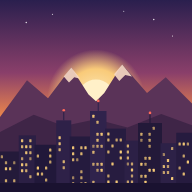

<!DOCTYPE html>
<html lang="ru">
<head>
<meta charset="utf-8">
<meta name="viewport" content="width=device-width, initial-scale=1, maximum-scale=1, user-scalable=no, viewport-fit=cover">
<meta name="theme-color" content="#15140f">
<meta name="apple-mobile-web-app-capable" content="yes">
<meta name="mobile-web-app-capable" content="yes">
<meta name="apple-mobile-web-app-status-bar-style" content="black-translucent">
<meta name="apple-mobile-web-app-title" content="Ихсан">
<link rel="manifest" href="manifest.webmanifest">
<link rel="icon" type="image/png" href="icon-192.png" id="favi">
<link rel="apple-touch-icon" href="apple-touch-icon.png" id="appleic">
<title>Ихсан — мой год</title>
<style>
:root{
  --bg:#f5f2ea; --card:#fffdf7; --ink:#1d1b17; --muted:#777164; --line:#e3ddcf; --soft:#efebe1;
  --faith:#1f7a5a; --mind:#3557a8; --spirit:#b0601f; --body:#b23838;
  --faith-s:#e3f1ea; --mind-s:#e6ecf8; --spirit-s:#f7ebdf; --body-s:#f8e4e4;
  --good:#1f7a5a; --bad:#b23838; --gold:#b8892a;
  --r:14px; --sat:env(safe-area-inset-top,0px); --sab:env(safe-area-inset-bottom,0px);
}
@media (prefers-color-scheme:dark){:root{
  --bg:#13120e; --card:#1c1b16; --ink:#eeeae0; --muted:#a19b8e; --line:#2f2c25; --soft:#25231d;
  --faith:#5cc69b; --mind:#86a6ee; --spirit:#ec9f62; --body:#ee8585;
  --faith-s:#1a2c24; --mind-s:#1c2436; --spirit-s:#30251b; --body-s:#321f1f; --good:#5cc69b; --bad:#ee8585; --gold:#e0b257;}}
*{box-sizing:border-box;-webkit-tap-highlight-color:transparent}
html,body{margin:0;background:var(--bg);color:var(--ink);font:16px/1.5 -apple-system,BlinkMacSystemFont,"Segoe UI",Roboto,Arial,sans-serif}
button,input,textarea,select{font:inherit;color:inherit}
button{cursor:pointer}
.app{display:flex;min-height:100vh}
aside{display:none}
main{flex:1;min-width:0;padding:10px 14px calc(92px + var(--sab));max-width:820px;margin:0 auto}
.top{display:flex;align-items:center;gap:8px;margin:4px 0 14px}
.top h1{font-size:22px;margin:0;flex:1;letter-spacing:-.01em}
.icon-btn{border:1px solid var(--line);background:var(--card);border-radius:10px;padding:7px 11px;font-size:14px;color:var(--ink);text-decoration:none}
nav.bottom{position:fixed;left:0;right:0;bottom:0;z-index:20;background:var(--card);border-top:1px solid var(--line);display:flex;padding:6px 4px calc(6px + var(--sab))}
nav.bottom a{flex:1;min-width:0;text-align:center;text-decoration:none;color:var(--muted);font-size:11px;padding:4px 0;border-radius:10px;white-space:nowrap;overflow:hidden}
@media (max-width:420px){nav.bottom a{font-size:10px;letter-spacing:-.01em} nav.bottom a .i{font-size:19px}}
nav.bottom a .i{display:block;font-size:20px;line-height:1.2}
nav.bottom a.on{color:var(--ink);font-weight:600}
nav.bottom a.on .i{transform:scale(1.08)}
@media (min-width:900px){
  aside{display:flex;flex-direction:column;width:230px;flex:none;position:sticky;top:0;height:100vh;padding:24px 14px;border-right:1px solid var(--line);background:var(--card)}
  aside .brand{font-weight:700;font-size:19px;margin:0 8px 4px}
  aside .brand-s{color:var(--muted);font-size:13px;margin:0 8px 20px}
  aside a{display:flex;gap:10px;align-items:center;text-decoration:none;color:var(--ink);padding:9px 10px;border-radius:10px;margin:1px 0}
  aside a:hover{background:var(--soft)} aside a.on{background:var(--soft);font-weight:600}
  aside .foot{margin-top:auto;color:var(--muted);font-size:12px;padding:8px}
  nav.bottom{display:none} main{padding:28px 32px 60px} .top .mob{display:none}
}
.card{background:var(--card);border:1px solid var(--line);border-radius:var(--r);padding:16px;margin:0 0 12px}
.card h2{font-size:17px;margin:0 0 10px;display:flex;align-items:center;gap:8px}
.card h3{font-size:15px;margin:14px 0 8px}
.muted{color:var(--muted)} .small{font-size:13px} .tiny{font-size:12px}
.row{display:flex;gap:10px;align-items:center;flex-wrap:wrap}
.grow{flex:1}
.dot{width:10px;height:10px;border-radius:50%;display:inline-block;flex:none}
.chip{display:inline-flex;align-items:center;gap:6px;border:1px solid var(--line);background:var(--soft);border-radius:999px;padding:4px 11px;font-size:13px}
.chips{display:flex;flex-wrap:wrap;gap:6px}
.chip.btn.on{background:var(--ink);color:var(--card);border-color:var(--ink)}
.datebar{display:flex;align-items:center;gap:6px;margin-bottom:12px}
.datebar .d{flex:1;text-align:center}
.datebar .d b{display:block;font-size:20px}
.navbtn{border:1px solid var(--line);background:var(--card);border-radius:10px;width:42px;height:42px;font-size:18px}
.banner{border-radius:12px;padding:11px 14px;margin-bottom:12px;font-size:14px;background:var(--spirit-s);border:1px solid var(--line)}
.rings{display:flex;gap:16px;align-items:center}
.rings svg{flex:none}
.legend{flex:1;display:grid;gap:6px}
.legend div{display:flex;align-items:center;gap:8px;font-size:14px}
.legend b{margin-left:auto;font-variant-numeric:tabular-nums}
.big{font-size:34px;font-weight:700;line-height:1;letter-spacing:-.02em}
.item{display:flex;align-items:center;gap:12px;width:100%;text-align:left;background:none;border:0;border-top:1px solid var(--line);padding:12px 2px;min-height:52px}
.item:first-of-type{border-top:0}
.mark{width:30px;height:30px;border-radius:50%;border:2px solid var(--line);display:grid;place-items:center;font-weight:700;font-size:14px;flex:none;transition:.15s}
.item .lbl{flex:1}
.item .hint{font-size:12px;color:var(--muted)}
.pr{display:flex;gap:6px;margin-top:2px}
.pr button{width:44px;height:38px;border-radius:10px;border:1.5px solid var(--line);background:var(--soft);font-size:12px;font-weight:600}
.pr button.on{background:var(--faith);border-color:var(--faith);color:#fff}
.axis-faith{--a:var(--faith);--as:var(--faith-s)} .axis-mind{--a:var(--mind);--as:var(--mind-s)}
.axis-spirit{--a:var(--spirit);--as:var(--spirit-s)} .axis-gold{--a:var(--gold);--as:color-mix(in srgb,var(--gold) 16%,var(--card))} .axis-body{--a:var(--body);--as:var(--body-s)}
.axcard{border-left:5px solid var(--a)}
.axcard h2 .pct{margin-left:auto;font-size:14px;color:var(--a)}
.mark.full{background:var(--a);border-color:var(--a);color:#fff}
.mark.half{background:var(--as);border-color:var(--a);color:var(--a)}
.nums{display:grid;grid-template-columns:repeat(auto-fit,minmax(130px,1fr));gap:10px}
label.f{display:block;font-size:13px;color:var(--muted)}
input.in,textarea.in,select.in{display:block;width:100%;margin-top:4px;border:1px solid var(--line);background:var(--bg);border-radius:10px;padding:10px 12px;outline:none}
input.in:focus,textarea.in:focus,select.in:focus{border-color:var(--muted)}
textarea.in{min-height:84px;resize:vertical}
.btn{border:1px solid var(--line);background:var(--card);border-radius:10px;padding:9px 15px;font-weight:600;font-size:14px}
.btn.pri{background:var(--ink);color:var(--card);border-color:var(--ink)}
.btn.danger{color:var(--bad)}
.tabs{display:flex;gap:6px;overflow-x:auto;margin:0 0 12px;padding-bottom:2px;scrollbar-width:none}
.tabs button{white-space:nowrap;border:1px solid var(--line);background:var(--card);border-radius:999px;padding:7px 13px;font-size:14px}
.tabs button.on{background:var(--ink);color:var(--card);border-color:var(--ink)}
table{width:100%;border-collapse:collapse;font-size:14px}
th,td{padding:8px 6px;border-bottom:1px solid var(--line);text-align:left;vertical-align:top}
th{font-size:12px;color:var(--muted);font-weight:600}
.wrap{overflow-x:auto}
.grid7 td,.grid7 th{text-align:center;padding:3px 1px}
.gridcard{padding:10px 6px}
.grid7 td:first-child,.grid7 th:first-child{text-align:left;padding-left:4px;font-size:13px;line-height:1.25}
.grid7 .dot{display:none}
@media(min-width:600px){.grid7 td:first-child{min-width:190px;font-size:14px}.grid7 .dot{display:inline-block}}
.grid7 th{font-size:11px}
.cellbtn{width:29px;height:29px;border-radius:9px;border:1.5px solid var(--line);background:var(--bg);font-weight:700;font-size:13px}
.cellbtn.full{background:var(--a);border-color:var(--a);color:#fff}
.cellbtn.half{background:var(--as);border-color:var(--a);color:var(--a)}
.cellbtn.fut{opacity:.35}
.today-col{background:var(--soft)}
.kpis{display:grid;grid-template-columns:repeat(auto-fit,minmax(140px,1fr));gap:10px;margin-bottom:12px}
.kpi{background:var(--card);border:1px solid var(--line);border-radius:12px;padding:12px}
.kpi .v{font-size:24px;font-weight:700;font-variant-numeric:tabular-nums}
.kpi .l{font-size:12px;color:var(--muted)}
.bar{height:10px;border-radius:99px;background:var(--soft);overflow:hidden}
.bar i{display:block;height:100%;border-radius:99px;background:var(--a)}
.axrow{display:grid;grid-template-columns:70px 1fr 44px;gap:10px;align-items:center;margin:8px 0;font-size:14px}
.axrow b{text-align:right;font-variant-numeric:tabular-nums}
.heat{display:grid;grid-auto-flow:column;grid-template-rows:repeat(7,1fr);gap:3px;overflow-x:auto}
.heat i{width:13px;height:13px;border-radius:3px;background:var(--soft);display:block}
.ladder .step{display:flex;gap:10px;align-items:flex-start;padding:7px 0;border-top:1px dashed var(--line)}
.ladder .lv{width:34px;height:28px;border-radius:8px;display:grid;place-items:center;font-weight:700;font-size:13px;background:var(--soft);flex:none}
.done{color:var(--good)}
.delta.up{color:var(--good)} .delta.down{color:var(--bad)}
.lock{text-align:center;padding:30px 16px}
.lock .lockico{font-size:44px}
.photo{aspect-ratio:3/4;border-radius:12px;border:1.5px dashed var(--line);display:grid;place-items:center;overflow:hidden;background:var(--soft);position:relative}
.photo img{width:100%;height:100%;object-fit:cover}
.cmp{position:relative;aspect-ratio:3/4;border-radius:12px;overflow:hidden;max-width:420px;margin:0 auto}
.cmp img{position:absolute;inset:0;width:100%;height:100%;object-fit:cover}
.cmp .clip{position:absolute;inset:0;overflow:hidden}
.cmp .tagL,.cmp .tagR{position:absolute;top:8px;background:rgba(0,0,0,.55);color:#fff;font-size:12px;padding:2px 8px;border-radius:6px}
.cmp .tagL{left:8px}.cmp .tagR{right:8px}
.cmp .ln{position:absolute;top:0;bottom:0;width:2px;background:#fff;box-shadow:0 0 4px rgba(0,0,0,.5)}
.two{display:grid;grid-template-columns:1fr 1fr;gap:10px}
.sched td.t{white-space:nowrap;font-weight:600;font-variant-numeric:tabular-nums;width:1%}
.sched tr.p td{background:var(--faith-s)}
.entry-list button{display:block;width:100%;text-align:left;border:0;border-top:1px solid var(--line);background:none;padding:9px 4px}
.entry-list button.on{font-weight:700}
.gtabs{display:flex;gap:3px;padding:3px;background:var(--soft);border-radius:12px;margin:-2px 0 10px;overflow-x:auto} .gtabs a{flex:1;text-align:center;padding:6px 10px;border-radius:10px;color:var(--muted);text-decoration:none;font-weight:600;font-size:14px;white-space:nowrap} .gtabs a.on{background:var(--card);color:var(--ink);box-shadow:0 1px 4px rgba(0,0,0,.12)}
@media (min-width:900px){.gtabs.mob{display:none}}
#ev{position:fixed;inset:0;z-index:46} .evbg{position:absolute;inset:0;background:rgba(0,0,0,.4)} body.evon{overflow:hidden}
.evsheet{position:absolute;left:0;right:0;bottom:0;max-width:560px;margin:0 auto;max-height:92vh;overflow:auto;background:var(--bg);border-radius:22px 22px 0 0;padding:16px 16px calc(16px + var(--sab, 0px));box-shadow:0 -10px 40px rgba(0,0,0,.25);animation:evup .25s ease-out}
@keyframes evup{from{transform:translateY(40px);opacity:0}} @media (prefers-reduced-motion:reduce){.evsheet{animation:none}}
.evblk{background:var(--card);border-radius:var(--r,16px);padding:12px 14px;margin:10px 0} .evbig{display:flex;align-items:baseline;gap:10px} .evbig b{font-size:30px;line-height:1} .evbig.ok b{color:var(--good)} .bkcard{border-left:3px solid var(--spirit)} .evsheet .bkcard{margin:10px 0;box-shadow:none}
.yban{display:block;text-decoration:none;color:inherit;font-weight:600} .ybig{display:flex;align-items:baseline;gap:10px;margin-top:6px} .ybig b{font-size:40px;line-height:1;color:var(--good)} .ylinks{display:grid;grid-template-columns:1fr 1fr;gap:8px} .ylinks .btn{text-align:center;text-decoration:none}
.pbig{display:flex;align-items:baseline;gap:10px;margin-top:4px} .pbig b{font-size:32px;line-height:1} .pneeds{display:grid;grid-template-columns:1fr;gap:5px} .pn{display:grid;grid-template-columns:118px 1fr 40px;gap:8px;align-items:center;font-size:13.5px} .pn b{text-align:right;font-size:13px} .pn .bar i{background:var(--good)} .pn.low .bar i{background:var(--gold)} .pn.low span{font-weight:600}
@media (min-width:600px){.pneeds{grid-template-columns:1fr 1fr;column-gap:18px}}
.newscard .nhead{font-family:Georgia,'Times New Roman',serif;font-size:18px;font-weight:700;line-height:1.25;margin-top:6px} .nlist{margin:6px 0 0;padding-left:18px;font-size:14px;line-height:1.45} .nlist li{margin:2px 0}
.reqcard{border-left:3px solid var(--gold)} .reqcard.done{border-left-color:var(--good)}
#bnav .i{position:relative} .ndot{position:absolute;top:-2px;right:-6px;width:9px;height:9px;border-radius:50%;background:#e0553f;box-shadow:0 0 0 2px var(--card)} .ndot.side{position:static;display:inline-block;margin-left:6px;vertical-align:2px}
.daystrip{display:flex;align-items:center;gap:12px;text-decoration:none;color:inherit;padding:10px 14px} .daystrip .grow{display:flex;flex-direction:column;min-width:0} .daystrip .dsp{font-weight:700;font-size:17px;min-width:48px;height:48px;border-radius:50%;display:grid;place-items:center;background:var(--soft)} .daystrip .dsp.ok{background:color-mix(in srgb, var(--good) 20%, var(--card));color:var(--good)} .daystrip .dgo{font-weight:600;color:var(--spirit);white-space:nowrap;font-size:14px}
.prwrap{display:grid;place-items:center;margin:6px 0} .prclock{width:min(300px,86vw);height:auto}
.prlist{display:grid;grid-template-columns:1fr 1fr;gap:6px 14px;margin-top:6px} .prl{display:flex;justify-content:space-between;padding:6px 10px;border-radius:10px;background:var(--soft);font-size:14.5px} .prl.on{background:color-mix(in srgb,var(--faith) 18%,var(--card));font-weight:700} .prl.past{opacity:.6} .prl.ram{grid-column:1/-1;background:color-mix(in srgb,var(--faith) 10%,var(--card))}
.pradj{display:grid;grid-template-columns:1fr 1fr;gap:6px 12px} .pra{display:flex;align-items:center;gap:6px;font-size:14px} .pra span{flex:1} .pra .navbtn{width:32px;height:32px;min-height:0} .pra b{min-width:26px;text-align:center}
.pr button{display:inline-flex;flex-direction:column;align-items:center;line-height:1.1} .pr button .prt{font-size:10px;font-weight:500;opacity:.75;margin-top:2px}
.ramcard{border-left:3px solid var(--faith);background:color-mix(in srgb,var(--faith) 7%,var(--card))} .ramcard.eid{border-left-color:var(--gold)} .ramrow{display:grid;grid-template-columns:repeat(3,1fr);gap:6px;margin-top:8px;text-align:center} .ramrow div{display:flex;flex-direction:column;background:var(--card);border-radius:10px;padding:6px} .ramrow b{font-size:18px}
.hcal{display:grid;grid-template-columns:repeat(7,1fr);gap:4px} .hdn{text-align:center;font-size:11px;color:var(--muted)} .hd{position:relative;display:flex;flex-direction:column;align-items:center;padding:5px 0;border-radius:9px;background:var(--soft)} .hd b{font-size:15px;line-height:1.1} .hd i{font-style:normal;font-size:9.5px;color:var(--muted)} .hd.now{outline:2px solid var(--pri,var(--ink))} .hd.ev{background:color-mix(in srgb,var(--gold) 30%,var(--card))} .hd.ram{background:color-mix(in srgb,var(--faith) 18%,var(--card))} .hd em{position:absolute;top:3px;right:4px;width:5px;height:5px;border-radius:50%;background:var(--faith)}
.hleg{display:inline-block;width:10px;height:10px;border-radius:3px;vertical-align:-1px} .hleg.ev{background:color-mix(in srgb,var(--gold) 30%,var(--card))} .hleg.ram{background:color-mix(in srgb,var(--faith) 18%,var(--card))} .hev{padding:7px 0;border-top:1px solid var(--line);align-items:center}
.tbk{grid-template-columns:1fr 1fr !important;gap:6px} .tbk .kpi{padding:8px 10px} .tbk .kpi .v{font-size:18px}
#onb{position:fixed;inset:0;z-index:70;overflow-y:auto;background:var(--bg);padding:calc(16px + var(--sat)) 16px calc(24px + var(--sab))} .onbsheet{max-width:560px;margin:0 auto}
.onbhead{display:flex;align-items:center;gap:14px;margin:8px 0 12px} .onbhead img{border-radius:16px;box-shadow:var(--sh)} .onbhead b{display:block;font-size:26px;letter-spacing:-.02em} .onbhead span{color:var(--muted);font-size:14px}
.onbblk{background:var(--card);border:1px solid var(--line);border-radius:var(--r,16px);padding:14px;margin:12px 0;box-shadow:var(--sh)} .onbblk > b{display:block;margin-bottom:6px} .onbblk .in{margin-top:6px}
.onbax{margin:10px 0} .onbaxn{display:flex;align-items:center;gap:6px;font-weight:650;font-size:14px;margin-bottom:6px}
.howcard summary{display:flex;justify-content:space-between;align-items:center;cursor:pointer;list-style:none} .howcard summary::-webkit-details-marker{display:none}
.hfour{display:grid;grid-template-columns:1fr 1fr;gap:6px} .hb4{padding:7px 9px;border-radius:10px;background:var(--soft);display:flex;flex-direction:column;gap:1px} .hb4 b{display:flex;align-items:center;gap:6px;font-size:13.5px} .hb4 span{font-size:11.5px;color:var(--muted)}
.howflow{margin-top:10px;font-size:13px} .hrow{display:flex;justify-content:center} .hsplit{display:grid;grid-template-columns:1fr 1fr;gap:10px;margin-top:4px} .hcol{display:flex;flex-direction:column;align-items:stretch}
.hbox{display:flex;flex-direction:column;gap:2px;padding:8px 10px;border-radius:12px;background:var(--soft);border:1px solid var(--line);text-decoration:none;color:var(--ink);text-align:center} .hbox b{font-size:14px} .hbox span{font-size:11.5px;color:var(--muted);line-height:1.3}
.hrow .hbox{min-width:60%} .hbox.gold{background:color-mix(in srgb,var(--gold) 18%,var(--card))} .hbox.faith{background:color-mix(in srgb,var(--faith) 14%,var(--card))} .harr{text-align:center;color:var(--muted);font-size:11.5px;margin:4px 0}
.qmini .qdeg{font-size:28px;font-weight:750;min-width:64px;text-align:center;color:var(--faith)} details.mpl{border-top:1px solid var(--line);padding:8px 0} details.mpl summary{cursor:pointer}
.unlcard{border-left:3px solid var(--pri,var(--gold));background:color-mix(in srgb,var(--tint,#f3e6c8) 35%,var(--card))} .nextunl{padding:10px 14px} .hbox.locked{opacity:.5;pointer-events:none} .hbox.locked b::after{content:' — скоро';font-weight:400;font-size:11px;color:var(--muted)}
main{zoom:var(--fz,1)} #townwrap{zoom:calc(1 / var(--fz,1))} #ev .evsheet{zoom:var(--fz,1)}
.hifz{margin-top:10px;padding:10px 12px;border-radius:12px;background:color-mix(in srgb,var(--faith) 9%,var(--card));border:1px solid color-mix(in srgb,var(--faith) 25%,var(--line))} .hrow2{display:flex;gap:6px;align-items:center;padding:3px 0} .hrow2 .chip{min-height:30px;padding:3px 10px;font-size:13px} .hsr{padding:7px 0;border-top:1px solid var(--line)}
.gsug{margin:10px 0 6px;padding:8px 10px;border-radius:10px;background:var(--soft)} .gnums{display:grid;gap:6px} .gnum{display:flex;align-items:center;justify-content:space-between;gap:8px;padding:4px 0;border-top:1px solid var(--line)} .gnum .tiny{font-size:13px} .gnum b{min-width:52px;text-align:center;font-size:18px} .gnum .navbtn{width:38px;height:38px;min-height:0}
.hero .rings{flex-wrap:wrap;justify-content:center;row-gap:10px} .hero .legend{min-width:0;flex:1 1 140px}
.bnotes{margin-top:6px} .bnotes summary{cursor:pointer;color:var(--spirit)}
.waytabs{display:grid;grid-template-columns:repeat(4,1fr);gap:6px;margin-bottom:12px} .wt{display:flex;flex-direction:column;align-items:center;gap:4px;padding:8px 4px;border-radius:14px;background:var(--card);font-size:13px;font-weight:600;color:var(--muted)} .wt .axb{width:30px;height:30px;border-radius:10px;display:grid;place-items:center;background:var(--a-s, var(--soft));color:var(--a)} .wt.on{color:var(--ink);border-color:var(--a) !important;box-shadow:0 0 0 2px color-mix(in srgb,var(--a) 30%,transparent)}
.wayhead{border-left:4px solid var(--a)} .waytoday{display:flex;align-items:center;gap:10px;margin-top:10px;padding:8px 10px;border-radius:12px;background:var(--soft);text-decoration:none;color:var(--ink);font-size:13.5px} .waytoday .dgo{color:var(--spirit);font-weight:600;white-space:nowrap}
.waygrid{display:grid;grid-template-columns:1fr 1fr;gap:10px;margin-bottom:14px} .wtile{display:flex;flex-direction:column;align-items:flex-start;gap:4px;padding:14px;border-radius:var(--r,16px);background:var(--card);text-align:left;min-height:108px;box-shadow:var(--sh)} .wtile b{font-size:15px} .wti{width:36px;height:36px;border-radius:12px;display:grid;place-items:center;background:color-mix(in srgb,var(--a) 14%,var(--card));color:var(--a);font-size:18px;margin-bottom:2px} .wtile.locked{opacity:.5}
.backc{margin:-6px 0 10px;display:inline-flex;text-decoration:none} .wtile,.wt{border:1.5px solid color-mix(in srgb,var(--pri,var(--ink)) 22%,var(--line));font:inherit;color:var(--ink);cursor:pointer} .wtile:active,.wt:active{transform:scale(.97)} .thint{color:var(--faith)}
.pr{display:grid !important;grid-template-columns:repeat(5,minmax(0,1fr));gap:4px} .pr button{min-width:0;padding-left:0;padding-right:0}
@media (max-width:360px){.pradj{grid-template-columns:1fr} .rhead{flex-wrap:wrap;row-gap:6px} .rhead .rst{flex-wrap:wrap}}
.khbig{display:flex;align-items:baseline;gap:10px} .khbig b{font-size:30px} .qrow{padding:10px 0;border-top:1px solid var(--line)} .fafter{display:flex;flex-wrap:wrap;gap:4px} .fafter .chip{min-width:34px;padding:3px 8px;justify-content:center}
.moodrow{display:grid;grid-template-columns:repeat(5,1fr);gap:4px} .mood{display:flex;flex-direction:column;align-items:center;gap:4px;padding:6px 2px;border-radius:12px;background:var(--card);border:1.5px solid var(--line);font-size:11.5px;color:var(--muted);cursor:pointer} .mood i{width:18px;height:18px;border-radius:50%;background:color-mix(in srgb,var(--mc) 35%,var(--card));border:2px solid var(--mc)} .mood.on{border-color:var(--mc);color:var(--ink);font-weight:650;background:color-mix(in srgb,var(--mc) 12%,var(--card))} .mood.on i{background:var(--mc)}
.kcal{display:grid;grid-template-columns:1fr 1fr;gap:12px} .kcal > div{display:flex;flex-direction:column;gap:2px} .kcal b{font-size:24px;line-height:1.1}
.pradj2{display:grid;gap:6px} .pra2{display:grid;grid-template-columns:repeat(5,minmax(0,1fr));gap:5px;align-items:center;font-size:14px;padding:6px 0;border-top:1px solid var(--line)} .pra2 > span{grid-column:1/-1} .pra2 .navbtn{height:36px;min-height:0;width:auto;font-size:13px;padding:0} .pra2 input.in{margin:0;padding:2px 0 !important;text-align:center;font-weight:700;min-width:0;height:36px;font-size:15px;-moz-appearance:textfield;appearance:textfield} .pra2 input::-webkit-inner-spin-button,.pra2 input::-webkit-outer-spin-button{-webkit-appearance:none;margin:0}
.qmini2{display:block;margin-top:10px;padding:10px 12px;border-radius:12px;background:color-mix(in srgb,var(--faith) 7%,var(--card));border:1px dashed color-mix(in srgb,var(--faith) 35%,var(--line));text-decoration:none;color:var(--ink);font-size:13.5px} .qmini2.on{border-style:solid} .card > .qmini2:first-child{margin-top:0}
.evbuys{margin:4px 0 0;padding-left:18px;font-size:14px} .evsheet a:not(.btn){color:var(--spirit);text-decoration:none;font-weight:600}
#modal .bg{position:fixed;inset:0;background:rgba(0,0,0,.45);z-index:50;display:grid;place-items:center;padding:20px}
#modal .box{background:var(--card);border-radius:16px;padding:20px;max-width:380px;width:100%}
#toast{position:fixed;left:50%;bottom:calc(84px + var(--sab));transform:translateX(-50%);background:var(--ink);color:var(--card);padding:9px 16px;border-radius:999px;font-size:14px;z-index:60;opacity:0;transition:.25s;pointer-events:none}
#toast.show{opacity:1}
.svgchart{width:100%;height:auto;display:block}
.sep{height:1px;background:var(--line);margin:12px 0}
.capsule{text-align:center;padding:20px}
.pill-good{color:var(--good);font-weight:600}
/* ---- Практика: таймер ---- */
.tchip.run{background:var(--a);border-color:var(--a);color:#fff}
.tchip.pause{background:var(--as);border-color:var(--a);color:var(--a)}
.tchip b{font-variant-numeric:tabular-nums}
.trun{display:flex;gap:16px;align-items:center;flex-wrap:wrap}
.tring{position:relative;width:132px;height:132px;flex:none;margin:0 auto}
.tring svg{display:block}
.tring .tt{position:absolute;inset:0;display:grid;place-items:center;font-size:27px;font-weight:700;font-variant-numeric:tabular-nums}
.trow{display:flex;flex-wrap:wrap;align-items:center;gap:8px 10px;padding:12px 0;border-top:1px solid var(--line)}
.trow:first-child{border-top:0}
.trow .temo{font-size:22px;width:30px;text-align:center;flex:none}
.trow .nm{flex:1;min-width:160px}
.tctl{display:flex;align-items:center;gap:8px;margin-left:auto}
.stepper{display:flex;align-items:center;border:1px solid var(--line);border-radius:10px;overflow:hidden;background:var(--bg)}
.stepper button{border:0;background:var(--soft);width:40px;height:40px;font-size:19px}
.stepper span{min-width:64px;text-align:center;font-weight:600;font-variant-numeric:tabular-nums;font-size:15px}
.btn.go{min-width:100px;padding:10px 14px}
/* ---- Практика: чётки ---- */
:root{--bead1:#d39b5c;--bead2:#7b4a1f;--cur1:#41b38a;--cur2:#145c42}
@media (prefers-color-scheme:dark){:root{--bead1:#e0ad72;--bead2:#6b3f19;--cur1:#7fe0b9;--cur2:#1f7a5a}}
.tbhead{text-align:center}
.tbar{font-size:32px;line-height:1.5;font-family:"Amiri","Noto Naskh Arabic","Geeza Pro","Traditional Arabic","Times New Roman",serif;color:var(--faith)}
.tbname{font-weight:600}
.tbcount{text-align:center;font-size:48px;font-weight:800;line-height:1.1;margin-top:4px;font-variant-numeric:tabular-nums;letter-spacing:-.02em}
.tbcount .muted{font-size:22px;font-weight:600}
.beads{position:relative;height:min(52vh,440px);min-height:300px;margin:10px -16px 0;overflow:hidden;cursor:pointer;touch-action:manipulation;user-select:none;-webkit-user-select:none;
  background:radial-gradient(ellipse 60% 50% at 50% 56%, var(--faith-s), transparent 75%);
  -webkit-mask-image:linear-gradient(transparent,#000 16%,#000 84%,transparent);mask-image:linear-gradient(transparent,#000 16%,#000 84%,transparent)}
.beads::before{content:'';position:absolute;left:50%;top:0;bottom:0;width:2px;margin-left:-1px;background:var(--gold);opacity:.55}
.bead{position:absolute;left:50%;top:0;width:38px;height:38px;margin:-19px 0 0 -19px;border-radius:50%;pointer-events:none;
  background:radial-gradient(circle at 34% 28%,rgba(255,255,255,.75) 0,rgba(255,255,255,0) 26%),radial-gradient(circle at 50% 45%,var(--bead1),var(--bead2) 92%);
  box-shadow:inset 0 -4px 7px rgba(0,0,0,.28),0 3px 6px rgba(0,0,0,.22);
  transition:transform .4s cubic-bezier(.25,1.25,.45,1),opacity .4s,filter .4s;will-change:transform}
.bead.past{opacity:.42;filter:saturate(.55)}
.bead.last:not(.cur){box-shadow:inset 0 -4px 7px rgba(0,0,0,.28),0 0 0 3px var(--gold)}
.bead.cur{background:radial-gradient(circle at 34% 28%,rgba(255,255,255,.8) 0,rgba(255,255,255,0) 26%),radial-gradient(circle at 50% 45%,var(--cur1),var(--cur2) 92%);
  box-shadow:inset 0 -4px 7px rgba(0,0,0,.25),0 0 0 5px color-mix(in srgb,var(--faith) 28%,transparent),0 0 26px color-mix(in srgb,var(--faith) 55%,transparent)}
.beads.lap{animation:lap .8s ease-out}
@keyframes lap{0%{background-color:color-mix(in srgb,var(--gold) 35%,transparent)}100%{background-color:transparent}}
.tbhint{position:absolute;left:0;right:0;bottom:18px;text-align:center;font-size:12px;color:var(--muted);pointer-events:none}
/* ---- Практика: кибла ---- */
.qwrap{max-width:300px;margin:0 auto 8px}
.qdial{width:100%;height:auto;display:block}
.qring{stroke:var(--line);stroke-width:2;transition:stroke .3s}
#qbox.ok .qring{stroke:var(--good);stroke-width:6}
#qrose{transform-box:view-box;transform-origin:150px 150px;transition:transform .2s linear}
/* ---- Дерево года ---- */
.tree{max-width:540px;margin:0 auto;border-radius:12px;overflow:hidden}
.tree svg{display:block;width:100%;height:auto}
.tree [data-act]{cursor:pointer}
.tree .sel{filter:drop-shadow(0 0 5px rgba(255,214,110,.95))}
.tparts{display:flex;flex-wrap:wrap;gap:6px;justify-content:center;margin:10px 0 2px}
.tparts .chip{padding:7px 12px;font-size:13px}
.tparts .chip.on{background:var(--ink);color:var(--card);border-color:var(--ink)}
.glist .g{display:grid;grid-template-columns:1fr 84px 40px;gap:8px;align-items:center;padding:6px 0;border-top:1px solid var(--line);font-size:14px}
.glist .g:first-child{border-top:0}
.plot{max-width:760px;margin:0 auto;border-radius:10px;overflow:hidden}
.plot svg{display:block;width:100%;height:auto}
.psway{transform-box:view-box;animation:psway 7s ease-in-out infinite}
.psmk{transform-box:fill-box;transform-origin:center;animation:psmk 4.8s linear infinite}
@keyframes psway{0%,100%{transform:rotate(-.9deg)}50%{transform:rotate(.9deg)}}
@keyframes psmk{0%{transform:translate(-2px,8px) scale(.5);opacity:0}20%{opacity:.5}100%{transform:translate(9px,-20px) scale(1.7);opacity:0}}
@media (prefers-reduced-motion:reduce){.psway,.psmk{animation:none}}
.plegend{display:grid;grid-template-columns:repeat(2,minmax(0,1fr));gap:6px;margin:8px 0 2px}
.plegend .chip{padding:6px 6px;justify-content:center;font-size:13px;white-space:nowrap;min-width:0}
@media (min-width:520px){.plegend{grid-template-columns:repeat(4,minmax(0,1fr))}}
.plotgrid{display:grid;gap:0 12px;grid-template-columns:minmax(0,1fr)}
@media (min-width:900px){.plotgrid{grid-template-columns:minmax(0,1.2fr) minmax(0,1fr);grid-template-areas:"pic cards" "coins cards";grid-template-rows:auto 1fr;align-items:start}.pg-pic{grid-area:pic}.pg-cards{grid-area:cards}.pg-coins{grid-area:coins}}
.plist .g{display:flex;justify-content:space-between;gap:10px;align-items:center;padding:7px 0;border-top:1px solid var(--line);font-size:14px}
.plist .g:first-child{border-top:0}
.plist .g b{font-variant-numeric:tabular-nums;font-size:14px;white-space:nowrap}
.proom.sel{border-color:var(--gold);box-shadow:0 0 0 2px color-mix(in srgb,var(--gold) 35%,transparent)}
.rhead{display:flex;align-items:center;gap:8px;font-size:16px}
.rhead .rst{margin-left:auto;font-size:12px;color:var(--muted);font-variant-numeric:tabular-nums}
.rdot{width:12px;height:12px;border-radius:4px;background:var(--a);flex:none}
.ico{width:22px;height:22px;flex:none;display:block}
.steps{display:flex;margin:12px 0 10px}
.steps .st{flex:1;text-align:center;font-size:12px;color:var(--muted);position:relative}
.steps .st i{display:grid;place-items:center;width:26px;height:26px;margin:0 auto 4px;border-radius:50%;background:var(--card);border:2px solid var(--line);font-style:normal;font-weight:700;font-size:12px;position:relative;z-index:1}
.steps .st::before{content:'';position:absolute;top:12px;right:50%;width:100%;height:2px;background:var(--line)}
.steps .st:first-child::before{display:none}
.steps .st.done{color:var(--ink)} .steps .st.done i{background:var(--a);border-color:var(--a);color:var(--card)} .steps .st.done::before{background:var(--a)}
.steps .st.cur{color:var(--ink);font-weight:600} .steps .st.cur i{border-color:var(--a);color:var(--a)}
.prow{display:flex;justify-content:space-between;font-size:13px;margin-bottom:5px} .prow b{font-variant-numeric:tabular-nums}
.needs{display:flex;flex-wrap:wrap;gap:6px;margin:10px 0 0}
.need{display:inline-flex;align-items:center;gap:6px;border:1px solid var(--line);background:var(--soft);border-radius:10px;padding:5px 9px 5px 6px;font-size:13px;color:var(--ink)}
.need b{font-variant-numeric:tabular-nums} .need.have{border-color:color-mix(in srgb,var(--good) 55%,var(--line))} .need.have b{color:var(--good)}
.need.buy{background:var(--card);border-style:dashed;border-color:var(--gold);font-weight:600}
.rrow{display:flex;align-items:center;gap:10px;padding:11px 0;border-top:1px solid var(--line)} .rrow .rdot{align-self:flex-start;margin-top:5px}
.rrow.sel{background:color-mix(in srgb,var(--gold) 12%,transparent);margin:0 -10px;padding:11px 10px;border-radius:10px;border-top-color:transparent}
.rname{display:flex;gap:8px;align-items:baseline;flex-wrap:wrap} .rrow .btn{flex:none;padding:9px 12px}
.lookprev{background:var(--soft);border-radius:12px;margin:10px 0 4px;overflow:hidden} .lookprev svg{display:block;width:100%;max-width:420px;height:auto;margin:0 auto}
.lrow{display:grid;gap:6px;padding:9px 0;border-top:1px solid var(--line)}
.sws{display:flex;flex-wrap:wrap;gap:8px} .sw{width:32px;height:32px;border-radius:50%;border:2px solid var(--card);background:var(--c);box-shadow:0 0 0 1.5px var(--line);padding:0}
.sw.on{box-shadow:0 0 0 2.5px var(--ink)} .lrow .chip.btn{padding:7px 11px;background:var(--card)} .lrow .chip.btn.on{background:var(--ink)}
.townwrap{position:relative;border-radius:12px;overflow:hidden;height:min(58vh,460px);background:var(--soft)}
@media (display-mode:standalone){main{padding-top:calc(12px + var(--sat))}}
.townwrap.full{position:fixed;inset:0;z-index:45;border-radius:0;height:auto;max-height:none}
body.tfull{overflow:hidden} body.tfull nav.bottom{display:none}
.tfbtn{position:absolute;right:8px;top:8px;width:40px;height:40px;background:color-mix(in srgb,var(--card) 88%,transparent)}
.townwrap.full .tfbtn{top:calc(10px + var(--sat))} .townwrap.full .tmbtn{bottom:calc(12px + var(--sab))}
body.tfull #tsel{position:fixed;left:8px;right:64px;bottom:calc(8px + var(--sab));z-index:46;max-height:46vh;overflow:auto;margin:0;box-shadow:0 8px 28px rgba(0,0,0,.28)}
@media (min-width:900px){.townwrap{height:min(66vh,620px)}}
html,body{touch-action:pan-x pan-y;overscroll-behavior-y:none}
@media (display-mode:standalone){body::before{content:'';position:fixed;left:0;right:0;top:0;height:var(--sat);background:var(--bg);z-index:44;pointer-events:none}} /* страница не приближается пальцами и двойным касанием; карта города — своим жестом */
#tmap{display:block;width:100%;height:100%;touch-action:none;cursor:grab;user-select:none;-webkit-user-select:none} #tmap.drag{cursor:grabbing}
.tmbtn{position:absolute;right:8px;bottom:8px;display:grid;gap:6px} .tmbtn .navbtn{width:40px;height:40px;background:color-mix(in srgb,var(--card) 88%,transparent)}
.lvd{display:inline-flex;gap:4px;flex:none} .lvd i{width:9px;height:9px;border-radius:50%;background:var(--soft);border:1.5px solid var(--line)} .lvd i.on{background:var(--gold);border-color:var(--gold)}
.clv{width:44px;height:44px;border-radius:14px;display:grid;place-items:center;background:var(--as);color:var(--a);font-size:22px;font-weight:750;flex:none}
.tgoal .btn{padding:8px 14px;min-height:38px}
.home{max-width:640px;margin:0 auto;border-radius:12px;overflow:hidden;background:var(--soft)} .home svg{display:block;width:100%;height:auto}
.hfire{animation:hfire 1.3s ease-in-out infinite alternate} @keyframes hfire{from{opacity:.75}to{opacity:1}} .hdot{animation:hdot 2.4s ease-in-out infinite} @keyframes hdot{0%,100%{opacity:.16}50%{opacity:.42}}
@media (prefers-reduced-motion:reduce){.hfire,.hdot{animation:none}}
@media (min-width:900px){.homegrid{display:grid;grid-template-columns:minmax(0,1.25fr) minmax(0,1fr);gap:0 12px;align-items:start}}
.hopts{display:grid;grid-template-columns:repeat(auto-fill,minmax(150px,1fr));gap:8px;margin-top:10px}
.hopt{display:flex;align-items:center;gap:8px;border:1.5px solid var(--line);background:var(--soft);border-radius:12px;padding:9px 10px;font-size:13.5px;text-align:left;min-height:44px}
.hopt i{width:20px;height:20px;border-radius:50%;flex:none;box-shadow:0 0 0 1.5px var(--line)} .hopt span{flex:1;min-width:0} .hopt b{font-size:13px;white-space:nowrap} .hopt .ic{color:var(--muted)}
.hopt.on{border-color:var(--ink);background:var(--card);font-weight:650} .hopt.try{border-color:var(--gold);border-style:dashed} .hopt.locked{opacity:.7}
.spines{display:flex;gap:3px;overflow-x:auto;padding:10px 2px 6px;margin-top:8px;align-items:flex-end;border-bottom:5px solid #8a6240;scrollbar-width:thin}
.spine{flex:none;width:30px;height:150px;border:0;border-radius:3px 3px 0 0;padding:6px 0;background:var(--soft);color:var(--muted);box-shadow:inset -3px 0 0 rgba(0,0,0,.12);position:relative;overflow:hidden}
.spine span{writing-mode:vertical-rl;transform:rotate(180deg);font-size:11px;line-height:1.1;height:100%;overflow:hidden;display:block;margin:0 auto;white-space:nowrap}
@media (max-width:420px){.tabs button{padding:8px 9px;font-size:13.5px}}
.spine.s2{background:var(--a);color:#fff} .spine.s1{background:var(--as);color:var(--ink);box-shadow:inset -3px 0 0 rgba(0,0,0,.12),inset 0 12px 0 var(--gold)} .spine:nth-child(3n){height:138px} .spine:nth-child(4n+1){height:144px}
.moregrid{display:grid;grid-template-columns:repeat(2,minmax(0,1fr));gap:12px} @media (min-width:700px){.moregrid{grid-template-columns:repeat(4,minmax(0,1fr))}}
.mtile{display:flex;flex-direction:column;gap:4px;text-decoration:none;color:var(--ink);margin:0;min-height:104px} .mtile .ic{font-size:24px;color:var(--muted);margin-bottom:6px}
.dfold{padding:0} .dfold summary{display:flex;align-items:center;gap:8px;padding:14px 16px;cursor:pointer;list-style:none} .dfold summary::-webkit-details-marker{display:none} .dfold summary .ic{color:var(--muted)} .dfold summary .muted{margin-left:auto}
.dfold[open] summary{padding-bottom:4px} .dfold .in{margin:6px 16px 16px;width:calc(100% - 32px)}
.nfield{display:flex;flex-direction:column;gap:5px;min-width:0} .nfield .f{font-size:13px;color:var(--muted)} .nfield .tiny{color:var(--muted)}
.nstep{display:flex;align-items:stretch;border:1px solid var(--line);border-radius:var(--r2);overflow:hidden;background:var(--bg)}
.nstep button{border:0;background:var(--soft);width:46px;min-height:46px;font-size:22px;flex:none;color:var(--ink)} .nstep button:active{background:var(--line)}
.nstep .in{margin:0;border:0;border-radius:0;text-align:center;font-weight:650;font-size:16px;padding:8px 2px;min-width:0;background:none;-moz-appearance:textfield} .nstep .in::-webkit-inner-spin-button{display:none} .nstep .in:focus{box-shadow:none}
.copts{margin:6px 0 8px} .copts .chip.btn{padding:7px 12px;min-height:36px;background:var(--card);text-align:left} .copts .chip.btn.on{background:var(--ink);color:var(--card)}
.hero .legend .hl small{font-size:12.5px;font-weight:500;color:var(--muted);display:block;margin-top:1px} .herofoot{margin-top:12px;padding-top:10px}
.flycoin{position:fixed;z-index:80;width:18px;height:18px;margin:0;pointer-events:none}
.giftcard{background:linear-gradient(150deg,color-mix(in srgb,var(--gold) 16%,var(--card)),var(--card) 60%);border-color:color-mix(in srgb,var(--gold) 45%,var(--line))}
.owni .item{flex:1;min-width:0} .owndel{flex:none;width:36px;height:36px;font-size:20px;line-height:1}
.gtools{position:absolute;left:8px;right:56px;top:8px;display:flex;gap:6px;overflow-x:auto;z-index:2;scrollbar-width:none;padding-bottom:2px} .gtools::-webkit-scrollbar{display:none} .gtools .chip{white-space:nowrap;background:color-mix(in srgb,var(--card) 92%,transparent);flex:none} .gtools .chip.on{background:var(--ink);color:var(--card)}
.banner.tmove{border-color:var(--gold);background:color-mix(in srgb,var(--gold) 12%,var(--card))}
.gchip{border-color:var(--gold);color:var(--ink)} .gchip .ic{color:var(--gold)}
.brow2{display:grid;grid-template-columns:1fr 1fr;gap:8px} .brow3{display:grid;grid-template-columns:repeat(3,1fr);gap:6px} .brow3 .btn{padding-left:6px;padding-right:6px;justify-content:center} .brow2 .chip{justify-content:center} .bcol{display:grid;gap:8px} .bcol .btn{justify-content:center}
#main .tabs{flex-wrap:wrap;overflow-x:visible} #main .tabs button{flex:1 1 auto}
.axeditbtn{display:block;margin:6px 0 0 auto;background:none;border:0;color:var(--muted);font-size:12.5px;padding:4px 0;cursor:pointer} .axe{padding:4px 0;border-top:1px solid var(--line);flex-wrap:nowrap;align-items:center}
.axh{cursor:pointer;user-select:none;-webkit-user-select:none} .axh .chev{margin-left:8px;color:var(--muted);font-size:14px;width:12px} .axcard.folded{padding-bottom:12px} .axcard.folded h2{margin-bottom:0}
.mtag{display:inline-block;margin-left:6px;padding:0 6px;border-radius:6px;font-size:10.5px;font-weight:600;line-height:16px;vertical-align:1px;color:color-mix(in srgb, var(--gold) 75%, var(--ink));background:color-mix(in srgb, var(--gold) 16%, transparent)}
.herofoot{gap:6px} .herofoot .chip{padding:4px 10px;font-size:12.5px;min-height:30px}
.gtiles{display:grid;grid-template-columns:repeat(3,minmax(0,1fr));gap:8px} .gtile{display:flex;flex-direction:column;align-items:flex-start;gap:3px;border:1.5px solid var(--line);background:var(--card);border-radius:14px;padding:10px;text-align:left;min-height:92px;transition:transform .12s}
.gtile:active{transform:scale(.96)} .gtile .ic{font-size:20px;color:var(--gold)} .gtile b{font-size:13.5px;line-height:1.2} .gtile .gp{margin-top:auto;font-weight:650;font-size:13px} .gtile:disabled{opacity:.5}
.tgoal{padding:11px 0;border-top:1px solid var(--line)} .tgoal.sel{background:color-mix(in srgb,var(--gold) 12%,transparent);margin:0 -10px;padding:11px 10px;border-radius:10px;border-top-color:transparent}
.tgoal .prow{margin-bottom:2px;font-size:14.5px;align-items:baseline;gap:8px} .card.selc{border-color:var(--gold);box-shadow:0 0 0 2px color-mix(in srgb,var(--gold) 35%,transparent)}
.tgoal .chip.btn{padding:7px 11px;background:var(--card);font-weight:600} .tgoal .chip.btn.on{background:var(--ink)} .chip.btn:disabled{opacity:.45;cursor:default}
@media (min-width:900px){.towngrid{display:grid;grid-template-columns:minmax(0,1fr) minmax(0,1fr);gap:0 12px;align-items:start}}
.btn.wide{display:block;width:100%;margin-top:12px;padding:11px 15px}
.shop{display:grid;gap:8px;grid-template-columns:minmax(0,1fr)}
.sitem{display:flex;align-items:center;gap:10px;border:1px solid var(--line);border-radius:12px;padding:8px 10px;background:var(--soft)}
.sitem .ico{width:28px;height:28px} .sitem .sn{flex:1;min-width:0;display:flex;flex-direction:column;line-height:1.25} .sitem .sn b{font-size:14px}
.sitem .sbtn{display:flex;gap:6px;flex:none} .sitem .chip.btn{padding:7px 11px;background:var(--card);font-weight:600}
.sinv{min-width:26px;text-align:center;font-size:12px;color:var(--muted);font-variant-numeric:tabular-nums} .sinv.has{color:var(--ink);font-weight:700}
.chip.have{color:var(--good);font-weight:600}
.btn:disabled{opacity:.5;cursor:default}
.coin{display:inline-block;width:.95em;height:.95em;border-radius:50%;vertical-align:-.12em;margin-left:.2em;background:radial-gradient(circle at 35% 35%,#ffe9a3,#e0b23c 55%,#a87a17);box-shadow:inset 0 0 0 .09em #b8892a}
.kpis.pk{grid-template-columns:repeat(3,minmax(0,1fr));gap:8px}
.kpis.pk .kpi{padding:10px}
@media (max-width:480px){.kpis.pk .v{font-size:19px}.kpis.pk .l{font-size:11px}}
.glist .g b{text-align:right;font-variant-numeric:tabular-nums;font-size:13px}
.ayah{text-align:center;font-size:14px;line-height:1.55}
.ayah .src{font-size:12px;color:var(--muted);margin-top:4px}
@media (min-width:900px){.treegrid{display:grid;grid-template-columns:minmax(0,1.15fr) minmax(0,1fr);gap:12px;align-items:start}}
/* ---- единый вид (v4): отступы, скругления, тени, свои иконки, мягкие переходы. Стоит в конце и уточняет правила выше ---- */
:root{--r:18px;--r2:12px;--sh:0 1px 2px rgba(70,52,20,.05),0 8px 24px rgba(70,52,20,.07);--bg:#f4f0e6;--card:#fffdf8;--line:#e8e1d2;--soft:#f1ecdf;--muted:#787163}
@media (prefers-color-scheme:dark){:root{--sh:0 1px 0 rgba(255,255,255,.03) inset,0 10px 28px rgba(0,0,0,.34);--bg:#11100c;--card:#1b1a15;--line:#2d2a23;--soft:#25231d;--muted:#a19b8e}}
html,body{-webkit-font-smoothing:antialiased;text-rendering:optimizeLegibility}
.ic{width:1.2em;height:1.2em;flex:none;fill:none;stroke:currentColor;stroke-width:1.8;stroke-linecap:round;stroke-linejoin:round;vertical-align:-.22em;display:inline-block}
main{padding-left:16px;padding-right:16px}
.top{margin:6px 0 16px} .top h1{font-size:25px;font-weight:750;letter-spacing:-.022em;line-height:1.15}
.card{border-radius:var(--r);box-shadow:var(--sh);margin-bottom:14px}
.card h2{font-size:16px;font-weight:680;margin-bottom:12px} .card h2 > .ic{color:var(--muted);font-size:18px}
.icon-btn{display:inline-flex;align-items:center;gap:6px;border-radius:var(--r2);padding:8px 12px;min-height:40px;box-shadow:var(--sh);transition:transform .12s}
.icon-btn:active,.btn:active,.chip.btn:active,.navbtn:active,.tabs button:active,.pr button:active,.cellbtn:active{transform:scale(.95)}
.btn{border-radius:var(--r2);padding:10px 16px;min-height:42px;display:inline-flex;align-items:center;justify-content:center;gap:7px;text-align:center;transition:transform .12s,background .15s,border-color .15s,opacity .15s}
.btn.wide{display:flex} a.btn{text-decoration:none;color:var(--ink)} a.btn.pri{color:var(--card);display:flex !important}
.chip{min-height:32px;gap:6px} .chip.btn{transition:transform .12s,background .15s,color .15s,border-color .15s}
.navbtn{border-radius:var(--r2);box-shadow:var(--sh);display:grid;place-items:center;transition:transform .12s;flex:none}
.tabs{gap:4px;background:var(--soft);padding:4px;border-radius:14px;border:1px solid var(--line)}
.tabs button{border:0;background:none;border-radius:10px;padding:8px 13px;display:inline-flex;align-items:center;gap:6px;flex:1 0 auto;justify-content:center;color:var(--muted);transition:background .15s,color .15s}
.tabs button.on{background:var(--card);color:var(--ink);box-shadow:var(--sh);font-weight:650}
input.in,textarea.in,select.in{border-radius:var(--r2);padding:11px 13px;transition:border-color .15s,box-shadow .15s}
input.in:focus,textarea.in:focus,select.in:focus{border-color:var(--ink);box-shadow:0 0 0 3px color-mix(in srgb,var(--ink) 12%,transparent)}
.kpi{border-radius:16px;box-shadow:var(--sh)} .kpi .v{letter-spacing:-.02em} .banner{border-radius:14px;padding:12px 14px}
.bar{height:8px} .bar i{transition:width .35s ease}
.datebar{margin-bottom:14px} .datebar .d b{font-size:19px;letter-spacing:-.01em}
.cellbtn{border-radius:10px;transition:background .15s,border-color .15s,transform .12s}
#toast{box-shadow:0 8px 24px rgba(0,0,0,.25);padding:10px 18px} #modal .box{border-radius:20px;box-shadow:0 20px 60px rgba(0,0,0,.35)} #modal .bg{backdrop-filter:blur(3px);-webkit-backdrop-filter:blur(3px)}
.sitem,.need{border-radius:var(--r2)} .lock .lockico .ic{font-size:44px;color:var(--muted)} .capsule .ic{color:var(--gold)}
/* меню */
nav.bottom{background:color-mix(in srgb,var(--card) 86%,transparent);backdrop-filter:blur(16px);-webkit-backdrop-filter:blur(16px);padding:6px 6px calc(6px + var(--sab));gap:2px}
nav.bottom a{padding:7px 0 5px;border-radius:12px;transition:color .15s,background .15s}
nav.bottom a .i{font-size:19px;line-height:1;height:23px;margin-bottom:3px} nav.bottom a.on{background:var(--soft)} nav.bottom a.on .i{transform:none}
@media (min-width:900px){aside{padding:26px 14px} aside a{gap:11px;border-radius:12px;padding:10px 12px;color:var(--muted);transition:background .15s,color .15s} aside a .ic{font-size:17px} aside a.on,aside a:hover{color:var(--ink)} aside .brand{font-size:20px;letter-spacing:-.02em}}
/* Сегодня */
.hero{padding:18px 16px 14px;background:linear-gradient(160deg,color-mix(in srgb,var(--gold) 10%,var(--card)),var(--card) 58%)}
.hero .rings{gap:18px} .hero .rings svg{color:var(--ink)} .ringarc{transition:stroke-dasharray .4s ease}
.hero .legend{gap:7px;min-width:0} .hero .legend .hl{font-size:18px;font-weight:720;letter-spacing:-.015em;margin-bottom:3px;display:block}
.hero .legend div{font-size:13.5px} .hero .legend .ln{width:46px;flex:none} .hero .legend .bar{flex:1;height:6px;min-width:20px} .hero .legend b{margin-left:0;width:38px;text-align:right;font-size:13px;flex:none}
.herofoot{display:flex;flex-wrap:wrap;gap:8px;margin-top:14px;padding-top:12px;border-top:1px solid var(--line)} .herofoot .chip{background:var(--card);text-decoration:none;color:var(--ink)} .herofoot .ic{color:var(--spirit)}
.axcard{border-left:1px solid var(--line)} .axcard h2{margin-bottom:6px}
.axb{width:32px;height:32px;border-radius:10px;display:grid;place-items:center;background:var(--as);color:var(--a);flex:none} .axb .ic{font-size:17px}
.axcard h2 .pct{font-size:13px;font-weight:650;background:var(--as);padding:3px 10px;border-radius:999px}
.item{gap:13px;min-height:54px} .mark{transition:background .18s,border-color .18s,transform .18s} .mark.full{transform:scale(1.05)}
.pr{gap:7px;margin-top:7px} .pr button{width:46px;height:40px;border-radius:12px;transition:background .15s,border-color .15s,transform .12s}
.trow .temo{color:var(--muted);font-size:20px;display:grid;place-items:center}
/* переход между разделами */
@keyframes pg{from{opacity:0;transform:translateY(7px)}to{opacity:1;transform:none}}
#main.enter{animation:pg .24s ease-out}
@media (prefers-reduced-motion:reduce){#main.enter{animation:none} .btn,.chip,.icon-btn,.navbtn,.mark,.bar i,.ringarc,.tabs button,.pr button,.cellbtn,input.in,textarea.in{transition:none}}
/* ---- темы (v33): мягкие светлые палитры и их тёмные пары. html[data-theme] и html[data-dark=auto|on|off] ставит applyTheme() ---- */
:root[data-theme=sand]{--bg:#f4f0e6;--card:#fffdf8;--line:#e8e1d2;--soft:#f1ecdf;--muted:#787163;--ink:#1d1b17;--tint:#ecdcb8;--pri:#3a2f22;--onpri:#fff;--sh:0 1px 2px color-mix(in srgb,#3a2f22 8%,transparent),0 8px 24px color-mix(in srgb,#3a2f22 10%,transparent)}
:root[data-theme=sand][data-dark=on]{--bg:#11100c;--card:#1b1a15;--line:#2d2a23;--soft:#25231d;--muted:#a19b8e;--ink:#eeeae0;--tint:#3b3020;--pri:#e8c88a;--onpri:#11100c;--sh:0 1px 0 rgba(255,255,255,.03) inset,0 10px 28px rgba(0,0,0,.34)} @media (prefers-color-scheme:dark){:root[data-theme=sand][data-dark=auto]{--bg:#11100c;--card:#1b1a15;--line:#2d2a23;--soft:#25231d;--muted:#a19b8e;--ink:#eeeae0;--tint:#3b3020;--pri:#e8c88a;--onpri:#11100c;--sh:0 1px 0 rgba(255,255,255,.03) inset,0 10px 28px rgba(0,0,0,.34)}}
:root[data-theme=sky]{--bg:#edf2f8;--card:#fbfdff;--line:#d9e3ee;--soft:#e5edf6;--muted:#67768a;--ink:#16202c;--tint:#cfe0f4;--pri:#2f5379;--onpri:#fff;--sh:0 1px 2px color-mix(in srgb,#2f5379 8%,transparent),0 8px 24px color-mix(in srgb,#2f5379 10%,transparent)}
:root[data-theme=sky][data-dark=on]{--bg:#0f141a;--card:#18202a;--line:#273242;--soft:#1f2833;--muted:#94a3b6;--ink:#eeeae0;--tint:#1d3048;--pri:#9cc2ec;--onpri:#0f141a;--sh:0 1px 0 rgba(255,255,255,.03) inset,0 10px 28px rgba(0,0,0,.34)} @media (prefers-color-scheme:dark){:root[data-theme=sky][data-dark=auto]{--bg:#0f141a;--card:#18202a;--line:#273242;--soft:#1f2833;--muted:#94a3b6;--ink:#eeeae0;--tint:#1d3048;--pri:#9cc2ec;--onpri:#0f141a;--sh:0 1px 0 rgba(255,255,255,.03) inset,0 10px 28px rgba(0,0,0,.34)}}
:root[data-theme=sage]{--bg:#eef2ea;--card:#fcfdf9;--line:#dbe3d3;--soft:#e6ecdf;--muted:#6b7863;--ink:#1a2318;--tint:#d6e4c8;--pri:#3f5c39;--onpri:#fff;--sh:0 1px 2px color-mix(in srgb,#3f5c39 8%,transparent),0 8px 24px color-mix(in srgb,#3f5c39 10%,transparent)}
:root[data-theme=sage][data-dark=on]{--bg:#10140f;--card:#19201a;--line:#2a3328;--soft:#212a20;--muted:#9aa892;--ink:#eeeae0;--tint:#24341f;--pri:#a9cf98;--onpri:#10140f;--sh:0 1px 0 rgba(255,255,255,.03) inset,0 10px 28px rgba(0,0,0,.34)} @media (prefers-color-scheme:dark){:root[data-theme=sage][data-dark=auto]{--bg:#10140f;--card:#19201a;--line:#2a3328;--soft:#212a20;--muted:#9aa892;--ink:#eeeae0;--tint:#24341f;--pri:#a9cf98;--onpri:#10140f;--sh:0 1px 0 rgba(255,255,255,.03) inset,0 10px 28px rgba(0,0,0,.34)}}
:root[data-theme=lavender]{--bg:#f2eff8;--card:#fdfcff;--line:#e3dcee;--soft:#ebe6f3;--muted:#75708a;--ink:#211d2c;--tint:#e1d6f2;--pri:#534775;--onpri:#fff;--sh:0 1px 2px color-mix(in srgb,#534775 8%,transparent),0 8px 24px color-mix(in srgb,#534775 10%,transparent)}
:root[data-theme=lavender][data-dark=on]{--bg:#121019;--card:#1c1925;--line:#2e2a3b;--soft:#25212f;--muted:#a49cb6;--ink:#eeeae0;--tint:#302746;--pri:#c3b2ea;--onpri:#121019;--sh:0 1px 0 rgba(255,255,255,.03) inset,0 10px 28px rgba(0,0,0,.34)} @media (prefers-color-scheme:dark){:root[data-theme=lavender][data-dark=auto]{--bg:#121019;--card:#1c1925;--line:#2e2a3b;--soft:#25212f;--muted:#a49cb6;--ink:#eeeae0;--tint:#302746;--pri:#c3b2ea;--onpri:#121019;--sh:0 1px 0 rgba(255,255,255,.03) inset,0 10px 28px rgba(0,0,0,.34)}}
:root[data-theme=peach]{--bg:#f8efe9;--card:#fffbf8;--line:#eedcd1;--soft:#f3e6dd;--muted:#856f64;--ink:#2a1c15;--tint:#f5d8c6;--pri:#7d4a33;--onpri:#fff;--sh:0 1px 2px color-mix(in srgb,#7d4a33 8%,transparent),0 8px 24px color-mix(in srgb,#7d4a33 10%,transparent)}
:root[data-theme=peach][data-dark=on]{--bg:#15100d;--card:#211915;--line:#352823;--soft:#2b201b;--muted:#b39e93;--ink:#eeeae0;--tint:#42271b;--pri:#f0b796;--onpri:#15100d;--sh:0 1px 0 rgba(255,255,255,.03) inset,0 10px 28px rgba(0,0,0,.34)} @media (prefers-color-scheme:dark){:root[data-theme=peach][data-dark=auto]{--bg:#15100d;--card:#211915;--line:#352823;--soft:#2b201b;--muted:#b39e93;--ink:#eeeae0;--tint:#42271b;--pri:#f0b796;--onpri:#15100d;--sh:0 1px 0 rgba(255,255,255,.03) inset,0 10px 28px rgba(0,0,0,.34)}}
:root[data-theme=sea]{--bg:#ebf4f3;--card:#fafefd;--line:#d3e6e3;--soft:#e1efed;--muted:#5f7d79;--ink:#132623;--tint:#c9e6e1;--pri:#1f5a55;--onpri:#fff;--sh:0 1px 2px color-mix(in srgb,#1f5a55 8%,transparent),0 8px 24px color-mix(in srgb,#1f5a55 10%,transparent)}
:root[data-theme=sea][data-dark=on]{--bg:#0d1514;--card:#16211f;--line:#263634;--soft:#1d2b29;--muted:#8fa9a5;--ink:#eeeae0;--tint:#173a36;--pri:#8fd5cc;--onpri:#0d1514;--sh:0 1px 0 rgba(255,255,255,.03) inset,0 10px 28px rgba(0,0,0,.34)} @media (prefers-color-scheme:dark){:root[data-theme=sea][data-dark=auto]{--bg:#0d1514;--card:#16211f;--line:#263634;--soft:#1d2b29;--muted:#8fa9a5;--ink:#eeeae0;--tint:#173a36;--pri:#8fd5cc;--onpri:#0d1514;--sh:0 1px 0 rgba(255,255,255,.03) inset,0 10px 28px rgba(0,0,0,.34)}}
:root[data-dark=off]{--faith:#1f7a5a;--mind:#3557a8;--spirit:#b0601f;--body:#b23838;--faith-s:#e3f1ea;--mind-s:#e6ecf8;--spirit-s:#f7ebdf;--body-s:#f8e4e4;--good:#1f7a5a;--bad:#b23838;--gold:#b8892a;--bead1:#d39b5c;--bead2:#7b4a1f;--cur1:#41b38a;--cur2:#145c42}
:root[data-dark=on]{--faith:#5cc69b;--mind:#86a6ee;--spirit:#ec9f62;--body:#ee8585;--faith-s:#1a2c24;--mind-s:#1c2436;--spirit-s:#30251b;--body-s:#321f1f;--good:#5cc69b;--bad:#ee8585;--gold:#e0b257;--bead1:#e0ad72;--bead2:#6b3f19;--cur1:#7fe0b9;--cur2:#1f7a5a;color-scheme:dark}
body{background:radial-gradient(1100px 520px at 50% -160px, color-mix(in srgb,var(--tint,#ecdcb8) 70%,transparent), transparent 72%) fixed, var(--bg)}
.card{border:1px solid color-mix(in srgb,var(--line) 75%,transparent)}
.btn.pri,a.btn.pri{background:var(--pri,var(--ink));border-color:var(--pri,var(--ink));color:var(--onpri,var(--card))}
.chip.on,.chip.btn.on{background:var(--pri,var(--ink));border-color:var(--pri,var(--ink));color:var(--onpri,var(--card))}
nav.bottom a.on{background:color-mix(in srgb,var(--tint,var(--soft)) 55%,var(--card));color:var(--ink)}
.tabs button.on,.gtabs a.on{color:var(--pri,var(--ink))}
.top h1{color:color-mix(in srgb,var(--pri,var(--ink)) 35%,var(--ink))}
.themes{display:grid;grid-template-columns:repeat(3,1fr);gap:8px} .thbtn{border:2px solid var(--line);border-radius:14px;padding:8px;background:var(--card);display:flex;flex-direction:column;align-items:center;gap:6px;font-size:13px;color:var(--ink)} .thbtn.on{border-color:var(--pri,var(--ink))}
.thsw{display:flex;width:100%;height:30px;border-radius:9px;overflow:hidden;border:1px solid rgba(0,0,0,.06)} .thsw i{flex:1}
/* ---- темы светлее (v35): белые карточки, светлый фон, акценты ярче; рамки у всех кнопок ---- */
:root[data-theme=sand]{--bg:#faf7f0;--card:#ffffff;--line:#ece5d6;--soft:#f4efe4;--muted:#7a7266;--ink:#1d1b17;--tint:#f3e6c8;--pri:#9a6a34;--onpri:#fff;--sh:0 1px 2px color-mix(in srgb,#9a6a34 6%,transparent),0 6px 20px color-mix(in srgb,#9a6a34 8%,transparent)}
:root[data-theme=sky]{--bg:#f4f8fd;--card:#ffffff;--line:#dde7f2;--soft:#eaf1f9;--muted:#64748a;--ink:#16202c;--tint:#d9e9fa;--pri:#2f72b8;--onpri:#fff;--sh:0 1px 2px color-mix(in srgb,#2f72b8 6%,transparent),0 6px 20px color-mix(in srgb,#2f72b8 8%,transparent)}
:root[data-theme=sage]{--bg:#f4f8f1;--card:#ffffff;--line:#dfe8d8;--soft:#ebf2e6;--muted:#687663;--ink:#1a2318;--tint:#ddebd0;--pri:#4b8044;--onpri:#fff;--sh:0 1px 2px color-mix(in srgb,#4b8044 6%,transparent),0 6px 20px color-mix(in srgb,#4b8044 8%,transparent)}
:root[data-theme=lavender]{--bg:#f8f6fc;--card:#ffffff;--line:#e6e0f1;--soft:#efebf7;--muted:#736e88;--ink:#211d2c;--tint:#e8def7;--pri:#6b5bb0;--onpri:#fff;--sh:0 1px 2px color-mix(in srgb,#6b5bb0 6%,transparent),0 6px 20px color-mix(in srgb,#6b5bb0 8%,transparent)}
:root[data-theme=peach]{--bg:#fdf7f3;--card:#ffffff;--line:#f0e0d6;--soft:#f8ece5;--muted:#83706a;--ink:#2a1c15;--tint:#fbe1d2;--pri:#c4643f;--onpri:#fff;--sh:0 1px 2px color-mix(in srgb,#c4643f 6%,transparent),0 6px 20px color-mix(in srgb,#c4643f 8%,transparent)}
:root[data-theme=sea]{--bg:#f2f9f8;--card:#ffffff;--line:#d7e9e6;--soft:#e6f3f1;--muted:#5e7c78;--ink:#132623;--tint:#d3eeea;--pri:#23877d;--onpri:#fff;--sh:0 1px 2px color-mix(in srgb,#23877d 6%,transparent),0 6px 20px color-mix(in srgb,#23877d 8%,transparent)}
body{background:radial-gradient(1100px 480px at 50% -180px, color-mix(in srgb,var(--tint,#f3e6c8) 55%,transparent), transparent 70%) fixed, var(--bg)}
.btn,.icon-btn,.navbtn,.chip.btn,.axeditbtn,.thbtn{border:1.5px solid color-mix(in srgb,var(--pri,var(--ink)) 32%,var(--line)) !important}
.btn:not(.pri),.chip.btn:not(.on),.icon-btn,.navbtn{background:var(--card)}
.chip.btn:not(.on){color:var(--ink)} .axeditbtn{border-radius:10px;padding:5px 10px;color:var(--pri,var(--ink));font-weight:600}
.btn.pri,.chip.on,.chip.btn.on{border-color:var(--pri,var(--ink)) !important}
span.chip:not(.btn){border-style:dashed}
.card.hero{background:linear-gradient(160deg, color-mix(in srgb,var(--tint,#f3e6c8) 38%,var(--card)) 0%, var(--card) 62%) !important}
@font-face{font-family:IhsanAr;src:url() format("woff2");unicode-range:U+0600-06FF}
/* узор фона (v43): плитка SVG в цвет темы, --pat ставит applyTheme() */
body{background:var(--pat,none) fixed, radial-gradient(1100px 480px at 50% -180px, color-mix(in srgb,var(--tint,#f3e6c8) 55%,transparent), transparent 70%) fixed, var(--bg)}
.brandar{font-family:IhsanAr,Tahoma,serif;font-weight:700;color:var(--pri,var(--ink));opacity:.75;font-size:1.05em;margin-left:4px}
.card.hero{position:relative;overflow:hidden} .card.hero > :not(.wmark){position:relative;z-index:1}
.wmark{position:absolute;right:16px;bottom:10px;font:700 54px/1 IhsanAr,Tahoma,serif;color:var(--pri,var(--ink));opacity:.12;pointer-events:none;user-select:none;white-space:nowrap;z-index:0}
.icpick{display:grid;grid-template-columns:repeat(5,minmax(0,1fr));gap:8px} .icpick button{padding:3px;border-radius:16px;border:2px solid var(--line);background:var(--card);cursor:pointer} .icpick button.on{border-color:var(--pri,var(--ink))} .icpick img{width:100%;aspect-ratio:1;border-radius:12px;display:block}
.patsw{height:38px;border-radius:9px;width:100%;border:1px solid var(--line);background-size:auto 100% !important}
/* Темы «Тёплый Ихсан», «Личный дневник» и «Город в сумерках». */
:root[data-theme=warm]{--bg:#f4ead8;--card:#fffaf0;--line:#ddcba6;--soft:#f0e6d1;--muted:#625b48;--ink:#193528;--tint:#e9d9ad;--pri:#28553d;--onpri:#fffaf0}
:root[data-theme=warm][data-dark=on]{--bg:#102019;--card:#192e24;--line:#455243;--soft:#23382d;--muted:#bfbea8;--ink:#f8eed8;--tint:#354838;--pri:#e1bd7a;--onpri:#15271d}
:root[data-theme=journal]{--bg:#f5ecde;--card:#fff8ec;--line:#ded0bc;--soft:#f0e3d3;--muted:#665b55;--ink:#25324a;--tint:#f0d3bf;--pri:#9d482f;--onpri:#fff8ec}
:root[data-theme=journal][data-dark=on]{--bg:#201c20;--card:#30282b;--line:#534148;--soft:#3c3033;--muted:#cbb7ad;--ink:#fbede4;--tint:#52372f;--pri:#efa283;--onpri:#251b20}
:root[data-theme=twilight]{--bg:#111629;--card:#1b2239;--line:#394361;--soft:#252e48;--muted:#b7bfd4;--ink:#faf0df;--tint:#383357;--pri:#f2ad78;--onpri:#20192a;--cur1:#ffd48f;--cur2:#ce865e}
:root[data-theme=warm] .card.hero{background:var(--pat,none),linear-gradient(145deg,var(--tint),var(--card) 68%) !important;border-color:var(--gold)}
:root[data-theme=journal] .card.hero{background:repeating-linear-gradient(transparent 0 27px,color-mix(in srgb,var(--line) 45%,transparent) 27px 28px),var(--card) !important;border-left:3px solid var(--pri)}
:root[data-theme=twilight] .card.hero{background:radial-gradient(ellipse at 85% 0%,#684256 0%,transparent 65%),linear-gradient(145deg,#303a62,var(--card) 72%) !important}
:root[data-theme=warm]{--hero-art:url('./themes/warm.webp');--hero-art-color:#082919}
:root[data-theme=journal]{--hero-art:url('./themes/journal.webp');--hero-art-color:#f7ead3}
:root[data-theme=twilight]{--hero-art:url('./themes/twilight.webp');--hero-art-color:#151f52}
:root:is([data-theme=warm],[data-theme=journal],[data-theme=twilight]) .card.hero{padding-top:112px}
:root:is([data-theme=warm],[data-theme=journal],[data-theme=twilight]) .card.hero::before{
  content:"";position:absolute;inset:0 0 auto;height:108px;pointer-events:none;
  background:linear-gradient(to bottom,transparent 72%,var(--card)),
    linear-gradient(to right,var(--hero-art-color) max(0px,calc(100% - 342px)),transparent calc(100% - 255px)),
    var(--hero-art) right center / auto 100% no-repeat,var(--hero-art-color);
}
:root:is([data-theme=warm],[data-theme=journal],[data-theme=twilight]) .top h1,
:root:is([data-theme=warm],[data-theme=journal],[data-theme=twilight]) .hero .hl{font-family:Georgia,serif}
.thbtn[aria-pressed=true]{border-color:var(--pri) !important;box-shadow:inset 0 0 0 1px var(--pri);font-weight:700}
.diary-page{border-left:3px solid var(--pri);background:repeating-linear-gradient(var(--card) 0 27px,var(--soft) 27px 28px)}
.diary-pages{display:grid;grid-template-columns:minmax(0,1fr) auto minmax(0,1fr);gap:8px;align-items:center;margin-bottom:10px;touch-action:pan-y}
.diary-pages button{min-height:44px}
.diary-pages button:disabled{opacity:.45}
.cycle-grid{display:grid;grid-template-columns:repeat(7,minmax(0,1fr));gap:3px;text-align:center;margin-top:8px}
.cycle-grid a{min-height:34px;display:grid;place-items:center;border:1px solid var(--line);border-radius:7px;color:var(--ink);text-decoration:none}
.cycle-grid a.on{background:var(--pri);color:var(--onpri)}
.people-map{display:grid;justify-items:center;gap:0}
.people-map .people-self{border:1px solid var(--pri);border-radius:999px;background:var(--tint);padding:9px 18px;font-weight:700}
.people-branches{width:100%;display:grid;grid-template-columns:repeat(3,minmax(0,1fr));gap:8px;position:relative;padding-top:22px}
.people-branches::before{content:"";position:absolute;inset:0 16.7% auto;height:12px;border-bottom:1px solid var(--line);background:linear-gradient(var(--line),var(--line)) center top / 1px 100% no-repeat}
.people-branches a{position:relative;display:grid;justify-items:center;text-align:center;gap:2px;min-width:0;padding-inline:4px;text-decoration:none}
.people-branches a::before{content:"";position:absolute;left:50%;bottom:100%;height:10px;border-left:1px solid var(--line)}
.people-list article{padding:10px 0;border-top:1px solid var(--line);overflow-wrap:anywhere}
.person-form{display:grid;gap:8px;margin:8px 0}
.person-form .in{min-width:0}
.study-form,.saving-form{display:grid;gap:10px;margin-top:10px}
.study-form .f,.saving-form .f{margin:0;min-width:0}
.study-card h2,.study-card .study-provider{overflow-wrap:anywhere}
.saving-title{overflow-wrap:anywhere;margin:4px 0 8px}
.saving-amount{font-size:clamp(21px,5vw,30px);font-weight:750;line-height:1.25}
.saving-line{display:flex;align-items:center;justify-content:space-between;gap:8px;padding:9px 0;border-top:1px solid var(--line)}
.people-list h2{scroll-margin-top:12px}
.family-level{position:relative;display:grid;justify-items:center;gap:6px;padding:12px 8px}
.family-level + .family-level{border-top:1px solid var(--line)}
.family-level .chip{max-width:100%;white-space:normal;overflow-wrap:anywhere;min-height:40px}
.family-level .chips{justify-content:center}
.family-focus{display:grid;justify-items:center;padding:12px;border-block:1px solid var(--line);background:var(--soft);overflow-wrap:anywhere}
.family-link{border-top:1px solid var(--line);padding:8px 0;overflow-wrap:anywhere}
.life-wheel{display:grid;justify-items:center;gap:12px;text-align:center}
.life-dial{position:relative;width:min(100%,252px);aspect-ratio:1;border-radius:50%;touch-action:none;cursor:grab}
.life-dial:focus-visible{outline:2px solid var(--pri);outline-offset:3px}
.life-dial::after{content:"";position:absolute;top:-5px;left:calc(50% - 7px);width:0;height:0;border:7px solid transparent;border-top:13px solid var(--pri);pointer-events:none}
.life-face{position:absolute;inset:0;border-radius:50%;border:2px solid var(--line);transform:rotate(var(--turn));transition:transform .22s ease;
  background:conic-gradient(from -30deg,var(--faith-s) 0 60deg,var(--mind-s) 60deg 120deg,var(--spirit-s) 120deg 180deg,var(--body-s) 180deg 240deg,var(--tint) 240deg 300deg,var(--soft) 300deg)}
.life-face::before{content:"";position:absolute;inset:0;border-radius:50%;background:repeating-conic-gradient(from -30deg,var(--line) 0 1deg,transparent 1deg 60deg)}
.life-mark{position:absolute;inset:0;display:grid;justify-items:center;align-items:start;padding-top:18px;transform:rotate(var(--sector));pointer-events:none}
.life-mark .ic{width:25px;height:25px;transform:rotate(calc(0deg - var(--sector) - var(--turn)));transition:transform .22s ease}
.life-center{position:absolute;inset:33%;display:grid;place-items:center;background:var(--card);border:1px solid var(--line);border-radius:50%;color:var(--pri);pointer-events:none}
.life-center .ic{width:30px;height:30px}
.life-controls{display:grid;grid-template-columns:auto minmax(0,1fr) auto;align-items:center;gap:10px;width:min(100%,360px)}
@media(prefers-reduced-motion:reduce){.life-face,.life-mark .ic{transition:none}}
.transfer-page #side,.transfer-page #bnav{display:none}
.transfer-page .app{display:block}
.transfer-page main{max-width:600px;margin:0 auto;padding:28px 16px}
.movecard .brandar{margin-left:8px}
.movecard ol{padding-left:22px}
.movecard li+li{margin-top:6px}
</style>
</head>
<body>
<div class="app">
  <aside id="side"></aside>
  <main id="main"></main>
</div>
<nav class="bottom" id="bnav"></nav>
<svg width="0" height="0" style="position:absolute" aria-hidden="true"><symbol id="i-home" viewBox="0 0 24 24"><path d="M5 11V8a3 3 0 0 1 3-3h8a3 3 0 0 1 3 3v3M3.5 13a2 2 0 0 1 4 0v2h9v-2a2 2 0 0 1 4 0v4.5h-17zM6 17.5V20M18 17.5V20"/></symbol><symbol id="i-more" viewBox="0 0 24 24"><circle cx="5.5" cy="12" r="1.5"/><circle cx="12" cy="12" r="1.5"/><circle cx="18.5" cy="12" r="1.5"/></symbol><symbol id="i-sun" viewBox="0 0 24 24"><circle cx="12" cy="12" r="4"/><path d="M12 2.5v2.5M12 19v2.5M2.5 12H5M19 12h2.5M5.3 5.3l1.8 1.8M16.9 16.9l1.8 1.8M5.3 18.7l1.8-1.8M16.9 7.1l1.8-1.8"/></symbol><symbol id="i-cal" viewBox="0 0 24 24"><rect x="3.5" y="5" width="17" height="15.5" rx="3"/><path d="M3.5 10h17M8 3v4M16 3v4"/></symbol><symbol id="i-beads" viewBox="0 0 24 24"><circle cx="12" cy="10" r="6.5" stroke-dasharray="0.1 3.3" stroke-width="3"/><path d="M12 16.5v3"/><circle cx="12" cy="21" r=".9"/></symbol><symbol id="i-town" viewBox="0 0 24 24"><path d="M2.5 20.5h19M4.5 20.5v-8.5l5-3.5 5 3.5v8.5M14.5 14h5v6.5M8 20.5v-4h3v4M17 9.5V5.5M17 5.5c1.2 0 2 .8 2 2"/></symbol><symbol id="i-plot" viewBox="0 0 24 24"><path d="M3 20.5h18M4.5 20.5v-8l7.5-6 7.5 6v8M9.5 20.5V15h5v5.5"/></symbol><symbol id="i-tree" viewBox="0 0 24 24"><path d="M12 21v-7M12 14c-4.5 0-7-2.6-7-5.6C5 5.4 8 3 12 3s7 2.4 7 5.4c0 3-2.5 5.6-7 5.6zM12 14l-2.5-3M12 11.5L14.5 9"/></symbol><symbol id="i-chart" viewBox="0 0 24 24"><path d="M4 20.5h16M7 20.5v-6M12 20.5V5M17 20.5V11"/></symbol><symbol id="i-compass" viewBox="0 0 24 24"><circle cx="12" cy="12" r="9"/><path d="M15.5 8.5l-2 5-5 2 2-5z"/></symbol><symbol id="i-lock" viewBox="0 0 24 24"><rect x="5" y="10.5" width="14" height="10" rx="2.5"/><path d="M8 10.5V8a4 4 0 0 1 8 0v2.5"/></symbol><symbol id="i-list" viewBox="0 0 24 24"><path d="M7 3.5h10a2 2 0 0 1 2 2v13a2 2 0 0 1-2 2H7a2 2 0 0 1-2-2v-13a2 2 0 0 1 2-2zM8.5 8.5h7M8.5 12h7M8.5 15.5h4"/></symbol><symbol id="i-gear" viewBox="0 0 24 24"><circle cx="12" cy="12" r="3"/><circle cx="12" cy="12" r="7"/><path d="M12 2.6v2.4M12 19v2.4M2.6 12H5M19 12h2.4M5.4 5.4l1.7 1.7M16.9 16.9l1.7 1.7M5.4 18.6l1.7-1.7M16.9 7.1l1.7-1.7"/></symbol><symbol id="i-target" viewBox="0 0 24 24"><circle cx="12" cy="12" r="8.5"/><circle cx="12" cy="12" r="4.5"/><circle cx="12" cy="12" r=".8"/></symbol><symbol id="i-hash" viewBox="0 0 24 24"><path d="M9 4L7 20M17 4l-2 16M4.5 9h16M3.5 15h16"/></symbol><symbol id="i-bulb" viewBox="0 0 24 24"><path d="M9 17.5h6M10 20.5h4M8.2 14.5a6.5 6.5 0 1 1 7.6 0c-.6.6-.8 1.2-.8 3H9c0-1.8-.2-2.4-.8-3z"/></symbol><symbol id="i-flame" viewBox="0 0 24 24"><path d="M12 21c-3.9 0-6.5-2.6-6.5-6 0-2.6 1.6-4.2 3-5.8.5 1.5 1.2 2.2 2 2.6C10.2 8 11.5 5 14 3c0 3 4.5 5.6 4.5 11.5 0 3.6-2.6 6.5-6.5 6.5z"/></symbol><symbol id="i-pin" viewBox="0 0 24 24"><path d="M12 21s6.5-6 6.5-11a6.5 6.5 0 0 0-13 0c0 5 6.5 11 6.5 11z"/><circle cx="12" cy="10" r="2.3"/></symbol><symbol id="i-mirror" viewBox="0 0 24 24"><ellipse cx="12" cy="10" rx="6" ry="7.5"/><path d="M12 17.5V21M8.5 21h7M9.5 8l2-2"/></symbol><symbol id="i-camera" viewBox="0 0 24 24"><path d="M4 8h3l1.5-2.5h7L17 8h3a1.5 1.5 0 0 1 1.5 1.5v9A1.5 1.5 0 0 1 20 20H4a1.5 1.5 0 0 1-1.5-1.5v-9A1.5 1.5 0 0 1 4 8z"/><circle cx="12" cy="13.5" r="3.5"/></symbol><symbol id="i-scale" viewBox="0 0 24 24"><path d="M12 4v16.5M7 20.5h10M5 7h14M5 7l-2.5 6a2.8 2.8 0 0 0 5 0zM19 7l-2.5 6a2.8 2.8 0 0 0 5 0z"/></symbol><symbol id="i-plus" viewBox="0 0 24 24"><path d="M12 5v14M5 12h14"/></symbol><symbol id="i-ladder" viewBox="0 0 24 24"><path d="M8 3v18M16 3v18M8 7h8M8 12h8M8 17h8"/></symbol><symbol id="i-book" viewBox="0 0 24 24"><path d="M12 6.5C10 5 7 4.5 4 5v13.5c3-.5 6 0 8 1.5 2-1.5 5-2 8-1.5V5c-3-.5-6 0-8 1.5zM12 6.5V20"/></symbol><symbol id="i-mail" viewBox="0 0 24 24"><rect x="3" y="5.5" width="18" height="13" rx="2.5"/><path d="M3.5 7.5l8.5 6 8.5-6"/></symbol><symbol id="i-user" viewBox="0 0 24 24"><circle cx="12" cy="8.5" r="4"/><path d="M4.5 20.5c1-4 4-5.5 7.5-5.5s6.5 1.5 7.5 5.5"/></symbol><symbol id="i-save" viewBox="0 0 24 24"><path d="M5.5 3.5H16l4 4V19a1.5 1.5 0 0 1-1.5 1.5h-13A1.5 1.5 0 0 1 4 19V5a1.5 1.5 0 0 1 1.5-1.5zM8 3.5v5h7v-5M8 20.5v-6h8v6"/></symbol><symbol id="i-down" viewBox="0 0 24 24"><path d="M12 4v11M7.5 11l4.5 4.5 4.5-4.5M5 20h14"/></symbol><symbol id="i-up" viewBox="0 0 24 24"><path d="M12 16V5M7.5 9L12 4.5 16.5 9M5 20h14"/></symbol><symbol id="i-copy" viewBox="0 0 24 24"><rect x="8.5" y="8.5" width="11.5" height="12" rx="2"/><path d="M15.5 8.5V6a2 2 0 0 0-2-2H6a2 2 0 0 0-2 2v8.5a2 2 0 0 0 2 2h2.5"/></symbol><symbol id="i-phone" viewBox="0 0 24 24"><rect x="7" y="2.5" width="10" height="19" rx="2.5"/><path d="M11 18.5h2"/></symbol><symbol id="i-alert" viewBox="0 0 24 24"><path d="M12 3.5l9.5 16.5h-19zM12 10v4.5M12 17.2v.3"/></symbol><symbol id="i-apple" viewBox="0 0 24 24"><path d="M12 8c-2-1.5-6-1-6 4 0 4 2.5 8.5 4.5 8.5 1 0 1-.5 1.5-.5s.5.5 1.5.5c2 0 4.5-4.5 4.5-8.5 0-5-4-5.5-6-4zM12 8c0-2 1-3.5 3-4.5"/></symbol><symbol id="i-timer" viewBox="0 0 24 24"><circle cx="12" cy="13.5" r="7.5"/><path d="M12 13.5v-4M9.5 3h5M12 3v3"/></symbol><symbol id="i-pause" viewBox="0 0 24 24"><path d="M8.5 5.5v13M15.5 5.5v13"/></symbol><symbol id="i-play" viewBox="0 0 24 24"><path d="M8 5l11 7-11 7z"/></symbol><symbol id="i-head" viewBox="0 0 24 24"><path d="M4.5 14v-2a7.5 7.5 0 0 1 15 0v2M4.5 14h3v6h-3zM16.5 14h3v6h-3z"/></symbol><symbol id="i-mosque" viewBox="0 0 24 24"><path d="M4 20.5h16M6 20.5v-7h12v7M6 13.5c0-3.5 3-4.5 6-7.5 3 3 6 4 6 7.5M12 6V3.5M10.5 20.5V17a1.5 1.5 0 0 1 3 0v3.5"/></symbol><symbol id="i-dumb" viewBox="0 0 24 24"><path d="M3 12h18M6.5 7.5v9M17.5 7.5v9M3.5 9.5v5M20.5 9.5v5"/></symbol><symbol id="i-heart" viewBox="0 0 24 24"><path d="M12 20s-7.5-4.6-7.5-10A4.3 4.3 0 0 1 12 7.5 4.3 4.3 0 0 1 19.5 10c0 5.4-7.5 10-7.5 10z"/></symbol><symbol id="i-run" viewBox="0 0 24 24"><circle cx="14.5" cy="4.5" r="1.8"/><path d="M6 12.5l3-3.5 4 1 2.5 3.5 3 1M13 10l-2 5 3 2.5V21M11 15l-2.5 2.5H5"/></symbol><symbol id="i-walk" viewBox="0 0 24 24"><circle cx="12.5" cy="4.5" r="1.8"/><path d="M12 8.5l-2 5 2.5 3V21M10 13.5L8 21M12 8.5l3 2.5 2.5.5M11.5 9L9 10.5v3"/></symbol><symbol id="i-crescent" viewBox="0 0 24 24"><path d="M17.5 15.5A7.5 7.5 0 1 1 11 4a6 6 0 0 0 6.5 11.5z"/></symbol></svg>
<div id="modal"></div>
<div id="toast"></div>
<input type="file" id="importFile" accept="application/json,.json" hidden>

<script>
"use strict";
/* ================== КОНСТАНТЫ ================== */
const LS = 'chetyre-sily-v1';
const NEW_HOME = 'https://ihsan-day.github.io/', isOldHome = () => !!window._oldHome || location.hostname === 'istihama-app.github.io';
const AXO = ['faith','mind','spirit','body'];
const AX = {faith:{n:'Вера',e:'☪'}, mind:{n:'Разум',e:'📖'}, spirit:{n:'Дух',e:'🔥'}, body:{n:'Тело',e:'💪'}};
const ITEMS = [
  {id:'namaz', ax:'faith', t:'Пять намазов вовремя'},
  {id:'azkar', ax:'faith', t:'Азкары утро и вечер'},
  {id:'quran', ax:'faith', t:'Коран: урок 40 мин'},
  {id:'maani', ax:'faith', t:'Смыслы: 2 страницы'},
  {id:'ilm',   ax:'faith', t:'Изучение религии'},
  {id:'deep',  ax:'mind',  t:'Глубокое чтение + конспект'},
  {id:'light', ax:'mind',  t:'Вечернее чтение / аудио'},
  {id:'fear',  ax:'spirit',t:'Шаг вопреки страху'},
  {id:'muhasaba',ax:'spirit',t:'Мухасаба письменно'},
  {id:'train', ax:'body',  t:'Тренировка или 10 тыс. шагов'},
  {id:'food',  ax:'body',  t:'Белок и вода'},
  {id:'sleep', ax:'body',  t:'Лёг вовремя'},
];
const PRAYERS = ['Фаджр','Зухр','Аср','Магриб','Иша'];
const PR_S = ['Ф','З','А','М','И'];
const TRAIN = ['Силовая A','Силовая B','Кардио / техника','Длинная активность','Отдых'];
const MG = ['января','февраля','марта','апреля','мая','июня','июля','августа','сентября','октября','ноября','декабря'];
const MN = ['Январь','Февраль','Март','Апрель','Май','Июнь','Июль','Август','Сентябрь','Октябрь','Ноябрь','Декабрь'];
const DN = ['Пн','Вт','Ср','Чт','Пт','Сб','Вс'];
const DFULL = ['воскресенье','понедельник','вторник','среда','четверг','пятница','суббота'];
const STAGES = [
  {n:'Этап 0 · Вход', t:'Настройка', from:[2026,10,16], to:[2026,10,30]},
  {n:'Этап 1 · Основа', t:'Тревога и страх', from:[2026,11,1], to:[2027,1,28]},
  {n:'Этап 2 · Рост', t:'Желание и субъект', from:[2027,2,1], to:[2027,4,31]},
  {n:'Этап 3 · Сила', t:'Власть и масса', from:[2027,5,1], to:[2027,7,31]},
  {n:'Этап 4 · Сборка', t:'Идентичность', from:[2027,8,1], to:[2027,10,14]},
];
const MONTHPLAN = {
 '2026-11':['Найти учителя, алфавит. Пять намазов вовремя','Найти книги этапа 1','Список 20 страхов. Начать дневник','Анализы, замеры, фото. Шаги, отжимания'],
 '2026-12':['Алфавит, огласовки. «Акыда аль-Аввам»','Фрейд, «Торможение, симптом и тревога»','Вызовы уровня 1–2','Зал 3 раза в неделю, техника'],
 '2027-01':['Слоги. «Сафинат ан-Наджа». 40 хадисов','Лакан, Семинар X «Тревога»','Вызовы уровня 2–3','Прогрессия весов, кардио 2 раза'],
 '2027-02':['С ≈8 февраля Рамадан: смыслы целиком','Кьеркегор, «Понятие страха»','Большой вызов 1: Рамадан, итикаф','Поддерживающий режим'],
 '2027-03':['≈9 марта Ид. Короткие суры по мусхафу. Тахаджуд','Лакан, Семинар XI. Обзор этапа','Вызовы уровня 3–4','Сплит 4 раза. Замеры этапа 1'],
 '2027-04':['Джуз Амма. Сира аль-Бути','Канеман. Кандель','Первый прямой эфир','5×5, техника карате'],
 '2027-05':['Таджвид. Зуль-хиджа, пост Арафа, ≈16 мая Ид аль-Адха','Лакан, Семинар VII','Большой вызов 2: выступление','Цель ~93 кг'],
 '2027-06':['Таджвид. ≈15 июня Ашура. «Сады праведных»','Фрейд, «Массовая психология». Лебон','Вступить в общественную организацию','Набор массы. Замеры этапа 2'],
 '2027-07':['Аль-Газали, «Начало пути»','Лакан, Семинар XVII. Макиавелли','Вызовы уровня 5–6','4 тренировки, плавание'],
 '2027-08':['≈15 августа Мавлид. Сура «Юсуф» с тафсиром','Канетти, «Масса и власть»','Большой вызов 3: горы и неделя без соцсетей','Объём, кардио'],
 '2027-09':['Чтение 2–3 стр в день, проверка у учителя','«Стадия зеркала», «Écrits». Обзор этапа','Вызовы уровня 7–8','Сила 3–5 повторов. Замеры этапа 3'],
 '2027-10':['Аль-Газали о сердце. Повтор всех сур','Семинар XX. «Недовольство культурой». Даймонд','Подготовка своей инициативы','Спарринги, в конце месяца разгрузка'],
 '2027-11':['Итог: чтение, 20 сур, смыслы прочитаны','Итоговое эссе','Большой вызов 4. Перечитать «Кем я становлюсь»','Проверка максимумов, финальные фото'],
};
const RULES = [
  'Не пропускай два дня подряд. Один пропуск — случайность, два — начало новой привычки.',
  'В плохой день хватает минимума: 5 намазов, страница Корана, 10 страниц книги, 30 отжиманий, три строки в дневнике.',
  'Минимум засчитывается. Нажми на пункт второй раз — он станет «½».',
  'Главный поступок дня выбирается утром, а не вечером.',
  'Раз в неделю — один шаг навстречу страху. Лёгкий тоже считается.',
  'Телефон в другой комнате, пока идёт глубокое чтение.',
  'Выученную суру сразу читай в намазе — так она не забудется.',
];
const BOOKS0 = [
 [1,'mind','Фрейд — «Торможение, симптом и тревога»'],[1,'mind','Лакан — Семинар X «Тревога»'],[1,'mind','Кьеркегор — «Понятие страха»'],[1,'mind','Сапольски — «Психология стресса»'],[1,'mind','Финк — «Клиническое введение в лакановский психоанализ» (по желанию)'],[1,'mind','Уокер — «Зачем мы спим» (по желанию)'],
 [1,'faith','«Акыда аль-Аввам» с объяснением'],[1,'faith','«Сафинат ан-Наджа»'],[1,'faith','Ан-Навави — «40 хадисов»'],
 [2,'mind','Лакан — Семинар XI «Четыре основные понятия психоанализа»'],[2,'mind','Лакан — Семинар VII «Этика психоанализа»'],[2,'mind','Канеман — «Думай медленно… решай быстро»'],[2,'mind','Кандель — «В поисках памяти»'],[2,'mind','Сапольски — «Биология добра и зла» (по желанию)'],
 [2,'faith','Аль-Бути — «Жизнеописание Пророка»'],
 [3,'mind','Фрейд — «Массовая психология и анализ человеческого Я»'],[3,'mind','Лакан — Семинар XVII «Изнанка психоанализа»'],[3,'mind','Лебон — «Психология народов и масс»'],[3,'mind','Канетти — «Масса и власть»'],[3,'mind','Макиавелли — «Государь»'],[3,'mind','Ибн Хальдун — «Мукаддима» (по желанию)'],[3,'mind','Чалдини — «Психология влияния» (по желанию)'],
 [3,'faith','Ан-Навави — «Сады праведных»'],[3,'faith','Аль-Газали — «Начало пути»'],
 [4,'mind','Лакан — «Стадия зеркала» и тексты из «Écrits»'],[4,'mind','Лакан — Семинар XX «Ещё»'],[4,'mind','Фрейд — «Недовольство культурой»'],[4,'mind','Даймонд — «Ружья, микробы и сталь»'],[4,'mind','Плутарх — «Сравнительные жизнеописания» (по желанию)'],
 [4,'faith','Аль-Газали — главы о сердце и нафсе'],[4,'faith','Тафсир сур «аль-Кахф» и «Юсуф»'],
];
const SURAS0 = ['аль-Фатиха (проверить у учителя)','ан-Нас','аль-Фаляк','аль-Ихляс','аль-Масад','ан-Наср','аль-Кафирун','аль-Каусар','аль-Маун','Курайш','аль-Филь','аль-Хумаза','аль-Аср','ат-Такасур','аль-Кариа','аль-Адият','аз-Зальзаля','аль-Баййина','аль-Кадр','аль-Аляк','ат-Тин','Аят аль-Курси (2:255)','Последние аяты «аль-Бакары» (2:285–286)'];
const SURA_ST = ['—','учу','выучил','проверено ✓'];
const QLEVEL = ['не читаю','знаю буквы','читаю по слогам','читаю медленно','читаю с таджвидом','читаю бегло'];
// Таймеры задач: item — какой пункт дня отметить, когда отсчёт дойдёт до нуля; tr — тренировка дня (если ещё не выбрана)
const TPRESETS = [
  {id:'read',   e:'📖', t:'Чтение книги',      m:60, item:'deep'},
  {id:'audio',  e:'🎧', t:'Видео / аудио',      m:30, item:'light'},
  {id:'quran',  e:'📗', t:'Коран',              m:40, item:'quran'},
  {id:'ilm',    e:'🕌', t:'Урок по религии',    m:30, item:'ilm'},
  {id:'str',    e:'🏋️', t:'Силовая',            m:60, item:'train'},
  {id:'cardio', e:'❤️', t:'Кардио',             m:30, item:'train', tr:'Кардио / техника'},
  {id:'run',    e:'🏃', t:'Пробежка',           m:30, item:'train', tr:'Кардио / техника'},
  {id:'walk',   e:'🚶', t:'Шаги / прогулка',    m:60, item:'train', tr:'Длинная активность'},
];
const DHIKR0 = [
  {t:'Субхана-Ллах',       ar:'سبحان الله',        s:'Пречист Аллах',                n:33},
  {t:'Аль-хамду ли-Ллях',  ar:'الحمد لله',         s:'Хвала Аллаху',                 n:33},
  {t:'Аллаху акбар',       ar:'الله أكبر',          s:'Аллах велик',                  n:33},
  {t:'Ля иляха илля-Ллах', ar:'لا إله إلا الله',    s:'Нет божества, кроме Аллаха',   n:100},
  {t:'Астагфиру-Ллах',     ar:'أستغفر الله',        s:'Прошу прощения у Аллаха',      n:100},
  {t:'Салават',            ar:'اللهم صل على محمد', s:'О Аллах, благослови Мухаммада', n:100},
];
const KAABA = [21.4225, 39.8262];
const GROZNY = {lat:43.3178, lon:45.6985, place:'Грозный', decl:7};
// Большие вызовы года (из плана по месяцам) — плоды Духа на дереве
const BIG0 = ['Рамадан и итикаф','Выступление перед людьми','Горы и неделя без соцсетей','Своя инициатива'];

// Вид дома: первый вариант в каждой строке — по умолчанию; p — цена (без p — бесплатно), c — цвет.
const LOOK = {
  wall:{n:'Цвет стен', o:{w1:{n:'Терракота',c:'#bb7352'}, w2:{n:'Песочный',c:'#d9b98a'}, w3:{n:'Белёный',c:'#e9e2d2'}, w4:{n:'Серо-голубой',c:'#8fa3ad'},
        w5:{n:'Оливковый',c:'#98a06a'}, w6:{n:'Охра',c:'#cf9a45'}, w7:{n:'Графит',c:'#6f6a66'}, w8:{n:'Розовый кирпич',c:'#c98f80'}}},
  mat:{n:'Стены', o:{brick:{n:'Кирпич'}, plaster:{n:'Штукатурка'}, stone:{n:'Камень',p:250}, wood:{n:'Дерево',p:200}}},
  roof:{n:'Форма крыши', o:{gable:{n:'Двускатная'}, hip:{n:'Вальмовая',p:200}}},
  roofc:{n:'Цвет крыши', o:{r1:{n:'Черепица',c:'#b5533a'}, r2:{n:'Коричневая',c:'#7a5238'}, r3:{n:'Графит',c:'#4f5560'}, r4:{n:'Зелёная',c:'#4f7d5c'}, r5:{n:'Синяя',c:'#4a6d95'}, r6:{n:'Бордо',c:'#8a3a42'}}},
  win:{n:'Окна', o:{rect:{n:'Прямоугольные'}, arch:{n:'Арочные',p:120}, round:{n:'Круглые',p:120}}},
  frame:{n:'Рамы', o:{f1:{n:'Белые',c:'#f2ede2'}, f2:{n:'Тёмное дерево',c:'#5a3d28'}, f3:{n:'Графит',c:'#3c4046'}, f4:{n:'Зелёные',c:'#3f6b55'}, f5:{n:'Синие',c:'#3d5f8a'}}},
  door:{n:'Дверь', o:{d1:{n:'Дуб',c:'#8a5a34'}, d2:{n:'Зелёная',c:'#3f7358'}, d3:{n:'Синяя',c:'#3b5f93'}, d4:{n:'Красная',c:'#a4423a'}, d5:{n:'Графит',c:'#44484e'}, d6:{n:'Белая',c:'#e9e3d6'}}},
};
const LOOK0 = () => Object.fromEntries(Object.entries(LOOK).map(([k,g])=>[k, Object.keys(g.o)[0]]));
const lookOf = (g,v) => LOOK[g].o[v] || Object.values(LOOK[g].o)[0];

/* ================== УТИЛИТЫ ================== */
const $ = s => document.querySelector(s);
const pad = n => String(n).padStart(2,'0');
const key = d => `${d.getFullYear()}-${pad(d.getMonth()+1)}-${pad(d.getDate())}`;
const parse = k => { const [y,m,d] = k.split('-').map(Number); return new Date(y,m-1,d); };
const addD = (d,n) => { const x = new Date(d); x.setDate(x.getDate()+n); return x; };
const today = () => { const d = new Date(); d.setHours(0,0,0,0); return d; };
const monday = d => { const x = new Date(d); x.setHours(0,0,0,0); x.setDate(x.getDate() - ((x.getDay()+6)%7)); return x; };
const fmtD = d => `${d.getDate()} ${MG[d.getMonth()]}`;
const esc = s => String(s ?? '').replace(/[&<>"']/g, c => ({'&':'&amp;','<':'&lt;','>':'&gt;','"':'&quot;',"'":'&#39;'}[c]));
const pct = v => Math.round(v*100);
const num = v => (v === '' || v == null || isNaN(+v)) ? null : +v;
const mk = a => new Date(a[0],a[1],a[2]);

/* ================== ДАННЫЕ ================== */
function defaults(){
  return {v:1, settings:{start:'2026-11-16', name:'', mode:'work', season:'auto', tod:'auto', life:true, minDay:['namaz','light','train']}, days:{}, weeks:{}, rev:{week:{},month:{},stage:{},year:{}},
    measures:[], books:BOOKS0.map(b=>({st:b[0],ax:b[1],t:b[2],s:0,idea:'',done:''})), suras:SURAS0.map(n=>({n,s:0})),
    fears:[], before:{}, after:{}, capsule:{text:'',open:'2027-11-14',sealed:false,sealedAt:''}, diary:{}, crypto:null, years:[], items:ITEMS.map(i => ({id:i.id, ax:i.ax, t:i.t, from:'', to:''})),
    timers:{list:TPRESETS.map(p=>({...p})), run:{}, log:{}, sound:true},
    tasbih:{cur:0, list:DHIKR0.map(x=>({...x, c:0, l:0})), day:{}},
    qibla:{...GROZNY},
    bigCh:BIG0.map(t=>({t, done:false, date:''})),
    build:{clear:'', tools:{}, inv:{}, mosque:{}, house:{}, open:{}, furn:{}, yard:{}, look:LOOK0(), own:{}, log:[]},
    town:{lvl:1, ruz:0, nb:0, bld:{}, cr:{}, mig5:1},
    home:{room:'', pick:{}, own:{}}, cycleDays:{}, cycleQada:{}, people:[], familyLinks:[], studies:[],
    savings:{title:'Умра / Хадж', target:0, currency:'RUB', entries:[]},
    gift:{p:'', got:[]}};
}
let S;
try { S = JSON.parse(localStorage.getItem(LS) || 'null'); } catch(e) { S = null; }
// Версия для всех (v35): у кого уже есть данные — профиль «owner» (личный план года, книги, распорядок, свои вопросы мухасабы);
// новый человек — «basic» и окно первого запуска. Автотесты (navigator.webdriver) получают «owner», если не попросили первый запуск ключом ihsan-test-onb.
const FRESH = !S || typeof S !== 'object', AUTO = !!navigator.webdriver && !localStorage.getItem('ihsan-test-onb');
if (FRESH) S = defaults();
function migrate(){ const d = defaults();
  // испорченное хранилище (краш-тест v40): не тот тип у раздела — берём чистый, а испорченное откладываем в S._bad, ничего не теряя
  if (!S || typeof S !== 'object' || Array.isArray(S)) S = defaults();
  for (const k in d){ const a = d[k], v = S[k]; if (a === null || v === undefined) continue; const bad = v === null || (typeof a === 'object' && (typeof v !== 'object' || Array.isArray(a) !== Array.isArray(v))) || (typeof a !== 'object' && typeof v === 'object');
    if (bad){ (S._bad = S._bad || {})[k] = v; S[k] = JSON.parse(JSON.stringify(a)); } }
  for (const k in S.days){ const x = S.days[k]; if (!x || typeof x !== 'object' || Array.isArray(x) || !/^\d{4}-\d\d-\d\d$/.test(k)){ delete S.days[k]; continue; } if (!x.c || typeof x.c !== 'object') x.c = {}; if (!Array.isArray(x.p)) x.p = [0,0,0,0,0]; if (!x.n || typeof x.n !== 'object') x.n = {}; }
  for (const k in d) if (S[k] === undefined) S[k] = d[k];
  if (!Array.isArray(S.savings.entries)) S.savings.entries = [];
  for (const k of Object.keys(S.cycleDays)) if (!/^\d{4}-\d\d-\d\d$/.test(k) || !Number.isInteger(S.cycleDays[k]) || S.cycleDays[k] < 1 || S.cycleDays[k] > 31) delete S.cycleDays[k];
  if (!S.settings.profile){ S.settings.profile = FRESH && !AUTO ? 'basic' : 'owner'; if (FRESH && !AUTO) S.settings.onb = 1; }
  if (!Array.isArray(S.items) || !S.items.length) S.items = ITEMS.map(i => ({id:i.id, ax:i.ax, t:i.t, from:'', to:''}));   // v32: свои пункты
  if (S.settings && S.settings.weather && !['auto','off'].includes(S.settings.weather)) S.settings.weather = 'auto';   // ручной выбор дождя/снега убран из настроек
  for (const k in d.settings) if (S.settings[k] === undefined) S.settings[k] = d.settings[k];
  for (const k in d.rev) if (!S.rev[k]) S.rev[k] = {};
  // v2: таймеры, чётки, кибла (старые поля не трогаем)
  for (const k in d.timers) if (S.timers[k] === undefined) S.timers[k] = d.timers[k];
  if (!Array.isArray(S.timers.list) || !S.timers.list.length) S.timers.list = d.timers.list;
  for (const k in d.tasbih) if (S.tasbih[k] === undefined) S.tasbih[k] = d.tasbih[k];
  if (!Array.isArray(S.tasbih.list) || !S.tasbih.list.length) S.tasbih.list = d.tasbih.list;
  S.tasbih.list.forEach(x=>{ x.c = +x.c||0; x.l = +x.l||0; x.n = Math.max(1, +x.n||33); });
  if (!(S.tasbih.cur >= 0 && S.tasbih.cur < S.tasbih.list.length)) S.tasbih.cur = 0;
  for (const k in d.qibla) if (S.qibla[k] === undefined) S.qibla[k] = d.qibla[k];
  if (!Array.isArray(S.bigCh)) S.bigCh = d.bigCh;
  // v3: участок (монеты считаются из дней, здесь только покупки и стройка)
  if (!S.build || typeof S.build !== 'object') S.build = d.build;
  // v4: вместо четырёх комнат — мечеть и общий дом на три комнаты. Оплаченное остаётся построенным; старое поле build.rooms не трогаем.
  if (!S.build.house){ const o = S.build.rooms || {}, B = S.build, rs = ['mind','spirit','body']; B.mosque = {...(o.faith||{})}; B.house = {}; B.open = {};
    ['found','walls','roof'].forEach(st=>{ const dt = rs.map(r=>o[r] && o[r][st]).filter(Boolean).sort()[0]; if (dt) B.house[st] = dt; });
    rs.forEach(r=>{ if (o[r] && o[r].roof) B.open[r] = o[r].roof; }); }
  for (const k in d.build) if (S.build[k] === undefined || S.build[k] === null) S.build[k] = d.build[k];
  if (!Array.isArray(S.build.log)) S.build.log = [];
  ['mosque','house','open','furn','yard','own','tools','inv'].forEach(k=>{ if (!S.build[k] || typeof S.build[k] !== 'object') S.build[k] = {}; });
  if (!S.build.look || typeof S.build.look !== 'object') S.build.look = LOOK0();
  for (const k in LOOK) if (!LOOK[k].o[S.build.look[k]]) S.build.look[k] = Object.keys(LOOK[k].o)[0];
  // v4: город (пожертвования в общую стройку, построенное, большая мечеть, соседи)
  if (!S.town || typeof S.town !== 'object') S.town = d.town;
  ['don','built','mosque'].forEach(k=>{ if (!S.town[k] || typeof S.town[k] !== 'object') S.town[k] = {}; }); S.town.nb = +S.town.nb || 0;
  // v5: уровень города = уровень мечети, здания с уровнями, рузба. Прежние пожертвования и постройки переносятся (townSync), старые поля остаются.
  if (!S.town.bld || typeof S.town.bld !== 'object'){ const T = S.town, ren = {roads:'road', sport:'stadium'}, old = {roads:1200, park:1500, admin:2000, shop:1200, bridge:1300, spring:500, school:1800, sport:1500, bazaar:1300, tower:1200}, m = T.mosque || {};
    T.bld = {}; T.cr = {}; T.was = {}; for (const k in old){ const id = ren[k] || k, paid = T.built && T.built[k] ? old[k] : +(T.don && T.don[k]) || 0; if (paid){ T.cr[id] = paid; if (T.built && T.built[k]) T.was[id] = 1; } }
    T.lvl = Math.max(+T.lvl || 1, m.m4 ? 6 : m.m3 ? 5 : m.m2 ? 3 : (m.m1 || m.dome || m.base) ? 2 : 1); T.ruz = +T.ruz || 0; delete T.mig5; }
  if (!S.town.cr || typeof S.town.cr !== 'object') S.town.cr = {}; S.town.lvl = +S.town.lvl || 1; S.town.ruz = +S.town.ruz || 0;
  // v6: дом внутри — выбранная комната, расставленные вещи, купленные вещи
  if (!S.home || typeof S.home !== 'object') S.home = d.home; ['pick','own'].forEach(k=>{ if (!S.home[k] || typeof S.home[k] !== 'object') S.home[k] = {}; });
  // v7: подарок дня и мелочи
  if (!S.gift || typeof S.gift !== 'object') S.gift = d.gift; if (!Array.isArray(S.gift.got)) S.gift.got = [];
  if (!((S.v||1) >= 7)) S.v = 7; }
migrate();
let saveT = null, storageWarned = false;
function save(now){
  if (isOldHome()) return;
  clearTimeout(saveT);
  const w = () => { try { localStorage.setItem(LS, JSON.stringify(S)); } catch(e) { if (!storageWarned){ storageWarned = true; toast('Не удалось сохранить — сделай резервную копию'); } } };
  if (now) w(); else saveT = setTimeout(w, 250);
}
window.addEventListener('pagehide', () => save(true));
document.addEventListener('visibilitychange', () => { if (document.hidden) save(true); });

// Постепенное открытие (v36): новый человек видит приложение по шагам — по числу дней, в которые он что-то отметил.
// Владелец и кто нажал «Открыть всё сразу» (settings.allOpen) видят всё. settings.unlSeen — какой шаг уже показан с поздравлением.
const UNL = [{n:1, need:0}, {n:2, need:3, t:'Итоги и неделя, календарь и таймер, газета и жители города'}, {n:3, need:7, t:'Дом, участок и дерево года, подарок дня'}, {n:4, need:14, t:'Свой квартал и страница года'}];
let actC = null; const actDays = () => { if (actC && actC.v === S.days) return actC.n; let n = 0; for (const k in S.days){ const d = S.days[k]; if (d && ((d.p || []).some(Boolean) || Object.values(d.c || {}).some(v => v > 0) || (d.own || []).some(o => o && o.d))) n++; } actC = {v:S.days, n}; return n; };
const unl = () => (!S || isOwner() || S.settings.allOpen) ? 4 : UNL.filter(u => actDays() >= u.need).length;
const VIEW_UNL = {stats:2, week:2, home:3, plot:3, tree:3, year:4};   // записи («Путь»: суры, книги, тренировки…) открыты сразу — закрыто только игровое и сводки
const viewOpen = v => unl() >= (VIEW_UNL[v] || 1);
function lockView(v){ const need = UNL[(VIEW_UNL[v] || 1) - 1].need, left = Math.max(0, need - actDays());
  return topbar(VIEWS.find(x => x.id === v)?.n || '') + `<div class="card lock" style="text-align:center"><div class="lockico">${ic('lock')}</div><h2 style="justify-content:center">Откроется скоро</h2><p class="small">Этот раздел откроется, когда наберётся <b>${need}</b> ${plural(need,'день','дня','дней')} с отметками. Осталось: <b>${left}</b>.</p><p class="tiny muted">Так приложение открывается постепенно, чтобы было проще разобраться. Не хочется ждать — в настройках есть «Открыть всё сразу».</p><a class="btn pri" href="#today">Отметить сегодняшние дела</a></div>`; }
function unlCard(){ if (isOwner() || S.settings.allOpen) return ''; const u = unl(), seen = S.settings.unlSeen || 1, nx = UNL[u], ad = actDays();
  if (u > seen) return `<div class="card unlcard"><b>Открыто новое!</b><div class="small" style="margin-top:4px">${UNL[u-1].t}.</div><div class="row" style="gap:8px;margin-top:10px">${u >= 3 ? '<a class="btn pri" href="#home" data-act="unlok">Посмотреть дом</a>' : '<a class="btn pri" href="#stats" data-act="unlok">Посмотреть итоги</a>'}<button class="btn" data-act="unlok">Хорошо</button></div></div>`;
  if (!nx) return '';
  const prev = UNL[u-1].need; return `<div class="card nextunl"><div class="row" style="flex-wrap:nowrap;gap:8px;align-items:baseline"><span class="small grow"><b>Дальше откроется:</b> ${nx.t.charAt(0).toLowerCase() + nx.t.slice(1)}</span><span class="tiny muted">${ad} из ${nx.need}</span></div><div class="bar" style="margin-top:6px"><i style="width:${pct((ad - prev)/(nx.need - prev))}%;background:var(--pri,var(--gold))"></i></div><div class="tiny muted" style="margin-top:4px">Считаются дни, в которые ты что-то отметил.</div></div>`; }
const planOn = () => isOwner() || !!(S && S.settings && S.settings.plan);
const isOwner = () => !(S && S.settings && S.settings.profile === 'basic');
const startDate = () => parse(S.settings.start || '2026-11-16');
// Годы: S.years — архив прошедших лет [{n, start, end, before, after, capsule}]. Текущий год идёт от settings.start на 364 дня.
// Монеты, недели для монет и города, серия и итоги считаются от самого первого старта (firstStart), чтобы переход в новый год ничего не обнулил.
const yearEnd = () => addD(startDate(), 363), yearNo = () => (S.years || []).length + 1;
const firstStart = () => (S.years && S.years.length) ? parse(S.years[0].start) : startDate();
// Пункты дня (v32): S.items — список с датами действия; удалённый пункт получает to (день удаления), новый — from.
// День знает свой ключ (_k, не сохраняется), поэтому старые дни считаются по тем пунктам, что были тогда.
const ITEM0 = Object.fromEntries(['faith','mind','spirit','body'].map(a => [a, ITEMS.filter(i=>i.ax===a).length]));   // сколько пунктов было в разделе изначально — по ним монеты
const itemsAll = () => (S && Array.isArray(S.items) && S.items.length ? S.items : ITEMS);
const itemsOn = k => { const a = itemsAll().filter(i => (!i.from || i.from <= k) && (!i.to || k < i.to)); let ram = false; try { ram = !!(S && S.qibla && isRamadan(k)); } catch(e){} return ram ? a.concat(RAM_ITEMS) : a; };
const ITEMS_ON = k => itemsOn(k || key(today()));
const cycleMask = k => S.cycleDays[k] & 31;
const cycleExempt = (k, id) => id === 'saum' || id === 'suhur'
  ? cycleMask(k) === 31 || !!(cycleMask(k) && S.cycleQada[k])
  : (id === 'namaz' || id === 'tarawih') && cycleMask(k) === 31;
const countedItems = k => itemsOn(k).filter(i => !cycleExempt(k, i.id));
const prayerSlots = k => PRAYERS.map((_,j)=>j).filter(j=>!(cycleMask(k) & (1 << j)));
const prayerDone = (day, k) => prayerSlots(k).filter(j=>day?.p?.[j]).length;
const fullyExcused = k => cycleMask(k) === 31 && !countedItems(k).length;
const tagDay = (d, k) => { if (d && !d._k) Object.defineProperty(d, '_k', {value:k, enumerable:false, writable:true}); return d; };
const dkey = d => (d && d._k) || key(today());
function getDay(k){ return tagDay(S.days[k] || null, k); }
function ensureDay(k){ if (!S.days[k]) S.days[k] = {c:{}, p:[0,0,0,0,0], n:{}, tr:'', focus:''}; const d = tagDay(S.days[k], k); d.c ||= {}; d.p ||= [0,0,0,0,0]; d.n ||= {}; return d; }
function itemVal(day,id){
  if (!day || cycleExempt(dkey(day), id)) return 0;
  if (id !== 'namaz') return day.c?.[id] || 0;
  const k = dkey(day);
  return prayerDone(day,k) / prayerSlots(k).length;
}
function dayScore(day){ if (!day) return 0; const its = countedItems(dkey(day)), r = day.rz === 1 ? 1 : 0; return its.length + r ? (its.reduce((a,i)=>a+itemVal(day,i.id),0) + r)/(its.length + r) : 0; }
function axisScore(day,ax){ const its = countedItems(dkey(day)).filter(i=>i.ax===ax), r = ax === 'faith' && day && day.rz === 1 ? 1 : 0; return its.length + r ? (its.reduce((a,i)=>a+itemVal(day,i.id),0) + r)/(its.length + r) : 0; }
function stageIdx(d){ for (let i=STAGES.length-1;i>=0;i--) if (d >= mk(STAGES[i].from)) return i; return 0; }
function weekNo(d){ return Math.floor((monday(d) - monday(startDate()))/ (7*864e5)) + 1; }
// минимальный день: до трёх пунктов на выбор; сделаны все — день засчитан и серия не рвётся, даже если меньше 50%
// намазы — все пять, остальное — любая отметка (и «½»). Монет минимум не добавляет: монеты, как и раньше, за сами пункты.
const minName = id => MIN_S[id] || ((itemsAll().find(i=>i.id===id) || {}).t || '').slice(0,18);
const MIN_S = {study:'Учёба', lang:'Язык', sunna:'Сунна', salawat:'Салават', good:'Доброе дело', family:'Родные', nosugar:'Без сладкого', saum:'Пост', suhur:'Сухур', tarawih:'Таравих', juz:'Джуз', namaz:'Намазы', azkar:'Азкары', quran:'Коран', maani:'Смыслы', ilm:'Религия', deep:'Глуб. чтение', light:'Чтение', fear:'Страх', muhasaba:'Мухасаба', train:'Тренировка', food:'Белок', sleep:'Сон'};
const MIN_T = {namaz:'Пять намазов', azkar:'Азкары', quran:'Коран', maani:'Смыслы', ilm:'Изучение религии', deep:'Глубокое чтение', light:'Чтение или аудио', fear:'Шаг вопреки страху', muhasaba:'Мухасаба', train:'Тренировка или шаги', food:'Белок и вода', sleep:'Лёг вовремя'};
const minSet = () => (S.settings.minDay || []).filter(id => ITEMS_ON().some(i=>i.id === id)).slice(0,3);
const minOk = (day,id) => id === 'namaz' ? itemVal(day,id) >= 1 : itemVal(day,id) > 0;
const minFor = k => minSet().filter(id => !cycleExempt(k,id));
function minDone(day){ const m = minFor(dkey(day)); return !!day && m.length > 0 && m.every(id => minOk(day,id)); }
const mtag = id => minSet().includes(id) ? '<span class="mtag" title="Пункт минимального дня: сделаны все такие — день засчитан">минимум</span>' : '';
const dayKept = day => dayScore(day) >= .5 || minDone(day);
// правило «не пропускать дважды»: один пропуск между засчитанными днями серию не рвёт (но и не прибавляет), два подряд — обнуляют.
// Сегодня, пока не засчитано, — не пропуск, а «день идёт».
function streak(){
  let d = today(); if (!dayKept(getDay(key(d)))) d = addD(d,-1);
  let n = 0, gap = 0; while (d >= firstStart()){ const k = key(d); if (dayKept(getDay(k))){ n++; gap = 0; } else if (!fullyExcused(k) && ++gap >= 2) break; d = addD(d,-1); }
  return n;
}

/* ================== ФОТО (IndexedDB) ================== */
const PH = {before:null, after:null};
function idb(){ return new Promise((res,rej)=>{ const r = indexedDB.open('chetyre-sily',1); r.onupgradeneeded = () => r.result.createObjectStore('kv'); r.onsuccess = () => res(r.result); r.onerror = () => rej(r.error); }); }
async function idbGet(k){ try { const db = await idb(); return await new Promise((res,rej)=>{ const q = db.transaction('kv').objectStore('kv').get(k); q.onsuccess=()=>res(q.result||null); q.onerror=()=>rej(q.error); }); } catch(e){ return null; } }
async function idbSet(k,v){ try { const db = await idb(); await new Promise((res,rej)=>{ const t = db.transaction('kv','readwrite'); v==null ? t.objectStore('kv').delete(k) : t.objectStore('kv').put(v,k); t.oncomplete=res; t.onerror=()=>rej(t.error); }); return true; } catch(e){ toast('Фото не сохранилось на этом устройстве'); return false; } }
function shrink(file){ return new Promise((res,rej)=>{ const fr = new FileReader(); fr.onload = () => { const im = new Image(); im.onload = () => { const m = 1000, k = Math.min(1, m/Math.max(im.width,im.height)); const c = document.createElement('canvas'); c.width = Math.round(im.width*k); c.height = Math.round(im.height*k); c.getContext('2d').drawImage(im,0,0,c.width,c.height); res(c.toDataURL('image/jpeg',.78)); }; im.onerror = rej; im.src = fr.result; }; fr.onerror = rej; fr.readAsDataURL(file); }); }

/* ================== ШИФРОВАНИЕ ДНЕВНИКА ================== */
let KEY = null, lastAct = Date.now();
const te = new TextEncoder(), td = new TextDecoder();
const b64 = buf => { const a = new Uint8Array(buf); let s = ''; for (let i=0;i<a.length;i+=0x8000) s += String.fromCharCode.apply(null, a.subarray(i,i+0x8000)); return btoa(s); };
const unb64 = s => Uint8Array.from(atob(s), c=>c.charCodeAt(0));
const cryptoOK = () => !!(window.crypto && crypto.subtle);
async function derive(pass, saltB64, iter){ const base = await crypto.subtle.importKey('raw', te.encode(pass), 'PBKDF2', false, ['deriveKey']);
  return crypto.subtle.deriveKey({name:'PBKDF2', salt:unb64(saltB64), iterations:iter, hash:'SHA-256'}, base, {name:'AES-GCM', length:256}, false, ['encrypt','decrypt']); }
async function encObj(k, obj){ const iv = crypto.getRandomValues(new Uint8Array(12)); const ct = await crypto.subtle.encrypt({name:'AES-GCM', iv}, k, te.encode(JSON.stringify(obj))); return {iv:b64(iv), ct:b64(ct)}; }
async function decObj(k, box){ const pt = await crypto.subtle.decrypt({name:'AES-GCM', iv:unb64(box.iv)}, k, unb64(box.ct)); return JSON.parse(td.decode(pt)); }

/* ================== UI-ХЕЛПЕРЫ ================== */
let toastT;
function toast(t){ const el = $('#toast'); el.textContent = t; el.classList.add('show'); clearTimeout(toastT); toastT = setTimeout(()=>el.classList.remove('show'), 2200); }
function ask(text, okText='Да', cancelText='Отмена'){
  return new Promise(res => { $('#modal').innerHTML = `<div class="bg"><div class="box"><p style="margin-top:0">${text}</p><div class="row" style="justify-content:flex-end"><button class="btn" id="mNo">${cancelText}</button><button class="btn pri" id="mYes">${okText}</button></div></div></div>`;
    $('#mNo').onclick = () => { $('#modal').innerHTML=''; res(false); }; $('#mYes').onclick = () => { $('#modal').innerHTML=''; res(true); }; });
}
function setPath(path, val){ const p = path.split('|'); let o = S; for (let i=0;i<p.length-1;i++){ if (o[p[i]] == null || typeof o[p[i]] !== 'object') o[p[i]] = {}; o = o[p[i]]; } o[p[p.length-1]] = val; }
function getPath(path){ return path.split('|').reduce((o,k)=>o==null?undefined:o[k], S); }
const inp = (path, ph='', type='text', extra='') => `<input class="in" data-bind="${path}" data-type="${type}" type="${type==='num'?'number':type}" ${type==='num'?'inputmode="decimal" step="any"':''} placeholder="${esc(ph)}" value="${esc(getPath(path) ?? '')}" ${extra}>`;
const txt = (path, ph='', rows=3) => `<textarea class="in" rows="${rows}" data-bind="${path}" placeholder="${esc(ph)}">${esc(getPath(path) ?? '')}</textarea>`;

/* ================== НАВИГАЦИЯ ================== */
// Меню (v24): внизу пять групп; у групп из нескольких разделов сверху вкладки. Кнопка группы ведёт в раздел, где был в последний раз.
// «Ещё» убран из меню (раздел #more остаётся для старых ссылок). План и настройки — кнопками в шапке.
const GROUPS = [{id:'town', n:'Город', v:['town','home','plot','tree'], t:{town:'Город', home:'Дом', plot:'Участок', tree:'Дерево'}}, {id:'today', n:'Сегодня', v:['today']}, {id:'way', n:'Путь', v:['way','tools','path']}, {id:'diary', n:'Дневник', v:['diary']}, {id:'sum', n:'Итоги', v:['stats','week','year'], t:{stats:'Итоги', week:'Неделя'}}];
const grpOf = v => GROUPS.find(g => g.v.includes(v)), grpLast = {};
const NAV_B = GROUPS.map(g => g.v[0]), NAV_S = ['town','home','plot','tree','today','way','diary','stats','week','year','plan','setup'], NAV_MORE = [];
function gtabs(){ const g = grpOf(view); if (!g || !g.t || g.v.filter(id=>g.t[id] && viewOpen(id)).length < 2) return ''; return `<div class="gtabs mob" role="tablist">${g.v.filter(id=>g.t[id] && viewOpen(id)).map(id=>`<a href="#${id}" role="tab" class="${id===view?'on':''}">${g.t[id]}</a>`).join('')}</div>`; }
const VIEWS = [{id:'home', n:'Дом', i:'<svg class="ic" aria-hidden="true"><use href="#i-home"/></svg>'}, {id:'more', n:'Ещё', i:'<svg class="ic" aria-hidden="true"><use href="#i-more"/></svg>'},
  {id:'today', n:'Сегодня', i:'<svg class="ic" aria-hidden="true"><use href="#i-sun"/></svg>'}, {id:'week', n:'Неделя', i:'<svg class="ic" aria-hidden="true"><use href="#i-cal"/></svg>'}, {id:'tools', n:'Практика', i:'<svg class="ic" aria-hidden="true"><use href="#i-beads"/></svg>'}, {id:'town', n:'Город', i:'<svg class="ic" aria-hidden="true"><use href="#i-town"/></svg>'}, {id:'plot', n:'Участок', i:'<svg class="ic" aria-hidden="true"><use href="#i-plot"/></svg>', side:1}, {id:'tree', n:'Дерево', i:'<svg class="ic" aria-hidden="true"><use href="#i-tree"/></svg>', side:1}, {id:'stats', n:'Итоги', i:'<svg class="ic" aria-hidden="true"><use href="#i-chart"/></svg>'},
  {id:'year', n:'Год', i:'<svg class="ic" aria-hidden="true"><use href="#i-tree"/></svg>', side:1}, {id:'path', n:'Записи', i:'<svg class="ic" aria-hidden="true"><use href="#i-compass"/></svg>', side:1}, {id:'way', n:'Путь', i:'<svg class="ic" aria-hidden="true"><use href="#i-compass"/></svg>'}, {id:'diary', n:'Дневник', i:'<svg class="ic" aria-hidden="true"><use href="#i-lock"/></svg>'}, {id:'plan', n:'План', i:'<svg class="ic" aria-hidden="true"><use href="#i-list"/></svg>', side:1}, {id:'setup', n:'Настройки', i:'<svg class="ic" aria-hidden="true"><use href="#i-gear"/></svg>', side:1},
];
let axEdit = '';
let view = 'today', viewDate = today(), weekStart = monday(today()), statT = 'week', statO = 0, pathTab = 'ba', planTab = 'day', diaryDate = key(today()), diaryCache = null;
async function route(){ const h = location.hash.replace('#',''); const nv = VIEWS.find(v=>v.id===h) ? h : 'town'; if (view === 'diary' && nv !== 'diary') { clearTimeout(dTimer); await flushDiary(); KEY = null; diaryCache = null; } if (nv !== 'tools') stopCompass(); view = nv; render(); window.scrollTo(0,0); const m = $('#main'); m.classList.remove('enter'); void m.offsetWidth; m.classList.add('enter'); }
window.addEventListener('hashchange', route);
// iPhone не слушает user-scalable=no: гасим жест приближения страницы сами. Карта города (#tmap) приближается своими касаниями — их не трогаем.
['gesturestart','gesturechange','gestureend'].forEach(t => document.addEventListener(t, e => e.preventDefault(), {passive:false}));
document.addEventListener('touchmove', e => { if (e.touches.length > 1 && !(e.target.closest && e.target.closest('#tmap'))) e.preventDefault(); }, {passive:false});

function renderNav(){
  $('#side').innerHTML = `<div class="brand">Ихсан <span class="brandar" lang="ar">إحسان</span></div><div class="brand-s">каждое дело — на совесть</div>` +
    NAV_S.filter(id => (id !== 'plan' || planOn()) && viewOpen(id)).map(id=>VIEWS.find(v=>v.id===id)).map(v=>`<a href="#${v.id}" class="${v.id===view?'on':''}"><span>${v.i}</span>${v.n}${v.id === 'town' && newsUnread() ? ' <i class="ndot side"></i>' : ''}</a>`).join('') +
    `<div class="foot">Все данные хранятся только на этом устройстве.</div>`;
  const cg = grpOf(view); if (cg) grpLast[cg.id] = view;
  $('#bnav').innerHTML = GROUPS.filter(g => g.v.some(viewOpen)).map(g=>{ const v = VIEWS.find(x=>x.id===g.v[0]), to = grpLast[g.id] && g.id !== (cg && cg.id) ? grpLast[g.id] : g.v[0]; return `<a href="#${to}" data-g="${g.id}" class="${cg && cg.id===g.id ?'on':''}"><span class="i">${v.i}${g.id === 'town' && newsUnread() ? '<i class="ndot" aria-label="свежие вести"></i>' : ''}</span>${g.n}</a>`; }).join('');
}
function topbar(title){ return `<div class="top"><h1>${title}</h1>${planOn() ? '' : '<!--'}<a class="icon-btn mob" href="#plan"><svg class="ic" aria-hidden="true"><use href="#i-list"/></svg> План</a>${planOn() ? '' : '-->'}<a class="icon-btn mob" href="#setup"><svg class="ic" aria-hidden="true"><use href="#i-gear"/></svg></a></div>`; }
function render(){
  if (isOldHome()){ document.body.classList.add('transfer-page'); $('#main').innerHTML = moveCard(); return; }
  if (view === 'town' && S.town && newsUnread()){ popSync(); S.town.news = key(today()); save(); }
  if (view !== 'town'){ if (townFull) townFullSet(false); townMove = ''; townBuild = false; townPick = ''; }
  renderNav();
  const f = {today:vToday, week:vWeek, tools:vTools, tree:vTree, plot:vPlot, town:vTown, home:vHome, more:vMore, stats:vStats, path:vPath, diary:vDiary, plan:vPlan, setup:vSetup, year:vYear, way:vWay}[view];
  let html = viewOpen(view) ? f() : lockView(view); const tb = gtabs();
  if (tb){ const i = html.indexOf('<div class="top">'), j = i >= 0 ? html.indexOf('</div>', i) : -1; html = j >= 0 ? html.slice(0, j+6) + tb + html.slice(j+6) : tb + html; }
  $('#main').innerHTML = html; after(); evSync(); onbSync();
}
// Старый адрес служит для переноса. Данные выгружаются с этого адреса, импорт выполняется на основном.
let photosLoaded = false;
function transferState(){
  try {
    const saved = JSON.parse(localStorage.getItem(LS) || 'null');
    return saved && typeof saved === 'object' && !Array.isArray(saved) ? saved : null;
  } catch(e){ return null; }
}
function moveCard(){
  const hasBackup = photosLoaded && (!!transferState() || !!PH.before || !!PH.after);
  return `<div class="top"><h1>Ихсан <span class="brandar" lang="ar">إحسان</span></h1></div>
    <div class="card movecard"><h2>«Ихсан» переехал</h2>
    <p>Основной адрес теперь <b>ihsan-day.github.io</b>. Если ты вёл записи здесь, их можно перенести с помощью резервной копии.</p>
    ${hasBackup ? `<ol class="small"><li>Скачай копию на этом устройстве.</li><li>Открой «Ихсан» по основному адресу.</li><li>В настройках выбери «Загрузить из файла». При первом входе есть кнопка «У меня есть копия».</li></ol>
    <p class="small muted">Если на основном адресе уже есть записи, сначала сохрани и их копию. Импорт заменяет данные на том адресе, где ты загружаешь файл.</p>`
    : `<p class="small muted">${photosLoaded ? 'В этом браузере на старом адресе не нашлось сохранённых записей. Если ты пользовался старым приложением с экрана «Домой», открой его там и скачай копию.' : 'Проверяю сохранённые записи…'}</p>`}
    <div class="chips">${hasBackup ? `<button class="btn pri" data-act="export">${ic('down')}Скачать копию</button><button class="btn" data-act="copyexp">Скопировать копию</button>` : ''}
      <a class="btn ${hasBackup ? '' : 'pri'}" href="${NEW_HOME}">Открыть «Ихсан»</a></div></div>`;
}
let afterFns = []; function after(){ const a = afterFns; afterFns = []; a.forEach(f=>f()); }

/* ================== ПОГОДА ================== */
// Погода в городе. settings.weather: 'auto' — сама по дате и времени года (меняется каждые 4 часа), 'off' — всегда ясно, или вручную.
// Всё от сида (дата + отрезок дня), без Math.random. Капли и снежинки — функция времени, рисуются поверх карты (Wx.draw).
const Wx = (() => {
  const N = {clear:'ясно', clouds:'облачно', rain:'дождь', snow:'снег', fog:'туман'};
  const P = {summer:[['clear',.55],['clouds',.25],['rain',.15],['fog',.05]], spring:[['clear',.35],['clouds',.3],['rain',.25],['fog',.1]],
             autumn:[['clear',.3],['clouds',.3],['rain',.27],['fog',.13]], winter:[['clear',.3],['clouds',.28],['snow',.32],['fog',.1]]};
  const fr = x => x - Math.floor(x), hh = i => fr(Math.sin(i*12.9898 + 78.233)*43758.5453);
  let test = null;   // для тестов: {k} подменяет погоду, {t} — время анимации
  function at(d){ d = d || new Date(); const R = rng(hstr('wx' + key(d))), list = P[curSeason()] || P.summer;
    let x = R(), k = 'clear'; for (const [n,p] of list){ if (x < p){ k = n; break; } x -= p; }
    const blk = Math.floor(d.getHours()/4); for (let i=0;i<blk;i++) R(); const v = R();
    if ((k === 'rain' || k === 'snow') && v < .35) return {k:'clouds', day:k};   // осадки идут не весь день
    if (k === 'fog' && blk >= 3) return {k:'clouds', day:k};                       // туман — по утрам
    return {k, day:k, i:.55 + v*.45}; }
  function now(){ if (test && test.k) return {k:test.k, i:test.i || 1};
    const m = S.settings.weather || 'auto'; if (m === 'off') return {k:'clear'}; if (N[m]) return {k: m === 'rain' && curSeason() === 'winter' ? 'snow' : m, i:1};
    const w = at(); if (w.k === 'rain' && curSeason() === 'winter') w.k = 'snow'; return w; }
  const moving = () => { const k = now().k; return k === 'rain' || k === 'snow'; };
  function draw(ctx, W, H, d, ph, still){ const w = now(), night = ph === 'night' || ph === 'evening', t = test && test.t != null ? test.t : (still ? 0 : performance.now()/1000);
    if (w.k === 'clear') return;
    const tint = {clouds:night?'rgba(20,24,36,.16)':'rgba(120,128,140,.16)', rain:night?'rgba(16,20,34,.30)':'rgba(70,84,104,.26)', snow:night?'rgba(30,36,56,.18)':'rgba(230,236,244,.18)', fog:night?'rgba(70,76,90,.30)':'rgba(236,236,232,.38)'}[w.k];
    ctx.fillStyle = tint; ctx.fillRect(0, 0, W, H);
    if (w.k === 'fog'){ const g = ctx.createLinearGradient(0, 0, 0, H); g.addColorStop(0, night?'rgba(90,96,112,.0)':'rgba(245,245,240,0)'); g.addColorStop(1, night?'rgba(90,96,112,.35)':'rgba(245,245,240,.5)'); ctx.fillStyle = g; ctx.fillRect(0, 0, W, H); return; }
    if (w.k === 'clouds') return;
    const n = Math.round(W*H/(d*d)/(w.k === 'rain' ? 2600 : 3400)*(w.i || 1));
    if (w.k === 'rain'){ ctx.strokeStyle = night ? 'rgba(170,190,220,.55)' : 'rgba(225,235,248,.75)'; ctx.lineWidth = 1.1*d; ctx.lineCap = 'round'; ctx.beginPath();
      const L = 15*d, vx = -110*d, vy = 620*d;
      for (let i=0;i<n;i++){ const x = fr(hh(i) + t*vx/W*(.9 + hh(i+7)*.2))*W, y = fr(hh(i+3) + t*vy/H*(.85 + hh(i+11)*.3))*H; ctx.moveTo(x, y); ctx.lineTo(x + L*vx/vy, y + L); }
      ctx.stroke(); return; }
    ctx.fillStyle = night ? 'rgba(220,228,245,.85)' : 'rgba(255,255,255,.95)';
    for (let i=0;i<n;i++){ const sp = .6 + hh(i+5)*.8, y = fr(hh(i+3) + t*45*d*sp/H)*H, x = fr(hh(i) + Math.sin(t*.8 + i)*.004 + t*-8*d/W)*W, r = (1.2 + hh(i+9)*1.6)*d;
      ctx.beginPath(); ctx.arc(x, y, r, 0, 6.2832); ctx.fill(); } }
  return {N, at, now, moving, draw, get test(){ return test; }, set test(v){ test = v; }};
})();

/* ================== МОИ ДЕЛА ================== */
// Свои дела на день: любые, вписывает сам. Отмеченное — +ECON.own монет, в день засчитывается не больше ECON.ownMax.
const OWN_MAX_LIST = 12;
function ownCard(k, day){
  const L = (day && day.own) || [], done = L.filter(o=>o.d).length, y = getDay(key(addD(parse(k),-1))), left = ((y && y.own) || []).filter(o=>!o.d && !L.some(x=>x.t === o.t));
  let h = `<div class="card" id="ownCard" style="--a:var(--gold);--as:color-mix(in srgb,var(--gold) 16%,var(--card))"><div class="rhead"><h2 style="margin:0"><svg class="ic" aria-hidden="true"><use href="#i-list"/></svg> Мои дела</h2><span class="rst">${done ? `+${Math.min(done, ECON.ownMax)*ECON.own}${CO}` : `до ${ECON.ownMax} × ${ECON.own}${CO}`}</span></div>`;
  h += L.map((o,i)=>`<div class="row owni" style="flex-wrap:nowrap;gap:6px"><button class="item grow" data-act="own" data-i="${i}"><span class="mark ${o.d?'full':''}">${o.d?'✓':''}</span><span class="lbl">${esc(o.t)}</span></button><button class="navbtn owndel" data-act="owndel" data-i="${i}" aria-label="Убрать дело">×</button></div>`).join('');
  if (L.length < OWN_MAX_LIST) h += `<form data-form="ownadd" class="row" style="flex-wrap:nowrap;gap:8px;margin-top:${L.length?10:4}px"><input class="in grow" name="t" maxlength="80" placeholder="Своё дело на сегодня" autocomplete="off" enterkeyhint="done"><button class="btn pri">Добавить</button></form>`;
  if (left.length) h += `<div class="chips" style="margin-top:8px"><button class="chip btn" data-act="ownyest">Перенести со вчера: ${left.length}</button></div>`;
  h += `<div class="tiny muted" style="margin-top:8px">Любые дела: позвонить, разобрать стол, дописать отчёт. Сделал — отметь, ${ECON.own}${CO} за дело, в день до ${ECON.ownMax}. Дела Веры сюда не пиши — в игре они ничего не дают.</div></div>`;
  return h; }

/* ================== МЕЛКИЕ РАДОСТИ ================== */
// Подарок дня: каждый день одна бесплатная мелочь на выбор из трёх — для города, участка или комнаты. Копится не больше чем за 3 дня.
// Те же мелочи всегда можно купить за монеты (p). Всё полученное лежит в S.gift.got по порядку и встаёт на заранее намеченные места.
const TRINK = { ttree:{n:'Дерево', w:'town', p:20}, tfir:{n:'Ёлка', w:'town', p:20}, tbench:{n:'Скамейка', w:'town', p:25}, tlamp:{n:'Фонарь', w:'town', p:30}, tflow:{n:'Клумба', w:'town', p:20},
  pbush:{n:'Куст', w:'plot', p:15}, pflow:{n:'Клумба у дома', w:'plot', p:20}, plamp:{n:'Фонарик', w:'plot', p:25}, pbird:{n:'Скворечник', w:'plot', p:25},
  rplant:{n:'Растение в комнату', w:'room', p:20}, rmat:{n:'Коврик у входа', w:'room', p:15}, rcandle:{n:'Фонарь-свеча', w:'room', p:25} };
const TRINK_W = {town:['town','в городе','вдоль улиц'], plot:['plot','на участке','во дворе'], room:['home','в комнате','в доме']}, TRINK_MAX = {town:24, plot:10};
const trinkGot = w => S.gift.got.filter(g=>TRINK[g.t] && TRINK[g.t].w === w);
// в какую комнату встанет вещь: в выбранную во вкладке «Дом», если там такой ещё нет, иначе в первую открытую без неё
function trinkRoom(t){ const has = r => S.gift.got.some(g=>g.t === t && g.r === r), open = HOME.rooms.map(r=>r.id).filter(homeOpen); return open.find(r=>r === S.home.room && !has(r)) || open.find(r=>!has(r)) || ''; }
function trinkFree(t){ const o = TRINK[t]; if (!o) return false; return o.w === 'room' ? !!trinkRoom(t) : o.w === 'plot' ? !!S.build.clear && trinkGot('plot').length < TRINK_MAX.plot : trinkGot('town').length < TRINK_MAX.town; }
const giftBase = () => { const lo = addD(today(), -3), p = S.gift.p ? parse(S.gift.p) : addD(today(), -1); return p < lo ? lo : p > today() ? today() : p; };
const giftAvail = () => Math.round((today() - giftBase())/864e5);
// три варианта на выбор: одни и те же, пока подарок не забран (сид — день подарка)
function giftOffer(){ const R = rng(hstr('gift' + (S.settings.start || '') + key(giftBase()))), ids = Object.keys(TRINK).filter(trinkFree); for (let i=ids.length-1;i>0;i--){ const j = Math.floor(R()*(i+1)); [ids[i],ids[j]] = [ids[j],ids[i]]; } return ids.slice(0, 3); }
function trinkAdd(t){ const o = TRINK[t], g = {t, d:key(today())}; if (o.w === 'room') g.r = trinkRoom(t); S.gift.got.push(g); return o.w === 'room' ? `${o.n} — ${HOME.rooms.find(r=>r.id === g.r).n.toLowerCase()}` : `${o.n} — ${TRINK_W[o.w][1]}`; }
const trinkTile = (t, act, X) => { const o = TRINK[t], ok = trinkFree(t), buy = act === 'tbuy'; return `<button class="gtile" data-act="${act}" data-t="${t}" ${!ok || (buy && o.p > X.bal) ? 'disabled' : ''}>${ic(TRINK_W[o.w][0])}<b>${o.n}</b><span class="tiny muted">${ok ? TRINK_W[o.w][1] : 'мест больше нет'}</span>${buy ? `<span class="gp">${o.p}${CO}</span>` : ''}</button>`; };
function giftCard(){ const n = giftAvail(), of = n ? giftOffer() : []; if (!n || !of.length) return '';
  return `<div class="card giftcard" id="giftCard"><div class="rhead"><b style="font-size:17px">Подарок дня</b><span class="rst">${n > 1 ? `накопилось ${n}` : 'просто так'}</span></div><div class="tiny muted" style="margin:2px 0 10px">Выбери одну мелочь — она появится сразу. Копится не больше чем за три дня.</div><div class="gtiles">${of.map(t=>trinkTile(t, 'gift')).join('')}</div></div>`; }

/* ================== ПРОЩЕ ВВОДИТЬ ================== */
// Числа — кнопками «−/+» с запоминанием прошлого значения: первое нажатие подставляет вчерашнее число, дальше шаг.
const NUMF = {quran:[5,0], pages:[5,0], steps:[.5,1], sleep:[.5,1], weight:[.1,1]};
function lastNum(f, k){ const ks = Object.keys(S.days).filter(x=>x < k && S.days[x].n && num(S.days[x].n[f]) != null).sort(); return ks.length ? num(S.days[ks[ks.length-1]].n[f]) : null; }
function numStep(k, f, label){ const v = num(getPath(`days|${k}|n|${f}`)), prev = lastNum(f, k);
  return `<div class="nfield"><span class="f">${label}${v == null && prev != null ? ` <span class="tiny">· было ${String(prev).replace('.', ',')}</span>` : ''}</span><div class="nstep"><button data-act="nst" data-f="${f}" data-d="-1" aria-label="${label}: меньше">−</button>${inp(`days|${k}|n|${f}`, prev != null ? String(prev) : '—', 'num')}<button data-act="nst" data-f="${f}" data-d="1" aria-label="${label}: больше">+</button></div></div>`; }
// Готовые варианты: нажатие добавляет или убирает фразу в тексте поля (сам текст остаётся обычной строкой, формат данных прежний)
const chipSet = v => String(v || '').split(/;\s*/).map(x=>x.trim()).filter(Boolean);
const chipText = (path, opts) => { const cur = chipSet(getPath(path)); return `<div class="chips copts">${opts.map(o=>`<button class="chip btn ${cur.includes(o)?'on':''}" data-act="ctx" data-p="${esc(path)}" data-v="${esc(o)}">${esc(o)}</button>`).join('')}</div>`; };
const chipOne = (path, opts) => { const cur = String(getPath(path) || ''); return opts.length ? `<div class="chips copts">${opts.map(o=>`<button class="chip btn ${cur === o ? 'on' : ''}" data-act="cset" data-p="${esc(path)}" data-v="${esc(o)}">${esc(o)}</button>`).join('')}</div>` : ''; };
const REVQ = { q1:['мало спал','телефон','работа и дела','гости, дорога','болел','устал','откладывал на потом','не было плана дня'], q2:['намазы вовремя','Коран','чтение','тренировки','шаг вопреки страху','режим сна','дневник'],
  q3:['ложусь раньше','телефон в другой комнате','план дня с утра','главное — сразу после фаджра','тренировка в календаре','меньше дел, но каждый день'] };
const MUHQ_B = { q1:['здоровье','семья','намаз вовремя','хорошая встреча','работа','спокойный день'], q2:['помог кому-то','позвонил родителям','читал Коран','сдержал гнев','дал садака','закончил важное'],
  q3:['лечь раньше','меньше телефона','не опаздывать на намаз','быть мягче','начать сразу, не откладывать'] };
const MUHL = () => isOwner() ? ['Где я сегодня отступил или промолчал из страха?','Что я сделал вопреки страху, пусть мелочь?','Где я говорил чужими словами, где своими? Чего я на самом деле хотел?'] : ['За что я благодарен Аллаху сегодня?','Что хорошего я сделал?','Что хочу исправить завтра?'];
const MUHQ_ = () => isOwner() ? MUHQ : MUHQ_B;
const MUHQ = { q1:['не отступал','промолчал в разговоре','отложил звонок','не попросил','согласился, хотя был против','избежал встречи'], q2:['сказал прямо','позвонил первым','попросил','отказал','выступил','начал то, что откладывал','сегодня ничего'],
  q3:['говорил своими словами','повторял чужое','хотел признания','хотел покоя','хотел, чтобы отстали','не понял, чего хотел'] };
const MSTEP = {w:.5, waist:.5, sq:2.5, bp:2.5, dl:2.5, pu:1, run:.5};
let yUndo = null, flyFrom = null;
// монетка летит от отмеченного пункта к счётчику монет дня
function flyCoin(){ const f = flyFrom, to = $('#todayCoins'); flyFrom = null; if (!f || !to || matchMedia('(prefers-reduced-motion: reduce)').matches || !document.body.animate) return;
  const r = to.getBoundingClientRect(), c = document.createElement('i'); c.className = 'coin flycoin'; c.style.left = f[0] + 'px'; c.style.top = f[1] + 'px'; document.body.appendChild(c);
  c.animate([{transform:'translate(0,0) scale(1.5)', opacity:1}, {transform:`translate(${(r.left + r.width/2 - f[0])*.5}px,${(r.top - f[1])*.5 - 40}px) scale(1.7)`, opacity:1, offset:.5}, {transform:`translate(${r.left + r.width/2 - f[0]}px,${r.top + r.height/2 - f[1]}px) scale(.8)`, opacity:.9}], {duration:520, easing:'ease-in-out'}).onfinish = () => { c.remove(); to.animate([{transform:'scale(1)'},{transform:'scale(1.14)'},{transform:'scale(1)'}], {duration:260}); }; }

/* ================== СЕГОДНЯ ================== */
function ringsSVG(day){
  const R = [57,46,35,24], sc = dayScore(day);
  let s = `<svg width="132" height="132" viewBox="0 0 132 132" role="img" aria-label="Итог дня по разделам">`;
  AXO.forEach((a,i)=>{ const r = R[i], c = 2*Math.PI*r, v = day?axisScore(day,a):0;
    s += `<circle cx="66" cy="66" r="${r}" fill="none" stroke="var(--${a}-s)" stroke-width="8"/>`;
    if (v > 0) s += `<circle class="ringarc" cx="66" cy="66" r="${r}" fill="none" stroke="var(--${a})" stroke-width="8" stroke-linecap="round" stroke-dasharray="${c*v} ${c}" transform="rotate(-90 66 66)"/>`; });
  return s + `<text x="66" y="71" text-anchor="middle" font-size="14.5" font-weight="700" fill="currentColor">${pct(sc)}%</text></svg>`;
}
function vToday(){
  townSync();
  const k = key(viewDate), day = getDay(k), t = today(), isT = k === key(t);
  const sc = dayScore(day), st = STAGES[stageIdx(viewDate)], mp = MONTHPLAN[k.slice(0,7)], active = countedItems(k), minsToday = minFor(k);
  const y = getDay(key(addD(t,-1)));
  const mins = minSet().length ? `: ${minSet().map(id=>minName(id).toLowerCase()).join(', ')}` : '', sk = streak(), y2 = getDay(key(addD(t,-2)));
  const warn = isT && addD(t,-1) >= startDate() && !fullyExcused(key(addD(t,-1))) && !fullyExcused(k) && !dayKept(y) && !dayKept(day) ? `<div class="banner">${sk && addD(t,-2) >= startDate() && dayKept(y2) ? `Вчера пропуск, но серия ${sk} дн. ещё жива. Второй пропуск подряд её обнулит — сегодня хватит минимума${mins}.` : `Вчера был пропуск. Сегодня главное — не пропустить второй день подряд. Хватит и минимума${mins}.`}</div>` : '';
  const name = S.settings.name ? `, ${esc(S.settings.name)}` : '';
  const before = viewDate < startDate() ? `<div class="banner">План стартует ${fmtD(startDate())}. Отмечать можно уже сейчас.</div>` : '';
  let h = topbar(isT ? `Ассаляму алейкум${name}` : 'День');
  h += `<div class="datebar"><button class="navbtn" data-act="dprev">‹</button><div class="d"><b>${fmtD(viewDate)}</b><span class="muted small">${DFULL[viewDate.getDay()]} · ${hijTxt(viewDate)}</span></div><button class="navbtn" data-act="dnext">›</button></div>`;
  if (!isT) h += `<div style="text-align:center;margin:-4px 0 10px"><button class="chip btn" data-act="dtoday">Вернуться к сегодня</button></div>`;
  const ramadan = ramadanCard(isT);
  h += ramadan + (isT && !isOwner() && !S.settings.allOpen && unl() > (S.settings.unlSeen || 1) ? unlCard() : '') + yearBanner(isT) + warn + before;
  if (isT) h += quickCard(k,day);
  h += `<div class="card hero">${S.settings.wmark === false ? '' : '<span class="wmark" aria-hidden="true" lang="ar">إحسان</span>'}<div class="rings">${ringsSVG(day)}<div class="legend">
    <div class="hl">${sc>=.75?'<span class="pill-good">Хороший день</span>':sc>=.5?'День засчитан':minDone(day)?'Минимум — день засчитан':sc>0?'День идёт':isT?'Новый день':'Пусто'}<small>осталось ${active.filter(i=>itemVal(day,i.id) < 1).length} из ${active.length}${minsToday.length && sc < .5 ? ` · минимум ${minsToday.filter(id=>minOk(day,id)).length} из ${minsToday.length}` : ''}</small></div>
    ${AXO.map(a=>{ const v = day?axisScore(day,a):0; return `<div class="axis-${a}"><span class="dot" style="background:var(--a)"></span><span class="ln">${AX[a].n}</span><span class="bar"><i style="width:${pct(v)}%"></i></span><b>${pct(v)}%</b></div>`; }).join('')}</div></div>
    <div class="herofoot">${isT && !quickOpen ? '<button class="chip btn" data-act="quickopen">Быстрые отметки</button>' : ''}<span class="chip" title="Засчитанные дни подряд. Один пропуск прощается, два подряд обнуляют">${ic('flame')}Серия: <b>${streak()}</b> дн.</span>${isT?`<a class="chip" id="todayCoins" href="#town">+${nf(coins().today)}${CO} сегодня</a>`:''}${isT && unl() >= 3 && giftAvail() && giftOffer().length ? `<button class="chip btn gchip" data-act="gogift" title="Подарок дня: одна мелочь на выбор">${ic('plus')}Подарок</button>` : ''}${isT ? `<button class="chip btn ${day && day.ev ? 'on' : (curPhase() === 'evening' || curPhase() === 'night') ? 'gchip' : ''}" data-act="evopen">${day && day.ev ? '✓ Итог дня' : 'Итог дня'}</button>` : ''}${yUndo && yUndo.k === k ? `<button class="chip btn on" data-act="asyundo">Отменить «как вчера»</button>` : getDay(key(addD(viewDate,-1))) && viewDate <= t ? `<button class="chip btn" data-act="asyest" title="Отметить те же пункты, что вчера">Как вчера</button>` : ''}</div></div>`;
  h += `<details class="card dfold" ${day && day.focus ? 'open' : ''}><summary>${ic('target')}<b>Главный поступок дня</b><span class="muted tiny">необязательно</span></summary>${inp(`days|${k}|focus`,'Что сегодня самое важное? Одна строка')}</details>`;
  AXO.forEach(a=>{
    const its = itemsOn(k).filter(i=>i.ax===a);
    const fold = !!(S.settings.fold || {})[a], nd = its.filter(i => itemVal(day,i.id) >= 1).length;
    h += `<div class="card axcard axis-${a} ${fold ? 'folded' : ''}"><h2 class="axh" data-act="axfold" data-a="${a}" role="button" aria-expanded="${!fold}"><span class="axb">${ic(AXI[a])}</span>${AX[a].n}${fold ? `<span class="tiny muted" style="margin-left:6px;font-weight:500">${nd} из ${its.length}</span>` : ''}<span class="pct">${pct(day?axisScore(day,a):0)}%</span><span class="chev">${fold ? '▸' : '▾'}</span></h2>`;
    if (fold){ h += (a === 'faith' ? cycleDayCard(k) : '') + '</div>'; return; }
    its.forEach(i=>{
      if (cycleExempt(k,i.id)){ h += `<div class="item"><span class="mark">–</span><span class="lbl">${esc(i.t)}<div class="hint">Не требуется</div></span></div>`; }
      else if (i.id === 'namaz'){ const p = day?.p || [0,0,0,0,0]; const v = itemVal(day,'namaz'), mask = cycleMask(k);
        h += `<div class="item" style="cursor:default"><span class="mark ${v===1?'full':v>0?'half':''}">${v===1?'✓':prayerDone(day,k)||''}</span><div class="lbl">${i.t}${mtag(i.id)}<div class="pr">${(()=>{ const PT = prayTimes(viewDate); return PRAYERS.map((n,j)=>`<button data-act="pr" data-j="${j}" class="${p[j] && !(mask & (1 << j))?'on':''}" title="${n}${mask & (1 << j)?' · не требуется':''}" ${mask & (1 << j)?'disabled':''}>${PR_S[j]}<small class="prt">${mask & (1 << j)?'–':hm(PT[PR5[j]])}</small></button>`).join(''); })()}</div></div></div>`;
      } else { const v = itemVal(day,i.id);
        h += `<button class="item" data-act="tog" data-id="${i.id}"><span class="mark ${v===1?'full':v>0?'half':''}">${v===1?'✓':v>0?'½':''}</span><span class="lbl">${i.t}${mtag(i.id)}${tHint(i.id, k)}${i.id==='muhasaba'?'<div class="hint">Отмечается сама, когда сохраняешь запись в дневнике</div>':''}</span></button>`; }
    });
    if (a === 'faith' && viewDate.getDay() === 5){ const rz = day && day.rz;
      h += `<button class="item" data-act="rz" id="rzItem"><span class="mark ${rz===1?'full':rz==='x'?'half':''}">${rz===1?'✓':rz==='x'?'–':''}</span><span class="lbl">Рузба в мечети<div class="hint">${rz==='x' ? 'Не смог (болезнь, дорога) — серия не прерывается' : 'Пятничная молитва — отметка для себя. Второе нажатие — «не смог»'}</div></span></button>`; }
    if (a === 'body') h += `<div class="sep"></div><div class="muted small" style="margin-bottom:6px">Тренировка сегодня</div><div class="chips">${TRAIN.map(t=>`<button class="chip btn ${day?.tr===t?'on':''}" data-act="tr" data-t="${esc(t)}">${t}</button>`).join('')}</div>`;
    if (axEdit === a){ h += `<div class="axedit"><div class="tiny muted" style="margin:8px 0 6px">Нажми ✕, чтобы убрать пункт. Прошлые отметки сохранятся, старые дни считаются как раньше.</div>
      ${its.map(i=>`<div class="row axe"><span class="grow small">${esc(i.t)}</span><button class="navbtn" data-act="itdel" data-id="${i.id}" aria-label="Убрать пункт">✕</button></div>`).join('')}
      <form data-form="itadd" data-a="${a}" class="row" style="gap:8px;margin-top:8px;flex-wrap:nowrap"><input class="in grow" name="t" maxlength="60" placeholder="Новый пункт в «${AX[a].n}»" required style="margin:0"><button class="btn pri">Добавить</button></form>
      <button class="btn" style="margin-top:8px;width:100%" data-act="axedit" data-a="">Готово</button></div>`; }
    else if (isT) h += `<button class="axeditbtn" data-act="axedit" data-a="${a}">Изменить пункты</button>`;
    if (a === 'faith') h += hifzBox(isT) + (isT ? qadaMini() : '') + cycleDayCard(k);
    h += axTools(a, isT) + `</div>`;
  });
  if (isT && !ramadan) h += nextFaithDate(t);
  h += ownCard(k, day);
  const duePeople = isT ? peopleDue(k).length : 0;
  if (duePeople) h += `<div class="card row"><span class="grow small">Близкие · напоминаний ${duePeople}</span><a class="btn" href="#path" data-act="ptab" data-t="people">Открыть</a></div>`;
  h += `<div class="card"><h2><svg class="ic" aria-hidden="true"><use href="#i-hash"/></svg> Цифры дня</h2><div class="nums">
    ${numStep(k,'quran','Коран, минут')}${numStep(k,'pages','Страниц книги')}${numStep(k,'steps','Шаги, тыс.')}${numStep(k,'sleep','Сон, часов')}${numStep(k,'weight','Вес утром, кг')}</div>
    <div class="muted tiny" style="margin-top:8px">Нажми на пункт один раз — ✓. Второй раз — «½», засчитан минимум. Третий — снять отметку. Числа: «+» и «−», первое нажатие подставляет прошлое значение. Кнопки <svg class="ic" aria-hidden="true"><use href="#i-timer"/></svg> запускают таймер: пункт отметится сам, когда отсчёт дойдёт до нуля.</div></div>`;
  const myf = !isOwner() && planOn() && S.myplan && S.myplan.months && S.myplan.months[k.slice(0,7)];
  if (myf && AXO.some(a => myf[a])) h += `<a class="card" href="#plan" style="display:block;text-decoration:none;color:inherit"><h2>${ic('compass')} Фокус месяца · ${MN[viewDate.getMonth()]}</h2>${AXO.filter(a => myf[a]).map(a => `<div class="row" style="margin:5px 0;flex-wrap:nowrap;align-items:flex-start"><span class="dot" style="background:var(--${a});margin-top:7px"></span><div class="small"><b>${AX[a].n}.</b> ${esc(myf[a])}</div></div>`).join('')}</a>`;
  if (mp && isOwner()) h += `<div class="card"><h2><svg class="ic" aria-hidden="true"><use href="#i-compass"/></svg> Фокус месяца · ${MN[viewDate.getMonth()]}</h2><div class="muted small" style="margin:-6px 0 8px">${st.n} — «${st.t}»</div>${AXO.map((a,i)=>`<div class="row" style="margin:6px 0;align-items:flex-start;flex-wrap:nowrap"><span class="dot" style="background:var(--${a});margin-top:7px"></span><div><b>${AX[a].n}.</b> ${esc(mp[i])}</div></div>`).join('')}</div>`;
  h += `<div class="card"><h2><svg class="ic" aria-hidden="true"><use href="#i-bulb"/></svg> Правило дня</h2><div>${RULES[(viewDate.getDate()+viewDate.getMonth())%RULES.length]}</div></div>`;
  if (isT && unl() >= 3) h += giftCard();
  h += `<div class="card"><h2>${ic('heart')} Настроение дня</h2>${moodRow(k)}<div class="chips" style="margin-top:10px"><a class="chip btn" href="#diary" data-act="wellDiary" data-k="${k}">Записать самочувствие</a><a class="chip btn" href="#path" data-act="ptab" data-t="wellbeing">О тревоге и панике</a></div></div>`;
  if (isT) h += bkCard();
  if (isT) h += `<button class="btn pri" style="display:block;width:100%;text-align:center;padding:13px;margin-bottom:10px" data-act="evopen">${day && day.ev ? '✓ Итог дня подведён — открыть' : 'Подвести итог дня'}</button>`;
  h += `<a class="btn ${isT ? '' : 'pri'}" style="display:block;text-align:center;text-decoration:none;padding:13px" href="#diary" data-act="diaryday" data-k="${k}"><svg class="ic" aria-hidden="true"><use href="#i-lock"/></svg> Вечерняя мухасаба — открыть дневник</a>`;
  return h;
}
let quickDay = '', quickIndex = 0, quickOpen = false;
function quickCard(k,day){
  if (quickDay !== k){
    quickDay = k; quickIndex = 0; quickOpen = S.settings.quickStart && S.settings.quickSeen !== k;
    if (quickOpen){ S.settings.quickSeen = k; save(); }
  }
  const items = countedItems(k), item = quickOpen ? items[quickIndex] : null;
  if (!item) return '';
  const value = itemVal(day,item.id);
  return `<div class="card" id="quickCard"><div class="row">
    <span class="muted small grow">${AX[item.ax].n} · ${quickIndex + 1} из ${items.length}</span>
    <button class="navbtn" data-act="quickclose" aria-label="Закрыть карточки">✕</button></div>
    <h2>${esc(item.t)}</h2><div class="chips">
    ${item.id === 'namaz' ? PRAYERS.map((n,j)=>cycleMask(k) & (1 << j) ? '' : `<button class="chip btn ${day?.p?.[j] ? 'on' : ''}" data-act="pr" data-j="${j}">${n}</button>`).join('') :
      [[1,'Сделано'],[.5,'Частично'],[0,'Не сделано']].map(([v,n])=>`<button class="btn ${v && v === value ? 'pri' : ''}" data-act="quickmark" data-id="${esc(item.id)}" data-v="${v}">${n}</button>`).join('')}
    <button class="btn" data-act="quicknext">${item.id === 'namaz' ? 'Дальше' : 'Позже'}</button></div></div>`;
}

/* ================== НАПОМИНАНИЕ О КОПИИ ================== */
// Весь год лежит только в этом браузере. Раз в неделю мягко просим сделать копию: на «Сегодня» над кнопкой итога и в окне итога.
// S.lastExport ставят «Скачать копию» и «Скопировать копию»; «Позже» (S.bkSnooze) откладывает на 3 дня. Пока отмечено меньше 3 дней — не просим.
const plural = (n, a, b, c) => { const m = n % 10, h = n % 100; return m === 1 && h !== 11 ? a : m >= 2 && m <= 4 && (h < 12 || h > 14) ? b : c; };
function bkDue(){ if (Object.values(S.days).filter(d => d && (Object.keys(d.c||{}).length || (d.p||[]).some(Boolean))).length < 3) return null;
  const now = Date.now(); if (S.bkSnooze && now - S.bkSnooze < 3*864e5) return null; const l = S.lastExport || 0, n = Math.floor((now - l)/864e5);
  return !l ? 'ни разу' : n >= 7 ? `${n} ${plural(n,'день','дня','дней')} назад` : null; }
function bkCard(){ const w = bkDue(); if (!w) return '';
  return `<div class="card bkcard"><b>${ic('save')}Копия данных: последняя — ${w}</b><div class="tiny muted" style="margin:4px 0 10px">Весь твой год лежит только в этом телефоне. Потеряется телефон или очистится браузер — без копии пропадёт всё. Скачай файл или скопируй и отправь себе в «Избранное».</div>
    <div class="brow3"><button class="btn pri" data-act="export">${ic('down')}Скачать</button><button class="btn" data-act="copyexp">${ic('copy')}Скопировать</button><button class="btn" data-act="bklater">Позже</button></div></div>`; }

/* ================== ЖИТЕЛИ И НУЖДЫ ================== */
// Население растёт само день за днём к «цели»: места в домах × (0,5 + 0,5 × настроение). Настроение — средняя обеспеченность нужд,
// которые уже открыты на этом уровне города. Здания города дают услуги на N жителей за каждый свой уровень, клетки квартала — тоже.
// Хранится только S.town.pop = {v, d, h:[[дата, жителей]…]}; считается раз в день (popSync), пропущенные дни догоняются.
// Дела Веры здесь ни при чём (правило 7): жители зависят только от построек.
const POP = {
  base:[30, 60, 120, 200, 320, 480, 700],   // «старый город» — дома, которые не рисуются отдельно, по уровню города
  home:{house:6, house2:12, house5:40, house9:90, tower:180}, nb:6, own:5, annex:3,
  needs:[
    {id:'water',  n:'Вода',          s:{spring:60, wtower:250}},
    {id:'food',   n:'Магазины',      s:{shop:40, bakery:80, bazaar:120}, g:{shop:60}},
    {id:'work',   n:'Работа',        k:.45, jobs:1, L:2},
    {id:'study',  n:'Учёба',         s:{school:80, library:40, medrese:50}},
    {id:'health', n:'Здоровье',      s:{clinic:100, hospital:250}},
    {id:'rest',   n:'Отдых',         s:{square:60, park:100, garden:150, stadium:80, culture:100, quay:60, museum:50}, g:{park:40, trees:10}},
    {id:'safe',   n:'Безопасность',  base:150, s:{fire:220}},
    {id:'move',   n:'Транспорт', base:60, s:{road:150, stop:100, station:200, bridge:80, cable:60}},
    {id:'power',  n:'Свет',          base:200, s:{power:350}} ],
  jobs:{town:6, shop:8, office:40, work:25} };
function popCap(){ const L = cityLvl(), G = gGrid(), B = S.build; let c = POP.base[L-1] + nbStages().filter(x => x >= 3).length*POP.nb + (B.house && B.house.roof ? POP.own : 0) + (annexSt().roof ? POP.annex : 0);
  for (const k in G) c += POP.home[G[k]] || 0; return c; }
function popJobs(){ const G = gGrid(); let j = 0; for (const id in ECON.town) j += bLvl(id)*POP.jobs.town; for (const k in G) j += POP.jobs[G[k]] || 0; return j; }
const popNeedOn = n => { const L = cityLvl(); return n.base || (n.L ? L >= n.L : Object.keys(n.s).some(id => ECON.town[id] && ECON.town[id].L <= L)); };
function popSupply(n){ if (n.jobs) return popJobs(); const G = gGrid(); let v = n.base || 0; for (const id in n.s) v += bLvl(id)*n.s[id]; if (n.g) for (const k in G) v += n.g[G[k]] || 0; return v; }
function popNeeds(v){ return POP.needs.filter(popNeedOn).map(n => { const sup = popSupply(n), dem = Math.max(1, v*(n.k || 1)); return {...n, sup, dem:Math.round(dem), cov:Math.min(1, sup/dem)}; }); }
function popHappy(v){ const N = popNeeds(v), b = thxOn() ? .05 : 0; return Math.min(1, (N.length ? N.reduce((a,n)=>a + n.cov, 0)/N.length : 1) + b); }
const popTarget = v => Math.round(popCap()*(.5 + .5*popHappy(v)));
function popStep(v){ const cap = popCap(), t = Math.min(cap, popTarget(v)); if (t > v) v = Math.min(t, v + Math.max(1, Math.ceil((t - v)*.2))); else if (t < v) v = Math.max(t, v - Math.max(1, Math.ceil((v - t)*.1))); return Math.min(v, cap); }
function popSync(){ const T = S.town, tk = key(today()); if (!T) return;
  if (!T.pop || typeof T.pop.v !== 'number'){ let v = Math.round(popCap()*.6); for (let i=0;i<40;i++) v = popStep(v); T.pop = {v, d:tk, h:[[tk, v]]}; save(); return; }
  if (T.pop.d >= tk) return; let d = parse(T.pop.d), v = T.pop.v, n = 0;
  while (key(d) < tk && n < 400){ d = addD(d, 1); n++; v = popStep(v); T.pop.h.push([key(d), v]); }
  T.pop.h = T.pop.h.slice(-30); T.pop.v = v; T.pop.d = tk; save(); }
const popNow = () => { const p = S.town && S.town.pop; return p ? Math.min(p.v, popCap()) : 0; };
const popTax = () => { const v = popNow(); return v ? Math.floor(v*popHappy(v)/30) : 0; };   // довольные жители поднимают потолок налога
function popCard(){ popSync(); const v = popNow(), cap = popCap(), N = popNeeds(v), hp = popHappy(v), t = Math.min(cap, popTarget(v)), H = S.town.pop.h, prev = H.length > 1 ? H[H.length-2][1] : v, dl = v - prev;
  const mood = hp >= .85 ? 'довольны' : hp >= .65 ? 'спокойны' : hp >= .45 ? 'ворчат' : 'недовольны', low = N.filter(n => n.cov < .85).sort((a,b)=>a.cov - b.cov).slice(0,2);
  const helpers = n => n.jobs ? [] : Object.keys(n.s).filter(id => bState(id).next).slice(0,3);
  const gTxt = {food:'в квартале — лавка', work:'в квартале — мастерская или деловой центр', rest:'в квартале — сквер или деревья'};
  let h = `<div class="card popcard"><div class="rhead"><b style="font-size:17px">Жители</b><span class="rst">${dl ? `${dl > 0 ? '+' : '−'}${nf(Math.abs(dl))} за день` : 'без перемен'}</span></div>
    <div class="pbig"><b>${nf(v)}</b><span>жителей · мест в домах ${nf(cap)}</span></div>
    <div class="row" style="gap:8px;align-items:center;margin:6px 0 10px"><span class="small">Настроение: <b>${pct(hp)}%</b> — ${mood}</span><div class="bar grow"><i style="width:${pct(hp)}%;background:${hp >= .85 ? 'var(--good)' : hp >= .55 ? 'var(--gold)' : 'var(--body)'}"></i></div></div>
    <div class="pneeds">${N.map(n=>`<div class="pn ${n.cov < .85 ? 'low' : ''}"><span>${n.n}</span><div class="bar"><i style="width:${pct(n.cov)}%"></i></div><b>${pct(n.cov)}%</b></div>`).join('')}</div>`;
  if (low.length) h += `<div class="plow">${low.map(n=>`<div class="small" style="margin-top:8px"><b>${n.n}: ${pct(n.cov)}%.</b> ${n.jobs ? `Мест работы ${nf(n.sup)} на ${nf(n.dem)} взрослых.` : `Хватает на ${nf(n.sup)} жителей из ${nf(v)}.`}${helpers(n).length || gTxt[n.id] ? ' Помогут:' : ''}</div>
      <div class="chips" style="margin-top:4px">${helpers(n).map(id=>`<button class="chip btn" data-act="tpick" data-g="${id}">${ECON.town[id].n}${bLvl(id) ? ` → ур. ${bLvl(id)+1}` : ''}</button>`).join('')}${gTxt[n.id] && cityLvl() >= 2 ? `<span class="chip">${gTxt[n.id]}</span>` : ''}</div>`).join('')}</div>`;
  h += `<div class="tiny muted" style="margin-top:10px">${v >= cap*.97 && hp >= .7 ? 'Дома заполнены — новым семьям негде жить. Стройте дома в квартале.' : t > v ? `Город растёт: каждый день въезжают новые семьи (ждут ещё ~${nf(t - v)}).` : t < v ? 'Жителям чего-то не хватает — часть семей понемногу уезжает.' : 'Сколько мест, столько и жителей — город в равновесии.'} Жители меняются раз в день: построенное сегодня скажется завтра. Довольные жители поднимают потолок налога: сейчас +${popTax()}.</div></div>`;
  return h; }

/* ================== ПРОСЬБЫ ЖИТЕЛЕЙ ================== */
// Одна просьба за раз: выдаётся в новый день, когда прошлой нет (выполнена, отклонена или истекла). Срок — 3 дня.
// Что просят — от состояния города и сида дня (детерминированно). Награда — не монеты (монеты только за дела):
// благодарность жителей (+5% к настроению на 7 дней) и «почёт» города. S.town.req = {d, k, a, base, until, done, skip}, S.town.thx = дата конца благодарности, S.town.honor.
const gCount = t => Object.values(gGrid()).filter(x => Array.isArray(t) ? t.includes(x) : x === t).length;
const gHomeCap = () => Object.values(gGrid()).reduce((a,t)=>a + (POP.home[t] || 0), 0);
const REQ = {
  up:    {past:a => `улучшено здание «${ECON.town[a].n}»`, t:a => `Улучши: ${ECON.town[a].n.toLowerCase()}`, why:a => { const n = POP.needs.find(n => n.s && n.s[a]); return n ? `жителям не хватает: ${n.n.toLowerCase()}` : 'город растёт, и этого стало мало'; }, val:a => bLvl(a), need:1, go:a => ({act:'tpick', g:a})},
  trees: {past:() => 'в квартале посадили деревья', t:() => 'Посади деревья в квартале — 2 клетки', why:() => 'летом во дворах жарко, хочется тени', val:() => gCount('trees'), need:2, go:() => ({act:'gbuild'})},
  home:  {past:() => 'в квартале прибавилось жилья', t:() => 'Построй или надстрой дом в квартале', why:() => 'к родственникам приезжают семьи, им негде жить', val:() => gHomeCap(), need:6, go:() => ({act:'gbuild'})},
  shop:  {past:() => 'у домов открылась лавка', t:() => 'Открой лавку в квартале', why:() => 'до магазина далеко ходить', val:() => gCount('shop'), need:1, go:() => ({act:'gbuild'})},
  work:  {past:() => 'появились новые места работы', t:() => 'Построй мастерскую в квартале', why:() => 'молодым негде работать', val:() => gCount(['work','office']), need:1, go:() => ({act:'gbuild'})},
  park:  {past:() => 'у домов разбили сквер', t:() => 'Разбей сквер у домов', why:() => 'детям негде гулять', val:() => gCount('park'), need:1, go:() => ({act:'gbuild'})},
  road:  {past:() => 'дороги квартала стали длиннее', t:() => 'Продли дороги квартала — ещё 2 клетки', why:() => 'к новым домам трудно подъехать', val:() => gCount('road'), need:2, go:() => ({act:'gbuild'})} };
function reqPick(dk){ const L = cityLvl(), v = popNow(), N = popNeeds(v), R = rng(hstr('req' + dk + (S.settings.start||''))), opts = [];
  N.filter(n => n.cov < .9 && n.s).forEach(n => Object.keys(n.s).filter(id => bState(id).next).slice(0,1).forEach(id => opts.push(['up', id], ['up', id])));
  if (L >= 2){ if (gCount('road')) opts.push(['trees'], ['home'], ['park']); opts.push(['road']);
    const f = N.find(n=>n.id==='food'), w = N.find(n=>n.id==='work'); if (gCount('road') && f && f.cov < 1) opts.push(['shop']); if (gCount('road') && w && w.cov < 1) opts.push(['work']); }
  if (!opts.length){ const c = Object.keys(ECON.town).filter(id => bState(id).next).sort((a,b)=>bState(a).cost - bState(b).cost)[0]; if (c) opts.push(['up', c]); }
  if (!opts.length) return null; const [k, a] = opts[Math.floor(R()*opts.length)]; return {k, a:a || '', base:REQ[k].val(a)}; }
function reqSync(){ const T = S.town, tk = key(today()); if (!T || cityLvl() < 1) return null; popSync(); let r = T.req, ch = false;
  if (r && !r.done && !r.skip){ if (REQ[r.k].val(r.a) - r.base >= REQ[r.k].need){ r.done = tk; T.thx = key(addD(today(), 7)); T.honor = (T.honor||0) + 1; ch = true; reqJust = r; }
    else if (r.until < tk){ r.skip = 'late'; ch = true; } }
  if ((!r || r.done || r.skip) && (!r || r.d < tk)){ const p = reqPick(tk); if (p){ if (r && r.done) T.reqDone = {k:r.k, a:r.a, done:r.done}; T.req = {d:tk, ...p, until:key(addD(today(), 2)), done:'', skip:''}; ch = true; } }
  if (ch) save(); return T.req || null; }
let reqJust = null;   // только что выполненная — показать благодарность один раз
const thxOn = () => !!(S.town && S.town.thx && S.town.thx >= key(today()));
function reqCard(){ const r = reqSync(); if (reqJust){ const j = reqJust; reqJust = null; setTimeout(()=>toast('Жители благодарят! Настроение +5% на неделю'), 60); }
  if (!r) return ''; const Q = REQ[r.k], cur = Math.max(0, Math.min(Q.need, Q.val(r.a) - r.base)), tk = key(today()), left = Math.round((parse(r.until) - today())/864e5), g = Q.go(r.a);
  if (r.done) return r.done === tk ? `<div class="card reqcard done"><b>✓ Просьба выполнена</b><div class="small" style="margin-top:4px">«${Q.t(r.a)}». Жители благодарят: настроение +5% до ${fmtD(parse(S.town.thx))}. Почёт города: ${S.town.honor}.</div><div class="tiny muted" style="margin-top:4px">Новая просьба — завтра.</div></div>` : '';
  if (r.skip) return '';
  return `<div class="card reqcard"><div class="rhead"><b style="font-size:16px">Просьба жителей</b><span class="rst">${left > 0 ? `ещё ${left + 1} ${plural(left + 1,'день','дня','дней')}` : 'последний день'}</span></div>
    <div style="margin-top:4px"><b>${Q.t(r.a)}</b></div><div class="tiny muted">Почему: ${Q.why(r.a)}.</div>
    ${Q.need > 1 ? `<div class="bar" style="margin:8px 0 2px"><i style="width:${pct(cur/Q.need)}%;background:var(--gold)"></i></div><div class="tiny muted">${r.k === 'home' ? `${cur} из ${Q.need} мест` : `${cur} из ${Q.need}`}</div>` : ''}
    <div class="row" style="gap:8px;margin-top:8px">${g.act === 'tpick' ? `<button class="btn pri" data-act="tpick" data-g="${g.g}">Показать здание</button>` : cityLvl() >= 2 ? `<button class="btn pri" data-act="gbuild">Строить квартал</button>` : ''}<button class="btn" data-act="reqskip">Не сейчас</button></div>
    <div class="tiny muted" style="margin-top:6px">Выполнишь — жители поблагодарят: настроение +5% на неделю. Монет за просьбы нет — монеты только за дела.</div></div>`; }

/* ================== ГАЗЕТА ДНЯ ================== */
// «Вести» — несколько строк о городе за прошедшие сутки: жители, вчерашние стройки, просьбы, жалобы, погода, приметы сезона.
// Всё от данных и сида дня. Прочитана — когда открыт «Город» (S.town.news = дата); до этого на кнопке «Город» горит точка.
const NEWS_S = {
  winter:[['Дети лепят снеговика у школы','school'],['На базаре продают горячие чуреки','bazaar'],['Дворники с утра расчищают тротуары',''],['В пекарне очередь за горячим хлебом','bakery'],['Ночью был мороз, лужи затянуло льдом','']],
  spring:[['В сквере зацвели абрикосы','square'],['На огородах начали копать грядки',''],['Река поднялась от талого снега',''],['Во дворах сушат ковры после зимы',''],['Школьники сажают деревья у дороги','school']],
  summer:[['На базаре первые черешня и абрикосы','bazaar'],['Вечером весь город вышел гулять в парк','park'],['На стадионе играют в футбол до темноты','stadium'],['В родник выстроилась очередь — жара','spring'],['Старики играют в нарды у остановки','stop']],
  autumn:[['На базаре горы тыкв и айвы','bazaar'],['Дворники сгребают листья в сквере','square'],['Начался учебный год, у школы шумно','school'],['Соседи заготавливают дрова на зиму',''],['В пекарне пекут хлеб с тыквой','bakery']] };
const newsUnread = () => !!(S.town && cityLvl() >= 1 && unl() >= 2 && (S.town.news || '') < key(today()));
function newsItems(){ const T = S.town, tk = key(today()), yk = key(addD(today(), -1)), H = (T.pop && T.pop.h) || [], v = popNow(), N = popNeeds(v), out = [], R = rng(hstr('news' + tk));
  const dl = H.length > 1 ? H[H.length-1][1] - H[H.length-2][1] : 0, worst = [...N].sort((a,b)=>a.cov - b.cov)[0], fam = n => Math.max(1, Math.round(n/3.5));
  out.push(dl > 0 ? `В город въехали ${fam(dl)} ${plural(fam(dl),'семья','семьи','семей')} — теперь здесь живут ${nf(v)} человек` : dl < 0 ? `Город покинули ${nf(-dl)} жителей${worst && worst.cov < .85 ? `: не хватает — ${worst.n.toLowerCase()}` : ''}` : `Спокойный день: в городе ${nf(v)} жителей, все на месте`);
  const built = S.build.log.filter(l => l.d === yk && +l.c > 0).map(l => l.t.replace(/^(Город|Квартал): /, '')); if (built.length) out.push(`Вчера построено: ${[...new Set(built)].slice(0,3).join(', ')}${built.length > 3 ? ' и другое' : ''}`);
  const r = [T.req, T.reqDone].find(x => x && x.done === yk); if (r) out.push(`Жители благодарят: ${REQ[r.k].past(r.a)}`);
  if (worst && worst.cov < .7) out.push(`Жители жалуются: ${worst.n.toLowerCase()} — хватает только на ${pct(worst.cov)}%`);
  else if (popHappy(v) >= .9) out.push('Жители довольны городом — на улицах спокойно и чисто');
  const w = Wx.at(today()); out.push(`Погода: сегодня ${Wx.N[w.day || w.k]}`);
  const sp = (NEWS_S[curSeason()] || []).filter(([,b]) => !b || bLvl(b)); if (sp.length) out.push(sp[Math.floor(R()*sp.length)][0]);
  return out; }
function newsCard(){ popSync(); const L = cityLvl(), it = newsItems(), t = today();
  return `<div class="card newscard"><div class="rhead"><b style="font-size:16px">Вести · ${CITY.names[L-1]}</b><span class="rst">${fmtD(t)}</span></div>
    <div class="nhead">${esc(it[0])}</div><ul class="nlist">${it.slice(1).map(x=>`<li>${esc(x)}</li>`).join('')}</ul></div>`; }

/* ================== НАМАЗ, КАЛЕНДАРЬ, РАМАДАН (v34) ================== */
// Время намазов считается в телефоне по формуле положения солнца для места из «Киблы» (S.qibla: широта, долгота), показывается в часовом поясе телефона.
// Метод (углы Фаджра и Иши), Аср (шафиитский / ханафитский) и поправки ±мин — в S.pray. Хиджра — Intl (Умм аль-Кура), иначе табличный расчёт; сдвиг ±дни — settings.hijriAdj.
const PR_METHODS = {russia:{n:'ДУМ России · 16° / 15°', f:16, i:15}, mwl:{n:'Всемирная исламская лига · 18° / 17°', f:18, i:17}, egypt:{n:'Египет · 19,5° / 17,5°', f:19.5, i:17.5}, umm:{n:'Умм аль-Кура · 18,5° / Иша через 90 мин', f:18.5, im:90}, isna:{n:'ИСНА · 15° / 15°', f:15, i:15}};
const PR_IDS = ['fajr','sunrise','dhuhr','asr','maghrib','isha'], PR_N = {fajr:'Фаджр', sunrise:'Восход', dhuhr:'Зухр', asr:'Аср', maghrib:'Магриб', isha:'Иша'}, PR5 = ['fajr','dhuhr','asr','maghrib','isha'];
const prCfg = () => ({method:'russia', asr:1, imsak:10, remind:true, ...(S.pray || {}), adj:{...((S.pray && S.pray.adj) || {})}});
const prCache = {};
function prayTimes(date){ const c = prCfg(), lat = +S.qibla.lat, lon = +S.qibla.lon, k = key(date) + '|' + lat + '|' + lon + '|' + JSON.stringify(c); if (prCache[k]) return prCache[k];
  const M = PR_METHODS[c.method] || PR_METHODS.russia, rad = Math.PI/180, sin = d => Math.sin(d*rad), cos = d => Math.cos(d*rad), tan = d => Math.tan(d*rad);
  const fix = (a, b) => a - b*Math.floor(a/b), y = date.getFullYear(), m = date.getMonth() + 1, d = date.getDate();
  const jd0 = (() => { let Y = y, Mo = m; if (Mo <= 2){ Y--; Mo += 12; } const A = Math.floor(Y/100), B = 2 - A + Math.floor(A/4); return Math.floor(365.25*(Y + 4716)) + Math.floor(30.6001*(Mo + 1)) + d + B - 1524.5; })();
  const sun = t => { const D = jd0 - 2451545 + t/24, g = fix(357.529 + .98560028*D, 360), q = fix(280.459 + .98564736*D, 360), L = fix(q + 1.915*sin(g) + .020*sin(2*g), 360), e = 23.439 - .00000036*D;
    const RA = fix(Math.atan2(cos(e)*sin(L), cos(L))/rad/15, 24); return {decl:Math.asin(sin(e)*sin(L))/rad, eqt:q/15 - RA}; };
  const noon = t => { let n = 12 - sun(t).eqt; n = n - 24*Math.round((n - 12)/24); return n - lon/15; };   // UTC, ч
  const angleT = (ang, t, ccw) => { const D = sun(t).decl, v = (-sin(ang) - sin(D)*sin(lat))/(cos(D)*cos(lat)); if (v < -1 || v > 1) return NaN; const T = Math.acos(v)/rad/15; return noon(t) + (ccw ? -T : T); };
  const asrT = t => { const D = sun(t).decl, ang = -Math.atan(1/(c.asr + tan(Math.abs(lat - D))))/rad; return angleT(ang, t, false); };
  const g0 = h => h - lon/15; let T = {fajr:g0(5), sunrise:g0(6), dhuhr:g0(12), asr:g0(13), maghrib:g0(18), isha:g0(18)};
  for (let it = 0; it < 2; it++){ const f = h => isNaN(h) ? g0(12) : h; T = {fajr:angleT(M.f, f(T.fajr), true), sunrise:angleT(.833, f(T.sunrise), true), dhuhr:noon(f(T.dhuhr)), asr:asrT(f(T.asr)), maghrib:angleT(.833, f(T.maghrib), false), isha:M.im ? NaN : angleT(M.i, f(T.isha), false)}; }
  if (M.im) T.isha = T.maghrib + M.im/60;
  const night = T.sunrise + 24 - T.maghrib, pf = night*M.f/60, pi = night*(M.i || 18)/60;   // высокие широты: не больше доли ночи
  if (isNaN(T.fajr) || T.sunrise - T.fajr > pf) T.fajr = T.sunrise - pf; if (!M.im && (isNaN(T.isha) || T.isha - T.maghrib > pi)) T.isha = T.maghrib + pi;
  const base = Date.UTC(y, m - 1, d), r = {};
  PR_IDS.forEach(id => { r[id] = new Date(base + Math.round(T[id]*60 + (+c.adj[id] || 0))*60000); });
  r.imsak = new Date(r.fajr - (+c.imsak || 0)*60000);
  return prCache[k] = r; }
const hm = d => d && !isNaN(d) ? `${pad(d.getHours())}:${pad(d.getMinutes())}` : '—';
function prNext(now){ now = now || new Date(); const t = prayTimes(today()); for (const id of PR5) if (t[id] > now) return {id, at:t[id]}; return {id:'fajr', at:prayTimes(addD(today(), 1)).fajr, tom:1}; }
const leftT = ms => { const m = Math.max(0, Math.round(ms/60000)), h = Math.floor(m/60); return h ? `${h} ч ${m%60} мин` : `${m} мин`; };

// ---- хиджра ----
const HM = ['Мухаррам','Сафар','Раби аль-авваль','Раби ас-сани','Джумада аль-уля','Джумада ас-сания','Раджаб','Шаабан','Рамадан','Шавваль','Зуль-каада','Зуль-хиджа'];
let hijFmt = null; try { hijFmt = new Intl.DateTimeFormat('en-u-ca-islamic-umalqura-nu-latn', {day:'numeric', month:'numeric', year:'numeric', timeZone:'UTC'}); if (!/islamic/.test(hijFmt.resolvedOptions().calendar)) hijFmt = null; } catch(e){ hijFmt = null; }
const hijC = {};
function hijri(date){ const adj = +((S && S.settings && S.settings.hijriAdj) || 0), dd = addD(date, adj), ck = key(dd); if (hijC[ck]) return hijC[ck]; const u = new Date(Date.UTC(dd.getFullYear(), dd.getMonth(), dd.getDate(), 12)); let r;
  if (hijFmt){ const p = {}; hijFmt.formatToParts(u).forEach(x => p[x.type] = x.value); r = {d:+p.day, m:+p.month, y:parseInt(p.year, 10)}; }
  if (!r || !r.d || !r.m){ const jd = Math.floor(u/864e5) + 2440588; let l = jd - 1948440 + 10632; const n = Math.floor((l - 1)/10631); l = l - 10631*n + 354;   // табличный (кувейтский) расчёт
    const j = Math.floor((10985 - l)/5316)*Math.floor(50*l/17719) + Math.floor(l/5670)*Math.floor(43*l/15238); l = l - Math.floor((30 - j)/15)*Math.floor(17719*j/50) - Math.floor(j/16)*Math.floor(15238*j/43) + 29;
    const m = Math.floor(24*l/709); r = {d:l - Math.floor(709*m/24), m, y:30*n + j - 30}; }
  return hijC[ck] = r; }
const hijTxt = date => { const h = hijri(date); return `${h.d} ${HM[h.m - 1].toLowerCase().replace(/^раби/, 'раби').replace(/^(\S)/, c => c)} ${h.y}`; };
const isRamadan = k => hijri(parse(k)).m === 9;
const HEV = [[1,1,'Новый год по хиджре'],[1,10,'Ашура — сунна держать пост'],[3,12,'Мавлид — рождение Пророка ﷺ'],[7,27,'Исра и Мирадж'],[9,1,'Начало Рамадана'],[9,27,'27-я ночь Рамадана'],[10,1,'Ураза-байрам'],[12,9,'День Арафа — сунна держать пост'],[12,10,'Курбан-байрам']];
function hijEvents(n){ const out = [], t = today(); for (let i = 0; i < 400 && out.length < n; i++){ const d = addD(t, i), h = hijri(d); HEV.forEach(([m, dd, txt]) => { if (h.m === m && h.d === dd) out.push({d, txt, i}); }); } return out; }
function nextFaithDate(t){
  const next = hijEvents(1)[0], h = hijri(t), sunnah = !cycleMask(key(t)) && (t.getDay() === 1 || t.getDay() === 4 || (h.d >= 13 && h.d <= 15));
  if (!next || (!sunnah && next.i > 7)) return '';
  return `<div class="card ramcard"><b>${sunnah ? 'Сегодня день сунны поста' : 'Ближайшая дата по хиджре'}</b>
    ${next.i <= 7 ? `<div class="small">${fmtD(next.d)} · ${esc(next.txt)}</div>` : ''}</div>`;
}

// ---- Рамадан: дополнительные пункты Веры только в дни Рамадана ----
const RAM_ITEMS = [{id:'saum', ax:'faith', t:'Пост (ураза)'}, {id:'suhur', ax:'faith', t:'Сухур до рассвета'}, {id:'tarawih', ax:'faith', t:'Таравих-намаз'}, {id:'juz', ax:'faith', t:'Коран: джуз за день'}];
function ramadanCard(isT){ if (!isT) return ''; const t = today(), h = hijri(t), now = new Date(), P = prayTimes(t);
  if (h.m === 8 && h.d >= 22){ let n = 0; while (hijri(addD(t, n)).m !== 9 && n < 12) n++; return `<div class="card ramcard"><b>До Рамадана ${n} ${plural(n,'день','дня','дней')}</b><div class="tiny muted" style="margin-top:4px">Начало зависит от новолуния и объявления ДУМ — календарь можно сдвинуть на день в «Практика → Календарь».</div></div>`; }
  if (h.m === 10 && h.d === 1) return `<div class="card ramcard eid"><b>Ураза-байрам мубарак!</b><div class="small" style="margin-top:4px">В праздник не постятся. Праздничный намаз — утром после восхода.</div></div>`;
  if (h.m === 12 && h.d === 10) return `<div class="card ramcard eid"><b>Курбан-байрам мубарак!</b></div>`;
  if (h.m === 12 && h.d === 9) return `<div class="card ramcard"><b>День Арафа</b><div class="small" style="margin-top:4px">Сунна — держать пост: он искупает грехи прошлого и следующего года.</div></div>`;
  if (h.m !== 9) return '';
  if (cycleExempt(key(t),'saum')) return `<div class="card ramcard"><b>Рамадан · день ${h.d}</b><div class="small">Пост сегодня исключён из отметок.</div></div>`;
  const fast = now >= P.imsak && now < P.maghrib, nx = now < P.imsak ? ['Сухур — до', P.imsak] : now < P.maghrib ? ['Ифтар — в', P.maghrib] : ['Сухур завтра до', prayTimes(addD(t, 1)).imsak];
  return `<div class="card ramcard"><div class="rhead"><b style="font-size:17px">Рамадан · день ${h.d}</b><span class="rst">${fast ? 'пост идёт' : 'пост не держат'}</span></div>
    <div class="ramrow"><div><span class="tiny muted">Сухур до (имсак)</span><b>${hm(P.imsak)}</b></div><div><span class="tiny muted">Фаджр</span><b>${hm(P.fajr)}</b></div><div><span class="tiny muted">Ифтар (магриб)</span><b>${hm(P.maghrib)}</b></div></div>
    <div class="small" style="margin-top:8px">${nx[0]} <b>${hm(nx[1])}</b> — через ${leftT(nx[1] - now)}.</div>
    ${h.d >= 20 ? `<div class="tiny" style="margin-top:6px">Последние десять ночей: ищи Ночь Предопределения, особенно в нечётные ночи${h.d % 2 === 0 ? ' — сегодня вечером начинается нечётная' : ''}. Закят аль-фитр — раздать до праздничного намаза.</div>` : ''}</div>`; }

// ---- часы: циферблат на 24 часа с намазами; в Рамадан — дуга поста ----
function prClock(){ const now = new Date(), t = today(), P = prayTimes(t), R = 112, C = 130, ang = d => ((d.getHours() + d.getMinutes()/60)/24)*360 - 90, pt = (a, r) => [C + r*Math.cos(a*Math.PI/180), C + r*Math.sin(a*Math.PI/180)];
  const arc = (a0, a1, r) => { const [x0, y0] = pt(a0, r), [x1, y1] = pt(a1, r), big = ((a1 - a0 + 360) % 360) > 180 ? 1 : 0; return `M${x0.toFixed(1)} ${y0.toFixed(1)}A${r} ${r} 0 ${big} 1 ${x1.toFixed(1)} ${y1.toFixed(1)}`; };
  const nx = prNext(now), ram = hijri(t).m === 9;
  let g = `<svg viewBox="-40 -12 340 284" class="prclock" role="img" aria-label="Часы с временем намазов"><circle cx="${C}" cy="${C}" r="${R + 14}" fill="var(--card)" stroke="var(--line)"/>
    <path d="${arc(ang(P.maghrib), ang(P.sunrise), R)}" stroke="color-mix(in srgb,var(--mind) 35%,transparent)" stroke-width="16" fill="none"/>
    <path d="${arc(ang(P.sunrise), ang(P.maghrib), R)}" stroke="color-mix(in srgb,var(--gold) 30%,transparent)" stroke-width="16" fill="none"/>`;
  if (ram) g += `<path d="${arc(ang(P.imsak), ang(P.maghrib), R - 20)}" stroke="var(--faith)" stroke-width="6" stroke-linecap="round" fill="none" opacity=".8"/>`;
  for (let hh = 0; hh < 24; hh++){ const a = hh/24*360 - 90, [x0, y0] = pt(a, R + 10), [x1, y1] = pt(a, R + (hh % 6 ? 6 : 2)); g += `<line x1="${x0.toFixed(1)}" y1="${y0.toFixed(1)}" x2="${x1.toFixed(1)}" y2="${y1.toFixed(1)}" stroke="var(--muted)" stroke-width="${hh % 6 ? 1 : 2}"/>`; if (!(hh % 6)){ const [tx, ty] = pt(a, R - 30); g += `<text x="${tx.toFixed(1)}" y="${(ty + 4).toFixed(1)}" font-size="11" fill="var(--muted)" text-anchor="middle">${hh}</text>`; } }
  PR_IDS.forEach(id => { const a = ang(P[id]), [x, y] = pt(a, R), [lx, ly] = pt(a, R - 22 - (id === 'sunrise' ? 0 : 0)), on = id === nx.id && !nx.tom;
    g += `<circle cx="${x.toFixed(1)}" cy="${y.toFixed(1)}" r="${on ? 8 : 6}" fill="${id === 'sunrise' ? 'var(--gold)' : 'var(--faith)'}" stroke="var(--card)" stroke-width="2"/>`;
    const [tx, ty] = pt(a, R + 26); g += `<text x="${tx.toFixed(1)}" y="${(ty + 4).toFixed(1)}" font-size="10.5" font-weight="${on ? 700 : 500}" fill="${on ? 'var(--ink)' : 'var(--muted)'}" text-anchor="middle">${PR_N[id]}</text>`; });
  const [hx, hy] = pt(ang(now), R - 4); g += `<line x1="${C}" y1="${C}" x2="${hx.toFixed(1)}" y2="${hy.toFixed(1)}" stroke="var(--ink)" stroke-width="3" stroke-linecap="round"/><circle cx="${C}" cy="${C}" r="5" fill="var(--ink)"/>`;
  g += `<g paint-order="stroke" stroke="var(--card)" stroke-width="5" stroke-linejoin="round"><text x="${C}" y="${C - 34}" text-anchor="middle" font-size="12" fill="var(--muted)">сейчас ${hm(now)}</text><text x="${C}" y="${C + 34}" text-anchor="middle" font-size="16" font-weight="700" fill="var(--ink)">${PR_N[nx.id]} ${hm(nx.at)}</text><text x="${C}" y="${C + 52}" text-anchor="middle" font-size="12" fill="var(--muted)">через ${leftT(nx.at - now)}</text></g></svg>`;
  return g; }

// ---- вкладка «Намаз» ----
function tPray(){ const t = today(), P = prayTimes(t), Pt = prayTimes(addD(t, 1)), c = prCfg(), now = new Date(), nx = prNext(now), ram = hijri(t).m === 9;
  let h = `<div class="card prcard"><div class="rhead"><b style="font-size:17px">${esc(S.qibla.place)}</b><span class="rst">${hijTxt(t)}</span></div><div class="prwrap" id="prclock">${prClock()}</div>
    <div class="prlist">${PR_IDS.map(id => `<div class="prl ${id === nx.id && !nx.tom ? 'on' : ''} ${P[id] < now && id !== nx.id ? 'past' : ''}"><span>${PR_N[id]}</span><b>${hm(P[id])}</b></div>`).join('')}${ram ? `<div class="prl ram"><span>Имсак (конец сухура)</span><b>${hm(P.imsak)}</b></div>` : ''}<div class="prl past"><span>Завтра Фаджр</span><b>${hm(Pt.fajr)}</b></div></div>
    <div class="tiny muted" style="margin-top:8px">Время считается в телефоне по положению солнца для этого места, без интернета. Сверь с расписанием своей мечети или ДУМ ЧР и, если нужно, подгони поправками ниже.</div></div>`;
  h += `<div class="card">${qadaMini()}</div>`;
  { const q = qiblaCalc(+S.qibla.lat, +S.qibla.lon); h += `<div class="card qmini"><div class="row" style="flex-wrap:nowrap;gap:12px;align-items:center"><span class="qdeg">${Math.round(q.brg)}°</span><span class="grow small"><b>Кибла</b><br><span class="tiny muted">от севера по часовой · ${esc(S.qibla.place)}</span></span><button class="btn pri" data-act="ttab" data-t="qibla">${ic('compass')}Компас</button></div></div>`; }
  h += `<div class="card"><h2>${ic('alert')} Напоминания</h2>
    <div class="row" style="flex-wrap:nowrap;gap:10px"><span class="small grow">Напоминать в приложении<br><span class="tiny muted">Звук и вибрация, когда наступает время намаза${ram ? ', сухура и ифтара' : ''}. Работает, пока приложение открыто.</span></span><button class="chip btn ${c.remind ? 'on' : ''}" data-act="prremind">${c.remind ? 'вкл' : 'выкл'}</button></div>
    <div class="small" style="margin-top:12px">Чтобы телефон напоминал, даже когда приложение закрыто, добавь время намазов в календарь телефона: файл с событиями на 30 дней${ram ? ' (с сухуром и ифтаром)' : ''}, у каждого — напоминание.</div>
    <button class="btn pri" style="margin-top:8px;width:100%" data-act="prics">${ic('cal')}Добавить в календарь телефона на 30 дней</button>
    <div class="tiny muted" style="margin-top:6px">На iPhone после скачивания нажми «Добавить все». Через месяц добавь заново — время меняется по сезону.</div></div>`;
  h += `<div class="card"><h2>${ic('gear')} Расчёт</h2><label class="f">Метод<select class="in" data-act-change="prmethod" id="prmethod">${Object.entries(PR_METHODS).map(([k, o]) => `<option value="${k}" ${c.method === k ? 'selected' : ''}>${o.n}</option>`).join('')}</select></label>
    <div class="muted small" style="margin:10px 0 6px">Аср</div><div class="chips"><button class="chip btn ${c.asr === 1 ? 'on' : ''}" data-act="prasr" data-v="1">Шафиитский (тень = предмет)</button><button class="chip btn ${c.asr === 2 ? 'on' : ''}" data-act="prasr" data-v="2">Ханафитский (тень ×2)</button></div>
    <div class="muted small" style="margin:12px 0 2px">Поправки, минут</div><div class="tiny muted" style="margin-bottom:6px">Если время расходится с расписанием мечети — сдвинь: «−10/+10» крупно, «−1/+1» точно, или впиши число (до ±120 мин).</div><div class="pradj2">${PR_IDS.map(id => `<div class="pra2"><span>${PR_N[id]} <b class="tiny muted">${hm(prayTimes(today())[id])}</b></span><button class="navbtn" data-act="pradj" data-id="${id}" data-d="-10">−10</button><button class="navbtn" data-act="pradj" data-id="${id}" data-d="-1">−1</button><input class="in" type="number" inputmode="numeric" data-pradj="${id}" value="${+c.adj[id] || 0}"><button class="navbtn" data-act="pradj" data-id="${id}" data-d="1">+1</button><button class="navbtn" data-act="pradj" data-id="${id}" data-d="10">+10</button></div>`).join('')}</div>
    <div class="row" style="gap:8px;margin-top:10px;align-items:center;flex-wrap:nowrap"><span class="small grow">Имсак — за сколько минут до Фаджра заканчивать сухур</span><button class="navbtn" data-act="primsak" data-d="-5">−</button><b>${c.imsak}</b><button class="navbtn" data-act="primsak" data-d="5">+</button></div>
    <div class="tiny muted" style="margin-top:8px">Место берётся из вкладки «Кибла»: <b>${esc(S.qibla.place)}</b> (${(+S.qibla.lat).toFixed(2)}, ${(+S.qibla.lon).toFixed(2)}). <a href="#tools" data-act="ttab" data-t="qibla" style="color:var(--spirit);font-weight:600;text-decoration:none">Изменить место</a></div></div>`;
  afterFns.push(prLive);
  return h; }
let prT = 0; function prLive(){ clearInterval(prT); prT = setInterval(() => { const b = $('#prclock'); if (!b || view !== 'tools' || toolTab !== 'namaz'){ clearInterval(prT); return; } b.innerHTML = prClock(); }, 30000); }

// ---- вкладка «Календарь» ----
let calOff = 0;
function tCal(){ const t = today(), h0 = hijri(t);
  let m = h0.m + calOff, y = h0.y; while (m < 1){ m += 12; y--; } while (m > 12){ m -= 12; y++; }
  let d = addD(t, calOff*29.5 - h0.d + 15 | 0); for (let i = 0; i < 40 && !(hijri(d).m === m && hijri(d).d === 1); i++) d = addD(d, hijri(d).m === m || (hijri(d).y > y) || (hijri(d).y === y && hijri(d).m > m) ? -1 : 1);
  const days = []; for (let i = 0; i < 31; i++){ const x = addD(d, i), hx = hijri(x); if (hx.m !== m) break; days.push([x, hx]); }
  const lead = (days[0][0].getDay() + 6) % 7, ev = (mm, dd) => HEV.find(e => e[0] === mm && e[1] === dd);
  let h = `<div class="card"><div class="datebar" style="margin:0 0 10px"><button class="navbtn" data-act="calm" data-d="-1">‹</button><div class="d"><b>${HM[m - 1]} ${y}</b><span class="muted small">${fmtD(days[0][0])} — ${fmtD(days[days.length - 1][0])} ${days[days.length - 1][0].getFullYear()}</span></div><button class="navbtn" data-act="calm" data-d="1">›</button></div>
    <div class="hcal">${DN.map(x => `<span class="hdn">${x}</span>`).join('')}${'<span></span>'.repeat(lead)}${days.map(([x, hx]) => { const e = ev(hx.m, hx.d), wd = x.getDay(), white = hx.d >= 13 && hx.d <= 15, sun = (wd === 1 || wd === 4);
      return `<span class="hd ${key(x) === key(t) ? 'now' : ''} ${e ? 'ev' : ''} ${hx.m === 9 ? 'ram' : ''}" title="${e ? esc(e[2]) : ''}"><b>${hx.d}</b><i>${x.getDate()}.${pad(x.getMonth() + 1)}</i>${white || sun ? '<em></em>' : ''}</span>`; }).join('')}</div>
    <div class="tiny muted" style="margin-top:8px"><span class="hleg ev"></span> праздник или памятный день · <span class="hleg ram"></span> Рамадан · точка — сунна поста (пн, чт, «белые дни» 13–15)</div></div>`;
  const E = hijEvents(8);
  h += `<div class="card"><h2>${ic('cal')} Ближайшие даты</h2>${E.map(e => `<div class="row hev" style="flex-wrap:nowrap"><span class="grow small"><b>${e.txt}</b><br><span class="muted tiny">${fmtD(e.d)} ${e.d.getFullYear()} · ${hijTxt(e.d)}</span></span><span class="chip">${e.i ? `через ${e.i} ${plural(e.i,'день','дня','дней')}` : 'сегодня'}</span></div>`).join('')}</div>`;
  h += `<div class="card"><h2>${ic('gear')} Сдвиг календаря</h2><div class="small">Календарь — Умм аль-Кура. Если ДУМ объявил начало месяца на день раньше или позже, сдвинь здесь — сдвинутся и Рамадан, и праздники.</div>
    <div class="chips" style="margin-top:8px">${[-2, -1, 0, 1, 2].map(v => `<button class="chip btn ${(+(S.settings.hijriAdj || 0)) === v ? 'on' : ''}" data-act="hadj" data-v="${v}">${v > 0 ? '+' : ''}${v} ${v ? 'дн.' : '— как есть'}</button>`).join('')}</div></div>`;
  return h; }

// ---- напоминания: в приложении и файлом календаря ----
const prDone = {};
function prTick(){ if (isOldHome() || !S || !prCfg().remind) return; const now = new Date(), t = today(), P = prayTimes(t), dk = key(t), ram = hijri(t).m === 9 && !cycleExempt(dk,'saum'), list = prayerSlots(dk).map(j => { const id = PR5[j]; return [id, P[id], `Время намаза: ${PR_N[id]}`]; });
  if (ram){ list.push(['iftar', P.maghrib, 'Время ифтара — разговляйся']); list.push(['iftar10', new Date(P.maghrib - 600000), 'Через 10 минут ифтар']); list.push(['imsak', P.imsak, 'Имсак — сухур заканчивается']); list.push(['imsak15', new Date(P.imsak - 900000), 'Через 15 минут конец сухура']); }
  list.forEach(([id, at, txt]) => { const k = dk + id; if (prDone[k] || now < at || now - at > 120000) return; prDone[k] = 1; toast(txt); try { beep(); } catch(e){} vib([200, 100, 200]);
    try { if (window.Notification && Notification.permission === 'granted' && navigator.serviceWorker && navigator.serviceWorker.controller) navigator.serviceWorker.ready.then(r => r.showNotification('Ихсан', {body:txt, icon:'icon-192.png', tag:k})); } catch(e){} }); }
setInterval(prTick, 20000);
function prIcs(){ const z = d => d.toISOString().replace(/[-:]/g, '').replace(/\.\d{3}/, ''), L = ['BEGIN:VCALENDAR', 'VERSION:2.0', 'PRODID:-//Ihsan//RU', 'CALSCALE:GREGORIAN', 'METHOD:PUBLISH', 'X-WR-CALNAME:Намаз — Ихсан'];
  const ev = (at, title, dk, id, pre) => { L.push('BEGIN:VEVENT', `UID:${dk}-${id}@ihsan`, `DTSTAMP:${z(new Date())}`, `DTSTART:${z(at)}`, 'DURATION:PT15M', `SUMMARY:${title}`, 'BEGIN:VALARM', `TRIGGER:-PT${pre || 0}M`, 'ACTION:DISPLAY', `DESCRIPTION:${title}`, 'END:VALARM', 'END:VEVENT'); };
  for (let i = 0; i < 30; i++){ const d = addD(today(), i), P = prayTimes(d), dk = key(d), ram = hijri(d).m === 9; PR5.forEach(id => ev(P[id], PR_N[id], dk, id, 0)); if (ram){ ev(P.imsak, 'Конец сухура (имсак)', dk, 'imsak', 20); ev(P.maghrib, 'Ифтар', dk, 'iftar', 10); } }
  L.push('END:VCALENDAR'); const ics = L.join('\r\n');
  if (isPhone() && /iPhone|iPad|iPod/.test(navigator.userAgent)){ location.href = 'data:text/calendar;charset=utf-8,' + encodeURIComponent(ics); return; }   // iPhone: календарь открывает файл сам
  const blob = new Blob([ics], {type:'text/calendar'}), a = document.createElement('a'); a.href = URL.createObjectURL(blob); a.download = `ihsan-namaz-${key(today())}.ics`; document.body.appendChild(a); a.click(); a.remove(); setTimeout(() => URL.revokeObjectURL(a.href), 4000);
  toast('Файл календаря скачивается'); try { if (window.Notification && Notification.permission === 'default') Notification.requestPermission(); } catch(e){} }

// ---- копилка чёток ----
function tbBank(){ const T = S.tasbih, t = today(), tk = key(t), sum = f => Object.entries(T.day || {}).reduce((a, [k, v]) => a + (f(k) ? +v || 0 : 0), 0);
  const ym = tk.slice(0, 7), yy = tk.slice(0, 4), wk = key(monday(t)), pm = key(new Date(t.getFullYear(), t.getMonth() - 1, 1)).slice(0, 7);
  const v = {d:sum(k => k === tk), w:sum(k => k >= wk && k <= tk), m:sum(k => k.startsWith(ym)), pm:sum(k => k.startsWith(pm)), y:sum(k => k.startsWith(yy)), all:sum(() => true)};
  const per = {}; Object.entries(T.dd || {}).forEach(([k, o]) => { if (k.startsWith(ym)) for (const n in o) per[n] = (per[n] || 0) + o[n]; });
  const fill = Math.min(1, v.m/Math.max(3300, v.pm)), H = 96, lv = Math.round(H*fill);
  return `<div class="card tbbank"><div class="rhead"><b style="font-size:17px">Копилка зикра</b><span class="rst">всего ${nf(v.all)}</span></div>
    <div class="row" style="gap:14px;align-items:flex-end;flex-wrap:nowrap;margin-top:8px"><svg viewBox="0 0 80 120" width="70" height="104" aria-hidden="true"><path d="M18 14h44v8c8 4 12 12 12 22v58a10 10 0 0 1-10 10H16A10 10 0 0 1 6 102V44c0-10 4-18 12-22z" fill="var(--soft)" stroke="var(--line)" stroke-width="2"/><clipPath id="jar"><path d="M18 22c-8 4-12 12-12 22v58a10 10 0 0 0 10 10h48a10 10 0 0 0 10-10V44c0-10-4-18-12-22z"/></clipPath><rect x="0" y="${112 - lv}" width="80" height="${lv}" fill="color-mix(in srgb,var(--faith) 45%,transparent)" clip-path="url(#jar)"/>${[...Array(v.m ? Math.max(1, Math.min(14, Math.round(fill*14))) : 0)].map((_, i) => `<circle cx="${16 + (i*13)%50}" cy="${106 - Math.floor(i/4)*12 - (i%2)*3}" r="4" fill="var(--faith)" opacity=".75"/>`).join('')}<rect x="14" y="8" width="52" height="8" rx="3" fill="var(--line)"/></svg>
      <div class="grow"><div class="kpis tbk"><div class="kpi"><div class="v">${nf(v.d)}</div><div class="l">сегодня</div></div><div class="kpi"><div class="v">${nf(v.w)}</div><div class="l">за неделю</div></div><div class="kpi"><div class="v">${nf(v.m)}</div><div class="l">за ${MN[t.getMonth()].toLowerCase()}</div></div><div class="kpi"><div class="v">${nf(v.y)}</div><div class="l">за ${yy} год</div></div></div></div></div>
    ${Object.keys(per).length ? `<div class="muted small" style="margin:10px 0 4px">В этом месяце</div>${Object.entries(per).sort((a, b) => b[1] - a[1]).map(([n, c]) => `<div class="row small" style="flex-wrap:nowrap;padding:3px 0;border-top:1px solid var(--line)"><span class="grow">${esc(n)}</span><b>${nf(c)}</b></div>`).join('')}` : ''}
    <div class="tiny muted" style="margin-top:8px">${v.pm ? `В прошлом месяце — ${nf(v.pm)}.` : ''} Это только счёт для себя: в игре зикр ничего не даёт.</div></div>`; }

/* ================== ХИФЗ: ПОВТОРЕНИЕ ВЫУЧЕННЫХ СУР (v37) ================== */
// У выученной суры (s >= 2) есть lr — дата последнего повторения и iv — интервал в днях. «Крепко» — интервал ×2,2 (до 90 дней), «с ошибками» — снова через день.
// Пора повторить, когда lr + iv <= сегодня; первыми — самые просроченные. Это дело Веры: в игре ничего не даёт.
function hifzDue(){ const t = today(); return S.suras.map((s, i) => ({s, i})).filter(x => x.s.s >= 2).map(x => ({...x, over: x.s.lr ? Math.round((t - addD(parse(x.s.lr), x.s.iv || 1))/864e5) : 0})).filter(x => x.over >= 0).sort((a, b) => b.over - a.over); }
function hifzBox(isT){ if (!isT) return ''; const d = hifzDue(); if (!d.length) return '';
  return `<div class="hifz"><div class="small" style="margin-bottom:6px"><b>Повторить наизусть сегодня</b> <span class="tiny muted">· ${d.length} ${plural(d.length,'сура','суры','сур')}</span></div>${d.slice(0, 3).map(({s, i}) => `<div class="hrow2"><span class="grow small">${esc(s.n)}</span><button class="chip btn" data-act="hrev" data-i="${i}" data-q="ok">Крепко</button><button class="chip btn" data-act="hrev" data-i="${i}" data-q="weak">С ошибками</button></div>`).join('')}${d.length > 3 ? `<a class="tiny" href="#path" data-act="ptab" data-t="suras" style="color:var(--spirit)">ещё ${d.length - 3} →</a>` : ''}</div>`; }
function hifzCard(){ const L = S.suras.map((s, i) => ({s, i})).filter(x => x.s.s >= 2); if (!L.length) return `<div class="card"><h2>${ic('book')} Повторение</h2><div class="small muted">Когда отметишь суру «выучил», она попадёт в повторение: приложение будет подсказывать, что повторить сегодня, чтобы выученное не забывалось.</div></div>`;
  const t = today();
  return `<div class="card"><h2>${ic('book')} Повторение</h2><div class="tiny muted" style="margin:-6px 0 8px">Чем крепче держится сура, тем реже её нужно повторять: через 1, 2, 5, 11, 24… дней.</div>${L.map(({s, i}) => { const nx = s.lr ? addD(parse(s.lr), s.iv || 1) : t, dd = Math.round((nx - t)/864e5), str = Math.min(1, Math.log(1 + (s.iv || 1))/Math.log(91));
    return `<div class="row hsr" style="flex-wrap:nowrap;gap:8px;align-items:center"><span class="grow small">${esc(s.n)}<br><span class="tiny muted">${dd <= 0 ? 'повторить сегодня' : `следующее — через ${dd} ${plural(dd,'день','дня','дней')}`}${s.rc ? ` · повторений: ${s.rc}` : ''}</span></span><div class="bar" style="width:70px"><i style="width:${pct(str)}%;background:var(--faith)"></i></div>${dd <= 0 ? `<button class="chip btn" data-act="hrev" data-i="${i}" data-q="ok">Крепко</button>` : ''}</div>`; }).join('')}</div>`; }

/* ================== ДНЕВНИК ТРЕНИРОВОК (v37) ================== */
// S.gym = {ex:[названия], log:{дата:[{e, w, r, s}]}}: упражнение, вес (кг, 0 — свой вес), повторы, подходы.
// Подсказка «что сегодня»: в прошлый раз сделал 8+ повторов — добавь 2,5 кг (со своим весом — +1 повтор), иначе повтори тот же вес.
const GYM0 = ['Присед','Жим лёжа','Становая тяга','Подтягивания','Отжимания','Жим стоя','Тяга в наклоне','Планка, сек'];
let gymSel = '', gymDraft = null;
const gymG = () => { S.gym = S.gym || {ex:GYM0.slice(), log:{}}; S.gym.ex ||= GYM0.slice(); S.gym.log ||= {}; return S.gym; };
function gymLast(e){ const G = gymG(), tk = key(today()); const ks = Object.keys(G.log).filter(k => k < tk).sort().reverse(); for (const k of ks){ const r = (G.log[k] || []).filter(x => x.e === e); if (r.length) return {k, r:r[r.length - 1], all:r}; } return null; }
function gymSuggest(e){ const L = gymLast(e); if (!L) return {w:e.includes('Подтяг') || e.includes('Отжим') || e.includes('Планка') ? 0 : 20, r:8, s:3, why:'Первый раз: начни с лёгкого веса и чистой техники.'};
  const {w, r, s} = L.r; if (r >= 8 && w > 0) return {w:w + 2.5, r:Math.max(6, r - 2), s, why:`В прошлый раз ${String(w).replace('.', ',')} кг × ${r} — пора добавить 2,5 кг.`};
  if (w === 0) return {w:0, r:r + 1, s, why:`В прошлый раз ${r} повторов — попробуй на один больше.`};
  return {w, r:r + 1, s, why:`В прошлый раз ${String(w).replace('.', ',')} кг × ${r} — тот же вес, на повтор больше.`}; }
function gymBest(e){ const G = gymG(), pts = Object.keys(G.log).sort().map(k => { const r = (G.log[k] || []).filter(x => x.e === e); if (!r.length) return null; const bw = r.every(x => !x.w); return {k, v:bw ? Math.max(...r.map(x => x.r)) : Math.max(...r.map(x => x.w)), bw}; }).filter(Boolean); return pts; }
function spark(pts){ if (pts.length < 2) return ''; const v = pts.map(p => p.v), mn = Math.min(...v), mx = Math.max(...v), W = 120, H = 32, x = i => 4 + i*(W - 8)/(pts.length - 1), y = a => H - 4 - (mx === mn ? .5 : (a - mn)/(mx - mn))*(H - 8);
  return `<svg width="${W}" height="${H}" viewBox="0 0 ${W} ${H}" aria-hidden="true"><polyline points="${pts.map((p, i) => `${x(i).toFixed(1)},${y(p.v).toFixed(1)}`).join(' ')}" fill="none" stroke="var(--body)" stroke-width="2" stroke-linejoin="round"/><circle cx="${x(pts.length - 1).toFixed(1)}" cy="${y(v[v.length - 1]).toFixed(1)}" r="3" fill="var(--body)"/></svg>`; }
function pGym(){ const G = gymG(), tk = key(today()), todayL = G.log[tk] || [];
  if (!gymSel || !G.ex.includes(gymSel)) gymSel = G.ex[0] || ''; if (!gymDraft || gymDraft.e !== gymSel){ const sg = gymSuggest(gymSel); gymDraft = {e:gymSel, w:sg.w, r:sg.r, s:sg.s}; }
  const sg = gymSuggest(gymSel), D = gymDraft, num = (f, step, unit) => `<div class="gnum"><span class="tiny muted">${unit}</span><div class="row" style="flex-wrap:nowrap;gap:6px;align-items:center"><button class="navbtn" data-act="gstep" data-f="${f}" data-d="${-step}">−</button><b>${String(D[f]).replace('.', ',')}</b><button class="navbtn" data-act="gstep" data-f="${f}" data-d="${step}">+</button></div></div>`;
  let h = `<div class="card axis-body"><h2>${ic('dumb')} Тренировка сегодня</h2><div class="chips">${G.ex.map(e => `<button class="chip btn ${e === gymSel ? 'on' : ''}" data-act="gsel" data-e="${esc(e)}">${esc(e)}</button>`).join('')}</div>
    <div class="gsug small">${sg.why}</div><div class="gnums">${num('w', 2.5, 'вес, кг (0 — свой)')}${num('r', 1, 'повторов')}${num('s', 1, 'подходов')}</div>
    <button class="btn pri" style="width:100%;margin-top:10px" data-act="gadd">Записать: ${esc(gymSel)}</button>
    ${todayL.length ? `<div class="muted small" style="margin:12px 0 4px">Сегодня записано</div>${todayL.map((x, i) => `<div class="row small" style="flex-wrap:nowrap;padding:4px 0;border-top:1px solid var(--line)"><span class="grow">${esc(x.e)}</span><b>${x.w ? String(x.w).replace('.', ',') + ' кг × ' : ''}${x.r} × ${x.s}</b><button class="navbtn" style="width:30px;height:30px;min-height:0;margin-left:8px" data-act="gdel" data-i="${i}" aria-label="Удалить">✕</button></div>`).join('')}` : ''}</div>`;
  const prog = G.ex.map(e => ({e, p:gymBest(e)})).filter(x => x.p.length);
  h += foodCard();
  h += `<div class="card"><h2>${ic('chart')} Прогресс</h2>${prog.length ? prog.map(({e, p}) => `<div class="row" style="flex-wrap:nowrap;gap:10px;align-items:center;padding:6px 0;border-top:1px solid var(--line)"><span class="grow small"><b>${esc(e)}</b><br><span class="tiny muted">${p[0].bw ? 'повторов' : 'кг'}: ${String(p[0].v).replace('.', ',')} → <b>${String(p[p.length - 1].v).replace('.', ',')}</b> · тренировок: ${p.length}</span></span>${spark(p.slice(-12))}</div>`).join('') : '<div class="small muted">Запиши первую тренировку — здесь появится рост силы по каждому упражнению.</div>'}</div>`;
  h += `<div class="card"><h2>${ic('plus')} Своё упражнение</h2><div class="row" style="flex-wrap:nowrap;gap:8px"><input class="in grow" id="g_t" maxlength="30" placeholder="Например: выпады" style="margin:0"><button class="btn" data-act="gex">Добавить</button></div></div>`;
  return h; }

/* ================== ПОСТРОЕНО СЕГОДНЯ ================== */
// По журналу покупок с полем w: здания, клетки квартала, свой и соседний участок. Снесённое и перенесённое не подсвечивается.
function todayBuilt(){ const k = key(today()), seen = new Set(), out = [];
  for (const l of S.build.log){ if (l.d !== k || !(+l.c > 0) || !l.w || seen.has(l.w)) continue; seen.add(l.w); let r = null;
    if (l.w.startsWith('g:')){ const [i,j] = l.w.slice(2).split(',').map(Number); if (gGrid()[l.w.slice(2)]){ const x0 = GRID.x0 + GRID.c*i, y0 = GRID.y0 + GRID.c*j; r = [x0+.6, y0+.6, x0+GRID.c-.6, y0+GRID.c-.6]; } }
    else if (l.w.startsWith('b:')) r = TOWN.at[l.w.slice(2)] || null;
    else if (l.w === 'p' || l.w === 'l'){ const [x,y] = TOWN.plots[l.w === 'p' ? TOWN.own : TOWN.land]; r = [x, y, x+TOWN.pw, y+TOWN.pd]; }
    if (r) out.push(r); }
  return out; }
let townShowToday = false;

/* ================== ФИНАЛ ГОДА ================== */
// Страница #year: итоги года числами, город, ссылки на эссе, «До / После» и письмо себе. После последнего дня — кнопка «Начать второй год».
// Прошлые годы — в S.years; их итоги считаются тем же collect() по датам. План (этапы, фокус месяцев) написан только на первый год.
let yearSel = 0;
function yearBanner(isT){ if (!isT) return ''; const t = today(), end = yearEnd(), left = Math.round((end - t)/864e5);
  if (left > 6 || t < startDate()) return '';
  return `<a class="banner yban" href="#year">${left >= 0 ? `До финала ${yearNo()}-го года ${left ? `${left} ${plural(left,'день','дня','дней')}` : '— последний день'}. Посмотри, каким был год →` : `Год пройден. Итоги года и начало следующего →`}</a>`; }
function vYear(){
  const ys = [...(S.years || []).map(y => ({n:y.n, a:parse(y.start), b:parse(y.end), arch:y})), {n:yearNo(), a:startDate(), b:yearEnd()}];
  const Y = ys.find(y => y.n === yearSel) || ys[ys.length-1], cur = !Y.arch, t = today(), over = t > Y.b;
  const c = collect(Y.a, Y.b < t ? Y.b : t), kept = c.days.filter(dayKept).length, total = Math.round((Y.b - Y.a)/864e5) + 1, done = Math.min(total, c.n);
  const wp = weightPoints(Y.a, Y.b), w0 = wp.length ? wp[0].v : null, w1 = wp.length ? wp[wp.length-1].v : null;
  const inY = ds => ds && parse(ds) >= Y.a && parse(ds) <= Y.b, books = S.books.filter(b => b.s === 2 && inY(b.done)).length;
  const k = (v, l) => `<div class="kpi"><div class="v">${v}</div><div class="l">${l}</div></div>`;
  let h = topbar(`${Y.n}-й год`);
  if (ys.length > 1) h += `<div class="chips" style="margin-bottom:10px">${ys.map(y=>`<button class="chip btn ${y.n===Y.n?'on':''}" data-act="ysel" data-n="${y.n}">${y.n}-й год</button>`).join('')}</div>`;
  h += `<div class="card yhero"><div class="muted small">${fmtD(Y.a)} ${Y.a.getFullYear()} — ${fmtD(Y.b)} ${Y.b.getFullYear()}</div>
    <div class="ybig"><b>${kept}</b><span>засчитанных дней из ${done}${done < total ? ` прошедших (всего ${total})` : ''}</span></div>
    <div class="bar" style="margin-top:8px"><i style="width:${pct(kept/Math.max(1,total))}%;background:var(--good)"></i></div>
    <div class="muted small" style="margin-top:8px">${over ? (cur ? 'Год пройден. То, что ты делал каждый день, никуда не делось — оно в тебе и в городе.' : 'Этот год в архиве.') : `До финала ${Math.max(0, Math.round((Y.b - t)/864e5))} дн.`}</div></div>`;
  h += `<div class="card"><h2>Год в цифрах</h2><div class="kpis">${k(c.good,'хороших дней')}${k(c.best,'лучшая серия')}${k(pct(c.avg)+'%','средний день')}${k(c.prDue ? pct(c.pr/c.prDue)+'%' : '—','намазов вовремя')}${k(nf(c.quran),'минут Корана')}${k(nf(c.pages),'страниц прочитано')}${k(books,'книг закончено')}${k(c.fear,'шагов вопреки страху')}${k(c.train,'тренировок')}${w0 != null && w1 != null ? k(`${(Math.round(w0*10)/10).toString().replace(".", ",")} → ${(Math.round(w1*10)/10).toString().replace(".", ",")}`,'вес, кг') : ''}</div></div>`;
  { const bk = S.books.filter(b => b.s === 2 && inY(b.done)); if (bk.length) h += `<div class="card"><h2>${ic('book')} Книги года — главные мысли</h2>${bk.map(b => `<div style="padding:6px 0;border-top:1px solid var(--line)"><b class="small">${esc(b.t)}</b>${b.idea ? `<div class="small">${esc(b.idea)}</div>` : ''}${b.notes ? `<div class="tiny muted" style="white-space:pre-wrap;margin-top:2px">${esc(b.notes.slice(0, 400))}${b.notes.length > 400 ? '…' : ''}</div>` : ''}</div>`).join('')}</div>`; }
  h += `<div class="card"><h2>Разделы за год</h2>${AXO.map(a=>`<div class="axrow axis-${a}"><span>${AX[a].n}</span><div class="bar"><i style="width:${pct(c.ax[a])}%"></i></div><b>${pct(c.ax[a])}%</b></div>`).join('')}</div>`;
  if (cur){ const G = gGrid(), gh = Object.values(G).filter(x => UP.includes(x)).length;
    h += `<div class="card"><h2>${ic('town')} Город</h2><div class="small">Уровень: <b>${CITY.names[cityLvl()-1]}</b>. Уровней у зданий: ${devN()}.${gh ? ` В своём квартале домов: ${gh}.` : ''} Монет заработано за всё время: ${nf(coins().earned)}${CO}.</div><div class="muted tiny" style="margin-top:6px">Город, дом и участок переходят в следующий год целиком.</div></div>`;
    h += `<div class="card"><h2>${ic('mirror')} Подвести год</h2><div class="ylinks">
      <a class="btn" href="#stats" data-act="ystat">Итоговое эссе года</a><a class="btn" href="#path" data-act="yba">До / После</a><a class="btn" href="#tree">Дерево года</a><a class="btn" href="#path" data-act="ycap">Письмо себе</a></div></div>`;
    if (over) h += `<div class="card"><h2>${ic('plus')} ${Y.n + 1}-й год</h2><div class="small">Новый год начнётся ${fmtD(addD(Y.b,1))} ${addD(Y.b,1).getFullYear()}: новое дерево, новое «До / После», новое письмо себе. Город, дом, монеты, книги, суры и дневник остаются. Итоги этого года будут здесь, во вкладке «${Y.n}-й год».</div>
      <div class="muted tiny" style="margin-top:6px">План по этапам и фокус месяцев написаны только на первый год — для второго их нужно составить заново.</div>
      <button class="btn pri" style="margin-top:12px" data-act="ynext">Начать ${Y.n + 1}-й год</button></div>`; }
  else if (Y.arch.capsule && Y.arch.capsule.sealed) h += `<div class="card"><h2>${ic('mail')} Письмо того года</h2><div style="white-space:pre-wrap">${esc(Y.arch.capsule.text)}</div></div>`;
  return h; }
async function yearNext(){ const end = yearEnd(); if (today() <= end) return;
  if (!await ask(`Начать ${yearNo() + 1}-й год? Итоги этого года сохранятся. Начнутся новое дерево, «До / После» и письмо себе. Город, дом и монеты останутся.`, 'Начать')) return;
  const d = defaults(), nx = addD(end, 1); S.years = S.years || [];
  S.years.push({n:yearNo(), start:S.settings.start, end:key(end), before:S.before, after:S.after, capsule:S.capsule});
  S.settings.start = key(nx); S.before = d.before; S.after = d.after; S.capsule = {...d.capsule, open:key(addD(nx,363))};
  yearSel = 0; save(true); toast(`${yearNo()}-й год начался. Бисмиллях`); render(); }

/* ================== ПЕРВЫЙ ЗАПУСК (версия для всех) ================== */
// Окно #onb поверх всего, пока S.settings.onb: имя, место (для намазов и киблы), пункты дня по разделам из CATALOG, оформление.
// «Начать» записывает выбор: пункты, минимум, место, тему, старт года — сегодня; книги — пустой список (свои добавляются в «Пути»).
const CITIES = [['Грозный',43.3178,45.6985,7],['Махачкала',42.9849,47.5047,7],['Назрань',43.2257,44.7645,7],['Нальчик',43.4853,43.6071,7],['Москва',55.7558,37.6173,11],['Санкт-Петербург',59.9343,30.3351,11],['Казань',55.7963,49.1088,12],['Уфа',54.7388,55.9721,14],['Стамбул',41.0082,28.9784,6]];
const CATALOG = {
  faith:[['namaz','Пять намазов вовремя',1],['azkar','Азкары утром и вечером',1],['quran','Чтение Корана',1],['ilm','Изучение религии',0],['sunna','Сунна-намазы',0],['salawat','Салават и зикр',0]],
  mind:[['deep','Чтение книги — 20 минут',1],['study','Учёба или курс',1],['lang','Иностранный язык',0],['light','Лекция или подкаст',0]],
  spirit:[['muhasaba','Мухасаба вечером',1],['good','Доброе дело или садака',0],['family','Позвонить родителям, родным',0],['fear','Шаг вопреки страху',1]],
  body:[['train','Тренировка или 10 тыс. шагов',1],['food','Вода и правильная еда',1],['sleep','Лёг вовремя',1],['nosugar','Без сладкого',0]] };
let ONB = null;
const onbInit = () => ONB = ONB || {name:'', place:'', lat:null, lon:null, decl:7, theme:S.settings.theme || 'sand', items:new Set(Object.values(CATALOG).flat().filter(x => x[2]).map(x => x[0]))};
function onbHTML(){ const O = onbInit();
  let h = `<div class="onbsheet"><div class="onbhead"><div><b>Ихсан <span class="brandar" lang="ar">إحسان</span></b><span>каждое дело — на совесть</span></div></div>
    <p class="small">Каждый день отмечай дела в четырёх разделах: Вера, Разум, Дух и Тело. За дела Разума, Духа и Тела растёт твой город — с жителями, кварталами и высотками. Дела Веры — только для себя, за них в игре ничего не дают.</p>
    <p class="tiny muted">Всё хранится только в этом телефоне: ни регистрации, ни сервера. Дневник закрывается паролем.</p>
    <div class="onbblk"><b>Как к тебе обращаться</b><input class="in" id="onbname" maxlength="30" placeholder="Имя — необязательно" value="${esc(O.name)}"></div>
    <div class="onbblk"><b>Пол</b>${sexChoices()}</div>
    <div class="onbblk"><b>Где ты живёшь</b><div class="tiny muted" style="margin:2px 0 8px">Нужно для времени намазов и направления на Каабу.</div>
      <button class="btn" data-act="onbgps" style="width:100%">${ic('pin')}Определить моё место</button>
      <div class="chips" style="margin-top:8px">${CITIES.map(([n]) => `<button class="chip btn ${O.place === n ? 'on' : ''}" data-act="onbcity" data-n="${n}">${n}</button>`).join('')}</div>
      ${O.place ? `<div class="small" style="margin-top:6px">Выбрано: <b>${esc(O.place)}</b></div>` : ''}</div>
    <div class="onbblk"><b>Что отмечать каждый день</b><div class="tiny muted" style="margin:2px 0 8px">Выбери, что подходит. Потом можно убрать и добавить свои пункты — кнопка «Изменить пункты» в каждом разделе.</div>
      ${AXO.map(a => `<div class="onbax axis-${a}"><span class="onbaxn"><span class="dot" style="background:var(--${a})"></span>${AX[a].n}<span class="tiny muted" style="font-weight:400">· ${({faith:'Коран, намаз, крепкий иман', mind:'учёба и чтение', spirit:'преодоление страхов, мухасаба', body:'трансформация тела'})[a]}</span></span><div class="chips">${CATALOG[a].map(([id, t]) => `<button class="chip btn ${O.items.has(id) ? 'on' : ''}" data-act="onbitem" data-id="${id}">${O.items.has(id) ? '✓ ' : ''}${t}</button>`).join('')}</div></div>`).join('')}</div>
    <div class="onbblk"><b>Оформление</b><div class="chips" style="margin-top:6px">${[['off','Светлый фон'],['on','Тёмный фон']].map(([v,n]) => `<button class="chip btn ${(S.settings.dark||'off')===v?'on':''}" data-act="onbdark" data-v="${v}">${n}</button>`).join('')}</div><div class="themes" style="margin-top:8px">${Object.entries(THEMES).map(([k, [n, a, b, c]]) => `<button class="thbtn ${O.theme === k ? 'on' : ''}" data-act="onbtheme" data-t="${k}"><span class="thsw"><i style="background:${a}"></i><i style="background:${b}"></i><i style="background:${c}"></i></span>${n}</button>`).join('')}</div></div>
    <button class="btn pri" data-act="onbdone" style="width:100%;padding:14px;font-size:17px">Начать</button>
    <button class="btn" data-act="import" style="width:100%;margin-top:8px">${ic('up')}У меня есть копия — загрузить из файла</button></div>`;
  return h; }
function onbSync(){ let w = document.getElementById('onb'); if (!(S.settings.onb)){ if (w) w.remove(); document.body.classList.remove('evon'); return; }
  if (!w){ w = document.createElement('div'); w.id = 'onb'; document.body.appendChild(w); } const y = w.scrollTop; w.innerHTML = onbHTML(); w.scrollTop = y; document.body.classList.add('evon'); }
function onbDone(){ const O = onbInit(); if (!O.items.size) return toast('Выбери хотя бы один пункт');
  const all = Object.entries(CATALOG).flatMap(([ax, l]) => l.map(([id, t]) => ({id, ax, t}))), ch = all.filter(x => O.items.has(x.id));
  S.items = ch.map(x => ({id:x.id, ax:x.ax, t:x.t, from:'', to:''}));
  const pick = ax => (ch.find(x => x.ax === ax) || {}).id; S.settings.minDay = ['faith','mind','body'].map(pick).filter(Boolean).slice(0, 3);
  S.settings.name = O.name.trim(); S.settings.theme = O.theme; S.settings.start = key(today()); S.capsule.open = key(addD(today(), 363)); S.books = [];
  if (O.lat != null){ S.qibla.lat = O.lat; S.qibla.lon = O.lon; S.qibla.place = O.place || 'Моё место'; S.qibla.decl = O.decl; }
  S.settings.onb = 0; save(true); applyTheme(); ONB = null; location.hash = '#town'; render(); toast(S.settings.name ? `Добро пожаловать, ${S.settings.name}!` : 'Добро пожаловать!'); }

/* ================== ХАТМ, КАЗА, НАСТРОЕНИЕ, КАЛОРИИ (v41) ================== */
// Хатм: S.khatm = {p (страница 0..604, мусхаф Медины), n (завершённых хатмов), log:{дата: страниц}}. Каза: S.qada = {salah, saum (всего восполнить), ds, df (восполнено)}.
// Настроение дня: days[k].mood 1..5. Калории: S.food = {prof:{h, a, sex, act, goal, w}, log:{дата:[{n, k, p}]}}. Ничего из этого не даёт монет.
const QP = 604, juzOf = p => p < 22 ? 1 : Math.min(30, Math.floor((p - 22)/20) + 2);
const khG = () => { S.khatm = S.khatm || {p:0, n:0, log:{}}; S.khatm.log ||= {}; return S.khatm; };
function khPace(){ const K = khG(), t = today(); let sum = 0; for (let i = 0; i < 14; i++) sum += +K.log[key(addD(t, -i))] || 0; return sum/14; }
function pKhatm(){ const K = khG(), pace = khPace(), left = QP - K.p, tk = key(today()), fc = pace > 0 ? addD(today(), Math.ceil(left/pace)) : null;
  return `<div class="card axis-faith"><h2>${ic('book')} Хатм Корана${K.n ? ` <span class="chip" style="margin-left:auto">завершено: ${K.n}</span>` : ''}</h2>
    <div class="khbig"><b>стр. ${K.p}</b><span>из ${QP} · джуз ${juzOf(Math.max(1, K.p))}</span></div><div class="bar" style="margin:8px 0"><i style="width:${pct(K.p/QP)}%;background:var(--faith)"></i></div>
    <div class="small">${pct(K.p/QP)}% · сегодня прочитано: <b>${+K.log[tk] || 0}</b> стр.${pace ? ` · в среднем ${String(Math.round(pace*10)/10).replace('.', ',')} стр. в день` : ''}</div>
    ${fc ? `<div class="small" style="margin-top:4px">В таком темпе хатм — <b>${fmtD(fc)} ${fc.getFullYear()}</b>.</div>` : ''}
    <div class="muted small" style="margin:12px 0 6px">Прочитал сегодня</div><div class="chips">${[1, 2, 5, 10, 20].map(n => `<button class="chip btn" data-act="khadd" data-d="${n}">+${n} стр.</button>`).join('')}<button class="chip btn" data-act="khadd" data-d="-1">−1</button></div>
    <div class="row" style="margin-top:10px;gap:8px;flex-wrap:nowrap"><input class="in grow" id="kh_p" type="number" inputmode="numeric" min="0" max="${QP}" placeholder="Я сейчас на странице…" style="margin:0"><button class="btn" data-act="khset">Сохранить</button></div>
    <div class="tiny muted" style="margin-top:6px">Страницы — по мусхафу Медины (604 стр., джуз ≈ 20 стр.). Это для себя: в игре ничего не даёт.</div></div>`; }
const qaG = () => { S.qada = S.qada || {salah:0, saum:0, ds:0, df:0}; return S.qada; };
function qadaMini(){ const Q = qaG(); if (!Q.salah && !Q.saum) return `<a class="qmini2" href="#path" data-act="ptab" data-t="qada">${ic('list')} Учёт пропущенных намазов и постов (каза) — задать</a>`;
  const ls = Math.max(0, Q.salah - Q.ds), lf = Math.max(0, Q.saum - Q.df);
  return `<div class="qmini2 on"><div class="row" style="flex-wrap:nowrap;gap:8px;align-items:center"><span class="grow small"><b>Каза</b> · ${Q.salah ? `намазов осталось <b>${ls}</b>` : ''}${Q.salah && Q.saum ? ', ' : ''}${Q.saum ? `постов <b>${lf}</b>` : ''}</span><a class="tiny" href="#path" data-act="ptab" data-t="qada" style="color:var(--spirit)">все →</a></div>
    <div class="row" style="gap:6px;margin-top:6px">${ls ? `<button class="chip btn" data-act="qadone" data-k="ds">+1 намаз восполнен</button>` : ''}${lf ? `<button class="chip btn" data-act="qadone" data-k="df">+1 день поста</button>` : ''}${!ls && !lf ? '<span class="small">Всё восполнено, альхамдулиллях ✓</span>' : ''}</div></div>`; }
function pQada(){ const Q = qaG(), row = (lbl, tot, dn, kT, kD, steps, unit) => { const left = Math.max(0, tot - dn);
    return `<div class="qrow"><div class="rhead"><b>${lbl}</b><span class="rst">${tot ? `осталось <b>${left}</b> ${unit}` : 'не задано'}</span></div>${tot ? `<div class="bar" style="margin:6px 0"><i style="width:${pct(dn/tot)}%;background:var(--faith)"></i></div><div class="tiny muted">Восполнено ${dn} из ${tot}</div>` : ''}
      <div class="row" style="gap:8px;margin-top:8px;flex-wrap:wrap">${tot && left ? `<button class="btn pri" data-act="qadone" data-k="${kD}">Восполнил 1</button>` : ''}<span class="tiny muted">всего:</span>${steps.map(n => `<button class="chip btn" data-act="qatot" data-k="${kT}" data-d="${n}">${n > 0 ? '+' : ''}${n}</button>`).join('')}</div></div>`; };
  return `<div class="card axis-faith"><h2>${ic('list')} Восполнение (каза)</h2><div class="small muted" style="margin:-6px 0 10px">Учёт пропущенных обязательных намазов и дней поста. Задай, сколько всего, и отмечай по одному. Для себя — в игре ничего не даёт.</div>
    ${row('Намазы', Q.salah, Q.ds, 'salah', 'ds', [1, 5, 30, -1], 'нам.')}${row('Дни поста', Q.saum, Q.df, 'saum', 'df', [1, 5, -1], 'дн.')}</div>`; }
const MOOD = ['Тяжело','Так себе','Ровно','Хорошо','Отлично'], MOODC = ['#b23838','#d08a3c','#a39a66','#5a9e5f','#1f7a5a'];
const moodRow = k => { const d = getDay(k), m = d && d.mood; return `<div class="moodrow">${MOOD.map((n, i) => `<button class="mood ${m === i + 1 ? 'on' : ''}" data-act="mood" data-k="${k}" data-v="${i + 1}" style="--mc:${MOODC[i]}"><i></i>${n}</button>`).join('')}</div>`; };
function moodCard(c){ const ds = c.list.map((d, i) => ({k:key(d), day:c.days[i]})).filter(x => x.day && x.day.mood); if (ds.length < 2) return `<div class="card"><h2>${ic('heart')} Настроение и дела</h2><div class="small muted">Отмечай настроение дня (внизу «Сегодня» или в итоге дня) — здесь появится, от каких дел тебе лучше.</div></div>`;
  const avg = ds.reduce((a, x) => a + x.day.mood, 0)/ds.length, its = itemsAll().filter((v, i, a) => a.findIndex(x => x.id === v.id) === i), cmp = [];
  its.forEach(it => { const y = ds.filter(x => itemVal(x.day, it.id) > 0), n = ds.filter(x => !itemVal(x.day, it.id)); if (y.length >= 3 && n.length >= 3){ const a = y.reduce((s, x) => s + x.day.mood, 0)/y.length, b = n.reduce((s, x) => s + x.day.mood, 0)/n.length; cmp.push({it, a, b, d:a - b}); } });
  cmp.sort((p, q) => q.d - p.d); const f = v => String(Math.round(v*10)/10).replace('.', ',');
  return `<div class="card"><h2>${ic('heart')} Настроение и дела</h2><div class="small">Среднее настроение: <b>${f(avg)}</b> из 5 (${MOOD[Math.round(avg) - 1].toLowerCase()}), отмечено дней: ${ds.length}.</div>
    ${barChart(c.days.map(d => d && d.mood ? d.mood/5 : null), c.list.map(d => String(d.getDate())), 80)}
    ${cmp.filter(x => x.d >= .3).slice(0, 3).map(x => `<div class="small" style="margin-top:6px">В дни, когда «${esc(x.it.t)}», настроение <b>${f(x.a)}</b>, без этого — ${f(x.b)}.</div>`).join('') || `<div class="tiny muted" style="margin-top:6px">${cmp.length ? 'Пока ни одно дело заметно не меняет настроение.' : 'Нужно ещё несколько дней с отметками, чтобы увидеть связь.'}</div>`}</div>`; }
const fdG = () => { S.food = S.food || {prof:{}, log:{}}; S.food.prof ||= {}; S.food.log ||= {}; return S.food; };
function fdTarget(){ const F = fdG(), P = F.prof, wp = weightPoints(), w = +P.w || (wp.length ? wp[wp.length - 1].v : 0); const h = +P.h, a = +P.a; if (!w || !h || !a) return null;
  const bmr = 10*w + 6.25*h - 5*a + (P.sex === 'f' ? -161 : 5), tdee = bmr*({1:1.2, 2:1.375, 3:1.55, 4:1.725}[P.act || 2]), k = Math.round(tdee*({lose:.85, keep:1, gain:1.1}[P.goal || 'lose'])/10)*10;
  return {k, p:Math.round(w*(P.goal === 'keep' ? 1.6 : 2)), w}; }
let fdDraft = {n:'Обед', k:500, p:30};
function foodCard(){ const F = fdG(), tk = key(today()), L = F.log[tk] || [], T = fdTarget(), sk = L.reduce((a, x) => a + (+x.k || 0), 0), sp = L.reduce((a, x) => a + (+x.p || 0), 0), D = fdDraft, P = F.prof;
  const wk = [...Array(7)].map((_, i) => (F.log[key(addD(today(), -i - 1))] || []).reduce((a, x) => a + (+x.k || 0), 0)).filter(Boolean), avg = wk.length ? Math.round(wk.reduce((a, b) => a + b, 0)/wk.length) : 0;
  const st = (f, d) => `<button class="navbtn" data-act="fdstep" data-f="${f}" data-d="${-d}">−</button><b>${D[f]}</b><button class="navbtn" data-act="fdstep" data-f="${f}" data-d="${d}">+</button>`;
  return `<div class="card axis-body"><h2>${ic('heart')} Калории сегодня</h2>
    <div class="kcal"><div><span class="tiny muted">Калории</span><b>${nf(sk)}</b><span class="tiny muted">${T ? `из ${nf(T.k)}` : ''}</span>${T ? `<div class="bar"><i style="width:${pct(Math.min(1, sk/T.k))}%;background:${sk > T.k*1.05 ? 'var(--body)' : 'var(--good)'}"></i></div>` : ''}</div>
      <div><span class="tiny muted">Белок, г</span><b>${nf(sp)}</b><span class="tiny muted">${T ? `из ${T.p}` : ''}</span>${T ? `<div class="bar"><i style="width:${pct(Math.min(1, sp/T.p))}%;background:var(--mind)"></i></div>` : ''}</div></div>
    ${T ? `<div class="tiny muted" style="margin-top:4px">${T.k - sk > 0 ? `Осталось ${nf(T.k - sk)} ккал.` : `Сверх цели на ${nf(sk - T.k)} ккал.`}${avg ? ` За прошлую неделю в среднем ${nf(avg)} ккал в день.` : ''}</div>` : `<div class="tiny muted" style="margin-top:4px">Заполни «Мои данные» ниже — посчитаю норму калорий и белка под цель.</div>`}
    <div class="chips" style="margin-top:10px">${['Завтрак','Обед','Ужин','Перекус'].map(n => `<button class="chip btn ${D.n === n ? 'on' : ''}" data-act="fdmeal" data-n="${n}">${n}</button>`).join('')}</div>
    <div class="gnums" style="margin-top:6px"><div class="gnum"><span class="tiny">ккал</span><div class="row" style="flex-wrap:nowrap;gap:6px;align-items:center">${st('k', 50)}</div></div><div class="gnum"><span class="tiny">белок, г</span><div class="row" style="flex-wrap:nowrap;gap:6px;align-items:center">${st('p', 5)}</div></div></div>
    <button class="btn pri" style="width:100%;margin-top:8px" data-act="fdadd">Записать: ${D.n} · ${D.k} ккал</button>
    ${L.length ? L.map((x, i) => `<div class="row small" style="flex-wrap:nowrap;padding:4px 0;border-top:1px solid var(--line)"><span class="grow">${esc(x.n)}</span><b>${x.k} ккал · ${x.p} г</b><button class="navbtn" style="width:30px;height:30px;min-height:0;margin-left:8px" data-act="fddel" data-i="${i}" aria-label="Удалить">✕</button></div>`).join('') : ''}
    <details style="margin-top:10px" ${T ? '' : 'open'}><summary class="small" style="cursor:pointer;color:var(--spirit)">Мои данные для расчёта нормы</summary>
      <div class="nums" style="margin-top:8px"><label class="f">Рост, см${inp('food|prof|h', '190', 'num')}</label><label class="f">Возраст${inp('food|prof|a', '30', 'num')}</label><label class="f">Вес, кг (пусто — из замеров)${inp('food|prof|w', T ? String(T.w) : '', 'num')}</label></div>
      <div class="chips" style="margin-top:8px">${[['m','Мужчина'],['f','Женщина']].map(([v, n]) => `<button class="chip btn ${(P.sex || 'm') === v ? 'on' : ''}" data-act="fdprof" data-f="sex" data-v="${v}">${n}</button>`).join('')}</div>
      <div class="muted tiny" style="margin:8px 0 4px">Активность</div><div class="chips">${[[1,'Сидячая'],[2,'Тренировки 1–3 в нед.'],[3,'3–5 в нед.'],[4,'Почти каждый день']].map(([v, n]) => `<button class="chip btn ${(+P.act || 2) === v ? 'on' : ''}" data-act="fdprof" data-f="act" data-v="${v}">${n}</button>`).join('')}</div>
      <div class="muted tiny" style="margin:8px 0 4px">Цель</div><div class="chips">${[['lose','Похудеть'],['keep','Держать вес'],['gain','Набрать']].map(([v, n]) => `<button class="chip btn ${(P.goal || 'lose') === v ? 'on' : ''}" data-act="fdprof" data-f="goal" data-v="${v}">${n}</button>`).join('')}</div>
      <div class="tiny muted" style="margin-top:6px">Норма — по формуле Миффлина — Сан Жеора: для похудения −15%, белок 2 г на кг веса. Это ориентир, не врачебный совет.</div></details></div>`; }

/* ================== ПУТЬ: ЧЕТЫРЕ РАЗДЕЛА (v38) ================== */
// Вкладка «Путь» = четыре раздела (Вера, Разум, Дух, Тело). В каждом: цель года, сегодня в разделе, плитки инструментов с живыми подписями, таймеры раздела.
// Инструменты — прежние страницы (#tools, #path, #diary); сверху у них «‹ Раздел» и вкладки только этого раздела.
let wayTab = 'faith';
const OWNER_GOALS = {faith:'Читать Коран с таджвидом, 20 сур наизусть, смыслы прочитаны целиком.', mind:'Около 25 книг, итоговое эссе.', spirit:'40–50 шагов навстречу страхам, 4 больших вызова, своя инициатива.', body:'93–95 кг, талия −6…10 см, присед 140×5, жим 110×5, становая 180×5, 15 подтягиваний, 5 км быстрее 25 минут.'};
const WAY = {faith:[['namaz','tools','namaz','mosque','Намаз'],['khatm','path','khatm','book','Хатм Корана'],['suras','path','suras','book','Суры наизусть'],['qada','path','qada','list','Восполнение (каза)'],['tasbih','tools','tasbih','beads','Чётки'],['cal','tools','cal','cal','Календарь'],['qibla','tools','qibla','compass','Кибла']],
  mind:[['books','path','books','book','Книги'],['studies','path','studies','list','Обучение'],['savings','path','savings','target','Накопления'],['timer','tools','timer','timer','Таймеры']],
  spirit:[['fears','path','fears','ladder','Лестница страхов'],['wellbeing','path','wellbeing','heart','Самочувствие'],['people','path','people','user','Близкие'],['diary','diary','','lock','Дневник и мухасаба'],['capsule','path','capsule','mail','Письмо себе']],
  body:[['gym','path','gym','dumb','Тренировки'],['measures','path','measures','scale','Замеры и вес'],['ba','path','ba','camera','До / После'],['timer','tools','timer','timer','Таймеры']]};
const TOOL_AX = {khatm:'faith', qada:'faith', namaz:'faith', cal:'faith', tasbih:'faith', qibla:'faith', timer:'', suras:'faith', books:'mind', studies:'mind', savings:'mind', fears:'spirit', wellbeing:'spirit', people:'spirit', familyTree:'spirit', capsule:'spirit', gym:'body', measures:'body', ba:'body'};
const TOOL_N = {khatm:'Хатм Корана', qada:'Восполнение (каза)', namaz:'Намаз', cal:'Исламский календарь', tasbih:'Чётки', qibla:'Кибла', timer:'Таймеры', suras:'Суры наизусть', books:'Книги', studies:'Обучение', savings:'Накопления', fears:'Лестница страхов', wellbeing:'Самочувствие', people:'Близкие', familyTree:'Древо семьи', capsule:'Письмо себе', gym:'Тренировки', measures:'Замеры и вес', ba:'До / После'};
function waySub(id){ try { const t = today(), tk = key(t);
  if (id === 'namaz'){ const nx = prNext(); return `следующий — ${PR_N[nx.id]} ${hm(nx.at)}`; }
  if (id === 'cal') return hijTxt(t);
  if (id === 'khatm'){ const K = khG(); return `стр. ${K.p} из ${QP} · джуз ${juzOf(Math.max(1, K.p))}`; }
  if (id === 'qada'){ const Q = qaG(), l = Math.max(0, Q.salah - Q.ds) + Math.max(0, Q.saum - Q.df); return Q.salah || Q.saum ? `осталось ${l}` : 'задать, сколько восполнить'; }
  if (id === 'tasbih') return `сегодня ${nf(S.tasbih.day[tk] || 0)}`;
  if (id === 'qibla') return `${Math.round(qiblaCalc(+S.qibla.lat, +S.qibla.lon).brg)}° · ${S.qibla.place}`;
  if (id === 'suras'){ const n = S.suras.filter(x => x.s >= 2).length, d = hifzDue().length; return `${n} выучено${d ? ` · повторить ${d}` : ''}`; }
  if (id === 'books'){ const r = S.books.filter(b => b.s === 2).length, c = S.books.filter(b => b.s === 1).length; return `${r} прочитано${c ? ` · читаю ${c}` : ''}`; }
  if (id === 'studies') return S.studies.length ? `завершено ${S.studies.filter(s=>s?.status==='done').length} из ${S.studies.length}` : 'курсы, учёба и сертификаты';
  if (id === 'savings') return S.savings.target ? S.savings.title : 'поставить цель';
  if (id === 'fears') return `${S.fears.filter(f => f.done).length} пройдено из ${S.fears.length}`;
  if (id === 'wellbeing') return 'тревога, приступы, что помогло';
  if (id === 'people') return peopleDue(tk).length ? `напоминаний: ${peopleDue(tk).length}` : 'семья, родные и друзья';
  if (id === 'diary') return `записей: ${Object.keys(S.diary || {}).length}`;
  if (id === 'capsule') return S.capsule.sealed ? `запечатано до ${fmtD(parse(S.capsule.open))}` : 'написать себе через год';
  if (id === 'gym'){ const ks = Object.keys(gymG().log).filter(k => (gymG().log[k] || []).length).sort(); return ks.length ? `последняя — ${fmtD(parse(ks[ks.length - 1]))}` : 'записать первую'; }
  if (id === 'measures'){ const w = weightPoints(); return w.length ? `вес ${String(w[w.length - 1].v).replace('.', ',')} кг` : 'вес, талия, сила'; }
  if (id === 'ba') return S.before && S.before.locked ? '«До» зафиксировано' : 'зафиксировать «До»';
  if (id === 'timer') return `${S.timers.list.length} таймеров`;
  } catch(e){} return ''; }
function vWay(){ const a = AX[wayTab] ? wayTab : 'faith', tk = key(today()), day = getDay(tk), its = itemsOn(tk).filter(i => i.ax === a), nd = its.filter(i => itemVal(day, i.id) >= 1).length;
  const goal = isOwner() ? OWNER_GOALS[a] : (S.myplan && S.myplan.goals && S.myplan.goals[a]) || '';
  let h = topbar('Путь');
  h += wayWheelOpen ? wayWheel() : `<div class="chips" style="margin-bottom:10px"><button class="chip btn" data-act="wheelToggle">${ic('compass')} Колесо жизни</button></div>`;
  h += `<div class="waytabs">${AXO.map(x => `<button class="wt axis-${x} ${x === a ? 'on' : ''}" data-act="wayax" data-a="${x}"><span class="axb">${ic(AXI[x])}</span>${AX[x].n}</button>`).join('')}</div>`;
  h += `<div class="card wayhead axis-${a}"><div class="rhead"><b style="font-size:18px">${AX[a].n}</b><span class="rst">${({faith:'Коран, намаз, иман', mind:'учёба и чтение', spirit:'страхи, мухасаба, характер', body:'тело и здоровье'})[a]}</span></div>
    ${goal ? `<div class="small" style="margin-top:6px"><span class="muted">Цель года:</span> ${esc(goal)}</div>` : `<div class="tiny muted" style="margin-top:6px">${planOn() ? 'Цель года можно записать в «Плане».' : 'Цель года можно записать, если включить «План года» в настройках.'}</div>`}
    <a class="waytoday" href="#today" data-act="dtoday"><span>Сегодня в разделе: <b>${nd} из ${its.length}</b></span><span class="bar" style="flex:1"><i style="width:${pct(its.length ? nd/its.length : 0)}%;background:var(--a)"></i></span><span class="dgo">отметить →</span></a></div>`;
  h += `<div class="waygrid">${WAY[a].map(([id, v, t, icn, n]) => { const lock = !viewOpen(v); return `<button class="wtile ${lock ? 'locked' : ''}" data-act="wgo" data-v="${v}" data-t="${t}" data-a="${a}" ${lock ? 'disabled' : ''}><span class="wti axis-${a}">${ic(icn)}</span><b>${n}</b><span class="tiny muted">${lock ? 'откроется позже' : esc(waySub(id))}</span></button>`; }).join('')}</div>`;
  if (a === 'spirit' && S.bigCh && S.bigCh.length) h += `<div class="card"><h2>${ic('target')} Большие вызовы года</h2>${S.bigCh.map((b, i) => `<button class="item" data-act="bigch" data-i="${i}"><span class="mark ${b.done ? 'full' : ''}">${b.done ? '✓' : ''}</span><span class="lbl">${esc(b.t)}${b.date ? `<div class="hint">пройден ${fmtD(parse(b.date))}</div>` : ''}</span></button>`).join('')}</div>`;
  const tm = S.timers.list.filter(p => tItem(p) && tItem(p).ax === a);
  if (tm.length) h += `<div class="card"><h2>${ic('timer')} Таймеры раздела</h2><div class="chips">${tm.map(tChip).join('')}</div><div class="tiny muted" style="margin-top:6px">Таймер закончился — пункт дня отмечается сам. Сделал без таймера — отметь пункт на «Сегодня» вручную.</div></div>`;
  return h; }
const WHEEL_AREAS = [
  ['Вера','mosque','faith'],['Разум','book','mind'],['Дух','compass','spirit'],
  ['Тело','dumb','body'],['Близкие','user','people'],['Самочувствие','heart','wellbeing']
];
let wayWheelOpen = false, wheelStep = 0;
const wheelArea = () => WHEEL_AREAS[((wheelStep % WHEEL_AREAS.length) + WHEEL_AREAS.length) % WHEEL_AREAS.length];
function wayWheel(){
  afterFns.push(()=>{
    const dial = $('#lifeDial');
    let start = null;
    const angle = e => { const b = dial.getBoundingClientRect(); return Math.atan2(e.clientY - b.top - b.height/2,e.clientX - b.left - b.width/2); };
    dial.addEventListener('pointerdown',e=>{
      if (!e.isPrimary || e.button !== 0) return;
      start = angle(e);
      dial.setPointerCapture(e.pointerId);
    });
    dial.addEventListener('pointerup',e=>{
      if (start === null) return;
      const raw = angle(e) - start, delta = Math.atan2(Math.sin(raw),Math.cos(raw));
      start = null;
      if (Math.abs(delta) >= .22) wheelShift(-Math.sign(delta)*Math.max(1,Math.round(Math.abs(delta)/(Math.PI/3))));
    });
    dial.addEventListener('pointercancel',()=>{ start = null; });
    dial.addEventListener('keydown',e=>{
      if (e.key !== 'ArrowLeft' && e.key !== 'ArrowRight') return;
      e.preventDefault(); wheelShift(e.key === 'ArrowLeft' ? -1 : 1);
    });
  });
  return `<div class="card life-wheel"><div class="row" style="width:100%"><h2 class="grow" style="margin:0">Колесо жизни</h2><button class="navbtn" data-act="wheelToggle" aria-label="Закрыть колесо">✕</button></div>
    <div class="life-dial" id="lifeDial" tabindex="0" aria-label="Колесо жизни, можно вращать или использовать стрелки">
      <div class="life-face" id="lifeFace" style="--turn:${wheelStep * -60}deg" aria-hidden="true">${WHEEL_AREAS.map(([,icon],j)=>`<span class="life-mark" style="--sector:${j*60}deg">${ic(icon)}</span>`).join('')}</div>
      <span class="life-center" aria-hidden="true">${ic('compass')}</span>
    </div>
    <div class="life-controls"><button class="navbtn" data-act="wheelStep" data-v="-1" aria-label="Предыдущая сфера">‹</button>
      <b id="wheelArea" aria-live="polite">${wheelArea()[0]}</b><button class="navbtn" data-act="wheelStep" data-v="1" aria-label="Следующая сфера">›</button></div>
    <div class="chips"><button class="btn pri" data-act="wheelGo">Открыть</button><button class="chip btn ${S.settings.wheelSound?'on':''}" data-act="wheelSound" aria-pressed="${!!S.settings.wheelSound}">Щелчок</button></div></div>`;
}
function wheelShift(delta){
  wheelStep += delta;
  $('#lifeFace')?.style.setProperty('--turn',wheelStep * -60 + 'deg');
  const label = $('#wheelArea'); if (label) label.textContent = wheelArea()[0];
  if (!S.settings.wheelSound) return;
  vib(12);
  try {
    audioUnlock(); if (!AC) return;
    const wave = AC.createOscillator(), volume = AC.createGain(), now = AC.currentTime;
    wave.type = 'triangle'; wave.frequency.value = 660;
    volume.gain.setValueAtTime(.035,now); volume.gain.exponentialRampToValueAtTime(.001,now+.04);
    wave.connect(volume); volume.connect(AC.destination); wave.start(now); wave.stop(now+.04);
  } catch(e){}
}
const backTo = a => a ? `<a class="chip btn backc" href="#way" data-act="wayax" data-a="${a}">‹ ${AX[a].n}</a>` : `<a class="chip btn backc" href="#way">‹ Путь</a>`;

/* ================== ВЕЧЕРНИЙ ИТОГ ================== */
// Итог дня за полминуты: что сделано и держится ли серия, одна строка в дневник, что прибавилось в городе.
// Строка до записи живёт только в памяти (evLine) и шифруется тем же паролем, что и дневник; в днях хранятся лишь флаги ev (итог подведён) и evl (строка записана).
let evOpen = false, evLine = '', evPass = '';
function evHTML(){
  const t = today(), k = key(t), day = getDay(k), sc = dayScore(day), kept = dayKept(day), md = minDone(day), X = coins(), sk = streak(), m = minFor(k);
  const active = countedItems(k), left = active.filter(i => i.id !== 'namaz' && !itemVal(day,i.id)), np = prayerDone(day,k), due = prayerSlots(k).length, need = m.filter(id => !minOk(day,id));
  const st = sc >= .75 ? 'Хороший день' : sc >= .5 ? 'День засчитан' : md ? 'Минимум — день засчитан' : 'День пока не засчитан';
  const buys = S.build.log.filter(l => l.d === k && +l.c > 0), done = active.filter(i=>itemVal(day,i.id) >= 1).length;
  let h = `<div class="evbg" data-act="evclose"></div><div class="evsheet" role="dialog" aria-label="Итог дня">
    <div class="row" style="flex-wrap:nowrap;align-items:center;gap:8px"><h2 class="grow" style="margin:0">Итог дня</h2><span class="muted small">${fmtD(t)}</span><button class="navbtn" data-act="evclose" aria-label="Закрыть">✕</button></div>`;
  h += `<div class="evblk"><div class="evbig ${kept?'ok':''}"><b>${pct(sc)}%</b><span>${st}</span></div>
    <div class="muted tiny" style="margin:10px 0 6px">Как прошёл день?</div>${moodRow(k)}
    <div class="small" style="margin-top:6px">Сделано ${done} из ${active.length}. ${kept ? `Серия: <b>${sk}</b> дн.` : m.length && need.length ? `До минимума осталось: ${need.map(id=>minName(id).toLowerCase()).join(', ')}.` : 'Засчитывается от 50% или с минимумом.'}</div>`;
  if (left.length || np < due) h += `<div class="muted tiny" style="margin:10px 0 6px">Что ещё успел? Нажми — отметится.</div><div class="chips">${np < due ? `<span class="chip">Намазы ${np}/${due}</span>` : ''}${left.map(i=>`<button class="chip btn" data-act="tog" data-id="${i.id}">${MIN_S[i.id] || esc(i.t)}${m.includes(i.id) ? ' · мин.' : ''}</button>`).join('')}</div>`;
  h += `</div><div class="evblk"><b>Одна строка о дне</b><div class="muted tiny" style="margin:2px 0 8px">Главное за день: мысль, разговор, чему рад, что не вышло. Уйдёт в дневник под пароль.</div>`;
  if (!cryptoOK() || !S.crypto) h += `<div class="small muted">Дневник ещё не создан. <a href="#diary" data-act="evclose">Создать в «Дневнике»</a> — тогда строка дня будет храниться там под паролем.</div>`;
  else h += `${day && day.evl ? `<div class="small" style="margin-bottom:8px">✓ Строка дня уже в дневнике. Можно дописать ещё.</div>` : ''}<textarea class="in" rows="2" id="evline" maxlength="300" placeholder="Одной строкой…">${esc(evLine)}</textarea>${KEY ? '' : `<input class="in" type="password" id="evpass" placeholder="Пароль дневника" autocomplete="current-password" style="margin-top:8px" value="${esc(evPass)}">`}<button class="btn" style="margin-top:8px" data-act="evsave">${ic('lock')}Записать в дневник</button>`;
  h += `<div style="margin-top:10px"><a class="small" href="#diary" data-act="diaryday" data-k="${k}">Мухасаба полностью — в дневнике →</a></div></div>`;
  h += `<div class="evblk"><b>Город сегодня</b><div class="small" style="margin-top:4px">Заработано за день: <b>+${nf(X.today)}</b>${CO}${X.taxToday ? `, из них налог ${nf(X.taxToday)}` : ''}. В казне ${nf(X.bal)}${CO}.</div>
    ${buys.length ? `<div class="small" style="margin-top:6px">Построено сегодня:</div><ul class="evbuys">${buys.map(l=>`<li>${esc(l.t)} <span class="muted">· ${nf(+l.c)}</span></li>`).join('')}</ul>` : `<div class="muted tiny" style="margin-top:4px">Сегодня ничего не строил — монеты копятся.</div>`}
    <a class="btn" style="margin-top:8px;display:inline-flex;text-decoration:none" href="#town" data-act="evtown">${ic('town')}${buys.length ? 'Показать в городе' : 'Посмотреть город'}</a></div>`;
  h += bkCard();
  return h + `<button class="btn pri" style="width:100%;padding:13px" data-act="evdone">${day && day.ev ? 'Закрыть' : 'Итог подведён'}</button></div>`; }
function evSync(){ let w = document.getElementById('ev'); if (view !== 'today') evOpen = false;
  if (!evOpen){ if (w) w.remove(); document.body.classList.remove('evon'); evPass = ''; return; }
  if (!w){ w = document.createElement('div'); w.id = 'ev'; document.body.appendChild(w); }
  const y = w.querySelector('.evsheet') ? w.querySelector('.evsheet').scrollTop : 0; w.innerHTML = evHTML(); const s2 = w.querySelector('.evsheet'); if (s2) s2.scrollTop = y; document.body.classList.add('evon'); }
async function evSave(){ const ta = $('#evline'), line = (ta ? ta.value : evLine).trim(); if (!line) return toast('Напиши хотя бы пару слов'); let kk = KEY;
  if (!kk){ const p = ($('#evpass') || {}).value || ''; if (!p) return toast('Нужен пароль дневника');
    try { kk = await derive(p, S.crypto.salt, S.crypto.iter); if (await decObj(kk, S.crypto.check) !== 'ok') throw 0; } catch(err){ return toast('Неверный пароль'); } }
  const dk = key(today()); let e = {}; try { if (S.diary[dk]) e = await decObj(kk, S.diary[dk]); } catch(err){ return toast('Не удалось открыть запись дня'); }
  e.line = e.line ? e.line + '\n' + line : line; S.diary[dk] = await encObj(kk, e); ensureDay(dk).evl = 1; evLine = ''; evPass = ''; if (diaryCache && diaryCache.k === dk) diaryCache = null;
  save(true); toast('Записано в дневник, зашифровано'); render(); }

/* ================== НЕДЕЛЯ ================== */
function vWeek(){
  const ws = weekStart, days = [...Array(7)].map((_,i)=>addD(ws,i)), t = key(today()), wk = key(ws);
  let h = topbar('Неделя');
  h += `<div class="datebar"><button class="navbtn" data-act="wprev">‹</button><div class="d"><b>${fmtD(days[0])} — ${fmtD(days[6])}</b><span class="muted small">${weekNo(ws)>=1?`неделя ${weekNo(ws)} из 52`:'до старта плана'}</span></div><button class="navbtn" data-act="wnext">›</button></div>`;
  h += `<div class="card gridcard"><div class="wrap"><table class="grid7"><tr><th>Пункт</th>${days.map((d,i)=>`<th class="${key(d)===t?'today-col':''}">${DN[i]}<br>${d.getDate()}</th>`).join('')}</tr>`;
  itemsAll().filter(it => days.some(d => itemsOn(key(d)).includes(it))).forEach(it=>{
    h += `<tr class="axis-${it.ax}"><td><span class="dot" style="background:var(--${it.ax});margin-right:6px"></span>${it.t}</td>`;
    days.forEach(d=>{ const k = key(d), v = itemVal(getDay(k),it.id), fut = d > today(); if (!itemsOn(k).includes(it)){ h += `<td class="${k===t?'today-col':''}"><span class="muted">·</span></td>`; return; }
      if (cycleExempt(k,it.id)){ h += '<td><span class="muted" title="Не требуется">–</span></td>'; return; }
      const lab = it.id==='namaz' ? (v===1?'✓':prayerDone(getDay(k),k)||'') : (v===1?'✓':v>0?'½':'');
      h += `<td class="${k===t?'today-col':''}"><button class="cellbtn ${v===1?'full':v>0?'half':''} ${fut?'fut':''}" data-act="${it.id==='namaz'?'wnamaz':'wtog'}" data-k="${k}" data-id="${it.id}">${lab}</button></td>`; });
    h += `</tr>`;
  });
  h += `<tr class="axis-faith"><td><span class="dot" style="background:var(--faith);margin-right:6px"></span>Рузба в мечети</td>${days.map(d=>{ const k = key(d), rz = getDay(k)?.rz;
    return `<td class="${k===t?'today-col':''}">${d.getDay()===5 ? `<button class="cellbtn ${rz===1?'full':rz==='x'?'half':''} ${d > today()?'fut':''}" data-act="wrz" data-k="${k}">${rz===1?'✓':rz==='x'?'–':''}</button>` : ''}</td>`; }).join('')}</tr>`;
  h += `<tr><td><b>Итог дня</b></td>${days.map(d=>{const s=dayScore(getDay(key(d)));return `<td class="${key(d)===t?'today-col':''}"><b style="color:${s>=.75?'var(--good)':'inherit'}">${getDay(key(d))?pct(s)+'%':'—'}</b></td>`}).join('')}</tr></table></div>
  <div class="muted tiny" style="margin-top:6px">Намаз в сетке: нажатие отмечает все пять. Отдельные намазы — на экране «Сегодня». Рузба: ✓ — был, «–» — не смог (серию не рвёт).</div></div>`;
  const good = days.filter(d=>dayScore(getDay(key(d)))>=.75).length;
  h += `<div class="kpis"><div class="kpi"><div class="v">${good} / 7</div><div class="l">хороших дней (от 75%)</div></div><div class="kpi"><div class="v">${pct(days.reduce((a,d)=>a+dayScore(getDay(key(d))),0)/7)}%</div><div class="l">средний балл</div></div></div>`;
  h += `<div class="card"><h2>${ic('flame')} Вызов недели</h2>${chipOne(`weeks|${wk}|challenge`, S.fears.filter(f=>!f.done).sort((x,y)=>x.s-y.s).slice(0,5).map(f=>f.t))}${inp(`weeks|${wk}|challenge`,'Какой страх иду встречать на этой неделе?')}
    <button class="chip btn ${getPath(`weeks|${wk}|chDone`)?'on':''}" style="margin-top:10px" data-act="ctog" data-p="weeks|${wk}|chDone">${getPath(`weeks|${wk}|chDone`)?'Сделал ✓':'Отметить: сделал'}</button>${S.fears.some(f=>!f.done) ? '' : `<div class="tiny muted" style="margin-top:6px">Выпиши страхи в «Путь → Лестница страхов» — они появятся здесь кнопками.</div>`}</div>`;
  h += `<div class="card"><h2><svg class="ic" aria-hidden="true"><use href="#i-pin"/></svg> Где я сейчас</h2><div class="nums">
    <div class="nfield"><span class="f">Книга · страница</span>${chipOne(`weeks|${wk}|book`, S.books.filter(b=>b.s===1).slice(0,4).map(b=>b.t.length > 34 ? b.t.slice(0,33)+'…' : b.t))}${inp(`weeks|${wk}|book`,'Семинар X, с. 120')}</div>
    <div class="nfield"><span class="f">Сура / урок Корана</span>${chipOne(`weeks|${wk}|sura`, S.suras.filter(x=>x.s===1).slice(0,4).map(x=>x.n))}${inp(`weeks|${wk}|sura`,'аль-Фаляк')}</div>
    <label class="f">Рабочие веса${inp(`weeks|${wk}|weights`,'присед 80×8')}</label></div></div>`;
  h += `<div class="card"><h2><svg class="ic" aria-hidden="true"><use href="#i-mirror"/></svg> Разбор недели</h2>
    <div class="f" style="margin-top:10px">Что сорвало плохие дни?</div>${chipText(`rev|week|${wk}|q1`, REVQ.q1)}${txt(`rev|week|${wk}|q1`,'Своими словами — необязательно',1)}
    <div class="f" style="margin-top:10px">Что получилось лучше всего?</div>${chipText(`rev|week|${wk}|q2`, REVQ.q2)}${txt(`rev|week|${wk}|q2`,'Своими словами — необязательно',1)}
    <div class="f" style="margin-top:10px">Одно, что меняю на следующей неделе</div>${chipText(`rev|week|${wk}|q3`, REVQ.q3)}${txt(`rev|week|${wk}|q3`,'Своими словами — необязательно',1)}</div>`;
  return h;
}

/* ================== ИТОГИ / СТАТИСТИКА ================== */
function periodRange(){
  const t = today();
  if (statT === 'week'){ const a = addD(monday(t), 7*statO); return {a, b:addD(a,6), title:`${fmtD(a)} — ${fmtD(addD(a,6))}`, key:key(a)}; }
  if (statT === 'month'){ const a = new Date(t.getFullYear(), t.getMonth()+statO, 1); const b = new Date(a.getFullYear(), a.getMonth()+1, 0); return {a, b, title:`${MN[a.getMonth()]} ${a.getFullYear()}`, key:`${a.getFullYear()}-${pad(a.getMonth()+1)}`}; }
  if (statT === 'stage'){ const i = Math.min(4, Math.max(0, stageIdx(t)+statO)); const s = STAGES[i]; return {a:mk(s.from), b:mk(s.to), title:`${s.n} — «${s.t}»`, key:String(i), idx:i}; }
  const a = startDate(); return {a, b:addD(a,363), title:`Год${yearNo() > 1 ? ' ' + yearNo() : ''}: ${fmtD(a)} ${a.getFullYear()} — ${fmtD(addD(a,363))} ${addD(a,363).getFullYear()}`, key: yearNo() > 1 ? 'year' + yearNo() : 'year'};
}
function collect(a,b){
  const t = today(), s = firstStart(), list = [];
  for (let d = new Date(a); d <= b; d = addD(d,1)) if (d <= t && d >= s) list.push(d);
  const n = list.filter(d=>!fullyExcused(key(d))).length || 1, days = list.map(d=>getDay(key(d)));
  const r = {n:list.length, list, days, avg:days.reduce((x,d)=>x+dayScore(d),0)/n, good:days.filter(d=>dayScore(d)>=.75).length,
    ax:Object.fromEntries(AXO.map(a=>[a, days.reduce((x,d)=>x+(d?axisScore(d,a):0),0)/n])),
    pr:list.reduce((x,d,i)=>x+prayerDone(days[i],key(d)),0), prDue:list.reduce((x,d)=>x+prayerSlots(key(d)).length,0), train:days.filter(d=>d && (d.c?.train || (d.tr && d.tr!=='Отдых'))).length,
    pages:days.reduce((x,d)=>x+(+d?.n?.pages||0),0), quran:days.reduce((x,d)=>x+(+d?.n?.quran||0),0), fear:days.filter(d=>d?.c?.fear).length,
    sleep:(()=>{const v=days.map(d=>+d?.n?.sleep).filter(x=>x>0);return v.length?v.reduce((a,b)=>a+b,0)/v.length:null})()};
  let best = 0, cur = 0, gap = 0; days.forEach((d,i)=>{ if (dayKept(d)){ cur++; gap = 0; best = Math.max(best,cur); } else if (!fullyExcused(key(list[i])) && ++gap >= 2) cur = 0; }); r.best = best;
  return r;
}
function barChart(vals, labels, h=120){
  const W = 360, n = vals.length, bw = W/n, gap = n>40?1:n>14?3:6;
  let s = `<svg class="svgchart" viewBox="0 0 ${W} ${h+22}" role="img">`;
  [0,.5,.75,1].forEach(g=>{ const y = h - g*h + 2; s += `<line x1="0" x2="${W}" y1="${y}" y2="${y}" stroke="var(--line)" stroke-dasharray="${g===0?'':'3 4'}"/>`; if (g) s += `<text x="${W-2}" y="${y-3}" text-anchor="end" font-size="10" fill="var(--muted)">${g*100}%</text>`; });
  vals.forEach((v,i)=>{ if (v==null) return; const bh = Math.max(v*h, v>0?2:0); s += `<rect x="${i*bw+gap/2}" y="${h-bh+2}" width="${Math.max(1,bw-gap)}" height="${bh}" rx="${Math.min(4,bw/4)}" fill="${v>=.75?'var(--good)':v>=.5?'var(--gold)':'var(--muted)'}" opacity="${v>=.5?1:.55}"><title>${labels[i]}: ${pct(v)}%</title></rect>`; });
  const step = Math.ceil(n/8); labels.forEach((l,i)=>{ if (i%step===0) s += `<text x="${i*bw+bw/2}" y="${h+18}" text-anchor="middle" font-size="11" fill="var(--muted)">${l}</text>`; });
  return s + `</svg>`;
}
function lineChart(pts, h=120){ // pts: [{d:Date, v:number}]
  if (pts.length < 2) return `<div class="muted small">Нужно минимум два замера веса — на экране «Сегодня» или в «Пути → Замеры».</div>`;
  const W = 360, P = 28, xs = pts.map(p=>+p.d), vs = pts.map(p=>p.v), x0 = Math.min(...xs), x1 = Math.max(...xs), lo = Math.floor(Math.min(...vs)-1), hi = Math.ceil(Math.max(...vs)+1);
  const X = x => P + (x1===x0?0:(x-x0)/(x1-x0))*(W-P-10), Y = v => 8 + (hi-v)/(hi-lo)*(h-16);
  let s = `<svg class="svgchart" viewBox="0 0 ${W} ${h+20}">`;
  [lo, (lo+hi)/2, hi].forEach(v=>{ s += `<line x1="${P}" x2="${W}" y1="${Y(v)}" y2="${Y(v)}" stroke="var(--line)" stroke-dasharray="3 4"/><text x="${P-4}" y="${Y(v)+4}" text-anchor="end" font-size="10" fill="var(--muted)">${Math.round(v)}</text>`; });
  s += `<polyline fill="none" stroke="var(--body)" stroke-width="2.5" stroke-linejoin="round" points="${pts.map(p=>`${X(+p.d)},${Y(p.v)}`).join(' ')}"/>`;
  pts.forEach(p=>{ s += `<circle cx="${X(+p.d)}" cy="${Y(p.v)}" r="3" fill="var(--body)"><title>${fmtD(p.d)}: ${p.v} кг</title></circle>`; });
  s += `<text x="${P}" y="${h+16}" font-size="11" fill="var(--muted)">${fmtD(pts[0].d)}</text><text x="${W}" y="${h+16}" text-anchor="end" font-size="11" fill="var(--muted)">${fmtD(pts[pts.length-1].d)}</text>`;
  return s + `</svg>`;
}
function weightPoints(a,b){
  const m = {}; Object.entries(S.days).forEach(([k,d])=>{ const v = num(d?.n?.weight); if (v) m[k]=v; });
  S.measures.forEach(x=>{ const v = num(x.w); if (v && x.d) m[x.d] = v; });
  return Object.entries(m).map(([k,v])=>({d:parse(k),v})).filter(p=>(!a||p.d>=a)&&(!b||p.d<=b)).sort((x,y)=>x.d-y.d);
}
function heatmap(){
  const s0 = monday(startDate()), t = today(); let h = `<div class="heat">`;
  for (let i=0;i<53*7;i++){ const d = addD(s0,i), k = key(d), sc = dayScore(getDay(k)), ok = d>=startDate() && d<=t;
    const bg = !ok ? 'var(--soft)' : sc>=.75 ? 'var(--good)' : sc>=.5 ? 'var(--gold)' : minDone(getDay(k)) ? 'color-mix(in srgb, var(--gold) 70%, var(--soft))' : sc>0 ? 'color-mix(in srgb, var(--gold) 40%, var(--soft))' : 'var(--line)';
    h += `<i style="background:${bg};${d>addD(startDate(),363)?'opacity:.2':''}" title="${fmtD(d)}: ${pct(sc)}%${sc < .5 && minDone(getDay(k)) ? ', минимум' : ''}"></i>`; }
  return h + `</div><div class="row tiny muted" style="margin-top:8px;gap:14px"><span><span class="dot" style="background:var(--line)"></span> пропуск</span><span><span class="dot" style="background:color-mix(in srgb, var(--gold) 70%, var(--soft))"></span> минимум</span><span><span class="dot" style="background:var(--gold)"></span> 50–74%</span><span><span class="dot" style="background:var(--good)"></span> от 75%</span></div>`;
}
function vStats(){
  const R = periodRange(), c = collect(R.a, R.b);
  let h = topbar('Итоги');
  h += `<div class="tabs">${[['week','Неделя'],['month','Месяц'],['stage','Этап (квартал)'],['year','Год']].filter(([k])=>k !== 'stage' || isOwner()).map(([k,n])=>`<button class="${statT===k?'on':''}" data-act="stt" data-t="${k}">${n}</button>`).join('')}</div>`;
  h += `<div class="datebar">${statT!=='year'?`<button class="navbtn" data-act="sprev">‹</button>`:''}<div class="d"><b style="font-size:17px">${R.title}</b><span class="muted small">${c.n} дн. учтено</span></div>${statT!=='year'?`<button class="navbtn" data-act="snext">›</button>`:''}</div>`;
  if (!c.n){ h += `<div class="card muted">За этот период ещё нет прошедших дней плана.</div>`; return h + reviewBlock(R); }
  h += `<div class="card row"><span class="grow small">${R.b > today() ? 'Предварительный отчёт' : 'Отчёт за период'}</span><button class="btn" data-act="report">Открыть отчёт для PDF</button></div>`;
  h += `<div class="kpis">
    <div class="kpi"><div class="v">${pct(c.avg)}%</div><div class="l">средний балл дня</div></div>
    <div class="kpi"><div class="v">${c.good}</div><div class="l">хороших дней (от 75%)</div></div>
    <div class="kpi"><div class="v">${c.best}</div><div class="l">лучшая серия, дней</div></div>
    <div class="kpi"><div class="v">${c.prDue ? pct(c.pr/c.prDue)+'%' : '—'}</div><div class="l">намазов вовремя</div></div>
    <div class="kpi"><div class="v">${c.train}</div><div class="l">тренировок</div></div>
    <div class="kpi"><div class="v">${c.pages}</div><div class="l">страниц прочитано</div></div>
    <div class="kpi"><div class="v">${c.quran}</div><div class="l">минут Корана</div></div>
    <div class="kpi"><div class="v">${c.fear}</div><div class="l">шагов вопреки страху</div></div>
    ${c.sleep?`<div class="kpi"><div class="v">${c.sleep.toFixed(1)}</div><div class="l">сон в среднем, ч</div></div>`:''}</div>`;
  h += moodCard(c);
  h += `<div class="card"><h2>Разделы за период</h2>${AXO.map(a=>`<div class="axrow axis-${a}"><span>${AX[a].n}</span><div class="bar"><i style="width:${pct(c.ax[a])}%"></i></div><b>${pct(c.ax[a])}%</b></div>`).join('')}
    <div class="muted small" style="margin-top:6px">${(()=>{const s=[...AXO].sort((x,y)=>c.ax[x]-c.ax[y]);return `Слабее всего сейчас — <b>${AX[s[0]].n}</b>. Сильнее всего — <b>${AX[s[3]].n}</b>.`})()}</div></div>`;
  if (statT === 'year'){
    h += `<a class="card yhero" href="#year" style="display:block;text-decoration:none;color:inherit"><b>Страница года</b><div class="muted small">Год в цифрах, город, эссе, «До / После», письмо себе${today() > yearEnd() ? ' и переход в следующий год' : ''} →</div></a>`;
    const weeks = []; for (let w=0; w<52; w++){ const a = addD(monday(startDate()),7*w); const cc = collect(a, addD(a,6)); weeks.push(cc.n?cc.avg:null); }
    h += `<div class="card"><h2>По неделям</h2>${barChart(weeks, weeks.map((_,i)=>String(i+1)))}</div>`;
    h += `<div class="card"><h2>Карта года</h2>${heatmap()}</div>`;
  } else {
    const labels = c.list.map(d=>statT==='week'?DN[(d.getDay()+6)%7]:String(d.getDate()));
    h += `<div class="card"><h2>Баллы по дням</h2>${barChart(c.days.map(d=>dayScore(d)), labels)}</div>`;
  }
  h += `<div class="card"><h2>Вес</h2>${lineChart(weightPoints(statT==='year'?null:R.a, statT==='year'?null:R.b))}</div>`;
  const it = ITEMS_ON().map(i=>({i, v:c.days.reduce((x,d)=>x+itemVal(d,i.id),0)/(c.n||1)})).sort((a,b)=>a.v-b.v);
  h += `<div class="card"><h2>Что проседает</h2>${it.slice(0,3).map(x=>`<div class="axrow axis-${x.i.ax}" style="grid-template-columns:1fr 90px 44px"><span>${x.i.t}</span><div class="bar"><i style="width:${pct(x.v)}%"></i></div><b>${pct(x.v)}%</b></div>`).join('')}</div>`;
  return h + reviewBlock(R);
}
function reportHTML(R){
  const c = collect(R.a,R.b), previous = collect(addD(R.a,-c.n),addD(R.a,-1)), last = c.list.at(-1);
  const rows = new Map();
  c.list.forEach((d,j)=>{
    const k = key(d), day = c.days[j];
    countedItems(k).forEach(i=>{
      if (!rows.has(i.id)) rows.set(i.id,{t:i.t, ax:i.ax, due:0, full:0, half:0, yes:[], no:[]});
      const r = rows.get(i.id), v = itemVal(day,i.id);
      r.due++; if (v === 1) r.full++; else if (v > 0) r.half++;
      if (day?.mood >= 1 && day.mood <= 5){
        if (v === 1) r.yes.push(+day.mood); else if (!v) r.no.push(+day.mood);
      }
    });
    (Array.isArray(day?.own) ? day.own : []).forEach(i=>{
      if (!i?.t) return;
      const id = 'own:' + i.t;
      if (!rows.has(id)) rows.set(id,{t:i.t, ax:'own', due:0, full:0, half:0, yes:[], no:[]});
      const r = rows.get(id);
      r.due++; if (i.d) r.full++;
    });
  });
  const avg = values => values.reduce((a,b)=>a+b,0)/values.length;
  const observations = [...rows.values()].filter(r=>r.yes.length >= 3 && r.no.length >= 3)
    .map(r=>({...r, a:avg(r.yes), b:avg(r.no)})).filter(r=>Math.abs(r.a-r.b)>=.3)
    .sort((a,b)=>Math.abs(b.a-b.b)-Math.abs(a.a-a.b)).slice(0,3);
  const rate = r => (r.full + .5*r.half)/r.due;
  const ranked = [...rows.values()].filter(r=>r.due >= 3).sort((a,b)=>rate(b)-rate(a));
  const high = ranked[0], low = ranked.at(-1);
  const values = [], labels = [], step = c.n > 45 ? 7 : 1;
  for (let j=0;j<c.n;j+=step){
    const group = c.list.slice(j,j+step).map((d,i)=>fullyExcused(key(d)) ? null : dayScore(c.days[j+i])).filter(v=>v !== null);
    values.push(group.length ? avg(group) : null); labels.push(key(c.list[j]).slice(5).split('-').reverse().join('.'));
  }
  const diff = pct(c.avg) - pct(previous.avg), dates = d => d.toLocaleDateString('ru-RU');
  return `<!doctype html><html lang="ru"><meta charset="utf-8"><meta name="viewport" content="width=device-width,initial-scale=1"><title>Ихсан — отчёт ${key(R.a)}</title>
  <style>
    :root{--ink:#17261f;--line:#d4dfd8;--muted:#52635b;--good:#236b50;--gold:#99532c}
    *{box-sizing:border-box}body{font:14px/1.5 system-ui,sans-serif;color:var(--ink);max-width:780px;margin:0 auto;padding:22px}
    h1{font-size:30px;margin:0}h2{font-size:18px;margin:20px 0 8px;break-after:avoid}
    .brand{color:var(--good);font-weight:700;margin:0}.muted{color:var(--muted)}p{margin:5px 0 10px}
    .metrics{display:flex;flex-wrap:wrap;gap:12px 20px;border-block:1px solid var(--line);padding:10px 0}
    .metrics strong{display:block;font-size:21px}.svgchart{display:block;width:100%;height:auto;max-height:240px}
    table{border-collapse:collapse;width:100%;font-variant-numeric:tabular-nums}td,th{padding:6px;text-align:right;border-bottom:1px solid var(--line)}td:first-child,th:first-child{text-align:left}
    tr{break-inside:avoid}thead{display:table-header-group}.graph{break-inside:avoid}button{margin-bottom:12px;padding:8px 12px}
    @page{size:A4;margin:14mm}@media print{body{padding:0;max-width:none}button{display:none}}
  </style><body><button id="printReport">Печать / сохранить PDF</button>
  <p class="brand">Ихсан · личные итоги</p><h1>${esc(R.title)}</h1>
  <p class="muted">${dates(c.list[0])} – ${dates(last)} · ${c.n} дн.${R.b >= today()?' · период ещё идёт':''}</p>
  <div class="metrics"><div><strong>${pct(c.avg)}%</strong>Средний балл дня</div><div><strong>${c.good}</strong>Хороших дней</div><div><strong>${c.best}</strong>Лучшая серия, дн.</div>
  ${previous.n === c.n ? `<div><strong>${diff > 0 ? '+' : ''}${diff} п. п.</strong>К предыдущим ${c.n} дням</div>` : ''}</div>
  <div class="graph"><h2>Как менялся балл ${step === 1 ? 'по дням' : 'по неделям'}</h2>${barChart(values,labels)}</div>
  <h2>Настроение и привычки</h2>
  ${observations.length ? observations.map(r=>`<p><b>${esc(r.t)}</b> · ${r.a.toFixed(1).replace('.',',')} из 5 в дни выполнения (${r.yes.length} дн.) и ${r.b.toFixed(1).replace('.',',')} в дни без отметки (${r.no.length} дн.).</p>`).join('') + '<p class="muted">Это сравнение наблюдений. Причину изменений по нему определить нельзя.</p>' : '<p class="muted">Пока нет заметных различий или мало оценок настроения для сравнения.</p>'}
  <h2>Результат по каждому пункту</h2>
  ${high && pct(rate(high)) > pct(rate(low)) ? `<p>Лучше всего шло «${esc(high.t)}» (${pct(rate(high))}%). Самый низкий результат у «${esc(low.t)}» (${pct(rate(low))}%). Полная отметка даёт 1 балл, частичная — ½.</p>` : ''}
  <table><thead><tr><th>Пункт</th><th>План</th><th>Готово</th><th>Часть</th><th>Без отметки</th></tr></thead><tbody>
  ${[...rows.values()].sort((a,b)=>[...AXO,'own'].indexOf(a.ax)-[...AXO,'own'].indexOf(b.ax)).map(r=>`<tr><td>${esc(r.t)}<br><span class="muted">${AX[r.ax]?.n || 'Свои дела'}</span></td><td>${r.due}</td><td>${r.full}</td><td>${r.half}</td><td>${r.due-r.full-r.half}</td></tr>`).join('')}
  </tbody></table>
  <h2>Другие результаты</h2><p>${c.train} тренировок · ${c.pages} страниц · ${c.quran} мин. Корана · ${c.fear} шагов вопреки страху${c.sleep ? ` · ${c.sleep.toFixed(1).replace('.',',')} ч сна в среднем` : ''}</p>
  </body></html>`;
}
function openReport(){
  const range = periodRange();
  if (!collect(range.a,range.b).n) return;
  const tab = window.open('','_blank');
  if (!tab) return toast('Разреши открытие новой вкладки для отчёта');
  tab.opener = null;
  tab.document.open(); tab.document.write(reportHTML(range)); tab.document.close();
  tab.document.getElementById('printReport').onclick = ()=>tab.print();
}
function reviewBlock(R){
  const base = `rev|${statT}|${R.key}`;
  if (statT === 'week') return `<div class="card"><h2><svg class="ic" aria-hidden="true"><use href="#i-mirror"/></svg> Разбор недели</h2><label class="f">Что сорвало плохие дни?${txt(base+'|q1','',2)}</label><label class="f">Что получилось лучше всего?${txt(base+'|q2','',2)}</label><label class="f">Одно, что меняю${txt(base+'|q3','',2)}</label></div>`;
  if (statT === 'month') return `<div class="card"><h2><svg class="ic" aria-hidden="true"><use href="#i-mirror"/></svg> Итоги месяца</h2>${AXO.map(a=>`<label class="f"><span class="dot" style="background:var(--${a})"></span> ${AX[a].n}: что получилось, что нет, что меняю${txt(base+'|'+a,'',2)}</label>`).join('')}
    <h3>Кем я становлюсь</h3><div class="muted tiny">Одна страница в месяц. Не перечитывай до конца года.</div>${txt(base+'|becoming','',5)}</div>`;
  if (statT === 'stage') return `<div class="card"><h2><svg class="ic" aria-hidden="true"><use href="#i-mirror"/></svg> Итоги этапа</h2><label class="f">Проверка у учителя Корана: что сказал${txt(base+'|quran','',2)}</label><label class="f">Контрольные цифры в зале${txt(base+'|gym','',2)}</label><label class="f">Что оставляю, что убираю, что добавляю на следующий этап${txt(base+'|next','',3)}</label></div>`;
  return `<div class="card"><h2><svg class="ic" aria-hidden="true"><use href="#i-mirror"/></svg> Итоговое эссе года</h2><div class="muted small">10–15 страниц: что ты понял за год о субъекте, вере и власти.</div>${txt(base+'|essay','',10)}</div>`;
}

/* ================== ПУТЬ ================== */
function latest(field){ for (let i=S.measures.length-1;i>=0;i--){ const v = num(S.measures[i][field]); if (v!=null) return v; } return null; }
function nowVals(){
  const w = weightPoints(); return {w:w.length?w[w.length-1].v:null, waist:latest('waist'), sq:latest('sq'), bp:latest('bp'), dl:latest('dl'), pu:latest('pu'), run:latest('run'),
    suras:S.suras.filter(s=>s.s>=2).length, books:S.books.filter(b=>b.s===2).length, fears:S.fears.filter(f=>f.done).length};
}
const BA = [
  {k:'w', n:'Вес, кг', dir:-1}, {k:'waist', n:'Талия, см', dir:-1}, {k:'sq', n:'Присед, кг', dir:1}, {k:'bp', n:'Жим лёжа, кг', dir:1}, {k:'dl', n:'Становая, кг', dir:1},
  {k:'pu', n:'Подтягивания', dir:1}, {k:'run', n:'5 км, минут', dir:-1}, {k:'ql', n:'Чтение Корана', dir:1, sel:QLEVEL}, {k:'suras', n:'Сур наизусть', dir:1, auto:1},
  {k:'books', n:'Книг прочитано', dir:1, auto:1}, {k:'fears', n:'Страхов пройдено', dir:1, auto:1},
  {k:'s_faith', n:'Вера — самооценка 1–10', dir:1}, {k:'s_mind', n:'Разум — самооценка 1–10', dir:1}, {k:'s_spirit', n:'Дух — самооценка 1–10', dir:1}, {k:'s_body', n:'Тело — самооценка 1–10', dir:1},
];
function baField(side, f){
  const o = S[side], locked = o.locked, v = o[f.k];
  if (f.auto && side==='before' && !locked) return `<span class="muted small">при фиксации: ${nowVals()[f.k]}</span>`;
  if (f.auto && side==='after' && !locked) return `<span class="muted small">сейчас: ${nowVals()[f.k]}</span>`;
  if (locked || f.auto) return `<b>${f.sel ? (v!=null&&v!==''?esc(QLEVEL[v]):'—') : (v ?? '—')}</b>`;
  if (f.sel) return `<select class="in" data-bind="${side}|${f.k}" data-type="num"><option value="">—</option>${f.sel.map((x,i)=>`<option value="${i}" ${String(v)===String(i)?'selected':''}>${x}</option>`).join('')}</select>`;
  return inp(`${side}|${f.k}`,'','num');
}
function vPath(){
  const pa = TOOL_AX[pathTab] || 'body';
  let h = topbar(TOOL_N[pathTab] || 'Путь') + backTo(pa);
  const tabs = [['khatm','Хатм'],['suras','Суры'],['qada','Каза'],['ba','До / После'],['gym','Тренировки'],['measures','Замеры'],['fears','Лестница страхов'],['wellbeing','Самочувствие'],['people','Близкие'],['books','Книги'],['studies','Обучение'],['savings','Накопления'],['capsule','Письмо в будущее']];
  const tb = tabs.filter(([k]) => TOOL_AX[k] === pa); if (tb.length > 1) h += `<div class="tabs">${tb.map(([k,n])=>`<button class="${pathTab===k?'on':''}" data-act="ptab" data-t="${k}">${n}</button>`).join('')}</div>`;
  return h + ({khatm:pKhatm, qada:pQada, ba:pBA, gym:pGym, measures:pMeasures, fears:pFears, wellbeing:pWellbeing, people:pPeople, familyTree:pFamilyTree, books:pBooks, studies:pStudies, savings:pSavings, suras:pSuras, capsule:pCapsule}[pathTab])();
}
const PEOPLE_GROUPS = {family:'Семья', relatives:'Родные', friends:'Друзья'};
const PEOPLE_REPEAT = [[0,'Один раз'],[7,'Раз в 7 дней'],[14,'Раз в 14 дней'],[30,'Раз в 30 дней']];
const personDate = k => typeof k === 'string' && /^\d{4}-\d\d-\d\d$/.test(k) && key(parse(k)) === k ? k : '';
const personById = id => S.people.find(p=>p?.id === id);
const peopleDue = k => S.people.filter(p=>p?.id && Object.hasOwn(PEOPLE_GROUPS,p.group) && personDate(p.remind) && p.remind <= k);
function personForm(person){
  const p = person || {}, t = key(today());
  return `<form class="person-form" data-form="person" data-id="${esc(p.id||'')}">
    <div class="nums">
      <label class="f">Имя<input class="in" name="name" value="${esc(p.name||'')}" maxlength="60" required></label>
      <label class="f">Ветка<select class="in" name="group">${Object.entries(PEOPLE_GROUPS).map(([v,n])=>`<option value="${v}" ${(p.group||'family')===v?'selected':''}>${n}</option>`).join('')}</select></label>
      <label class="f">Кто тебе этот человек<input class="in" name="relation" value="${esc(p.relation||'')}" maxlength="60" placeholder="Например, двоюродная сестра"></label>
      <label class="f">Когда общались<input class="in" type="date" name="last" value="${esc(p.last||'')}" max="${t}"></label>
      <label class="f">Дата напоминания<input class="in" type="date" name="remind" value="${esc(p.remind||'')}"></label>
      <label class="f">Повторять<select class="in" name="repeat">${PEOPLE_REPEAT.map(([v,n])=>`<option value="${v}" ${(p.repeat||0)===v?'selected':''}>${n}</option>`).join('')}</select></label>
    </div>
    <label class="f">О чём напомнить<input class="in" name="prompt" value="${esc(p.prompt||'')}" maxlength="100" placeholder="Например, позвонить или спросить, как дела"></label>
    <div class="chips"><button class="btn pri">${person ? 'Сохранить' : 'Добавить'}</button>
      ${person ? `<button class="btn danger" type="button" data-act="personDelete" data-id="${esc(p.id)}">Удалить карточку</button>` : ''}</div>
  </form>`;
}
function pPeople(){
  const t = key(today()), due = peopleDue(t), people = S.people.filter(p=>p?.id && Object.hasOwn(PEOPLE_GROUPS,p.group));
  const dateText = k => fmtD(parse(k)) + (k.slice(0,4) !== t.slice(0,4) ? ' '+k.slice(0,4) : '');
  return `<div class="card"><h2>${ic('user')} Карта близких</h2>
    <div class="people-map"><span class="people-self">Я</span><div class="people-branches">
      ${Object.entries(PEOPLE_GROUPS).map(([id,n])=>`<a class="btn" href="#path" data-act="peopleBranch" data-t="${id}"><b>${n}</b><span class="tiny muted">${people.filter(p=>p.group===id).length}</span></a>`).join('')}
    </div></div><button class="btn" style="margin-top:12px" data-act="ptab" data-t="familyTree">${ic('tree')} Древо семьи</button></div>
    ${due.length ? `<div class="card"><h2>${ic('cal')} Пора связаться</h2>
      ${due.map(p=>`<div class="row" style="margin-top:8px"><span class="grow"><b>${esc(p.name)}</b><br><span class="muted small">${esc(p.prompt || 'Узнать, как дела')} · ${dateText(p.remind)}</span></span>
      <button class="chip btn" data-act="personContact" data-id="${esc(p.id)}">Отметить общение</button></div>`).join('')}</div>` : ''}
    <div class="card"><details class="dfold" ${people.length ? '' : 'open'}><summary><b>Добавить человека</b></summary>${personForm(null)}</details>
      <p class="small muted">Напоминания появляются на экране «Сегодня» и здесь. Если выбрать повтор, новая дата считается от последнего отмеченного общения. Карточки хранятся на устройстве и входят в обычную резервную копию.</p></div>
    ${Object.entries(PEOPLE_GROUPS).map(([id,n])=>`<section class="card people-list"><h2 id="people-${id}">${n}</h2>
      ${people.filter(p=>p.group===id).map(p=>`<article><b>${esc(p.name)}</b>${p.relation ? ` <span class="muted small">· ${esc(p.relation)}</span>` : ''}
        <div class="small muted">${personDate(p.last) ? (p.last === t ? 'Общались сегодня' : 'Общались '+dateText(p.last)) : 'Общение ещё не отмечено'}${personDate(p.remind) ? ' · напомнить '+dateText(p.remind) : ''}</div>
        <div class="chips" style="margin-top:8px"><button class="chip btn" data-act="personContact" data-id="${esc(p.id)}">Отметить общение</button>
        ${p.remind ? `<button class="chip btn" data-act="personClear" data-id="${esc(p.id)}">Снять напоминание</button>` : ''}</div>
        <details class="dfold"><summary>Изменить карточку</summary>${personForm(p)}</details></article>`).join('') || '<p class="small muted">Пока пусто.</p>'}</section>`).join('')}`;
}
const FAMILY_SELF = '@self';
let familyFocus = FAMILY_SELF;
const familyNames = () => new Map([[FAMILY_SELF,'Я'], ...S.people.filter(p=>typeof p?.id === 'string' && p.id !== FAMILY_SELF && p.name).map(p=>[p.id,p.name])]);
const familyEdges = names => S.familyLinks.filter(p=>Array.isArray(p) && names.has(p[0]) && names.has(p[1]) && p[0] !== p[1]);
function familyLevels(edges, start, direction){
  const seen = new Set([start]), levels = [];
  let generation = [start];
  while (generation.length){
    const current = new Set(generation);
    generation = [];
    for (const link of edges){
      const next = link[1-direction];
      if (!current.has(link[direction]) || seen.has(next)) continue;
      seen.add(next); generation.push(next);
    }
    if (generation.length) levels.push(generation);
  }
  return levels;
}
function pFamilyTree(){
  const names = familyNames(), edges = familyEdges(names);
  if (!names.has(familyFocus)) familyFocus = FAMILY_SELF;
  const parents = familyLevels(edges,familyFocus,1), children = familyLevels(edges,familyFocus,0);
  const node = id => `<button class="chip btn" data-act="familyFocus" data-id="${esc(id)}">${esc(names.get(id))}</button>`;
  const row = (level,n) => `<div class="family-level"><span class="small muted">${n}</span><div class="chips">${level.map(node).join('')}</div></div>`;
  const options = selected => [...names].map(([id,name])=>`<option value="${esc(id)}" ${id===selected?'selected':''}>${esc(name)}</option>`).join('');
  return `<div class="card"><div class="chips"><button class="btn" data-act="ptab" data-t="people">‹ Карта близких</button>${familyFocus !== FAMILY_SELF ? node(FAMILY_SELF) : ''}</div>
    ${parents.map((ids,i)=>row(ids,['Родители','Бабушки и дедушки','Прабабушки и прадедушки'][i] || `Предки · поколение ${i+1}`)).reverse().join('')}
    <div class="family-focus"><b>${esc(names.get(familyFocus))}</b></div>
    ${children.map((ids,i)=>row(ids,['Дети','Внуки','Правнуки'][i] || `Потомки · поколение ${i+1}`)).join('')}
    ${parents.length || children.length ? '<p class="small muted">Нажми на имя, чтобы посмотреть его ветку.</p>' : '<p class="small muted">Чтобы появилась ветка, добавь родственную связь.</p>'}</div>
    ${names.size > 1 ? `<div class="card"><h2>Добавить связь</h2><form class="person-form" data-form="familyLink">
      <div class="nums"><label class="f">Родитель<select name="parent" class="in" required><option value="">Выбрать</option>${options('')}</select></label>
      <label class="f">Ребёнок<select name="child" class="in" required>${options(familyFocus)}</select></label></div>
      <button class="btn pri">Связать</button></form></div>` : '<div class="card"><p class="small">Сначала добавь человека в «Близкие».</p><button class="btn" data-act="ptab" data-t="people">Открыть «Близкие»</button></div>'}
    ${edges.length ? `<div class="card"><details class="dfold"><summary>Все родственные связи</summary>
      ${edges.map(([parent,child])=>`<div class="row family-link"><span class="grow small">${esc(names.get(parent))} → ${esc(names.get(child))}</span>
       <button class="chip btn" data-act="familyUnlink" data-parent="${esc(parent)}" data-child="${esc(child)}">Убрать связь</button></div>`).join('')}</details></div>` : ''}`;
}
function pWellbeing(){
  return `<div class="card"><h2>${ic('lock')} Личные отметки</h2>
    <p class="small">В тетради можно отметить тревогу, число приступов, примерное время и что помогло. Эти записи защищены паролем дневника.</p>
    <a class="btn pri" href="#diary" data-act="wellDiary" data-k="${key(today())}">Записать самочувствие</a></div>
    <div class="card"><h2>Если накрыла знакомая паника</h2>
    <p>Если ты в безопасности, остановись, попробуй дышать медленнее и напомни себе, что приступ пройдёт. Можно сосредоточиться на чём-то спокойном вокруг.</p>
    <p class="small">При сильной боли в груди, выраженной одышке, обмороке или других внезапных тяжёлых симптомах обратись за экстренной медицинской помощью.</p></div>
    <div class="card"><h2>Когда стоит обратиться за помощью</h2>
    <p>Если приступы повторяются, тревога мешает спать или работать, либо из-за страха ты избегаешь привычных мест и дел, обсуди это с врачом. Похожие симптомы бывают при разных состояниях, поэтому важно разобраться в их причине.</p>
    <details class="dfold"><summary>Как лечат паническое и тревожные расстройства</summary>
      <p>При паническом расстройстве применяют когнитивно-поведенческую терапию (КПТ). На ней учатся распознавать мысли и реакции во время приступа и постепенно возвращаться к тому, чего начали избегать. При длительной тревоге также используют КПТ, а подход выбирают после оценки симптомов и того, как они влияют на жизнь.</p>
      <p>Врач может обсудить с тобой лекарства, если они подходят в твоём случае.</p></details>
    <div class="chips" style="margin-top:10px"><a class="btn" href="https://www.nhs.uk/mental-health/conditions/panic-disorder/" target="_blank" rel="noopener noreferrer">О паническом расстройстве · NHS</a><a class="btn" href="https://www.nice.org.uk/guidance/cg113/chapter/recommendations" target="_blank" rel="noopener noreferrer">Рекомендации NICE</a></div></div>`;
}
function pBA(){
  const B = S.before, A = S.after, N = nowVals();
  let h = `<div class="card"><h2><svg class="ic" aria-hidden="true"><use href="#i-camera"/></svg> Фото</h2><div class="two">${['before','after'].map(s=>`<div><div class="muted small" style="margin-bottom:4px">${s==='before'?'До':'После'}</div>
    <label class="photo">${PH[s]?``:`<span class="muted small" style="text-align:center;padding:10px">Нажми,<br>чтобы добавить фото</span>`}<input type="file" accept="image/*" data-photo="${s}" hidden></label>
    ${PH[s]?`<button class="btn danger" style="margin-top:6px;font-size:12px;padding:5px 10px" data-act="phdel" data-s="${s}">Удалить</button>`:''}</div>`).join('')}</div>
    ${PH.before && PH.after ? `<h3>Сравнение — двигай ползунок</h3><div class="cmp" id="cmp"><div class="clip" id="clip" style="width:50%"></div><div class="ln" id="cmpLn" style="left:50%"></div><span class="tagL">До</span><span class="tagR">После</span></div><input type="range" min="0" max="100" value="50" id="cmpR" style="width:100%;max-width:420px;display:block;margin:10px auto">` : ''}
    <div class="muted tiny" style="margin-top:8px">Фото хранятся только в этом браузере и не уходят никуда.</div></div>`;
  if (PH.before && PH.after) afterFns.push(()=>{ const r = $('#cmpR'), cl = $('#clip'), ln = $('#cmpLn'), bi = $('#cmpB'), box = $('#cmp');
    const fit = () => { bi.style.width = box.clientWidth+'px'; bi.style.maxWidth='none'; }; fit(); window.addEventListener('resize', fit);
    r.oninput = () => { cl.style.width = r.value+'%'; ln.style.left = r.value+'%'; }; });
  h += `<div class="card"><h2><svg class="ic" aria-hidden="true"><use href="#i-scale"/></svg> До / Сейчас / После</h2><div class="wrap"><table><tr><th>Показатель</th><th>До ${B.date?`<br><span class="tiny">${esc(B.date)}</span>`:''}</th><th>Сейчас</th><th>После ${A.date?`<br><span class="tiny">${esc(A.date)}</span>`:''}</th><th>Изменение</th></tr>`;
  BA.forEach(f=>{
    const bv = num(B[f.k]), nv = N[f.k] ?? null, av = num(A[f.k]), endv = av ?? nv;
    let dl = ''; if (bv!=null && endv!=null && !f.sel){ const d = +(endv-bv).toFixed(1); if (d) dl = `<span class="delta ${d*f.dir>0?'up':'down'}">${d>0?'+':''}${d}</span>`; else dl = '0'; }
    if (f.sel && bv!=null && av!=null) dl = `<span class="delta ${av>bv?'up':av<bv?'down':''}">${av>bv?'↑ +'+(av-bv):av<bv?'↓':'='}</span>`;
    h += `<tr><td>${f.n}</td><td style="min-width:90px">${baField('before',f)}</td><td>${f.k.startsWith('s_')||f.k==='ql'?'—':(nv??'—')}</td><td style="min-width:90px">${baField('after',f)}</td><td>${dl}</td></tr>`;
  });
  h += `</table></div>
    <div class="two" style="margin-top:12px"><label class="f">Кто я сейчас (До)${B.locked?`<div style="white-space:pre-wrap;margin-top:4px">${esc(B.who||'—')}</div>`:txt('before|who','Опиши себя честно: какой ты сейчас',4)}</label>
    <label class="f">Кто я теперь (После)${A.locked?`<div style="white-space:pre-wrap;margin-top:4px">${esc(A.who||'—')}</div>`:txt('after|who','Заполни в конце года',4)}</label></div>
    <div class="brow2" style="margin-top:12px">${B.locked?`<button class="btn" data-act="baunlock" data-s="before">Изменить «До»</button>`:`<button class="btn pri" data-act="balock" data-s="before">Зафиксировать «До»</button>`}
    ${A.locked?`<button class="btn" data-act="baunlock" data-s="after">Изменить «После»</button>`:`<button class="btn" data-act="balock" data-s="after">Зафиксировать «После»</button>`}</div>
    <div class="muted tiny" style="margin-top:8px">«Сейчас» считается само из замеров, сур, книг и страхов. Изменение показано от «До» к «После», а пока «После» нет — к «Сейчас». Зелёное — движение в нужную сторону.</div></div>`;
  return h;
}
function pMeasures(){
  const F = [['d','Дата','date'],['w','Вес, кг'],['waist','Талия, см'],['sq','Присед'],['bp','Жим'],['dl','Становая'],['pu','Подтяг.'],['run','5 км, мин']];
  let h = `<div class="card"><h2><svg class="ic" aria-hidden="true"><use href="#i-plus"/></svg> Новый замер</h2><div class="nums">${F.map(([k,n,t])=>t ? `<label class="f">${n}<input class="in" id="m_${k}" type="${t}" value="${key(today())}"></label>` : `<div class="nfield"><span class="f">${n}${latest(k) != null ? ` <span class="tiny">· было ${latest(k)}</span>` : ''}</span><div class="nstep"><button data-act="mst" data-k="${k}" data-d="-1" aria-label="${n}: меньше">−</button><input class="in" id="m_${k}" type="number" inputmode="decimal" step="any" placeholder="${latest(k) != null ? latest(k) : '—'}"><button data-act="mst" data-k="${k}" data-d="1" aria-label="${n}: больше">+</button></div></div>`).join('')}</div>
    <button class="btn pri" style="margin-top:12px" data-act="madd">Сохранить замер</button>
    <div class="muted tiny" style="margin-top:8px">Раз в месяц: вес (среднее за неделю), талия, рабочие веса в основных упражнениях. Заполняй только то, что измерил. Первое нажатие «+» или «−» подставляет прошлое значение.</div></div>`;
  h += `<div class="card"><h2>Вес</h2>${lineChart(weightPoints())}</div>`;
  h += `<div class="card"><h2>История</h2>${S.measures.length?`<div class="wrap"><table><tr>${F.map(f=>`<th>${f[1]}</th>`).join('')}<th></th></tr>${S.measures.map((m,i)=>({m,i})).reverse().map(({m,i})=>`<tr>${F.map(([k])=>`<td>${k==='d'?esc(m.d?fmtD(parse(m.d)):''):esc(m[k]??'')}</td>`).join('')}<td><button class="btn danger" style="padding:3px 8px" data-act="mdel" data-i="${i}">✕</button></td></tr>`).join('')}</table></div>`:'<div class="muted">Пока нет замеров. Первый — до старта.</div>'}</div>`;
  return h;
}
function pFears(){
  let h = `<div class="card"><h2><svg class="ic" aria-hidden="true"><use href="#i-plus"/></svg> Добавить страх</h2><label class="f">Страх${`<input class="in" id="f_t" placeholder="Например: выступать перед залом">`}</label>
    <div class="row" style="margin-top:8px"><label class="f grow">Сила страха: <b id="f_sv">5</b> из 10<input type="range" id="f_s" min="1" max="10" value="5" style="width:100%" oninput="document.getElementById('f_sv').textContent=this.value"></label></div>
    <button class="btn pri" style="margin-top:8px" data-act="fadd">Добавить</button><div class="muted tiny" style="margin-top:8px">Выпиши около 20. Иди снизу вверх: каждую неделю — один шаг.</div></div>`;
  const done = S.fears.filter(f=>f.done).length, ba = S.fears.filter(f => f.done && f.after != null && f.s), drop = ba.length ? ba.reduce((a, f) => a + (+f.s - f.after), 0)/ba.length : 0;
  if (ba.length) h += `<div class="card"><h2>${ic('flame')} Страх слабеет</h2><div class="small">По ${ba.length} пройденным ступеням страх в среднем был <b>${String(Math.round(ba.reduce((a, f) => a + +f.s, 0)/ba.length*10)/10).replace('.', ',')}</b>, после шага стал <b>${String(Math.round(ba.reduce((a, f) => a + f.after, 0)/ba.length*10)/10).replace('.', ',')}</b> из 10${drop > 0 ? ` — слабее на ${String(Math.round(drop*10)/10).replace('.', ',')}` : ''}.</div></div>`;
  h += `<div class="card ladder"><h2><svg class="ic" aria-hidden="true"><use href="#i-ladder"/></svg> Лестница <span class="muted small" style="margin-left:auto">${done} из ${S.fears.length} пройдено</span></h2>`;
  for (let lv=10; lv>=1; lv--){ const fs = S.fears.map((f,i)=>({f,i})).filter(x=>+x.f.s===lv);
    h += `<div class="step"><span class="lv" style="${fs.length&&fs.every(x=>x.f.done)?'background:var(--good);color:#fff':''}">${lv}</span><div class="grow">${fs.length?fs.map(({f,i})=>`<div style="margin-bottom:8px"><div class="row" style="flex-wrap:nowrap;align-items:flex-start"><button class="mark ${f.done?'full':''} axis-spirit" style="width:26px;height:26px;background:${f.done?'var(--good)':'none'};border-color:${f.done?'var(--good)':'var(--line)'};color:#fff" data-act="fdone" data-i="${i}">${f.done?'✓':''}</button><div class="grow"><span class="${f.done?'done':''}">${esc(f.t)}</span>${f.done&&f.date?` <span class="muted tiny">· ${fmtD(parse(f.date))}</span>`:''}
      <input class="in" style="padding:6px 10px;font-size:14px" data-bind="fears|${i}|step" placeholder="Какой шаг сделаю?" value="${esc(f.step||'')}">${f.done?`<div class="tiny muted" style="margin:6px 0 4px">Насколько страшно теперь? (было ${f.s})</div><div class="fafter">${[...Array(11)].map((_, v) => `<button class="chip btn ${f.after === v ? 'on' : ''}" data-act="fafter" data-i="${i}" data-v="${v}">${v}</button>`).join('')}</div>`:''}${f.done?`<input class="in" style="padding:6px 10px;font-size:14px" data-bind="fears|${i}|felt" placeholder="Что почувствовал после?" value="${esc(f.felt||'')}">`:''}</div><button class="btn danger" style="padding:3px 8px" data-act="fdel" data-i="${i}">✕</button></div></div>`).join(''):'<span class="muted small">—</span>'}</div></div>`; }
  return h + `</div>`;
}
const SAVING_CURRENCIES = {RUB:'Рубли', USD:'Доллары США', EUR:'Евро', SAR:'Саудовские риялы', KZT:'Тенге'};
const SAVING_LIMIT = 999_999_999_99;
function savingAmount(value){
  const raw = String(value || '').trim().replace(',','.');
  if (!/^\d{1,9}(?:\.\d{1,2})?$/.test(raw)) return 0;
  const [whole, fraction=''] = raw.split('.');
  return Number(whole)*100 + Number(fraction.padEnd(2,'0'));
}
function savingTotal(){
  return S.savings.entries.reduce((sum,e)=>sum + (Number.isSafeInteger(e?.amount) ? e.amount : 0),0);
}
function pSavings(){
  const s = S.savings, balance = savingTotal(), target = Number.isSafeInteger(s.target) && s.target > 0 ? s.target : 0;
  const title = typeof s.title === 'string' && s.title ? s.title : 'Умра / Хадж';
  const currency = Object.hasOwn(SAVING_CURRENCIES,s.currency) ? s.currency : 'RUB';
  const money = amount => (amount/100).toLocaleString('ru-RU',{style:'currency',currency,minimumFractionDigits:0,maximumFractionDigits:2});
  const progress = target ? Math.min(100,Math.floor(balance/target*100)) : 0;
  const goalForm = `<form class="saving-form" data-form="savingGoal">
    <label class="f">Название цели<input class="in" name="title" maxlength="80" required value="${esc(title)}"></label>
    <label class="f">Целевая сумма<input class="in" name="target" inputmode="decimal" maxlength="12" required value="${target ? String(target/100).replace('.',',') : ''}" placeholder="0"></label>
    ${s.entries.length ? `<div class="small muted">Валюта · ${SAVING_CURRENCIES[currency]}</div>` : `<label class="f">Валюта<select class="in" name="currency">${Object.entries(SAVING_CURRENCIES).map(([code,label])=>`<option value="${code}" ${code===currency?'selected':''}>${label}</option>`).join('')}</select></label>`}
    <button class="btn pri">Сохранить цель</button>
  </form>`;
  const history = s.entries.filter(e=>Number.isSafeInteger(e?.amount) && personDate(e.date)).slice().reverse();
  return `<section class="card axis-mind">
    <div class="small muted">Цель накоплений</div><h2 class="saving-title">${esc(title)}</h2>
    ${target ? `<div class="saving-amount">${money(balance)}</div><p class="small muted">из ${money(target)} · ${progress}%</p>
      <div class="bar" role="progressbar" aria-label="Накоплено" aria-valuemin="0" aria-valuemax="100" aria-valuenow="${progress}"><i style="width:${progress}%"></i></div>
      <p class="small">${balance >= target ? 'Цель достигнута' : `Осталось ${money(target-balance)}`}</p><details><summary>Изменить цель</summary>${goalForm}</details>` : goalForm}
  </section>` + (target ? `<section class="card"><h2>Записать сумму</h2>
    <form class="saving-form" data-form="savingEntry">
      <label class="f">Сумма<input class="in" name="amount" inputmode="decimal" maxlength="12" required placeholder="0"></label>
      <div class="row"><button class="btn pri" name="operation" value="add">Отложил</button><button class="btn" name="operation" value="withdraw" ${balance>0?'':'disabled'}>Снял</button></div>
    </form></section>` : '') + (history.length ? `<section class="card"><h2>История накоплений</h2>
      ${history.map(e=>`<div class="saving-line"><span class="small muted">${fmtD(parse(e.date))} ${parse(e.date).getFullYear()} · ${e.amount>0?'Пополнение':'Снятие'}</span><b>${e.amount>0?'+':'−'}${money(Math.abs(e.amount))}</b></div>`).join('')}
    </section>` : '');
}
const STUDY_STATUS = {planned:'В планах', active:'Учусь', done:'Завершено'};
function studyCertificate(value){
  if (!/^https?:\/\//i.test(value || '')) return '';
  try { return new URL(value).href; } catch { return ''; }
}
function studyForm(s={}, index=''){
  return `<form class="study-form" data-form="study" data-index="${index}">
    <label class="f">Название<input class="in" name="title" value="${esc(s.title || '')}" required maxlength="120" placeholder="Курс, программа или специальность"></label>
    <label class="f">Где учусь<input class="in" name="provider" value="${esc(s.provider || '')}" maxlength="100" placeholder="Школа, вуз или платформа"></label>
    <label class="f">Статус<select class="in" name="status">${Object.entries(STUDY_STATUS).map(([id,n])=>`<option value="${id}" ${s.status===id?'selected':''}>${n}</option>`).join('')}</select></label>
    <label class="f">Ссылка на сертификат<input class="in" name="certificate" type="url" value="${esc(s.certificate || '')}" maxlength="2048" placeholder="https://…" autocapitalize="none"></label>
    <button class="btn pri">${index===''?'Добавить':'Сохранить'}</button>
  </form>`;
}
function pStudies(){
  const entries = S.studies.map((s,i)=>({s,i})).filter(({s})=>s?.title).reverse();
  const cards = entries.map(({s,i})=>{
    const link = studyCertificate(s.certificate);
    return `<article class="card study-card">
      <h2>${esc(s.title)}</h2>
      <p class="small muted study-provider">${s.provider ? esc(s.provider)+' · ' : ''}${Object.hasOwn(STUDY_STATUS,s.status) ? STUDY_STATUS[s.status] : STUDY_STATUS.planned}</p>
      ${link ? `<p><a href="${esc(link)}" target="_blank" rel="noopener noreferrer">Открыть сертификат</a></p>` : ''}
      <details><summary>Изменить запись</summary>${studyForm(s,i)}<button class="btn danger" data-act="studyDelete" data-index="${i}">Удалить запись</button></details>
    </article>`;
  }).join('');
  return `<div class="card"><h2>Добавить обучение</h2>${studyForm()}</div>` + cards;
}
function pBooks(){
  const ST = ['не начата','читаю','прочитана ✓'];
  let h = `<div class="card"><div class="row"><b class="grow">Прочитано: ${S.books.filter(b=>b.s===2).length} из ${S.books.length}</b></div><div class="muted tiny" style="margin-top:4px">Нажми на статус, чтобы сменить: не начата → читаю → прочитана.</div></div>`;
  [1,2,3,4,0].forEach(st=>{ const list = S.books.map((b,i)=>({b,i})).filter(x=>(x.b.st||0)===st); if (!list.length && st) return; if (!list.length) return;
    h += `<div class="card"><h2>${st?STAGES[st].n+' — «'+STAGES[st].t+'»':'Мои книги'}</h2>${list.map(({b,i})=>`<div style="padding:10px 0;border-top:1px solid var(--line)"><div class="row" style="flex-wrap:nowrap;align-items:flex-start"><span class="dot" style="background:var(--${b.ax});margin-top:8px"></span><div class="grow">${esc(b.t)}${b.done?` <span class="muted tiny">· ${fmtD(parse(b.done))}</span>`:''}</div>
      <button class="chip btn ${b.s===2?'on':''}" data-act="bcyc" data-i="${i}">${ST[b.s]}</button>${!BOOKS0.some(x=>x[2]===b.t)?`<button class="btn danger" style="padding:3px 8px" data-act="bdel" data-i="${i}">✕</button>`:''}</div>
      ${b.s?`<input class="in" style="padding:6px 10px;font-size:14px" data-bind="books|${i}|idea" placeholder="Главная мысль книги одной фразой" value="${esc(b.idea||'')}"><details class="bnotes" ${b.notes ? '' : ''}><summary class="tiny">Заметки и цитаты${b.notes ? ' ✓' : ''}</summary>${txt(`books|${i}|notes`, 'Что запомнилось, цитаты со страницами, с чем не согласен…', 5)}</details>`:''}</div>`).join('')}</div>`; });
  h += `<div class="card"><h2><svg class="ic" aria-hidden="true"><use href="#i-plus"/></svg> Своя книга</h2><div class="row"><input class="in grow" id="b_t" placeholder="Автор — «Название»"><select class="in" id="b_ax" style="width:auto"><option value="mind">Разум</option><option value="faith">Вера</option><option value="spirit">Дух</option><option value="body">Тело</option></select></div><button class="btn pri" style="margin-top:8px" data-act="badd">Добавить</button></div>`;
  return h;
}
function pSuras(){ return hifzCard() + pSuras0(); }
function pSuras0(){
  const n = S.suras.filter(s=>s.s>=2).length;
  let h = `<div class="card"><h2><svg class="ic" aria-hidden="true"><use href="#i-book"/></svg> Наизусть: ${n} из ${S.suras.length}</h2><div class="bar axis-faith" style="margin-bottom:10px"><i style="width:${pct(n/S.suras.length)}%"></i></div><div class="muted tiny">Нажимай на статус: учу → выучил → проверено у учителя.</div></div><div class="card">`;
  S.suras.forEach((s,i)=>{ h += `<div class="row" style="padding:9px 0;border-top:${i?'1px solid var(--line)':'0'};flex-wrap:nowrap"><span class="muted small" style="width:24px">${i+1}</span><span class="grow ${s.s>=2?'done':''}">${esc(s.n)}</span><button class="chip btn ${s.s===3?'on':''}" data-act="scyc" data-i="${i}">${SURA_ST[s.s]}</button></div>`; });
  return h + `</div>`;
}
function pCapsule(){
  const C = S.capsule, opened = C.sealed && parse(C.open) <= today();
  if (!C.sealed) return `<div class="card"><h2><svg class="ic" aria-hidden="true"><use href="#i-mail"/></svg> Письмо себе в будущее</h2><div class="muted small">Напиши себе через год: каким хочешь стать, чего боишься, что обещаешь. После запечатывания письмо скрыто до выбранной даты.</div>
    ${txt('capsule|text','Дорогой я через год…',9)}<label class="f" style="margin-top:8px">Открыть не раньше${inp('capsule|open','','date')}</label><button class="btn pri" style="margin-top:12px" data-act="cseal">Запечатать</button></div>`;
  if (!opened){ const dleft = Math.ceil((parse(C.open)-today())/864e5);
    return `<div class="card capsule"><div style="font-size:54px"><svg class="ic" aria-hidden="true"><use href="#i-mail"/></svg></div><h2 style="justify-content:center">Письмо запечатано</h2><div class="muted">Откроется ${fmtD(parse(C.open))} ${parse(C.open).getFullYear()}. Осталось ${dleft} дн.</div><div class="muted tiny" style="margin-top:6px">Запечатано ${C.sealedAt?fmtD(parse(C.sealedAt)):''}</div><button class="btn" style="margin-top:16px" data-act="cearly">Вскрыть досрочно</button></div>`; }
  return `<div class="card"><h2><svg class="ic" aria-hidden="true"><use href="#i-mail"/></svg> Письмо от себя прошлого</h2><div class="muted tiny">Написано ${C.sealedAt?fmtD(parse(C.sealedAt))+' '+parse(C.sealedAt).getFullYear():''}</div><div style="white-space:pre-wrap;margin-top:10px">${esc(C.text)}</div>
    <button class="btn" style="margin-top:14px" data-act="cnew">Написать новое письмо</button></div>`;
}

/* ================== ДНЕВНИК ================== */
let diaryFocusWellbeing = false;
const WELL_FIELDS = ['anxiety','panicCount','panicTime','wellbeing'];
const diaryHasWellbeing = e => WELL_FIELDS.some(field=>String(e?.[field] ?? '').trim());
function diaryWellbeing(e){
  return `<details id="diaryWellbeing" class="dfold" ${diaryFocusWellbeing || diaryHasWellbeing(e) ? 'open' : ''}>
    <summary><b>Самочувствие</b></summary>
    <label class="f">Тревога за день <select class="in" data-diary="anxiety"><option value="">Без оценки</option>
      ${Array.from({length:11},(_,n)=>`<option value="${n}" ${e.anxiety === String(n) ? 'selected' : ''}>${n}${n === 0 ? ' · спокойно' : n === 10 ? ' · очень сильная' : ''}</option>`).join('')}
    </select></label>
    <div class="nums" style="margin-top:8px">
      <label class="f">Число приступов<input class="in" type="number" min="0" step="1" inputmode="numeric" data-diary="panicCount" value="${esc(e.panicCount||'')}" placeholder="Не указано"></label>
      <label class="f">Примерное время<input class="in" type="time" data-diary="panicTime" value="${esc(e.panicTime||'')}"></label>
    </div>
    <label class="f" style="margin-top:8px">Что происходило и что помогло<textarea class="in" rows="3" data-diary="wellbeing" maxlength="3000">${esc(e.wellbeing||'')}</textarea></label>
    <a class="chip btn" href="#path" data-act="ptab" data-t="wellbeing">О тревоге и панике</a>
    </details>`;
}
function vDiary(){
  let h = topbar('Дневник');
  if (!cryptoOK()) return h + `<div class="card">Этот браузер не поддерживает шифрование. Открой приложение в Chrome, Safari или Edge по адресу https.</div>`;
  if (!S.crypto) return h + `<div class="card lock"><div class="lockico"><svg class="ic" aria-hidden="true"><use href="#i-lock"/></svg></div><h2 style="justify-content:center">Придумай пароль для дневника</h2>
    <p class="muted small">Записи шифруются этим паролем прямо на устройстве. Без пароля их не прочитает никто — ни в браузере, ни из резервной копии.<br><b>Если забудешь пароль, восстановить записи нельзя.</b></p>
    <form data-form="dset" style="max-width:320px;margin:0 auto;text-align:left"><label class="f">Пароль (от 6 символов)<input class="in" type="password" name="p1" autocomplete="new-password" required minlength="6"></label>
    <label class="f" style="margin-top:8px">Повтори пароль<input class="in" type="password" name="p2" autocomplete="new-password" required minlength="6"></label><button class="btn pri" style="width:100%;margin-top:12px">Создать дневник</button></form></div>`;
  if (!KEY) return h + `<div class="card lock"><div class="lockico"><svg class="ic" aria-hidden="true"><use href="#i-lock"/></svg></div><h2 style="justify-content:center">Дневник закрыт</h2><p class="muted small">Записей: ${Object.keys(S.diary).length}</p>
    <form data-form="dunlock" style="max-width:300px;margin:0 auto"><input class="in" type="password" name="p" placeholder="Пароль" autocomplete="current-password" required><button class="btn pri" style="width:100%;margin-top:10px">Открыть</button></form>
    <details style="max-width:320px;margin:16px auto 0;text-align:left"><summary class="small" style="cursor:pointer;color:var(--spirit)">Забыл пароль?</summary><p class="tiny muted">Пароль нельзя восстановить: записи зашифрованы именно им, и без него их не прочитает никто — ни ты, ни мы. Если вспомнить не получается, можно начать новый дневник с новым паролем. Старые записи (${Object.keys(S.diary).length}) при этом удалятся навсегда. Если есть копия данных со старым паролем — сначала попробуй вспомнить пароль, записи в копии тоже под ним.</p><button class="btn danger" style="width:100%" data-act="dforgot">Начать новый дневник</button></details></div>`;
  const keys = Object.keys(S.diary).sort().reverse(), d = parse(diaryDate);
  const older = keys.find(k => k < diaryDate), newer = keys.filter(k => k > diaryDate).at(-1);
  h += `<div class="row" style="margin-bottom:12px"><input class="in grow" type="date" id="ddate" value="${diaryDate}" style="max-width:200px;margin:0"><button class="btn" data-act="dtodayd">Сегодня</button><button class="btn" data-act="dlock"><svg class="ic" aria-hidden="true"><use href="#i-lock"/></svg> Закрыть</button></div>`;
  h += `<nav class="diary-pages" id="diaryPages" aria-label="Страницы дневника">
    <button class="btn" data-act="dpage" data-k="${older || ''}" ${older ? '' : 'disabled'}>‹ Раньше</button>
    <span class="small muted">${fmtD(d)}</span>
    <button class="btn" data-act="dpage" data-k="${newer || ''}" ${newer ? '' : 'disabled'}>Позже ›</button>
    </nav>`;
  afterFns.push(()=>{
    const pages = $('#diaryPages'); let start;
    pages.addEventListener('touchstart', e=>{ start = e.touches.length === 1 ? e.touches[0] : null; }, {passive:true});
    pages.addEventListener('touchend', e=>{
      if (!start || e.touches.length) return;
      const end = e.changedTouches[0], dx = end.clientX - start.clientX, dy = end.clientY - start.clientY;
      start = null;
      if (Math.abs(dx) > 45 && Math.abs(dx) > Math.abs(dy)*1.5) pages.querySelectorAll('button')[dx > 0 ? 0 : 1].click();
    }, {passive:true});
  });
  if (!diaryCache || diaryCache.k !== diaryDate){ h += `<div class="card muted">Открываю запись…</div>`; afterFns.push(loadEntry); }
  else { const e = diaryCache.e;
    if (diaryFocusWellbeing){
      afterFns.push(()=>requestAnimationFrame(()=>$('#diaryWellbeing')?.scrollIntoView({block:'start'})));
    }
    h += `<div class="card axis-spirit axcard diary-page"><h2>${fmtD(d)} ${d.getFullYear()}, ${DFULL[d.getDay()]}</h2>
      ${e.line !== undefined ? `<h3>Итог дня одной строкой</h3><textarea class="in" rows="2" data-diary="line">${esc(e.line||'')}</textarea>` : ''}
      <h3>Мухасаба</h3>
      <div class="f" style="margin-top:10px">${MUHL()[0]}</div><div class="chips copts">${MUHQ_().q1.map(o=>`<button class="chip btn ${chipSet(e.q1).includes(o)?'on':''}" data-act="dctx" data-q="q1" data-v="${esc(o)}">${o}</button>`).join('')}</div><textarea class="in" rows="1" data-diary="q1" placeholder="Своими словами — необязательно">${esc(e.q1||'')}</textarea>
      <div class="f" style="margin-top:10px">${MUHL()[1]}</div><div class="chips copts">${MUHQ_().q2.map(o=>`<button class="chip btn ${chipSet(e.q2).includes(o)?'on':''}" data-act="dctx" data-q="q2" data-v="${esc(o)}">${o}</button>`).join('')}</div><textarea class="in" rows="1" data-diary="q2" placeholder="Своими словами — необязательно">${esc(e.q2||'')}</textarea>
      <div class="f" style="margin-top:10px">${MUHL()[2]}</div><div class="chips copts">${MUHQ_().q3.map(o=>`<button class="chip btn ${chipSet(e.q3).includes(o)?'on':''}" data-act="dctx" data-q="q3" data-v="${esc(o)}">${o}</button>`).join('')}</div><textarea class="in" rows="1" data-diary="q3" placeholder="Своими словами — необязательно">${esc(e.q3||'')}</textarea>
      <h3>Свободная запись</h3><textarea class="in" rows="8" data-diary="free" placeholder="Сны, мысли, разговоры, оговорки — всё, что хочется записать">${esc(e.free||'')}</textarea>
      ${diaryWellbeing(e)}
      <div class="row" style="margin-top:10px"><button class="btn pri" data-act="dsave">Сохранить</button><span class="muted tiny" id="dstatus">${S.diary[diaryDate]?'Сохранено, зашифровано':'Новая запись'}</span></div></div>`; }
  if (diaryFocusWellbeing && diaryCache?.k === diaryDate) diaryFocusWellbeing = false;
  h += `<div class="card entry-list"><h2>Записи</h2>${keys.length?keys.map(k=>`<button class="${k===diaryDate?'on':''}" data-act="dopen" data-k="${k}">${fmtD(parse(k))} ${parse(k).getFullYear()}</button>`).join(''):'<div class="muted small">Пока пусто.</div>'}</div>`;
  h += `<div class="muted tiny" style="text-align:center">Дневник закрывается сам, когда уходишь из раздела или 10 минут ничего не делаешь.</div>`;
  return h;
}
async function loadEntry(){ const k = diaryDate, diaryKey = KEY; let e = {};
  if (S.diary[k]) { try { e = await decObj(diaryKey, S.diary[k]); } catch(err){ toast('Не удалось расшифровать запись'); } }
  if (KEY !== diaryKey || diaryDate !== k || view !== 'diary' || diaryCache?.k === k) return;
  diaryCache = {k, e, dirty:false}; render(); }
let dTimer = null;
async function saveEntry(silent){
  if (!KEY || !diaryCache) return; const e = diaryCache.e, empty = !diaryHasWellbeing(e) && !['q1','q2','q3','free','line'].some(x=>(e[x]||'').trim());
  if (empty){ delete S.diary[diaryCache.k]; } else { S.diary[diaryCache.k] = await encObj(KEY, e);
    if ((e.q1||e.q2||e.q3||'').trim()) { const d = ensureDay(diaryCache.k); d.c.muhasaba = 1; } }
  save(true); diaryCache.dirty = false; if (view==='diary' && !document.querySelector(`[data-act=dopen][data-k="${diaryCache.k}"]`) !== !S.diary[diaryCache.k]) { render(); if (!silent) toast('Запись сохранена'); return; } const st = $('#dstatus'); if (st) st.textContent = 'Сохранено, зашифровано'; if (!silent) toast('Запись сохранена');
}

/* ================== ПЛАН ================== */
const SCH = {
 workW:[['05:20','Подъём, омовение. С марта — тахаджуд'],['≈05:45','Фаджр (лучше в мечети), утренние азкары',1],['06:05–06:50','Коран: урок, повторение, заучивание + 2 стр. смыслов'],['06:50–07:05','Зарядка'],['07:05–08:15','Глубокое чтение с конспектом'],['08:15–09:00','Завтрак, дорога с аудиолекцией или аудиокнигой'],['09:00–18:00','Работа. Зухр ≈11:55 — в обед. Аср ≈14:25 и Магриб ≈16:40 — по 10 минут на работе',1],['18:00–18:30','Дорога. Иша ≈18:15 — дома или в мечети',1],['18:45–20:00','Пн, ср, пт — зал. Вт, чт — кардио или техника 45 мин'],['20:00–20:30','Ужин, семья'],['20:30–21:10','Изучение религии'],['21:10–21:30','Лёгкое чтение'],['21:30–21:45','Мухасаба, витр'],['22:00','Сон']],
 workS:[['≈02:50','Тахаджуд, Фаджр, азкары',1],['03:15–04:00','Коран + смыслы'],['04:00–06:45','Второй сон'],['07:00–08:15','Глубокое чтение'],['08:15–09:00','Завтрак, дорога с аудио'],['09:00–18:00','Работа. Зухр ≈12:15 — в обед. Аср ≈16:15 — на работе',1],['18:15–19:35','Зал или кардио'],['≈19:50','Магриб, азкары',1],['20:00–20:30','Ужин, семья'],['20:30–21:15','Изучение религии'],['≈21:30','Иша',1],['21:45','Мухасаба, витр, сон к 22:00']],
 freeW:[['05:20','Подъём'],['≈05:45','Фаджр, азкары',1],['06:10–07:00','Коран + смыслы'],['07:00–07:20','Зарядка'],['08:00–09:30','Глубокое чтение'],['09:30–11:45','Дело: бизнес, блог'],['≈11:55','Зухр, обед, дневной сон 20 мин',1],['13:00–14:15','Дело'],['≈14:25','Аср',1],['14:45–16:15','Тренировка'],['≈16:40','Магриб, азкары',1],['17:00–17:45','Изучение религии'],['≈18:15','Иша',1],['18:30–20:30','Семья, люди'],['20:30–21:15','Лёгкое чтение'],['21:15–21:30','Мухасаба, витр, сон к 22:00']],
 freeS:[['≈02:50','Тахаджуд, Фаджр, Коран до 04:00',1],['04:00–06:15','Второй сон'],['06:30–07:15','Кардио по прохладе'],['08:00–09:30','Глубокое чтение'],['09:30–12:00','Дело'],['≈12:15','Зухр, обед, сон 30 мин',1],['13:30–16:00','Дело, лёгкое чтение'],['≈16:15','Аср',1],['16:45–18:15','Зал'],['≈19:50','Магриб, затем изучение религии',1],['≈21:30','Иша, мухасаба, сон к 22:00',1]],
};
function vMyPlan(){ const P = S.myplan = S.myplan || {}, s0 = startDate(), ms = [...Array(12)].map((_, i) => new Date(s0.getFullYear(), s0.getMonth() + i, 1)), cur = key(today()).slice(0, 7);
  let h = topbar('Мой план');
  h += `<div class="banner">Это твой план на год: заполняй то, что хочешь. Фокус месяца появится на экране «Сегодня». Всё сохраняется само.</div>`;
  h += `<div class="card"><h2>${ic('target')} Цели на год</h2>${AXO.map(a => `<label class="f"><span class="dot" style="background:var(--${a})"></span> ${AX[a].n}${txt(`myplan|goals|${a}`, a === 'faith' ? 'Например: выучить 10 сур, читать Коран каждый день' : a === 'mind' ? 'Например: 20 книг, закончить курс' : a === 'spirit' ? 'Например: меньше гнева, больше доброго' : 'Например: минус 8 кг, 10 тыс. шагов', 2)}</label>`).join('')}</div>`;
  h += `<div class="card"><h2>${ic('compass')} Фокус месяцев</h2><div class="muted tiny" style="margin:-6px 0 8px">На что делаешь упор в этом месяце — по строчке на раздел.</div>${ms.map(m => { const k = key(m).slice(0, 7);
    return `<details class="mpl" ${k === cur ? 'open' : ''}><summary><b>${MN[m.getMonth()]} ${m.getFullYear()}</b>${k === cur ? ' <span class="chip">сейчас</span>' : ''}${AXO.some(a => P.months && P.months[k] && P.months[k][a]) ? ' ✓' : ''}</summary>${AXO.map(a => `<label class="f"><span class="dot" style="background:var(--${a})"></span> ${AX[a].n}${inp(`myplan|months|${k}|${a}`, '')}</label>`).join('')}</details>`; }).join('')}</div>`;
  h += `<div class="card"><h2>${ic('timer')} Мой распорядок дня</h2>${txt('myplan|day', 'По строчке: 05:30 — Фаджр, азкары\n06:00 — Коран\n…', 8)}</div>`;
  h += `<div class="card"><h2>${ic('bulb')} Мои правила</h2>${txt('myplan|rules', 'Например: не пропускаю два дня подряд', 4)}</div>`;
  return h; }
function vPlan(){
  if (!isOwner()) return vMyPlan();
  let h = topbar('План');
  h += `<div class="tabs">${[['day','Распорядок'],['stages','Этапы'],['week','Неделя'],['rules','Правила'],['year','Год по месяцам']].map(([k,n])=>`<button class="${planTab===k?'on':''}" data-act="pltab" data-t="${k}">${n}</button>`).join('')}</div>`;
  if (planTab==='day'){
    const m = today().getMonth(), summer = m>=4 && m<=8, work = S.settings.mode==='work';
    const blocks = [['workW','Рабочий день 9–18 · зима'],['workS','Рабочий день 9–18 · лето'],['freeW','Свободный день · зима'],['freeS','Свободный день · лето']];
    const order = blocks.sort((a,b)=>{ const sc = x => (x[0].startsWith(work?'work':'free')?0:2) + (x[0].endsWith(summer?'S':'W')?0:1); return sc(a)-sc(b); });
    h += `<div class="banner" style="background:var(--faith-s)">Время намазов примерное. Сверяй с расписанием ДУМ ЧР для Грозного. Режим дня (рабочий или свободный) меняется в настройках.</div>`;
    order.forEach(([k,n],i)=>{ h += `<details class="card" ${i===0?'open':''}><summary style="font-weight:700;cursor:pointer">${n}</summary><table class="sched" style="margin-top:8px">${SCH[k].map(r=>`<tr class="${r[2]?'p':''}"><td class="t">${r[0]}</td><td>${r[1]}</td></tr>`).join('')}</table></details>`; });
    h += `<div class="card"><h2>Рамадан</h2><div class="small">Примерно 8 февраля – 9 марта 2027. Коран — главный блок месяца: смыслы целиком, около 20 страниц в день. Чтение — 30 минут. Тренировки 2–3 раза по 45 минут после таравиха, веса минус 20%. Если получится — итикаф в последние ночи.</div></div>`;
  }
  if (planTab==='stages') h += STAGES.map((s,i)=>`<div class="card"><h2>${s.n}<span class="muted small" style="margin-left:auto">${fmtD(mk(s.from))} — ${fmtD(mk(s.to))}</span></h2><div><b>Тема:</b> «${s.t}»</div>${i===stageIdx(today())?'<div class="chip" style="margin-top:8px">сейчас</div>':''}</div>`).join('');
  if (planTab==='week') h += `<div class="card"><table>${[['Пн','Зал: силовая A','С марта — сунна-пост'],['Вт','Кардио + техника карате','Урок Корана у учителя'],['Ср','Зал: силовая B','—'],['Чт','Кардио + техника','Урок Корана. С июня — второй пост'],['Пт','Зал: силовая A','Джума, «аль-Кахф», салават, садака'],['Сб','Горы, 10 км пешком, плавание','Родственники. Чтение 2 ч, блог и бизнес 3 ч'],['Вс','Отдых','Повтор выученного. Текст по прочитанному. Разбор недели']].map(r=>`<tr><td><b>${r[0]}</b></td><td>${r[1]}</td><td>${r[2]}</td></tr>`).join('')}</table></div>`;
  if (planTab==='rules') h += `<div class="card">${RULES.map((r,i)=>`<div style="padding:8px 0;border-top:${i?'1px solid var(--line)':'0'}">${r}</div>`).join('')}</div>
    <div class="card"><h2>Ввод по неделям</h2><div>Неделя 1 — сон и пять намазов вовремя.<br>Неделя 2 — Коран и утреннее чтение.<br>Неделя 3 — зал.<br>Неделя 4 — уроки по религии и вызовы страху.</div></div>
    <div class="card"><h2>Цели к ноябрю 2027</h2><div><b>Вера:</b> читать Коран с таджвидом, 20 сур наизусть, смыслы прочитаны целиком.<br><b>Разум:</b> около 25 книг, итоговое эссе.<br><b>Дух:</b> 40–50 шагов навстречу страхам, 4 больших вызова, своя инициатива.<br><b>Тело:</b> 93–95 кг, талия −6…10 см, присед 140×5, жим 110×5, становая 180×5, 15 подтягиваний, 5 км быстрее 25 минут.</div></div>`;
  if (planTab==='year') h += `<div class="card"><div class="wrap"><table><tr><th>Месяц</th>${AXO.map(a=>`<th>${AX[a].n}</th>`).join('')}</tr>${Object.entries(MONTHPLAN).map(([k,v])=>`<tr ${k===key(today()).slice(0,7)?'style="background:var(--soft)"':''}><td><b>${MN[+k.slice(5)-1]}</b><br><span class="tiny muted">${k.slice(0,4)}</span></td>${v.map(x=>`<td class="small">${esc(x)}</td>`).join('')}</tr>`).join('')}</table></div></div>`;
  return h;
}

/* ================== НАСТРОЙКИ ================== */
function sexChoices(){
  return `<div class="chips" style="margin-top:6px">${[['f','Женский'],['m','Мужской'],['','Пропустить']].map(([v,n])=>`<button class="chip btn ${(S.settings.sex || '') === v ? 'on' : ''}" data-act="sex" data-v="${v}">${n}</button>`).join('')}</div>`;
}
let cycleMonth = 0;
function cycleCalendar(){
  const t = today(), start = new Date(t.getFullYear(),t.getMonth()+cycleMonth,1);
  const n = new Date(start.getFullYear(),start.getMonth()+1,0).getDate(), lead = (start.getDay()+6)%7;
  return `<div class="datebar"><button class="navbtn" data-act="cyclemonth" data-v="-1" aria-label="Предыдущий месяц">‹</button><b>${start.toLocaleDateString('ru-RU',{month:'long',year:'numeric'})}</b><button class="navbtn" data-act="cyclemonth" data-v="1" aria-label="Следующий месяц" ${cycleMonth === 0 ? 'disabled' : ''}>›</button></div>
    <div class="cycle-grid">${DN.map(d=>`<span class="muted tiny">${d}</span>`).join('')}${'<span></span>'.repeat(lead)}${Array.from({length:n},(_,j)=>{
      const d = addD(start,j), k = key(d), mask = cycleMask(k);
      return d > t ? `<span class="muted">${j+1}</span>` : `<a href="#today" class="${mask ? 'on' : ''}" data-act="cycleday" data-k="${k}" aria-label="${fmtD(d)}${mask ? ', день отмечен' : ''}">${j+1}</a>`;
    }).join('')}</div>`;
}
function cycleSettings(){
  if (S.settings.sex !== 'f' && !S.settings.cycle && !Object.keys(S.cycleDays).length) return '';
  const t = key(today());
  return `<div class="card"><h2>Календарь цикла</h2>
    <button class="chip btn ${S.settings.cycle ? 'on' : ''}" data-act="ctog" data-p="settings|cycle">${S.settings.cycle ? 'Скрыть календарь' : 'Показать календарь'}</button>
    ${S.settings.cycle ? `<p class="small muted">Отметь фактические даты. Записи хранятся на устройстве и входят в резервную копию.</p>
    <form data-form="cycleRange"><div class="nums">
      <label class="f">С<input class="in" type="date" name="start" value="${t}" max="${t}" required></label>
      <label class="f">По<input class="in" type="date" name="end" value="${t}" max="${t}" required></label>
    </div><div class="chips" style="margin-top:8px"><button class="btn pri" name="mode" value="add">Отметить дни</button><button class="btn" name="mode" value="clear">Снять отметки в датах</button></div></form>
    <p class="small muted">Поправить отдельные намазы в день начала или окончания можно на странице этого дня.</p>
    ${cycleCalendar()}` : ''}</div>`;
}
function cycleDayCard(k){
  if (!S.settings.cycle || k > key(today())) return '';
  const mask = cycleMask(k), canAdd = mask && isRamadan(k) && !S.cycleQada[k];
  return `<div class="sep"></div><details class="dfold" id="cycleDay">
    <summary>Календарь цикла${mask ? ' · день отмечен' : ''}</summary>
    <p class="small muted">Отметь намазы, которые в этот день не требовались.</p>
    <div class="chips">${PRAYERS.map((n,j)=>`<button class="chip btn ${mask & (1 << j) ? 'on' : ''}" data-act="cyclepr" data-j="${j}">${n}</button>`).join('')}</div>
    <div class="chips" style="margin-top:8px"><button class="btn" data-act="cycleall" data-v="${mask === 31 ? 0 : 31}">${mask === 31 ? 'Снять отметки цикла' : 'Весь день'}</button>
    ${canAdd ? '<button class="btn" data-act="cycleqada">Добавить день поста в каза</button>' : S.cycleQada[k] ? '<span class="chip">День поста добавлен в каза</span>' : ''}</div>
    </details>`;
}
function vSetup(){
  let h = topbar('Настройки');
  h += `<div class="card"><h2><svg class="ic" aria-hidden="true"><use href="#i-user"/></svg> Основное</h2><div class="nums"><label class="f">Как к тебе обращаться${inp('settings|name','Имя')}</label><label class="f">Старт плана${inp('settings|start','','date')}</label></div>
    ${isOwner() ? '' : `<div class="row" style="margin-top:12px;flex-wrap:nowrap;gap:10px"><span class="small grow">Открыть всё сразу<br><span class="tiny muted">Разделы открываются постепенно: через 3, 7 и 14 дней с отметками. Можно не ждать.</span></span><button class="chip btn ${S.settings.allOpen ? 'on' : ''}" data-act="allopen">${S.settings.allOpen ? 'вкл' : 'выкл'}</button></div>`}
    ${isOwner() ? '' : `<div class="row" style="margin-top:12px;flex-wrap:nowrap;gap:10px"><span class="small grow">План года<br><span class="tiny muted">Цели на год, фокус каждого месяца, свой распорядок и правила. Кнопка «План» появится вверху.</span></span><button class="chip btn ${S.settings.plan ? 'on' : ''}" data-act="planon">${S.settings.plan ? 'вкл' : 'выкл'}</button></div>`}
    <div class="muted small" style="margin:12px 0 6px">Оформление</div><div class="themes">${Object.entries({...DESIGN_THEMES, ...THEMES}).map(([k,[n,a,b,c]])=>`<button class="thbtn" aria-pressed="${curTheme()===k}" data-act="theme" data-t="${k}"><span class="thsw" aria-hidden="true"><i style="background:${a}"></i><i style="background:${b}"></i><i style="background:${c}"></i></span>${n}</button>`).join('')}</div>
    <div class="muted small" style="margin:12px 0 6px">Узор фона</div><div class="themes">${Object.entries(PATS).map(([k,[n]])=>`<button class="thbtn ${curPat()===k?'on':''}" data-act="pat" data-v="${k}"><span class="patsw" style="background:${patURI(k, priCol(), .55)}, var(--bg)"></span>${n}</button>`).join('')}</div>
    <div class="row" style="margin-top:10px;flex-wrap:nowrap;gap:10px"><span class="small grow">Надпись <span class="brandar" lang="ar">إحسان</span> в карточке дня<br><span class="tiny muted">Бледная, за кольцами на «Сегодня».</span></span><button class="chip btn ${S.settings.wmark === false ? '' : 'on'}" data-act="wmark">${S.settings.wmark === false ? 'выкл' : 'вкл'}</button></div>
    <div class="muted small" style="margin:12px 0 6px">Иконка приложения</div><div class="icpick">${ICN.map((n,i)=>`<button class="${curIcon()===i+1?'on':''}" data-act="appicon" data-v="${i+1}" title="${n}" aria-label="Иконка: ${n}"></button>`).join('')}</div>
    <div class="tiny muted" style="margin-top:6px">Сейчас: ${ICN[curIcon()-1].toLowerCase()}. Значок на экране «Домой» берётся в момент, когда приложение туда добавляют. На iPhone у каждого значка свои данные: чтобы сменить иконку, сначала «Скачать копию», потом добавь приложение на экран заново и загрузи в нём копию.</div>
    <div class="muted small" style="margin:12px 0 6px">Размер текста</div><div class="chips">${[['0','Обычный'],['1','Крупнее'],['2','Самый крупный']].map(([v,n])=>`<button class="chip btn ${String(+S.settings.fs||0)===v?'on':''}" data-act="fsz" data-v="${v}">${n}</button>`).join('')}</div>
    <div class="muted small" style="margin:12px 0 6px">Фон</div><div class="chips">${[['off','Светлый'],['on','Тёмный'],['auto','Как на телефоне']].map(([v,n])=>`<button class="chip btn ${(S.settings.dark||'off')===v?'on':''}" data-act="darkm" data-v="${v}">${n}</button>`).join('')}</div>
    ${curTheme()==='twilight' ? '<div class="tiny muted" style="margin-top:6px">У «Города в сумерках» тёмный фон. Этот выбор фона действует в остальных темах.</div>' : ''}
    ${isOwner() ? '' : '<div hidden>'}<div class="muted small" style="margin:12px 0 6px">Мой режим дня сейчас</div><div class="chips"><button class="chip btn ${S.settings.mode==='work'?'on':''}" data-act="mode" data-m="work">Работаю 9–18</button><button class="chip btn ${S.settings.mode==='free'?'on':''}" data-act="mode" data-m="free">Свободный график</button></div>${isOwner() ? '' : '</div>'}
    <div class="muted small" style="margin:12px 0 6px">Время года на участке и в городе</div><div class="chips">${[['auto','Авто — по календарю'],['winter','Зима'],['spring','Весна'],['summer','Лето'],['autumn','Осень']].map(([v,n])=>`<button class="chip btn ${(SEASON_N[S.settings.season]?S.settings.season:'auto')===v?'on':''}" data-act="season" data-v="${v}">${n}</button>`).join('')}</div>
    <div class="muted tiny" style="margin-top:6px">Сейчас: ${SEASON_N[curSeason()].toLowerCase()}. «Авто» берёт дату с устройства.</div>
    <div class="muted small" style="margin:12px 0 6px">Время суток в городе</div><div class="chips">${[['auto','Авто — по часам'],['morning','Утро'],['day','День'],['evening','Вечер'],['night','Ночь']].map(([v,n])=>`<button class="chip btn ${(PHASE_N[S.settings.tod]?S.settings.tod:'auto')===v?'on':''}" data-act="tod" data-v="${v}">${n}</button>`).join('')}</div>
    <div class="muted tiny" style="margin-top:6px">Сейчас: ${PHASE_N[curPhase()].toLowerCase()}. Рассвет и закат — примерно как в Грозном.</div>
    <div class="muted small" style="margin:12px 0 6px">Погода в городе</div><div class="chips">${[['auto','Погода сама'],['off','Всегда ясно']].map(([v,n])=>`<button class="chip btn ${(S.settings.weather||'auto')===v?'on':''}" data-act="wx" data-v="${v}">${n}</button>`).join('')}</div>
    <div class="muted tiny" style="margin-top:6px">Сейчас: ${Wx.N[Wx.now().k]}. Погода меняется сама по дням и времени года: летом чаще ясно, осенью дожди, зимой снег. Без интернета. «Всегда ясно» — если телефон греется.</div>
    <div class="row" style="margin-top:12px;flex-wrap:nowrap"><span class="small" style="flex:1">Жизнь в городе<br><span class="tiny muted">Человечки, машины и автобус на карте. Выключи, если телефон греется или карта идёт рывками.</span></span><button class="chip btn ${S.settings.life!==false?'on':''}" data-act="life">${S.settings.life!==false?'вкл':'выкл'}</button></div><div></div></div>`;
  h += `<div class="card"><h2>Пол</h2>${sexChoices()}</div>` + cycleSettings();
  h += `<div class="card"><h2>Быстрые отметки</h2><button class="chip btn ${S.settings.quickStart ? 'on' : ''}" data-act="ctog" data-p="settings|quickStart">${S.settings.quickStart ? 'Показывать карточки при первом открытии «Сегодня»' : 'Открывать карточки по кнопке'}</button></div>`;
  h += `<div class="card"><h2>${ic('flame')} Минимальный день</h2><div class="small">До трёх пунктов, которые держат день в плохие дни. Сделал все — день засчитан и серия не рвётся, даже если остальное не успел. Монет минимум сам по себе не даёт.</div>
    <div class="chips" style="margin-top:10px">${ITEMS_ON().map(i=>`<button class="chip btn ${minSet().includes(i.id)?'on':''}" data-act="minpick" data-id="${i.id}">${MIN_T[i.id] || esc(i.t)}</button>`).join('')}</div>
    <div class="tiny muted" style="margin-top:6px">Выбрано ${minSet().length} из 3. Намазы считаются, когда отмечены все пять; остальное — любая отметка, и «½» тоже. Ничего не выбрано — минимума нет, день засчитывается только от 50%.</div><div class="tiny muted" style="margin-top:6px"><b>Серия не боится одного пропуска:</b> один пропущенный день между засчитанными прощается (в счёт не идёт, но и не обнуляет), два подряд — обнуляют.</div></div>`;
  h += `<div class="card"><h2><svg class="ic" aria-hidden="true"><use href="#i-save"/></svg> Копия и перенос на другой телефон</h2><div class="small">Все данные лежат только в этом браузере. Если очистить браузер или сменить телефон, данные пропадут. Раз в неделю сохраняй копию в файл: в Telegram «Избранное», на флешку или в облако. Дневник в копии остаётся зашифрованным.</div>
    <div class="bcol" style="margin-top:12px"><button class="btn pri" data-act="export"><svg class="ic" aria-hidden="true"><use href="#i-down"/></svg> Скачать копию</button><button class="btn" data-act="copyexp"><svg class="ic" aria-hidden="true"><use href="#i-copy"/></svg> Скопировать копию</button><button class="btn" data-act="import"><svg class="ic" aria-hidden="true"><use href="#i-up"/></svg> Загрузить из файла</button></div>
    <div class="muted tiny" style="margin-top:8px">Перенос на другой телефон: здесь нажми «Скачать копию» и отправь файл себе (например, в Telegram «Избранное»), на новом телефоне открой приложение и нажми «Загрузить из файла». Загрузка заменяет все данные на этом устройстве.</div>
    ${S.lastExport?`<div class="muted tiny" style="margin-top:6px">Последняя копия: ${fmtD(new Date(S.lastExport))}</div>`:''}</div>`;
  h += `<div class="card"><h2><svg class="ic" aria-hidden="true"><use href="#i-lock"/></svg> Дневник</h2>${S.crypto?`<form data-form="dchange"><div class="nums"><label class="f">Старый пароль<input class="in" type="password" name="o" required></label><label class="f">Новый пароль<input class="in" type="password" name="n" minlength="6" required></label></div><button class="btn" style="margin-top:10px">Сменить пароль</button></form>`:'<div class="muted small">Пароль задаётся при первом входе в дневник.</div>'}</div>`;
  h += `<div class="card"><h2><svg class="ic" aria-hidden="true"><use href="#i-phone"/></svg> Как поставить на телефон</h2><div class="small">
    <b>Android (Chrome):</b> открой приложение по ссылке → меню ⋮ → «Установить приложение» (или «Добавить на главный экран»). После установки работает и без интернета.<br>
    <b>iPhone (Safari):</b> открой ссылку → «Поделиться» → «На экран „Домой“».<br>
    <b>Компьютер:</b> открой ссылку в Chrome или Edge и добавь в закладки, или установи через значок в адресной строке.<br><br>
    Данные на телефоне и на компьютере хранятся отдельно. Для переноса используй резервную копию.</div></div>`;
  h += `<div class="card"><h2><svg class="ic" aria-hidden="true"><use href="#i-alert"/></svg> Опасная зона</h2><button class="btn danger" data-act="reset">Стереть все данные на этом устройстве</button></div>`;
  h += `<div class="muted tiny" style="text-align:center;margin:8px 0">Ихсан · версия 2.2 · работает без интернета после первой загрузки</div>`;
  return h;
}

/* ================== ПРАКТИКА: ТАЙМЕР, ЧЁТКИ, КИБЛА ================== */
let toolTab = 'namaz';
function vTools(){
  const fa = toolTab !== 'timer';
  let h = topbar(TOOL_N[toolTab] || 'Практика') + backTo(fa ? 'faith' : '');
  if (fa) h += `<div class="tabs">${[['namaz', ic('mosque') + ' Намаз'],['tasbih', ic('beads') + ' Чётки'],['cal', ic('cal') + ' Календарь'],['qibla', ic('compass') + ' Кибла']].filter(([k]) => unl() >= 2 || k === 'namaz' || k === 'tasbih').map(([k,n])=>`<button class="${toolTab===k?'on':''}" data-act="ttab" data-t="${k}">${n}</button>`).join('')}</div>`;
  return h + ({namaz:tPray, cal:tCal, timer:tTimer, tasbih:tTasbih, qibla:tQibla}[toolTab] || tPray)();
}

/* ---- сигнал ---- */
let AC = null;
function audioUnlock(){ try { AC ||= new (window.AudioContext || window.webkitAudioContext)(); if (AC.state === 'suspended') AC.resume(); } catch(e){} }
function vib(p){ try { if (navigator.userActivation && !navigator.userActivation.hasBeenActive) return; if (navigator.vibrate) navigator.vibrate(p); } catch(e){} }
function beep(){ if (!S.timers.sound) return; try { audioUnlock(); if (!AC) return; const t0 = AC.currentTime + .02;
  [0,.4,.8].forEach((dt,i)=>{ const o = AC.createOscillator(), g = AC.createGain(); o.type = 'sine'; o.frequency.value = i===2 ? 880 : 660;
    g.gain.setValueAtTime(0, t0+dt); g.gain.linearRampToValueAtTime(.07, t0+dt+.03); g.gain.exponentialRampToValueAtTime(.0001, t0+dt+.35);
    o.connect(g); g.connect(AC.destination); o.start(t0+dt); o.stop(t0+dt+.4); }); } catch(e){} }

/* ---- таймер: храним время старта и накопленное, а не тикающий счётчик ---- */
const tPreset = id => S.timers.list.find(p=>p.id===id);
const tRem = r => r.dur - r.acc - (r.st ? Date.now() - r.st : 0);
const tItem = p => p && itemsAll().find(i=>i.id===p.item);
const fmtT = ms => { const s = Math.max(0, Math.ceil(ms/1000)), hh = Math.floor(s/3600), m = Math.floor(s%3600/60), x = s%60; return (hh ? hh+':'+pad(m) : m) + ':' + pad(x); };
function tToggle(id){ const p = tPreset(id), R = S.timers.run, r = R[id], now = Date.now(); audioUnlock();
  if (!r){ if (!p) return; R[id] = {dur:p.m*60000, acc:0, st:now, day:key(today())}; toast(`Пошёл отсчёт: ${p.t}, ${p.m} мин`); }
  else if (r.st){ r.acc += now - r.st; r.st = null; toast('Пауза'); }
  else r.st = now;
  save(true); }
function tFinish(id){
  const r = S.timers.run[id], p = tPreset(id) || {t:'Задача'}; delete S.timers.run[id];
  const day = r.day || key(today()), d = ensureDay(day), min = Math.round(r.dur/60000);
  if (tItem(p)) d.c[p.item] = 1;
  if (p.item === 'quran') d.n.quran = (+d.n.quran||0) + min;
  if (p.tr && !d.tr) d.tr = p.tr;
  (S.timers.log[day] ||= []).push({id, t:p.t, min, at:Date.now()});
  return p; }
function tCheck(){
  if (isOldHome()) return;
  const done = []; for (const id of Object.keys(S.timers.run)){ const r = S.timers.run[id]; if (r && r.st && tRem(r) <= 0) done.push(tFinish(id)); }
  if (!done.length) return false;
  save(true); beep(); vib([250,120,250]); toast(`Время вышло ✓ ${done.map(p => tItem(p) ? `«${tItem(p).t}» отмечено` : p.t).join(', ')}`);
  const ae = document.activeElement; if (!(ae && /INPUT|TEXTAREA|SELECT/.test(ae.tagName))) render();
  return true; }
function tTick(){
  if (tCheck()) return;
  document.querySelectorAll('[data-tl]').forEach(el=>{ const r = S.timers.run[el.dataset.tl]; if (r) el.textContent = fmtT(tRem(r)); });
  document.querySelectorAll('[data-tring]').forEach(el=>{ const r = S.timers.run[el.dataset.tring]; if (r) el.setAttribute('stroke-dasharray', `${Math.max(0,tRem(r))/r.dur*326.7} 400`); });
}
setInterval(tTick, 500);
document.addEventListener('visibilitychange', () => { if (!document.hidden) tCheck(); });   // вернулся в приложение — закончившийся таймер сразу отмечает пункт
const TICO = {read:'book', audio:'head', quran:'book', ilm:'mosque', str:'dumb', cardio:'heart', run:'run', walk:'walk'}, AXI = {faith:'crescent', mind:'book', spirit:'flame', body:'dumb'};
const ic = n => `<svg class="ic" aria-hidden="true"><use href="#i-${n}"/></svg>`, tIco = p => ic(TICO[p.id] || 'timer');
// подсказка у пункта: идёт таймер — сколько осталось; есть таймер — «отметится сам по таймеру»
function tHint(id, k){ if (k !== key(today())) return ''; const p = S.timers.list.find(x => x.item === id); if (!p) return ''; const r = S.timers.run[p.id];
  return r ? `<div class="hint thint">⏱ ${r.st ? 'идёт' : 'на паузе'}: осталось <b data-tl="${esc(p.id)}">${fmtT(tRem(r))}</b> — отметится само</div>` : `<div class="hint">⏱ таймер «${esc(p.t)}» ${p.m} мин отметит этот пункт сам</div>`; }
function tChip(p){ const r = S.timers.run[p.id];
  return `<button class="chip btn tchip ${r?(r.st?'run':'pause'):''}" data-act="tgo" data-id="${esc(p.id)}">${r ? `${r.st?'<svg class="ic" aria-hidden="true"><use href="#i-pause"/></svg>':'<svg class="ic" aria-hidden="true"><use href="#i-play"/></svg>'} ${esc(p.t)} <b data-tl="${esc(p.id)}">${fmtT(tRem(r))}</b>` : `<svg class="ic" aria-hidden="true"><use href="#i-timer"/></svg> ${esc(p.t)} · ${p.m} мин`}</button>`; }
function axTools(ax, isT){
  let c = isT ? S.timers.list.filter(p=>tItem(p)?.ax===ax).map(tChip).join('') : '';
  if (ax === 'body' && isT) c += `<a class="chip btn" href="#path" data-act="ptab" data-t="gym" style="text-decoration:none">${ic('dumb')} Журнал тренировок</a>`;
  if (ax === 'faith') c += `<a class="chip btn" href="#tools" data-act="gotool" data-t="tasbih" style="text-decoration:none"><svg class="ic" aria-hidden="true"><use href="#i-beads"/></svg> Чётки</a><a class="chip btn" href="#tools" data-act="gotool" data-t="qibla" style="text-decoration:none"><svg class="ic" aria-hidden="true"><use href="#i-compass"/></svg> Кибла</a>`;
  return c ? `<div class="sep"></div><div class="chips">${c}</div>` : ''; }
function tTimer(){
  const T = S.timers, run = Object.keys(T.run);
  let h = '';
  run.forEach(id=>{ const r = T.run[id], p = tPreset(id) || {t:'Задача', e:'⏱'}, it = tItem(p), ax = it?.ax || 'mind';
    h += `<div class="card axcard axis-${ax}"><div class="trun"><div class="tring"><svg width="132" height="132" viewBox="0 0 132 132"><circle cx="66" cy="66" r="52" fill="none" stroke="var(--soft)" stroke-width="11"/><circle data-tring="${esc(id)}" cx="66" cy="66" r="52" fill="none" stroke="var(--a)" stroke-width="11" stroke-linecap="round" stroke-dasharray="${Math.max(0,tRem(r))/r.dur*326.7} 400" transform="rotate(-90 66 66)"/></svg><div class="tt" data-tl="${esc(id)}">${fmtT(tRem(r))}</div></div>
      <div class="grow" style="min-width:180px"><h2 style="margin-bottom:2px">${tIco(p)} ${esc(p.t)}</h2><div class="muted small">${r.st?'идёт отсчёт':'<svg class="ic" aria-hidden="true"><use href="#i-pause"/></svg> на паузе'} · всего ${Math.round(r.dur/60000)} мин</div>${it?`<div class="muted tiny">Когда дойдёт до нуля, отметится «${esc(it.t)}»</div>`:''}
      <div class="row" style="margin-top:12px"><button class="btn pri go" data-act="tgo" data-id="${esc(id)}">${r.st?'<svg class="ic" aria-hidden="true"><use href="#i-pause"/></svg> Пауза':'<svg class="ic" aria-hidden="true"><use href="#i-play"/></svg> Продолжить'}</button><button class="btn" data-act="treset" data-id="${esc(id)}">Сбросить</button></div></div></div></div>`; });
  h += `<div class="card"><h2><svg class="ic" aria-hidden="true"><use href="#i-timer"/></svg> Задачи с таймером</h2><div>${T.list.map(p=>{ const r = T.run[p.id], it = tItem(p);
    return `<div class="trow"><span class="temo">${tIco(p)}</span><div class="nm"><b>${esc(p.t)}</b><div class="muted tiny">${it?`засчитает «${esc(it.t)}»`:'без отметки в дне'}</div></div>
      <div class="tctl"><div class="stepper"><button data-act="tmin" data-id="${esc(p.id)}" data-d="-1" aria-label="меньше">−</button><span>${p.m} мин</span><button data-act="tmin" data-id="${esc(p.id)}" data-d="1" aria-label="больше">+</button></div>
      <button class="btn ${r?'':'pri'} go" data-act="tgo" data-id="${esc(p.id)}">${r ? (r.st ? '<svg class="ic" aria-hidden="true"><use href="#i-pause"/></svg> <span data-tl="'+esc(p.id)+'">'+fmtT(tRem(r))+'</span>' : '<svg class="ic" aria-hidden="true"><use href="#i-play"/></svg> Дальше') : '<svg class="ic" aria-hidden="true"><use href="#i-play"/></svg> Старт'}</button>${p.own?`<button class="btn danger" style="padding:6px 10px" data-act="tdel" data-id="${esc(p.id)}">✕</button>`:''}</div></div>`; }).join('')}</div>
    <div class="muted tiny" style="margin-top:6px">Отвлёкся — нажми «Пауза», потом «Дальше». Пока отсчёт не дошёл до нуля, пункт не засчитан. Можно свернуть или закрыть приложение: время не собьётся.</div></div>`;
  h += `<div class="card"><h2><svg class="ic" aria-hidden="true"><use href="#i-plus"/></svg> Своя задача</h2><div class="nums"><label class="f">Название<input class="in" id="t_t" placeholder="Например: заучивание суры"></label><label class="f">Минут<input class="in" id="t_m" type="number" inputmode="numeric" min="1" value="25"></label>
    <label class="f">Что отметить в дне<select class="in" id="t_i"><option value="">— ничего —</option>${ITEMS_ON().filter(i=>i.id!=='namaz'&&i.id!=='muhasaba').map(i=>`<option value="${i.id}">${esc(i.t)}</option>`).join('')}</select></label></div>
    <button class="btn pri" style="margin-top:12px" data-act="tadd">Добавить</button></div>`;
  const lg = T.log[key(today())] || [];
  h += `<div class="card"><h2>Сегодня по таймеру</h2>${lg.length ? lg.map(x=>`<div class="row" style="padding:5px 0"><span class="done">✓</span><span class="grow">${esc(x.t)}</span><span class="muted small">${x.min} мин · ${new Date(x.at).toTimeString().slice(0,5)}</span></div>`).join('') : '<div class="muted small">Пока ничего. Выбери задачу и нажми «Старт».</div>'}
    <label class="row" style="margin-top:12px;gap:8px"><input type="checkbox" data-bindc="timers|sound" ${T.sound?'checked':''} style="width:20px;height:20px"> Тихий сигнал по окончании</label>
    <div class="muted tiny" style="margin-top:6px">Сигнал и вибрация звучат, когда приложение открыто. Если оно было свёрнуто, отметка появится, как только вернёшься. Вибрация есть на Android, на iPhone браузер её не даёт.</div></div>`;
  return h;
}

/* ---- чётки ---- */
const BG = 56; let beadSeq = 0, beadKey = -1;
const curD = () => S.tasbih.list[S.tasbih.cur] || S.tasbih.list[0];
const tbInfo = () => { const D = curD(); return `Кругов: ${D.l||0} · сегодня всего: ${S.tasbih.day[key(today())]||0}`; };
function tTasbih(){
  const T = S.tasbih, D = curD();
  if (beadKey !== T.cur){ beadSeq = 10000 + D.c; beadKey = T.cur; }
  let h = `<div class="tabs">${T.list.map((d,i)=>`<button class="${i===T.cur?'on':''}" data-act="tbsel" data-i="${i}">${esc(d.t)}</button>`).join('')}</div>`;
  h += `<div class="card axis-faith" style="overflow:hidden"><div class="tbhead">${D.ar?`<div class="tbar" dir="rtl" lang="ar">${esc(D.ar)}</div>`:''}<div class="tbname">${esc(D.t)}</div>${D.s?`<div class="muted small">${esc(D.s)}</div>`:''}</div>
    <div class="tbcount"><span id="tbC">${D.c}</span><span class="muted"> / ${D.n}</span></div><div class="muted small" style="text-align:center" id="tbI">${tbInfo()}</div>
    <div class="beads" id="beads" data-act="tbtap" role="button" aria-label="Отсчитать"><div class="tbhint">нажимай в любом месте нити</div></div>
    <div class="row" style="justify-content:center;margin-top:12px"><button class="btn" data-act="tbundo">↶ Назад на одну</button><button class="btn" data-act="tbreset">Сбросить</button></div>
    <div class="muted small" style="margin:14px 0 6px;text-align:center">Сколько раз в круге</div>
    <div class="chips" style="justify-content:center;align-items:center">${[33,99,100].map(n=>`<button class="chip btn ${D.n===n?'on':''}" data-act="tbn" data-n="${n}" style="padding:7px 16px;font-size:15px">${n}</button>`).join('')}
      <input class="in" id="tb_n" type="number" inputmode="numeric" min="1" placeholder="${[33,99,100].includes(D.n)?'своё':D.n}" style="width:84px;display:inline-block;margin:0;padding:6px 10px"><button class="chip btn" data-act="tbn" data-n="own" style="padding:7px 12px">OK</button></div>
    <div class="muted tiny" style="text-align:center;margin-top:10px">Когда круг закончится, телефон коротко завибрирует и счёт начнётся заново. На компьютере можно нажимать пробел.</div></div>`;
  h += `<div class="card"><h2><svg class="ic" aria-hidden="true"><use href="#i-plus"/></svg> Свой азкар</h2><div class="nums"><label class="f">Что читаю<input class="in" id="tb_t" placeholder="Например: Субхана-Ллахи ва бихамдихи"></label><label class="f">Сколько раз<input class="in" id="tb_k" type="number" inputmode="numeric" min="1" value="100"></label></div>
    <button class="btn pri" style="margin-top:12px" data-act="tbadd">Добавить</button>${D.own?`<button class="btn danger" style="margin:12px 0 0 8px" data-act="tbdel">Удалить «${esc(D.t)}»</button>`:''}</div>`;
  h += tbBank();
  afterFns.push(()=>drawBeads());
  return h;
}
function drawBeads(){
  const box = $('#beads'); if (!box) return;
  const D = curD(), c = beadSeq, H = box.clientHeight, cy = Math.round(H*.56), base = c - D.c;
  const lo = c - Math.ceil((H-cy)/BG) - 1, hi = c + Math.ceil(cy/BG) + 1, have = {};
  box.querySelectorAll('.bead').forEach(b=>{ const i = +b.dataset.i; if (i < lo || i > hi) b.remove(); else have[i] = b; });
  for (let i=lo; i<=hi; i++){
    let b = have[i]; const fresh = !b;
    if (fresh){ b = document.createElement('i'); b.className = 'bead'; b.dataset.i = i; b.style.transition = 'none'; box.appendChild(b); }
    const y = cy - (i-c)*BG, sc = i===c ? 1.55 : i<c ? .82 : 1;
    b.style.transform = `translateY(${y}px) scale(${sc})`;
    b.classList.toggle('cur', i===c); b.classList.toggle('past', i<c);
    b.classList.toggle('last', i >= base && ((i-base) % D.n) === D.n-1);
    if (fresh) requestAnimationFrame(()=>requestAnimationFrame(()=>{ b.style.transition = ''; }));
  }
}
function tbTap(){
  const T = S.tasbih, D = curD(), dk = key(today());
  D.c++; beadSeq++; T.day[dk] = (T.day[dk]||0) + 1; T.dd = T.dd || {}; const dd = T.dd[dk] = T.dd[dk] || {}; dd[D.t] = (dd[D.t]||0) + 1;
  if (D.c >= D.n){ D.c = 0; D.l = (D.l||0) + 1; vib([70,60,70,60,220]); toast(`Круг ${D.l} ✓ ${D.n} раз`);
    const bx = $('#beads'); if (bx){ bx.classList.remove('lap'); void bx.offsetWidth; bx.classList.add('lap'); } }
  else vib(12);
  save(); drawBeads(); const c = $('#tbC'); if (c) c.textContent = D.c; const inf = $('#tbI'); if (inf) inf.textContent = tbInfo();
}
function tbUndo(){ const T = S.tasbih, D = curD(), dk = key(today()); if (!D.c) return toast('В этом круге ещё нет счёта');
  D.c--; beadSeq--; if (T.day[dk]) T.day[dk]--; if (T.dd && T.dd[dk] && T.dd[dk][D.t]) T.dd[dk][D.t]--; save(); drawBeads(); $('#tbC').textContent = D.c; $('#tbI').textContent = tbInfo(); }

/* ---- кибла: формула большого круга, без интернета ---- */
let qOn = false, qHead = null, qGot = false, qAligned = false, qT = null;
function qiblaCalc(lat, lon){
  const r = Math.PI/180, f1 = lat*r, f2 = KAABA[0]*r, dl = (KAABA[1]-lon)*r;
  const b = Math.atan2(Math.sin(dl)*Math.cos(f2), Math.cos(f1)*Math.sin(f2) - Math.sin(f1)*Math.cos(f2)*Math.cos(dl));
  const a = Math.sin((f2-f1)/2)**2 + Math.cos(f1)*Math.cos(f2)*Math.sin(dl/2)**2;
  return {brg:(b/r+360)%360, dist:2*6371*Math.asin(Math.min(1,Math.sqrt(a)))}; }
const dirName = b => ['север','северо-восток','восток','юго-восток','юг','юго-запад','запад','северо-запад'][Math.round(b/45)%8];
function qDial(brg){
  let s = `<svg class="qdial" viewBox="0 0 300 300" role="img" aria-label="Компас с направлением на Каабу"><circle class="qring" cx="150" cy="150" r="141" fill="var(--card)"/>`;
  s += `<g id="qrose">`;
  for (let a=0; a<360; a+=5){ const big = a%30===0; s += `<line x1="150" y1="${big?20:24}" x2="150" y2="32" stroke="${a===0?'var(--bad)':'var(--muted)'}" stroke-width="${big?2.5:1}" transform="rotate(${a} 150 150)"/>`; }
  [['С',0],['В',90],['Ю',180],['З',270]].forEach(([t,a])=>{ s += `<text x="150" y="58" text-anchor="middle" font-size="20" font-weight="700" fill="${a===0?'var(--bad)':'var(--ink)'}" transform="rotate(${a} 150 150)">${t}</text>`; });
  s += `<g transform="rotate(${brg.toFixed(2)} 150 150)"><line x1="150" y1="150" x2="150" y2="92" stroke="var(--faith)" stroke-width="7" stroke-linecap="round"/><path d="M150 70 L165 98 L135 98 Z" fill="var(--faith)"/>
    <circle cx="150" cy="44" r="19" fill="var(--card)"/><g transform="translate(150 44)"><rect x="-12" y="-12" width="24" height="24" rx="2.5" fill="#1d1b17" stroke="#000" stroke-opacity=".3"/><rect x="-12" y="-6" width="24" height="4" fill="#d4a63c"/></g></g>`;
  s += `</g><circle cx="150" cy="150" r="7" fill="var(--ink)"/><path d="M150 3 L159 17 L141 17 Z" fill="var(--ink)"/></svg>`;
  return s; }
function tQibla(){
  const Q = S.qibla, {brg, dist} = qiblaCalc(+Q.lat, +Q.lon), B = Math.round(brg);
  let h = `<button class="chip btn" data-act="ttab" data-t="namaz" style="margin-bottom:10px">‹ Назад к намазу</button>` + `<div class="card" id="qbox"><div class="qwrap">${qDial(brg)}</div><div style="text-align:center">
    <div class="big" style="font-size:42px">${B}°</div><div class="muted small">от севера по часовой стрелке · ${dirName(brg)}</div>
    <div id="qstat" style="margin-top:10px;min-height:24px">${qOn ? 'Жду компас…' : 'Нажми «Включить компас» и держи телефон ровно, экраном вверх.'}</div><div class="muted tiny" id="qhead"></div>
    <button class="btn pri" id="qbtn" data-act="qcomp" style="margin-top:12px;padding:12px 20px">${qOn ? '<svg class="ic" aria-hidden="true"><use href="#i-compass"/></svg> Компас включён' : '<svg class="ic" aria-hidden="true"><use href="#i-compass"/></svg> Включить компас'}</button>
    <div class="muted tiny" style="margin-top:8px">Поворачивайся, пока значок Каабы не окажется сверху, у чёрной метки. Тогда круг станет зелёным.</div></div></div>`;
  h += `<div class="card"><h2><svg class="ic" aria-hidden="true"><use href="#i-compass"/></svg> Без компаса</h2><div class="small">Встань лицом на север и повернись по часовой стрелке на <b>${B}°</b>. ${B>=170&&B<=200?'Для Грозного это почти точно юг, чуть правее — к юго-западу.':`Это примерно ${dirName(brg)}.`}</div>
    <div class="muted tiny" style="margin-top:6px">Компас в телефоне сбивается рядом с железом, машиной и магнитным чехлом. Если стрелка «плавает», покрути телефон восьмёркой и отойди от металла.</div></div>`;
  h += `<div class="card"><h2><svg class="ic" aria-hidden="true"><use href="#i-pin"/></svg> Место</h2><div><b>${esc(Q.place)}</b> <span class="muted small">· ${(+Q.lat).toFixed(4)}, ${(+Q.lon).toFixed(4)}</span></div><div class="muted small">До Каабы по прямой ≈ ${Math.round(dist).toLocaleString('ru-RU')} км</div>
    <div class="row" style="margin-top:10px"><button class="btn" data-act="qgps"><svg class="ic" aria-hidden="true"><use href="#i-pin"/></svg> Взять моё место</button>${Q.place!=='Грозный'?`<button class="btn" data-act="qhome">Вернуть Грозный</button>`:''}</div>
    <details style="margin-top:12px"><summary class="small" style="cursor:pointer">Ввести координаты вручную и поправка компаса</summary><div class="nums" style="margin-top:8px">
      <label class="f">Широта<input class="in" id="q_lat" type="number" inputmode="decimal" step="any" value="${+Q.lat}"></label><label class="f">Долгота<input class="in" id="q_lon" type="number" inputmode="decimal" step="any" value="${+Q.lon}"></label>
      <label class="f">Поправка компаса, °${inp('qibla|decl','7','num')}</label></div><button class="btn" style="margin-top:10px" data-act="qset">Сохранить место</button>
      <div class="muted tiny" style="margin-top:6px">Компас телефона показывает на магнитный север, а не на настоящий. Для Грозного разница около +7°, она уже учтена. В другом городе её можно посмотреть в интернете по запросу «магнитное склонение» и вписать сюда.</div></details></div>`;
  h += `<div class="card"><h2>Где это работает</h2><div class="small">Градусы и направление считаются прямо в телефоне, интернет не нужен.<br>Стрелка по компасу и «Взять моё место» работают на телефоне, когда приложение открыто по ссылке https (например, после выкладки на GitHub Pages). На iPhone при первом нажатии нужно разрешить «Движение и ориентация». На компьютере компаса нет — там только градусы.</div>
    ${window.isSecureContext===false?'<div class="banner" style="margin:10px 0 0">Сейчас приложение открыто не по защищённой ссылке: компас и геолокация здесь, скорее всего, не сработают.</div>':''}</div>`;
  afterFns.push(qUpdate);
  return h; }
function qMsg(t){ const st = $('#qstat'); if (st) st.innerHTML = t; }
function qUpdate(){
  const rose = $('#qrose'); if (!rose || qHead == null) return;
  rose.style.transform = `rotate(${-qHead}deg)`;
  const {brg} = qiblaCalc(+S.qibla.lat, +S.qibla.lon), hd = ((qHead%360)+360)%360, diff = ((brg - hd + 540) % 360) - 180, ok = Math.abs(diff) < 5;
  $('#qbox')?.classList.toggle('ok', ok); if (ok && !qAligned) vib(40); qAligned = ok;
  qMsg(ok ? '<b class="pill-good">Ты смотришь на киблу ✓</b>' : `Повернись <b>${diff>0?'вправо':'влево'}</b> на ${Math.round(Math.abs(diff))}°`);
  const hh = $('#qhead'); if (hh) hh.textContent = `Телефон смотрит на ${Math.round(hd)}°`; }
function onOri(e){
  let h = null;
  if (typeof e.webkitCompassHeading === 'number' && !isNaN(e.webkitCompassHeading)) h = e.webkitCompassHeading;
  else if (e.absolute && e.alpha != null) h = 360 - e.alpha + ((screen.orientation && screen.orientation.angle) || 0);
  if (h == null) return;
  h = (h + (+S.qibla.decl||0) + 720) % 360; qGot = true;
  if (qHead == null) qHead = h; else { const d = ((h - ((qHead%360)+360)%360 + 540) % 360) - 180; qHead += d * .3; }
  qUpdate(); }
async function startCompass(){
  if (!('DeviceOrientationEvent' in window)) return qMsg('В этом браузере нет компаса. Ориентируйся по градусам ниже.');
  if (typeof DeviceOrientationEvent.requestPermission === 'function'){
    try { const s = await DeviceOrientationEvent.requestPermission(); if (s !== 'granted') return qMsg('Нет разрешения на компас. Разреши сайту «Движение и ориентация» (датчики): в Safari — «аА» → «Настройки веб-сайта», в Chrome — значок слева от адреса. Потом нажми кнопку ещё раз.'); }
    catch(e){ return qMsg('Компас не разрешён. Открой приложение по ссылке https и нажми кнопку ещё раз.'); } }
  stopCompass(); qOn = true; qGot = false; qHead = null;
  window.addEventListener('deviceorientationabsolute', onOri); window.addEventListener('deviceorientation', onOri);
  const b = $('#qbtn'); if (b) b.textContent = 'Компас включён';
  qMsg('Держи телефон ровно, экраном вверх…');
  qT = setTimeout(()=>{ if (qOn && !qGot) qMsg('Компас не отвечает. На компьютере его нет, а на телефоне он работает, когда приложение открыто по ссылке https. Пока ориентируйся по градусам.'); }, 3000); }
function stopCompass(){ clearTimeout(qT); window.removeEventListener('deviceorientationabsolute', onOri); window.removeEventListener('deviceorientation', onOri); qOn = false; qHead = null; qAligned = false; }
function qGps(){
  if (!navigator.geolocation) return toast('Геолокация недоступна в этом браузере');
  toast('Определяю место…');
  navigator.geolocation.getCurrentPosition(p=>{ S.qibla.lat = +p.coords.latitude.toFixed(4); S.qibla.lon = +p.coords.longitude.toFixed(4); S.qibla.place = 'Моё место'; save(true); toast('Место определено'); if (view === 'tools') render(); },
    err=>toast(err.code === 1 ? 'Нет разрешения на геолокацию — разреши её для сайта или введи координаты' : 'Не получилось определить место. Попробуй на улице или введи координаты'),
    {enableHighAccuracy:false, timeout:15000, maximumAge:600000}); }
document.addEventListener('keydown', e=>{
  if (view !== 'tools' || toolTab !== 'tasbih' || e.repeat) return;
  const t = e.target; if (t && /INPUT|TEXTAREA|SELECT|BUTTON/.test(t.tagName)) return;
  if (e.code === 'Space' || e.key === 'Enter'){ e.preventDefault(); tbTap(); } });
window.addEventListener('resize', ()=>{ if (view === 'tools' && toolTab === 'tasbih') drawBeads(); });
document.addEventListener('keydown', e=>{ if (e.key === 'Escape' && townFull){ townFullSet(false); render(); setTimeout(()=>window.dispatchEvent(new Event('resize')), 30); } });
document.addEventListener('visibilitychange', ()=>{ if (!document.hidden) tCheck(); });

/* ================== ДЕРЕВО ГОДА ================== */
// Ствол — Вера, корни — Дух, ветви — Тело, листья — Разум и хорошие дни, плоды — цели года.
// Рисунок детерминированный: форма задаётся сидом от даты старта, рост — накопленными баллами.
let treePart = 'about';
const hstr = s => { let h = 2166136261; for (let i=0;i<s.length;i++){ h ^= s.charCodeAt(i); h = Math.imul(h, 16777619); } return h>>>0; };
const rng = seed => { let a = seed>>>0; return () => { a = a + 0x6D2B79F5 | 0; let t = Math.imul(a ^ a>>>15, 1 | a); t = t + Math.imul(t ^ t>>>7, 61 | t) ^ t; return ((t ^ t>>>14)>>>0) / 4294967296; }; };
const ez = x => Math.sqrt(Math.max(0, Math.min(1, x)));
const f1 = x => x.toFixed(1);
const GOALS = [['sq','Присед 140 кг × 5',140,1],['bp','Жим лёжа 110 кг × 5',110,1],['dl','Становая 180 кг × 5',180,1],['pu','15 подтягиваний',15,1],['run','5 км быстрее 25 минут',25,-1],['w','Вес 95 кг',95,-1]];
function firstVal(k){ if (k === 'w'){ const w = weightPoints(); return w.length ? w[0].v : null; } for (const m of S.measures){ const v = num(m[k]); if (v != null) return v; } return null; }
function treeGoals(){
  const N = nowVals(), out = [];
  S.books.forEach(b=>{ if (b.s > 0) out.push({g:'Книги', t:b.t, ax:AXO.includes(b.ax)?b.ax:'mind', p:b.s===2?1:.4, note:b.s===2?'прочитана':'читаю'}); });
  S.suras.forEach(s=>{ if (s.s > 0) out.push({g:'Суры', t:s.n, ax:'faith', p:[0,.35,.8,1][s.s]||0, note:SURA_ST[s.s]}); });
  GOALS.forEach(([k,t,goal,dir])=>{ const st = num(S.before[k]) ?? firstVal(k), cur = N[k];
    if (st == null || cur == null) return out.push({g:'Тело', t, ax:'body', p:0, note:'нет замеров'});
    let p = dir > 0 ? (st >= goal ? (cur >= goal ? 1 : 0) : (cur - st) / (goal - st)) : (st <= goal ? (cur <= goal ? 1 : 0) : (st - cur) / (st - goal));
    p = Math.max(0, Math.min(1, p)); out.push({g:'Тело', t, ax:'body', p, note:`было ${st} → сейчас ${cur}`}); });
  Object.keys(S.days).filter(k=>S.days[k].rz === 1).sort().forEach(k=>out.push({g:'Рузба', t:'Пятничная молитва', ax:'gold', p:1, note:fmtD(parse(k))}));
  S.bigCh.forEach((b,i)=>out.push({g:'Большие вызовы', t:b.t, ax:'spirit', p:b.done?1:0, note:b.done&&b.date?fmtD(parse(b.date)):'впереди', i}));
  return out; }
function treeData(){
  const s = startDate(), t = today(), end = addD(s,363), c = collect(s, t < end ? t : end);
  const sum = ax => c.days.reduce((x,d)=>x+(d?axisScore(d,ax):0),0);
  const muh = c.days.filter(d=>d?.c?.muhasaba).length, fearsDone = S.fears.filter(f=>f.done).length;
  const wch = Object.values(S.weeks).filter(w=>w && w.chDone).length, big = S.bigCh.filter(b=>b.done).length;
  const E = muh + c.fear + fearsDone*3 + wch*2 + big*6;
  const leaves = c.list.map((d,i)=>{ const day = c.days[i]; return {k:key(d), sc:dayScore(day), mind:day?axisScore(day,'mind'):0}; });
  const goals = treeGoals();
  return {c, F:sum('faith')/364, B:sum('body')/364, E, muh, fearsDone, wch, big, leaves, goals, fruits:goals.filter(g=>g.p>0)}; }
function season(d){ const m = d.getMonth(); return m===11||m<=1 ? 'winter' : m<=4 ? 'spring' : m<=7 ? 'summer' : 'autumn'; }
const SEASON_N = {winter:'Зима', spring:'Весна', summer:'Лето', autumn:'Осень'};
function qpt(p0,c,p1,t){ const u = 1-t; return [u*u*p0[0]+2*u*t*c[0]+t*t*p1[0], u*u*p0[1]+2*u*t*c[1]+t*t*p1[1]]; }
function taper(p0,c,p1,w0,w1,fill){
  const L = [], R = [];
  for (let i=0;i<=12;i++){ const t = i/12, p = qpt(p0,c,p1,t), a = qpt(p0,c,p1,Math.max(0,t-.02)), b = qpt(p0,c,p1,Math.min(1,t+.02));
    const dx = b[0]-a[0], dy = b[1]-a[1], l = Math.hypot(dx,dy) || 1, nx = -dy/l, ny = dx/l, w = (w0 + (w1-w0)*t)/2;
    L.push(`${f1(p[0]+nx*w)},${f1(p[1]+ny*w)}`); R.push(`${f1(p[0]-nx*w)},${f1(p[1]-ny*w)}`); }
  return `<path d="M${L.join('L')}L${R.reverse().join('L')}Z" fill="${fill}"/><circle cx="${f1(p1[0])}" cy="${f1(p1[1])}" r="${f1(w1/2)}" fill="${fill}"/>`; }
function treeSVG(T){
  const dark = isDark(), sn = curSeason();
  const P = dark ? {sky:{winter:['#1b2430','#151a21'],spring:['#17271f','#171d18'],summer:['#16222e','#1d1d18'],autumn:['#2a2118','#1d1914']}[sn], soil:['#4a3524','#241a12'], bark:'#a17c57', grass:'#4f7d3a', good:'#56c27f', ok:'#8fc36b', weak:'#a99f68', stone:'#5d4a3a', root:'#c9a27a'}
                 : {sky:{winter:['#dbe6ef','#f5f7f8'],spring:['#d9efe0','#f7f4e6'],summer:['#c9e3f4','#f8f2df'],autumn:['#f1dcc0','#f7f0e3']}[sn], soil:['#8a6440','#4f3622'], bark:'#6b4a2f', grass:'#78a955', good:'#2e8b4f', ok:'#78b957', weak:'#cdbf78', stone:'#a58566', root:'#e2c39b'};
  const W = 400, H = 560, gy = 392, cx = 200, seed = hstr(S.settings.start || '2026-11-16'), sel = p => treePart===p ? 'sel' : '';
  let s = `<svg viewBox="0 0 ${W} ${H}" role="img" aria-label="Дерево года"><defs>
    <linearGradient id="tsky" x1="0" y1="0" x2="0" y2="1"><stop offset="0" stop-color="${P.sky[0]}"/><stop offset="1" stop-color="${P.sky[1]}"/></linearGradient>
    <linearGradient id="tsoil" x1="0" y1="0" x2="0" y2="1"><stop offset="0" stop-color="${P.soil[0]}"/><stop offset="1" stop-color="${P.soil[1]}"/></linearGradient>
    <radialGradient id="tglow" cx=".5" cy=".5" r=".5"><stop offset="0" stop-color="${P.good}" stop-opacity=".28"/><stop offset="1" stop-color="${P.good}" stop-opacity="0"/></radialGradient></defs>`;
  s += `<rect width="${W}" height="${gy+6}" fill="url(#tsky)"/>`;
  // приметы сезона
  const rs = rng(seed ^ 0x51);
  if (sn === 'summer') s += `<circle cx="338" cy="62" r="26" fill="#f4c64e" opacity=".85"/>`;
  if (sn === 'winter') for (let i=0;i<26;i++) s += `<circle cx="${f1(rs()*W)}" cy="${f1(rs()*(gy-30))}" r="${f1(1+rs()*1.6)}" fill="#fff" opacity="${dark?.35:.85}"/>`;
  if (sn === 'autumn') s += `<circle cx="338" cy="66" r="22" fill="#f0a54a" opacity=".45"/>`;
  // корни — Дух
  const rr = rng(seed ^ 0xA7), eR = ez(T.E/150), nr = T.E > 0 ? Math.min(10, 2 + Math.floor(T.E/6)) : 1;
  let roots = '';
  for (let i=0;i<10;i++){ const side = i%2 ? 1 : -1, ang = (i===0 ? (rr()-.5)*8 : side*(12 + 6.5*i + rr()*8)) * Math.PI/180, lf = i===0 ? 1 : .55 + rr()*.4, t1 = rr(), t2 = rr();
    if (i >= nr) continue;
    const len = (16 + 128*eR) * lf * (1 - i*.03), x0 = cx + side*Math.min(i,4)*1.6, p0 = [x0, gy+2], p1 = [x0 + Math.sin(ang)*len, gy + 4 + Math.cos(ang)*len*.82];
    const c = [x0 + Math.sin(ang)*len*.25 + side*len*.12, gy + Math.cos(ang)*len*.55], w0 = 2.4 + 9*eR*(1 - i*.07);
    roots += taper(p0, c, p1, w0, .9, P.root);
    [[.45,t1],[.72,t2]].forEach(([at,thr],j)=>{ if (eR < .25 + thr*.5) return; const q = qpt(p0,c,p1,at), a2 = ang + (j?-1:1)*side*.7, l2 = len*.32;
      roots += taper(q, [q[0]+Math.sin(a2)*l2*.5, q[1]+Math.cos(a2)*l2*.4], [q[0]+Math.sin(a2)*l2, q[1]+Math.cos(a2)*l2*.85], w0*.35, .6, P.root); }); }
  s += `<path d="M0 ${gy} Q${W/2} ${gy-12} ${W} ${gy} L${W} ${H} L0 ${H}Z" fill="url(#tsoil)"/>`;
  for (let i=0;i<9;i++) s += `<ellipse cx="${f1(rs()*W)}" cy="${f1(gy+40+rs()*(H-gy-50))}" rx="${f1(3+rs()*6)}" ry="${f1(2+rs()*3)}" fill="${P.stone}" opacity=".45"/>`;
  s += `<g data-act="tpart" data-p="roots" class="${sel('roots')}">${roots}<rect x="40" y="${gy+4}" width="320" height="${H-gy-4}" fill="transparent"/></g>`;
  s += `<path d="M0 ${gy} Q${W/2} ${gy-12} ${W} ${gy}" fill="none" stroke="${sn==='winter'?(dark?'#cfd8e0':'#fff'):P.grass}" stroke-width="${sn==='winter'?8:5}" stroke-linecap="round"/>`;
  if (sn === 'spring') for (let i=0;i<9;i++){ const x = 20 + rs()*360; s += `<circle cx="${f1(x)}" cy="${f1(gy-6+Math.abs(x-200)/200*5)}" r="2.6" fill="${i%2?'#f2a7c3':'#fff6d8'}"/>`; }
  if (sn === 'autumn') for (let i=0;i<8;i++){ const x = 30 + rs()*340; s += `<ellipse cx="${f1(x)}" cy="${f1(gy-3+Math.abs(x-200)/200*5)}" rx="4.5" ry="2.2" fill="${i%2?'#d9822b':'#c9a13a'}" transform="rotate(${Math.round(rs()*60-30)} ${f1(x)} ${gy})"/>`; }
  // ствол — Вера
  const r = rng(seed), eF = ez(T.F), eB = ez(T.B), Ht = 48 + 222*eF, Wt = 5 + 27*eF, tx = cx + (r()-.5)*.12*Ht, ty = gy - Ht;
  const tp0 = [cx, gy+2], tc = [cx + (tx-cx)*.2 + (r()-.5)*10, gy - Ht*.5], tp1 = [tx, ty], tw = t => Wt + (Wt*.28 - Wt)*t;
  let trunk = taper(tp0, tc, tp1, Wt, Wt*.28, P.bark) + `<ellipse cx="${cx}" cy="${gy+1}" rx="${f1(Wt*.9)}" ry="${f1(2+Wt*.12)}" fill="${P.bark}"/>`;
  // ветви — Тело
  const nb = Math.min(16, Math.floor(16*Math.min(1, eB*1.1))), tips = [[tx,ty]];
  let br = '';
  for (let i=0;i<16;i++){
    const at = .38 + .57*r(), side = i%2 ? 1 : -1, ang = side*(28 + 44*r())*Math.PI/180, lf = (.5 + .32*r())*(1 - .3*at), bend = r(), th = [r(), r()];
    if (i >= nb) continue;
    const p0 = qpt(tp0, tc, tp1, at), len = lf*Ht*(.5 + .5*eB), p1 = [Math.max(14, Math.min(W-14, p0[0] + Math.sin(ang)*len)), p0[1] - Math.cos(ang)*len*.8 - 6];
    const c = [p0[0] + Math.sin(ang)*len*.45, p0[1] - Math.cos(ang)*len*.25 - bend*14], w0 = Math.max(1.6, tw(at)*.5);
    br += taper(p0, c, p1, w0, 1, P.bark); tips.push(p1);
    th.forEach((thr,j)=>{ if (eB < .3 + thr*.5) return; const q = qpt(p0,c,p1,.5 + j*.25), a2 = ang + (j?-1:1)*.55, l2 = len*.38, e2 = [q[0]+Math.sin(a2)*l2, q[1]-Math.cos(a2)*l2*.85];
      br += taper(q, [q[0]+Math.sin(a2)*l2*.5, q[1]-Math.cos(a2)*l2*.35], e2, w0*.4, .7, P.bark); tips.push(e2); }); }
  // крона: листья — Разум и хорошие дни
  const xs = tips.map(p=>p[0]), ys = tips.map(p=>p[1]), minX = Math.min(...xs), maxX = Math.max(...xs), minY = Math.min(...ys), maxY = Math.max(...ys);
  const Cx = (minX+maxX)/2, Cy = (minY+maxY)/2 - 4, Rx = Math.max(18, (maxX-minX)/2 + 18), Ry = Math.max(16, (maxY-minY)/2 + 16);
  const N = Math.max(T.leaves.length, 40), a0 = (seed % 628)/100, live = T.leaves.filter(l=>l.sc>0), goodShare = live.length ? live.filter(l=>l.sc>=.75).length/T.leaves.length : 0;
  let lv = live.length ? `<ellipse cx="${f1(Cx)}" cy="${f1(Cy)}" rx="${f1(Rx*1.08)}" ry="${f1(Ry*1.08)}" fill="url(#tglow)" opacity="${f1(.5 + goodShare)}"/>` : '';
  T.leaves.forEach((l,k)=>{ if (l.sc <= 0) return; const h = hstr(l.k), rad = Math.sqrt((k+.5)/N)*.96, an = k*2.399963 + a0;
    const x = Cx + Rx*rad*Math.cos(an) + ((h&15)-7.5)*.35, y = Cy + Ry*rad*Math.sin(an) + (((h>>4)&15)-7.5)*.35, sz = 3.4 + 3.8*l.mind, rot = (h>>8) % 180;
    const col = l.sc >= .75 ? P.good : l.sc >= .5 ? P.ok : P.weak;
    lv += `<ellipse cx="${f1(x)}" cy="${f1(y)}" rx="${f1(sz)}" ry="${f1(sz*.52)}" fill="${col}" opacity="${l.sc>=.5?.95:.7}" transform="rotate(${rot} ${f1(x)} ${f1(y)})"/>`; });
  if (live.length < 4){ // росток: две первые листинки
    lv += `<ellipse cx="${f1(tx-12)}" cy="${f1(ty-4)}" rx="14" ry="6.2" fill="${P.ok}" transform="rotate(-28 ${f1(tx-12)} ${f1(ty-4)})"/><ellipse cx="${f1(tx+12)}" cy="${f1(ty-6)}" rx="14" ry="6.2" fill="${P.good}" transform="rotate(32 ${f1(tx+12)} ${f1(ty-6)})"/>`; }
  s += `<g data-act="tpart" data-p="trunk" class="${sel('trunk')}">${trunk}</g><g data-act="tpart" data-p="branches" class="${sel('branches')}">${br}</g>`;
  s += `<g data-act="tpart" data-p="crown" class="${sel('crown')}">${lv}<ellipse cx="${f1(Cx)}" cy="${f1(Cy)}" rx="${f1(Rx*.8)}" ry="${f1(Ry*.75)}" fill="transparent"/></g>`;
  // плоды — цели года
  const m = Math.max(T.fruits.length, 10); let fr = '';
  T.fruits.forEach((g,j)=>{ const rad = .18 + .72*Math.sqrt((j+.5)/m), an = j*2.399963 + a0 + 1.3, x = Cx + Rx*rad*Math.cos(an), y = Cy + Ry*rad*Math.sin(an) + 4, rf = 2.6 + 4.6*g.p;
    const col = g.p >= 1 ? `var(--${g.ax})` : `color-mix(in srgb, var(--${g.ax}) ${Math.round(25 + 60*g.p)}%, #a8cf6a)`;
    fr += `<line x1="${f1(x)}" y1="${f1(y-rf-3.5)}" x2="${f1(x)}" y2="${f1(y-rf+1)}" stroke="${P.bark}" stroke-width="1.2"/><circle cx="${f1(x)}" cy="${f1(y)}" r="${f1(rf)}" fill="${col}" stroke="rgba(0,0,0,.18)" stroke-width=".6"><title>${esc(g.t)}</title></circle>${g.p>=1?`<circle cx="${f1(x-rf*.35)}" cy="${f1(y-rf*.35)}" r="${f1(rf*.28)}" fill="#fff" opacity=".55"/>`:''}`; });
  if (fr) s += `<g data-act="tpart" data-p="fruits" class="${sel('fruits')}">${fr}</g>`;
  return s + `</svg>`; }
function treeDetail(T){
  const c = T.c, n = c.n || 1, D = c.days, k = (v,l) => `<div class="kpi"><div class="v">${v}</div><div class="l">${l}</div></div>`;
  const avg = f => { const v = D.map(f).filter(x=>x>0); return v.length ? v.reduce((a,b)=>a+b,0)/v.length : null; };
  if (treePart === 'trunk') return `<h2><span class="dot" style="background:var(--faith)"></span>Ствол — Вера</h2><div class="muted small" style="margin:-6px 0 10px">Ствол растёт в высоту и толщину от каждого дня с намазами, Кораном и азкарами.</div>
    <div class="kpis">${k(pct(c.ax.faith)+'%','Вера в среднем за день')}${k(c.prDue ? pct(c.pr/c.prDue)+'%' : '—','намазов вовремя')}${k(c.quran,'минут Корана')}${k(D.filter(d=>d?.c?.azkar).length,'дней с азкарами')}${k(D.filter(d=>d?.c?.ilm).length,'дней учёбы по религии')}</div>`;
  if (treePart === 'roots'){ const done = S.fears.map(f=>f).filter(f=>f.done);
    return `<h2><span class="dot" style="background:var(--spirit)"></span>Корни — Дух</h2><div class="muted small" style="margin:-6px 0 10px">Под землёй, их не видно со стороны. Каждый пройденный страх, мухасаба и вызов удлиняет корни или даёт новый.</div>
    <div class="kpis">${k(T.fearsDone+' из '+S.fears.length,'страхов пройдено')}${k(c.fear,'шагов вопреки страху')}${k(T.muh,'вечеров мухасабы')}${k(T.wch,'вызовов недели')}${k(T.big+' из 4','больших вызовов')}</div>
    ${done.length?`<h3>Пройденные страхи</h3>${done.map(f=>`<div class="row" style="padding:4px 0;flex-wrap:nowrap"><span class="done">✓</span><span class="grow">${esc(f.t)}</span><span class="muted tiny">${f.date?fmtD(parse(f.date)):''}</span></div>`).join('')}`:'<div class="muted small">Пройденных страхов пока нет — лестница в разделе «Путь».</div>'}`; }
  if (treePart === 'branches'){ const w = weightPoints();
    return `<h2><span class="dot" style="background:var(--body)"></span>Ветви — Тело</h2><div class="muted small" style="margin:-6px 0 10px">Ветвей больше и они длиннее, когда есть тренировки, шаги, белок и вовремя сон.</div>
    <div class="kpis">${k(pct(c.ax.body)+'%','Тело в среднем за день')}${k(c.train,'тренировок')}${k(avg(d=>+d?.n?.steps||0)?.toFixed(1) ?? '—','шагов в день, тыс.')}${k(c.sleep?c.sleep.toFixed(1):'—','сон в среднем, ч')}${k(w.length?`${w[0].v} → ${w[w.length-1].v}`:'—','вес, кг')}</div>`; }
  if (treePart === 'crown'){ const L = T.leaves;
    return `<h2><span class="dot" style="background:var(--mind)"></span>Листья — Разум и хорошие дни</h2><div class="muted small" style="margin:-6px 0 10px">Один листок — один день. Тёмно-зелёный — хороший день (от 75%), светлый — засчитанный, бледный — слабый. В пропуск листок не вырастает: дерево не сохнет, просто крона реже. Чем больше в день чтения, тем крупнее лист.</div>
    <div class="kpis">${k(L.filter(l=>l.sc>=.75).length,'хороших дней')}${k(L.filter(l=>l.sc>=.5&&l.sc<.75).length,'засчитанных')}${k(L.filter(l=>l.sc>0&&l.sc<.5).length,'слабых')}${k(L.filter(l=>!l.sc).length,'пропусков')}${k(c.pages,'страниц прочитано')}${k(pct(c.ax.mind)+'%','Разум в среднем')}</div>`; }
  if (treePart === 'fruits'){ const G = T.goals, groups = [...new Set(G.map(g=>g.g))];
    return `<h2><svg class="ic" aria-hidden="true"><use href="#i-apple"/></svg> Плоды — цели года</h2><div class="muted small" style="margin:-6px 0 10px">Плод завязывается, когда начал идти к цели, и зреет до её цвета. Книги и суры — по статусу, тело — по замерам от «До» к цели на ноябрь 2027.</div>
    ${groups.map(gr=>{ const list = G.filter(g=>g.g===gr), shown = gr==='Книги'||gr==='Суры' ? list : list;
      return `<h3>${gr} <span class="muted small">· ${list.filter(g=>g.p>=1).length} созрело</span></h3><div class="glist">${shown.length?shown.map(g=>`<div class="g axis-${g.ax}"><span>${esc(g.t)}<div class="muted tiny">${esc(g.note)}</div></span><div class="bar"><i style="width:${pct(g.p)}%"></i></div>${gr==='Большие вызовы'?`<button class="chip btn ${g.p>=1?'on':''}" style="padding:3px 8px;justify-self:end" data-act="bigch" data-i="${g.i}">${g.p>=1?'✓':'—'}</button>`:`<b>${pct(g.p)}%</b>`}</div>`).join(''):'<div class="muted small">Пока ничего не начато.</div>'}</div>`; }).join('')}
    ${!G.some(g=>g.g==='Книги')?'<div class="muted small" style="margin-top:8px">Книги и суры появятся здесь, когда отметишь первую в разделе «Путь».</div>':''}`; }
  return `<h2>Как растёт дерево</h2>
    <div class="row" style="flex-wrap:nowrap;align-items:flex-start;margin:6px 0"><span class="dot" style="background:var(--faith);margin-top:7px"></span><div><b>Ствол — Вера.</b> Намазы, Коран, азкары, учёба: от них ствол выше и толще.</div></div>
    <div class="row" style="flex-wrap:nowrap;align-items:flex-start;margin:6px 0"><span class="dot" style="background:var(--spirit);margin-top:7px"></span><div><b>Корни — Дух.</b> Страхи, мухасаба и вызовы. Растут под землёй.</div></div>
    <div class="row" style="flex-wrap:nowrap;align-items:flex-start;margin:6px 0"><span class="dot" style="background:var(--body);margin-top:7px"></span><div><b>Ветви — Тело.</b> Тренировки, шаги, еда и сон.</div></div>
    <div class="row" style="flex-wrap:nowrap;align-items:flex-start;margin:6px 0"><span class="dot" style="background:var(--mind);margin-top:7px"></span><div><b>Листья — Разум и хорошие дни.</b> Каждый день — листок. Пропуск дерево не губит, крона просто реже.</div></div>
    <div class="row" style="flex-wrap:nowrap;align-items:flex-start;margin:6px 0"><span class="dot" style="background:var(--gold);margin-top:7px"></span><div><b>Плоды — цели года.</b> Книги, суры, веса в зале, большие вызовы.</div></div>
    <div class="muted tiny" style="margin-top:8px">Нажми на часть дерева или на кнопку под ним, чтобы увидеть подробности.</div>`; }
function vTree(){
  const T = treeData(), sn = curSeason(), st = STAGES[stageIdx(today())], before = today() < startDate();
  let h = topbar('Дерево года');
  if (!T.c.n) h += `<div class="banner" >${before?`План стартует ${fmtD(startDate())}. Пока это росток — с первого отмеченного дня он начнёт расти.`:'Пока это росток. Отмечай дни на экране «Сегодня» — дерево будет расти.'}</div>`;
  h += `<div class="treegrid"><div class="card" style="padding:10px"><div class="tree">${treeSVG(T)}</div>
    <div class="muted small" style="text-align:center;margin-top:8px">${SEASON_N[sn]} · ${before?'до старта плана':isOwner()?`${st.n} — «${st.t}»`:`${yearNo()}-й год`} · ${T.c.n} ${T.c.n%10===1&&T.c.n%100!==11?'день':'дн.'} из 364</div>
    <div class="tparts">${[['trunk','Ствол','faith'],['roots','Корни','spirit'],['branches','Ветви','body'],['crown','Листья','mind'],['fruits','Плоды','gold']].map(([p,n,cl])=>`<button class="chip btn ${treePart===p?'on':''}" data-act="tpart" data-p="${p}"><span class="dot" style="background:var(--${cl})"></span>${n}</button>`).join('')}</div></div>
    <div><div class="card">${treeDetail(T)}</div>
    <div class="card ayah">Благое слово подобно благому дереву: корни его прочны, а ветви в небе. Оно приносит плоды во всякое время с дозволения своего Господа.<div class="src">Сура «Ибрахим», 14:24–25 (смысл)</div></div></div></div>`;
  return h; }

/* ================== УЧАСТОК И ГОРОД: монеты и стройка ================== */
// Вся экономика — в ECON, крутить цены только здесь.
// Расчёт от максимума за год (364 дня; дела Веры монет не дают никогда): 7 пунктов × 10 × 364 = 25 480
//   + таймер до конца (до 2 в день × 5) ≈ 3 640 + недели без пропусков 52 × 30 = 1 560 + страхи ~20 × 40 = 800 → ≈ 31 500.
// Хороший год (75%+ пунктов) ≈ 22 000 монет. На что их хватает:
//   свой участок целиком ≈ 11 400 (budget.plot): инструменты 850 + расчистка 300 + дом 7 350 + обстановка 1 500 + двор 1 400
//   + город: все здания на всех уровнях стоят ≈ 14 200 (budget.town), остаётся ≈ 10 900 плюс бонусы зданий — это около 80% города.
// Средний год (≈55%) ≈ 15 500: свой участок целиком и треть города.
const ECON = {
  item:10,                 // за полностью выполненный пункт дня (половина — 5); пункты Веры не считаются
  timer:5, timerMax:2,     // задача, доведённая таймером до нуля: разные таймеры, не больше 2 в день
  taxK:.25,                // налог города: доля от монет за пункты дня, но не больше числа уровней зданий (devN)
  own:5, ownMax:5,         // «Мои дела»: своё дело на день — 5 монет, в день засчитывается не больше 5 дел
  week:30,                 // неделя без пропусков: каждый день отмечена хотя бы половина «монетных» пунктов
  fear:40,                 // пройденный страх
  mat:{ beton:{n:'Бетон', u:'м³', p:80}, armat:{n:'Арматура', u:'прут', p:12},
        sand:{n:'Песок', u:'мешок', p:6, bulk:1}, cement:{n:'Цемент', u:'мешок', p:15, bulk:1},
        brick:{n:'Кирпич', u:'поддон', p:60}, board:{n:'Доски', u:'пачка', p:40},
        roof:{n:'Кровля', u:'лист', p:25} },
  tool:{ shovel:{n:'Лопата', p:60, why:'нужна для расчистки'}, barrow:{n:'Тачка', p:140, why:'расчистка; песок и цемент на 10% дешевле'},
         mixer:{n:'Бетономешалка', p:350, why:'без неё не залить фундамент'}, scaff:{n:'Леса', p:300, why:'нужны для стен и крыши'} },
  clear:{work:300, tools:['shovel','barrow']},
  // дом один на три комнаты: фундамент, стены и крыша общие
  stage:{ found:{n:'Фундамент', need:{beton:21, armat:45, sand:30}, tools:['mixer']},
          walls:{n:'Стены', need:{brick:36, cement:36, sand:30}, tools:['scaff']},
          roof:{n:'Крыша', need:{board:24, roof:48}, tools:['scaff']} },
  pray:{ found:250, walls:400, roof:550 },
  land:1500, annex:{ found:300, walls:450, roof:600 },   // соседний участок и гостевой дом на нём (открывает «Гостиную»)   // мечеть на участке — за монеты (дела Веры ни на что в игре не влияют)
  room:{open:60, furn:140, furnP:500},                             // комната: очки своей силы, чтобы открыть и чтобы обставить
  yard:{ beds:{n:'Грядки', p:200, d:'три грядки у забора'}, fruit:{n:'Плодовые деревья', p:300, d:'яблони по краю двора'}, bench:{n:'Скамейка', p:150, d:'у дерева года'},
         flowers:{n:'Цветник', p:150, d:'вдоль дорожки', roof:1}, gazebo:{n:'Беседка', p:600, d:'во дворе, под цвет крыши', roof:1} },
  // город: здания открываются уровнем города (L), строятся и улучшаются за монеты до уровня lv. p — цена первого уровня, следующие — p × upK.
  // b — что даёт каждый уровень здания: % к монетам за пункты силы (mind, spirit, body, all), скидка на материалы в % (mat), монеты за неделю без пропусков (week).
  // req — без какой постройки не начать. Вера монет не даёт и бонусов не получает.
  upK:[1,1,1.2,1.4,1.6],
  town:{ spring:{n:'Родник', L:1, lv:3, p:60, b:['week',1]}, road:{n:'Дороги', L:1, lv:3, p:200, b:['all',.5]}, shop:{n:'Магазин стройматериалов', L:1, lv:3, p:150, b:['mat',2]},
    school:{n:'Школа', L:2, lv:4, p:160, b:['mind',1]}, bakery:{n:'Пекарня', L:2, lv:3, p:90, b:['week',2]}, square:{n:'Сквер', L:2, lv:3, p:80, b:['spirit',.5]}, stop:{n:'Остановка', L:2, lv:3, p:50},
    admin:{n:'Администрация', L:3, lv:4, p:200, b:['all',.5]}, clinic:{n:'Поликлиника', L:3, lv:3, p:150, b:['body',1]}, bazaar:{n:'Базар', L:3, lv:4, p:120, b:['week',2]}, library:{n:'Библиотека', L:3, lv:4, p:130, b:['mind',1]}, post:{n:'Почта', L:3, lv:3, p:80},
    stadium:{n:'Стадион', L:4, lv:4, p:180, b:['body',1.5]}, fire:{n:'Пожарная часть', L:4, lv:3, p:130}, wtower:{n:'Водонапорная башня', L:4, lv:3, p:100}, park:{n:'Парк', L:4, lv:5, p:100, b:['spirit',.5]},
    hospital:{n:'Больница', L:5, lv:3, p:220, b:['body',1]}, medrese:{n:'Медресе', L:5, lv:4, p:200, b:['mind',1]}, bridge:{n:'Мост через реку', L:5, lv:3, p:200}, power:{n:'Подстанция', L:5, lv:3, p:120}, quay:{n:'Набережная', L:5, lv:3, p:120, b:['spirit',.5]},
    culture:{n:'Дом культуры', L:6, lv:3, p:180, b:['spirit',1]}, museum:{n:'Музей', L:6, lv:3, p:160, b:['mind',1]}, station:{n:'Вокзал', L:6, lv:3, p:200, b:['all',.5]}, garden:{n:'Большой парк', L:6, lv:3, p:150, b:['body',.5]},
    tower:{n:'Вайнахская башня', L:7, lv:3, p:180, b:['spirit',1.5], req:'bridge'}, cable:{n:'Канатная дорога', L:7, lv:3, p:200, req:'bridge'} },
  budget:{house:8500, plot:11400, town:14200},
};
// Три комнаты одного дома, слева направо по фасаду.
const ROOMS = [
  {id:'spirit', n:'Кузница',              furn:'горн, наковальня и верстак'},
  {id:'mind',   n:'Читальня-лаборатория', furn:'полки, стол и лампа'},
  {id:'body',   n:'Спортзал',             furn:'штанга, груша и татами'},
];
const STG = ['found','walls','roof'];
const PLOT = {house:{cx:13.3, cy:7.6, hw:5.7, hd:2.7}, mosque:{cx:4.5, cy:8.8, hw:2.1, hd:2.1}, tree:[4.3, 23], annex:{cx:25.2, cy:8.4, hw:3.3, hd:2.3}};
const annexSt = () => S.build.annex || {};
let plotSel = '', shopTab = 'mat', lookTry = {}, lookOpen = false;
const CO = '<i class="coin" aria-label="монет"></i>';
const nf = n => Math.round(n).toLocaleString('ru-RU');
const matP = m => ECON.mat[m].p * (S.build.tools.barrow && ECON.mat[m].bulk ? .9 : 1) * (1 - townBonus().mat/100);
const curSeason = () => SEASON_N[S.settings.season] ? S.settings.season : season(today());
const isDark = () => { const m = S.settings.dark; return S.settings.theme === 'twilight' || m === 'on' || (m === 'auto' && matchMedia('(prefers-color-scheme: dark)').matches); };
// Узоры фона (v43): плитки SVG, цвет — акцент темы (--pri) с малой прозрачностью. Иконки: app/icons/ic1..5.png.
const PATS = {none:['Без узора', null],
  stars:['Звёзды', c => `<svg xmlns="http://www.w3.org/2000/svg" width="56" height="56" viewBox="0 0 56 56"><g fill="none" stroke="${c}" stroke-width="1"><rect x="16" y="16" width="24" height="24"/><rect x="16" y="16" width="24" height="24" transform="rotate(45 28 28)"/><circle cx="28" cy="28" r="4"/><path d="M0 0l8 8M56 0l-8 8M0 56l8-8M56 56l-8-8"/></g></svg>`],
  girih:['Гирих', c => `<svg xmlns="http://www.w3.org/2000/svg" width="64" height="64" viewBox="0 0 64 64"><g fill="none" stroke="${c}" stroke-width="1"><path d="M32 8l6 14 14-6-6 14 14 6-14 6 6 14-14-6-6 14-6-14-14 6 6-14-14-6 14-6-6-14 14 6z"/><path d="M0 32h8M56 32h8M32 0v8M32 56v8"/></g></svg>`],
  arches:['Арки', c => `<svg xmlns="http://www.w3.org/2000/svg" width="48" height="60" viewBox="0 0 48 60"><g fill="none" stroke="${c}" stroke-width="1"><path d="M4 60V30C4 16 24 6 24 6S44 16 44 30V60"/><path d="M12 60V34C12 24 24 16 24 16S36 24 36 34V60"/></g></svg>`],
  mash:['Машрабия', c => `<svg xmlns="http://www.w3.org/2000/svg" width="40" height="40" viewBox="0 0 40 40"><g fill="none" stroke="${c}" stroke-width="1"><circle cx="20" cy="20" r="14"/><circle cx="0" cy="0" r="14"/><circle cx="40" cy="0" r="14"/><circle cx="0" cy="40" r="14"/><circle cx="40" cy="40" r="14"/></g></svg>`]};
const ICN = ['Город', 'Город и надпись', 'Звезда', 'Михраб', 'Надпись'];
const curPat = () => PATS[S.settings.pat] ? S.settings.pat : 'girih', curIcon = () => [1,2,3,4,5].includes(+S.settings.icon) ? +S.settings.icon : 4;
const priCol = () => getComputedStyle(document.documentElement).getPropertyValue('--pri').trim() || '#9a6a34';
function patURI(id, c, op){ const f = PATS[id] && PATS[id][1]; return f ? `url('data:image/svg+xml;utf8,${encodeURIComponent(f(c).replace('<g ', `<g stroke-opacity="${op}" `))}')` : 'none'; }
function applyLook(){ const r = document.documentElement; r.style.setProperty('--pat', patURI(curPat(), priCol(), isDark() ? .13 : .17));
  const n = curIcon(), fv = document.getElementById('favi'), ap = document.getElementById('appleic'); if (fv) fv.href = `icons/ic${n}.png`; if (ap) ap.href = `icons/ic${n}.png`; }
const THEMES = {sand:['Песок','#faf7f0','#f3e6c8','#9a6a34'], sky:['Небо','#f4f8fd','#d9e9fa','#2f72b8'], sage:['Шалфей','#f4f8f1','#ddebd0','#4b8044'], lavender:['Лаванда','#f8f6fc','#e8def7','#6b5bb0'], peach:['Персик','#fdf7f3','#fbe1d2','#c4643f'], sea:['Бирюза','#f2f9f8','#d3eeea','#23877d']};
const DESIGN_THEMES = {
  warm:['Тёплый Ихсан','#f4ead8','#d8b777','#28553d'],
  journal:['Личный дневник','#f5ecde','#25324a','#9d482f'],
  twilight:['Город в сумерках','#111629','#394361','#f2ad78']
};
const curTheme = () => Object.hasOwn(THEMES,S.settings.theme) || Object.hasOwn(DESIGN_THEMES,S.settings.theme) ? S.settings.theme : 'sand';
function applyTheme(){
  const r = document.documentElement, t = curTheme(), dark = isDark();
  r.style.setProperty('--fz', String([1, 1.12, 1.25][+S.settings.fs || 0] || 1));
  r.dataset.theme = t;
  r.dataset.dark = S.settings.dark === 'auto' && Object.hasOwn(THEMES,t) ? 'auto' : dark ? 'on' : 'off';
  const m = document.querySelector('meta[name=theme-color]');
  if (m) m.content = getComputedStyle(r).getPropertyValue('--bg').trim() || '#15140f';
  applyLook();
}
// Монеты считаются заново из отметок дней: сняли отметку — монета ушла, поставили снова — вернулась, двойного начисления нет.
// Дела Веры монет не дают (решение владельца): ни пункты, ни таймеры Корана и уроков.
function coins(){
  const tk = key(today()), NF = ['mind','spirit','body'], its = {length: NF.reduce((a,x)=>a+ITEM0[x],0)}, bn = townBonus(), kx = ax => 1 + (bn[ax] + bn.all)/100;   // здания города прибавляют проценты
  const sumD = d => d ? NF.reduce((a,x)=>a+axisScore(d,x)*ITEM0[x],0) : 0, coinD = d => d ? NF.reduce((a,x)=>a+axisScore(d,x)*ITEM0[x]*kx(x),0)*ECON.item : 0;   // свои пункты не раздувают монеты
  const r = {items:0, timers:0, nTimers:0, nWeeks:0, nFears:0, today:0, bonus:0, own:0, nOwn:0, tax:0, taxToday:0}, tf = S.town && S.town.taxFrom, dv = tf ? devN() + distCap() + popTax() : 0;
  for (const k in S.days){ if (k > tk) continue; const c = coinD(getDay(k)); r.items += c; r.bonus += c - sumD(S.days[k])*ECON.item; if (k===tk) r.today += c;
    if (tf && k >= tf && dv){ const tx = Math.min(dv, Math.round(c*ECON.taxK)); r.tax += tx; if (k===tk){ r.today += tx; r.taxToday = tx; } }
    const no = Math.min(ECON.ownMax, (S.days[k].own||[]).filter(o=>o && o.d).length); r.nOwn += no; r.own += no*ECON.own; if (k===tk) r.today += no*ECON.own; }
  for (const k in S.timers.log){ if (k > tk) continue;
    const ids = new Set((S.timers.log[k]||[]).filter(l=>{ const it = tItem(tPreset(l.id)); return !it || it.ax!=='faith'; }).map(l=>l.id));
    const n = Math.min(ids.size, ECON.timerMax); r.nTimers += n; r.timers += n*ECON.timer; if (k===tk) r.today += n*ECON.timer; }
  for (let m = monday(firstStart()), i = 0; addD(m,6) < today() && i < 600; m = addD(m,7), i++){
    let ok = true; for (let j=0;j<7&&ok;j++) ok = sumD(getDay(key(addD(m,j))))/its.length >= .5; if (ok) r.nWeeks++; }
  r.weeks = r.nWeeks*(ECON.week + bn.week); r.nFears = S.fears.filter(f=>f.done).length; r.fears = r.nFears*ECON.fear;
  r.earned = r.items + r.timers + r.weeks + r.fears + r.own + r.tax; r.spent = S.build.log.reduce((a,l)=>a+(+l.c||0),0); r.bal = r.earned - r.spent;
  return r; }
// Очки силы: сумма баллов оси по дням (полностью выполненная сила за день = 1 очко).
function power(){ const tk = key(today()), p = {faith:0, mind:0, spirit:0, body:0};
  for (const k in S.days) if (k <= tk) AXO.forEach(a=>p[a] += axisScore(S.days[k],a)); return p; }
function prayStats(){ const tk = key(today());
  const ks = Object.keys(S.days).filter(k=>k<=tk && (S.days[k].p||[]).filter(Boolean).length===5).sort();
  let best = 0, run = 0, prev = null; ks.forEach(k=>{ run = prev && key(addD(parse(prev),1))===k ? run+1 : 1; best = Math.max(best, run); prev = k; });
  return {days:ks.length, best, cur: prev && (prev===tk || prev===key(addD(today(),-1))) ? run : 0}; }
const plotCtx = () => ({C:coins(), PW:power(), P:prayStats()});
// what: 'house' (материалы за монеты) или 'mosque' (за монеты, ECON.pray)
function stageInfo(what, s, X){
  const B = S.build, i = STG.indexOf(s), st = ECON.stage[s], cur = B[what];
  if (cur[s]) return {done:cur[s]};
  if (!B.clear) return {lock:'Сначала расчисти участок'};
  if (i>0 && !cur[STG[i-1]]) return {lock:`Сначала — ${ECON.stage[STG[i-1]].n.toLowerCase()}`};
  if (what==='mosque') return {pray:true, cost:ECON.pray[s], ok:true};
  const tools = st.tools.filter(t=>!B.tools[t]), miss = {}; let cost = 0;
  for (const m in st.need){ const q = Math.max(0, st.need[m] - (B.inv[m]||0)); if (q){ miss[m] = q; cost += q*matP(m); } }
  return {tools, miss, cost:Math.round(cost), ok:!tools.length}; }
// w — где построено, для подсветки на карте: 'b:<здание>', 'g:<клетка квартала>', 'p' — свой участок, 'l' — соседний участок
function buy(cost, t, w){ const C = coins(); if (cost > C.bal){ toast(`Не хватает ${nf(cost - Math.max(0,C.bal))} монет`); return false; }
  S.build.log.push(w ? {d:key(today()), t, c:cost, w} : {d:key(today()), t, c:cost}); return true; }
function doBuild(what, s){
  const st = ECON.stage[s]; if (!st || !['house','mosque'].includes(what)) return;
  const X = plotCtx(), I = stageInfo(what, s, X), B = S.build; if (!I.ok || I.done) return;
  if (I.pray){ if (!buy(I.cost, `Мечеть на участке: ${st.n.toLowerCase()}`, 'p')) return; }
  else { if (I.cost && !buy(I.cost, `Материалы: ${st.n.toLowerCase()} дома`, 'p')) return;
    for (const m in st.need) B.inv[m] = (B.inv[m]||0) + (I.miss[m]||0) - st.need[m]; }
  B[what][s] = key(today()); save();
  toast(I.pray ? `${st.n} мечети — готово ✓` : `${st.n} дома — готово ✓`); }

/* ---- изометрия: общий набор для участка и города. Только SVG, без случайностей ---- */
// o: A, Bv, Zs — пикселей на метр по осям; OX, OY — начало; dark, sn (сезон). Всё, что стоит на земле, кладётся в put(глубина, svg).
function mkIso(o){
  const {A,Bv,Zs,OX,OY,dark,sn} = o, W = sn==='winter', tk = o.tk || 1, k = A/8.2, n1 = v => Math.round(v*10)/10;
  const XY = (x,y,z=0) => [OX + (x-y)*A, OY + (x+y)*Bv - z*Zs];
  const P = (x,y,z=0) => { const p = XY(x,y,z); return n1(p[0])+','+n1(p[1]); };
  const mix = (c,w,p) => `color-mix(in srgb, ${c} ${p}%, ${w})`;
  const poly = (pts,f,ex='') => `<polygon points="${pts.join(' ')}" fill="${f}" ${ex}/>`;
  const line = (pts,st,w=1,ex='') => `<polyline points="${pts.join(' ')}" fill="none" stroke="${st}" stroke-width="${n1(w)}" ${ex}/>`;
  const circ = (x,y,r,f,ex='') => `<circle cx="${n1(x)}" cy="${n1(y)}" r="${n1(r)}" fill="${f}" ${ex}/>`;
  const ell = (x,y,rx,ry,f,ex='') => `<ellipse cx="${n1(x)}" cy="${n1(y)}" rx="${n1(rx)}" ry="${n1(ry)}" fill="${f}" ${ex}/>`;
  const C = dark
    ? {bg0:'#34261a', bg1:'#15130f', gA:'#607c46', gB:'#465f35', soilA:'#6e5038', soilB:'#42301f', earth:'#74593f', earth2:'#846849', stone:'#8d867a', tile:'#a39884', wood:'#a67d50', woodD:'#6d4f31', bark:'#8a6644', conc:'#96928a', steel:'#9aa0a6', win:'#ffcf78', sh:.34, good:'#4fae73', ok:'#86b565', weak:'#a39a66', ink:'#1a1410', road:'#57534d', water:'#3f6f8c', snow:'#bcc8ce', snowS:'#8fa0aa', gold:'#e0b257'}
    : {bg0:'#fdeecd', bg1:'#ead9b8', gA:'#a3bf70', gB:'#84a657', soilA:'#a17a55', soilB:'#6f4f35', earth:'#cfad82', earth2:'#dcbe94', stone:'#b5aea2', tile:'#e0d6c2', wood:'#c99c66', woodD:'#8f653b', bark:'#7b5636', conc:'#c6c2b7', steel:'#8d949c', win:'#ffd98a', sh:.2, good:'#2f8a4e', ok:'#74b255', weak:'#c9bb76', ink:'#3a2d22', road:'#8f8a82', water:'#6fb2cf', snow:'#f4f8fa', snowS:'#d2dde4', gold:'#c79a2f'};
  if (o.win) C.win = o.win;
  if (W){ C.earth = mix(C.earth, C.snow, 35); C.earth2 = mix(C.earth2, C.snow, 30); }
  const gr = {summer:[C.gA,C.gB], spring:[mix(C.gA,'#c4e56e',70), mix(C.gB,'#a2cc58',70)], autumn:[mix(C.gA,'#b08f3e',68), mix(C.gB,'#b08f3e',68)], winter:[C.snow, C.snowS]}[sn] || [C.gA,C.gB];
  const gA = gr[0], gB = gr[1];
  const au = c => dark ? mix(c,'#1a120c',86) : c;
  const LEAF = sn==='autumn' ? ['#cb7a2b','#d4aa3a','#a9502f'].map(au) : sn==='spring' ? [C.good,C.ok,C.weak].map(c=>mix(c,'#cdea86',64)) : [C.good,C.ok,C.weak];
  const BLOS = ['#ffffff','#f6bfd0','#fbe1ea'];
  const D = [], put = (d,s) => { if (s) D.push([d, D.length, s]); }, flush = () => { D.sort((a,b)=>a[0]-b[0] || a[1]-b[1]); const s = D.map(d=>d[2]).join(''); D.length = 0; return s; };
  const gsh = (x,y,rx,ry) => { const p = XY(x,y); return ell(p[0]+rx*.3, p[1]+k, rx, ry, '#000', `opacity="${C.sh}"`); };
  const blob = (cx,cy,r,c) => circ(cx,cy,r,mix(c,'#10180f',60)) + circ(cx-r*.12,cy-r*.15,r*.86,c) + circ(cx-r*.3,cy-r*.34,r*.46,mix(c,'#fff3c4',86),'opacity=".8"');
  const sblob = (cx,cy,r) => circ(cx,cy,r,C.snowS) + circ(cx-r*.1,cy-r*.2,r*.8,C.snow);
  const pbox = (x0,x1,y0,y1,z0,z1,top,front,right) => poly([P(x0,y1,z0),P(x1,y1,z0),P(x1,y1,z1),P(x0,y1,z1)], front) + poly([P(x1,y0,z0),P(x1,y1,z0),P(x1,y1,z1),P(x1,y0,z1)], right) + (top ? poly([P(x0,y0,z1),P(x1,y0,z1),P(x1,y1,z1),P(x0,y1,z1)], top) : '');
  // кусты и деревья по сезону: зимой — ветки под снегом, весной — цветение, осенью — жёлто-красные
  const bush = (x,y,r,i=0) => { const p = XY(x,y), s = r*Zs, c = LEAF[i%3]; let o = ell(p[0]+s*.35, p[1]+k, s*1.25, s*.45, '#000', `opacity="${C.sh}"`);
    if (W) o += `<path d="M${n1(p[0]-s*.6)} ${n1(p[1])}l${n1(s*.15)} ${n1(-s)}M${n1(p[0])} ${n1(p[1])}v${n1(-s*1.3)}M${n1(p[0]+s*.6)} ${n1(p[1])}l${n1(-s*.15)} ${n1(-s)}" stroke="${C.bark}" stroke-width="${n1(.9*k)}" fill="none"/>`;
    [[-.55,-.45,.62],[.5,-.5,.66],[0,-.85,.8]].forEach(([dx,dy,q],j)=>{ const cx = p[0]+dx*s, cy = p[1]+dy*s, rr = s*q;
      o += W ? sblob(cx,cy+rr*.15,rr*.78) : blob(cx,cy,rr,c);
      if (sn==='spring' && (i+j)%2===0) o += circ(cx-rr*.3,cy-rr*.2,rr*.2,BLOS[(i+j)%3]) + circ(cx+rr*.35,cy+rr*.1,rr*.17,BLOS[(i+j+1)%3]); });
    return o; };
  const treeS = (x,y,h,i=0,fruit) => { const p = XY(x,y), H = h*Zs*tk, r = H*.42, c = LEAF[i%3], tw = Math.max(.8, H*.09), cy0 = p[1]-H*.85, x0 = p[0];
    let o = ell(x0+r*.5, p[1]+k, r*1.1, r*.38, '#000', `opacity="${C.sh}"`) + `<path d="M${n1(x0)} ${n1(p[1])}V${n1(p[1]-H*.72)}" stroke="${C.bark}" stroke-width="${n1(tw)}" stroke-linecap="round"/>`;
    const bl = [[-.5,.15,.6],[.5,.1,.62],[0,-.35,.75]];
    if (W){ o += `<path d="${bl.map(([dx,dy])=>`M${n1(x0)} ${n1(p[1]-H*.5)}Q${n1(x0+dx*r*.3)} ${n1(cy0+r*.5)} ${n1(x0+dx*r)} ${n1(cy0+dy*r)}`).join('')}M${n1(x0)} ${n1(p[1]-H*.6)}L${n1(x0-r*.15)} ${n1(cy0-r*.7)}" stroke="${C.bark}" stroke-width="${n1(tw*.55)}" stroke-linecap="round" fill="none"/>`;
      bl.forEach(([dx,dy])=>{ o += ell(x0+dx*r, cy0+dy*r-r*.1, r*.3, r*.16, C.snow); }); }
    else bl.forEach(([dx,dy,q],j)=>{ const cx = x0+dx*r, cy = cy0+dy*r, rr = r*q; o += blob(cx,cy,rr,c);
      if (sn==='spring') o += circ(cx-rr*.35,cy-rr*.1,rr*.2,BLOS[(i+j)%3]) + circ(cx+rr*.3,cy+rr*.25,rr*.18,BLOS[(i+j+1)%3]) + circ(cx+rr*.1,cy-rr*.45,rr*.16,BLOS[(i+j+2)%3]);
      else if (fruit) o += circ(cx-rr*.3,cy+rr*.2,rr*.17,'#c8473a') + circ(cx+rr*.35,cy-rr*.1,rr*.17,'#d9653a'); });
    return o; };
  const fir = (x,y,h) => { const p = XY(x,y), H = h*Zs*tk, w = H*.3, c = dark ? '#3f6650' : '#4f8163', c2 = mix(c,'#0d1a12',70), x0 = n1(p[0]); let o = ell(p[0]+w*.5, p[1]+.6*k, w*1.1, w*.4, '#000', `opacity="${C.sh}"`);
    [0,1,2].forEach(j=>{ const y0 = n1(p[1]-H*(.1+j*.27)), wj = w*(1-j*.24), top = n1(p[1]-H*(.52+j*.27));
      o += `<path d="M${n1(p[0]-wj)} ${y0}L${x0} ${top}L${n1(p[0]+wj)} ${y0}Z" fill="${c}"/><path d="M${x0} ${top}L${n1(p[0]+wj)} ${y0}H${x0}Z" fill="${c2}"/>`;
      if (W) o += `<path d="M${n1(p[0]-wj*.6)} ${n1(+y0-H*.17)}L${x0} ${top}L${n1(p[0]+wj*.6)} ${n1(+y0-H*.17)}Q${x0} ${n1(+y0-H*.08)} ${n1(p[0]-wj*.6)} ${n1(+y0-H*.17)}Z" fill="${C.snow}"/>`; });
    return o; };
  const fence = (x0,y0,x1,y1,col,colD) => { const n = Math.max(1, Math.round(Math.hypot(x1-x0,y1-y0)/.55)); let d = '';
    for (let i=0;i<=n;i++){ const x = x0+(x1-x0)*i/n, y = y0+(y1-y0)*i/n, a = XY(x,y,0), b = XY(x,y,1.1); d += `M${n1(a[0])} ${n1(a[1])}L${n1(b[0])} ${n1(b[1])}`; }
    return line([P(x0,y0,.35),P(x1,y1,.35)], colD, 1.3) + line([P(x0,y0,.85),P(x1,y1,.85)], colD, 1.3) + `<path d="${d}" stroke="${col}" stroke-width="2.7" stroke-linecap="round" fill="none"/>` +
      (W ? line([P(x0,y0,1.14),P(x1,y1,1.14)], C.snow, 1.2, 'stroke-dasharray="5 2.5" opacity=".9"') : ''); };
  // тела вращения в экранных координатах: цилиндр, конус, купол, полумесяц на шпиле
  const cyl = (x,y,z0,z1,r,c) => { const [cx,b] = XY(x,y,z0), t = XY(x,y,z1)[1], rx = r*A*1.414, ry = r*Bv*1.414;
    return `<path d="M${n1(cx-rx)} ${n1(t)}V${n1(b)}A${n1(rx)} ${n1(ry)} 0 0 0 ${n1(cx+rx)} ${n1(b)}V${n1(t)}Z" fill="${c}"/><path d="M${n1(cx+rx*.15)} ${n1(t)}V${n1(b+ry*.98)}A${n1(rx)} ${n1(ry)} 0 0 0 ${n1(cx+rx)} ${n1(b)}V${n1(t)}Z" fill="#000" opacity=".2"/>` + ell(cx,t,rx,ry,mix(c,'#fff',84)); };
  const cone = (x,y,z0,z1,r,c) => { const [cx,b] = XY(x,y,z0), t = XY(x,y,z1)[1], rx = r*A*1.414, ry = r*Bv*1.414;
    return `<path d="M${n1(cx-rx)} ${n1(b)}A${n1(rx)} ${n1(ry)} 0 0 0 ${n1(cx+rx)} ${n1(b)}L${n1(cx)} ${n1(t)}Z" fill="${c}"/><path d="M${n1(cx+rx*.15)} ${n1(b+ry*.98)}A${n1(rx)} ${n1(ry)} 0 0 0 ${n1(cx+rx)} ${n1(b)}L${n1(cx)} ${n1(t)}Z" fill="#000" opacity=".22"/>` +
      (W ? `<path d="M${n1(cx-rx*.45)} ${n1(b+(t-b)*.55)}L${n1(cx)} ${n1(t)}L${n1(cx+rx*.45)} ${n1(b+(t-b)*.55)}Q${n1(cx)} ${n1(b+(t-b)*.45)} ${n1(cx-rx*.45)} ${n1(b+(t-b)*.55)}Z" fill="${C.snow}"/>` : ''); };
  const dome = (x,y,z0,r,hk,c) => { const [cx,cy] = XY(x,y,z0), rx = r*A*1.414, ry = r*Bv*1.414, H = r*hk*Zs;
    return `<path d="M${n1(cx-rx)} ${n1(cy)}C${n1(cx-rx)} ${n1(cy-H*.72)} ${n1(cx-rx*.52)} ${n1(cy-H)} ${n1(cx)} ${n1(cy-H)}C${n1(cx+rx*.52)} ${n1(cy-H)} ${n1(cx+rx)} ${n1(cy-H*.72)} ${n1(cx+rx)} ${n1(cy)}A${n1(rx)} ${n1(ry)} 0 0 1 ${n1(cx-rx)} ${n1(cy)}Z" fill="${c}"/>` +
      `<path d="M${n1(cx)} ${n1(cy-H)}C${n1(cx+rx*.52)} ${n1(cy-H)} ${n1(cx+rx)} ${n1(cy-H*.72)} ${n1(cx+rx)} ${n1(cy)}A${n1(rx)} ${n1(ry)} 0 0 1 ${n1(cx+rx*.2)} ${n1(cy+ry*.97)}C${n1(cx+rx*.55)} ${n1(cy-H*.3)} ${n1(cx+rx*.4)} ${n1(cy-H*.8)} ${n1(cx)} ${n1(cy-H)}Z" fill="#000" opacity=".22"/>` +
      `<path d="M${n1(cx-rx*.7)} ${n1(cy-H*.3)}C${n1(cx-rx*.68)} ${n1(cy-H*.62)} ${n1(cx-rx*.4)} ${n1(cy-H*.82)} ${n1(cx-rx*.18)} ${n1(cy-H*.9)}C${n1(cx-rx*.4)} ${n1(cy-H*.7)} ${n1(cx-rx*.5)} ${n1(cy-H*.5)} ${n1(cx-rx*.5)} ${n1(cy-H*.27)}Z" fill="#fff" opacity=".38"/>` +
      (W ? `<path d="M${n1(cx-rx*.62)} ${n1(cy-H*.66)}C${n1(cx-rx*.45)} ${n1(cy-H*.92)} ${n1(cx-rx*.2)} ${n1(cy-H)} ${n1(cx)} ${n1(cy-H)}C${n1(cx+rx*.2)} ${n1(cy-H)} ${n1(cx+rx*.45)} ${n1(cy-H*.92)} ${n1(cx+rx*.62)} ${n1(cy-H*.66)}Q${n1(cx)} ${n1(cy-H*.5)} ${n1(cx-rx*.62)} ${n1(cy-H*.66)}Z" fill="${C.snow}" opacity=".92"/>` : ''); };
  const finial = (x,y,z,s) => { const [px,py] = XY(x,y,z), r = s*k; return `<path d="M${n1(px)} ${n1(py)}V${n1(py-r*2.4)}" stroke="${C.gold}" stroke-width="${n1(Math.max(.6,r*.45))}"/>` + circ(px,py-r*1.1,r*.45,C.gold) +
      `<path d="M${n1(px)} ${n1(py-r*4.4)}A${n1(r)} ${n1(r)} 0 1 0 ${n1(px)} ${n1(py-r*2.4)}A${n1(r*1.35)} ${n1(r*1.35)} 0 0 1 ${n1(px)} ${n1(py-r*4.4)}Z" fill="${C.gold}"/>`; };
  // минарет: q = {h, r, col, cap, base (высота квадратного основания), bal:[высоты балконов], part (0..1 — недостроен)}
  const minaret = (x,y,q) => { const {h,r,col} = q, bz = q.base||0, bw = r*1.55; let s = gsh(x+.25,y+.1, bw*A*1.7, bw*Bv*1.7);
    if (bz) s += pbox(x-bw,x+bw,y-bw,y+bw,0,bz, mix(col,'#fff',86), col, mix(col,'#21140f',66));
    if (q.part === 0) return s;
    const top = q.part ? bz + (h-bz)*q.part : h; let z0 = bz;
    (q.bal||[]).filter(z=>z < top-.3).forEach(z=>{ s += cyl(x,y,z0,z,r,col) + cyl(x,y,z,z+.22,r*1.8,mix(col,'#fff',90)); z0 = z+.22; });
    s += cyl(x,y,z0,top,r,col);
    if (!q.part) s += cone(x,y,top,top+r*5.2,r*1.3,q.cap) + finial(x,y,top+r*5.2,q.fin||1.5);
    return s; };
  // локальная система постройки: центр, поворот; lx — вдоль фасада, ly — в глубину (фасад при ly = +hd, правая стена при lx = +hw)
  const frame = (cx,cy,deg=0) => { const th = deg*Math.PI/180, co = Math.cos(th), si = Math.sin(th);
    const W3 = (lx,ly) => [cx + lx*co - ly*si, cy + lx*si + ly*co], G = (lx,ly,z=0) => { const w = W3(lx,ly); return P(w[0],w[1],z); }, S2 = (lx,ly,z=0) => { const w = W3(lx,ly); return XY(w[0],w[1],z); };
    const rect = (x0,x1,y0,y1,z=0) => [G(x0,y0,z),G(x1,y0,z),G(x1,y1,z),G(x0,y1,z)];
    const fr = (x0,x1,z0,z1,ly) => [G(x0,ly,z0),G(x1,ly,z0),G(x1,ly,z1),G(x0,ly,z1)], rt = (y0,y1,z0,z1,lx) => [G(lx,y0,z0),G(lx,y1,z0),G(lx,y1,z1),G(lx,y0,z1)];
    const box = (x0,x1,y0,y1,z0,z1,top,front,right) => poly(fr(x0,x1,z0,z1,y1), front) + poly(rt(y0,y1,z0,z1,x1), right) + (top ? poly(rect(x0,x1,y0,y1,z1), top) : '');
    const shadow = (hw,hd,hgt) => { const sx = hgt*.5, sy = hgt*.1, Gs = (lx,ly) => { const w = W3(lx,ly); return P(w[0]+sx, w[1]+sy); };
      return poly([G(-hw,-hd),G(hw,-hd),Gs(hw,-hd),Gs(hw,hd),Gs(-hw,hd),G(-hw,hd)], '#000', `opacity="${C.sh}"`); };
    return {cx,cy,W3,G,S2,rect,fr,rt,box,shadow}; };
  // крыша с коньком вдоль фасада: 'gable' — двускатная, 'hip' — вальмовая. q: rise, ov (свес), rows (ряды черепицы), gable (цвет фронтона)
  const roof = (F,hw,hd,zt,col,shape,q={}) => { const {G} = F, ov = q.ov ?? .32, ze = zt-.18, zr = zt+(q.rise ?? 1.6), hip = shape==='hip', X1 = hw+ov, Y1 = hd+ov, rx = hip ? Math.max(.15, hw-hd*.85) : X1;
    const rL = col, rS = mix(col,'#120c0a',62), rD = mix(col,'#120c0a',48), rows = q.rows ?? 5, xh = f => X1-(X1-rx)*f, yf = f => Y1*(1-f), zf = f => ze+(zr-ze)*f; let g = '';
    if (hip){ g += poly([G(-rx,0,zr),G(rx,0,zr),G(X1,-Y1,ze),G(-X1,-Y1,ze)], rS) + poly([G(X1,Y1,ze),G(X1,-Y1,ze),G(rx,0,zr)], rS) + poly([G(-X1,Y1,ze),G(X1,Y1,ze),G(rx,0,zr),G(-rx,0,zr)], rL);
      for (let j=1;j<=rows;j++){ const f = j/(rows+1); g += line([G(-xh(f),yf(f),zf(f)),G(xh(f),yf(f),zf(f))], rD, .75*k, `stroke-dasharray="${n1(3.4*k)} ${n1(.9*k)}" stroke-dashoffset="${j%2?0:n1(1.7*k)}"`) + line([G(xh(f),yf(f),zf(f)),G(xh(f),-yf(f),zf(f))], '#000', .6*k, 'opacity=".22"'); }
      g += poly([G(X1,-Y1,ze),G(X1,Y1,ze),G(X1,Y1,ze-.2),G(X1,-Y1,ze-.2)], mix(col,'#120c0a',40)) + poly([G(-X1,Y1,ze),G(X1,Y1,ze),G(X1,Y1,ze-.2),G(-X1,Y1,ze-.2)], rD);
      g += line([G(-rx,0,zr),G(rx,0,zr),G(X1,Y1,ze)], mix(col,'#fff',72), 1.3*k, 'stroke-linecap="round" stroke-linejoin="round"');
    } else { g += poly([G(hw,-hd,zt),G(hw,hd,zt),G(hw,0,zr-.1)], q.gable || rS) + poly([G(X1,0,zr),G(X1,-Y1,ze),G(X1,-Y1,ze-.2),G(X1,0,zr-.22)], rS) + poly([G(-X1,Y1,ze),G(X1,Y1,ze),G(X1,0,zr),G(-X1,0,zr)], rL);
      for (let j=1;j<=rows;j++){ const f = j/(rows+1); g += line([G(-X1,yf(f),zf(f)),G(X1,yf(f),zf(f))], rD, .75*k, `stroke-dasharray="${n1(3.4*k)} ${n1(.9*k)}" stroke-dashoffset="${j%2?0:n1(1.7*k)}"`); }
      g += poly([G(X1,Y1,ze),G(X1,0,zr),G(X1,0,zr-.22),G(X1,Y1,ze-.2)], rS) + poly([G(-X1,Y1,ze),G(X1,Y1,ze),G(X1,Y1,ze-.2),G(-X1,Y1,ze-.2)], rD) + line([G(-X1,0,zr),G(X1,0,zr)], mix(col,'#fff',72), 1.5*k, 'stroke-linecap="round"'); }
    if (W){ const f0 = .16; g += poly([G(-xh(f0),yf(f0),zf(f0)),G(xh(f0),yf(f0),zf(f0)),G(rx,0,zr),G(-rx,0,zr)], C.snow, 'opacity=".93"') + line([G(-rx,0,zr),G(rx,0,zr)], '#fff', 1.4*k, 'stroke-linecap="round"');
      if (hip) g += poly([G(xh(f0),yf(f0),zf(f0)),G(xh(f0),-yf(f0),zf(f0)),G(rx,0,zr)], C.snowS, 'opacity=".9"'); }
    return {g, zr, ze, zAt: ly => ze+(zr-ze)*(1-ly/Y1)}; };
  return {A,Bv,Zs,k,dark,sn,W,n1,XY,P,mix,poly,line,circ,ell,C,gA,gB,LEAF,BLOS,put,flush,gsh,blob,sblob,pbox,bush,treeS,fir,fence,cyl,cone,dome,finial,minaret,frame,roof}; }

// Дом на три комнаты. o: hw, hd, st{found,walls,roof}, look, open{spirit,mind,body}, scaff, sel, all (всё открыто — для примерки), lod (1 — мелко, для города), hit
function isoHouse(K, F, o){
  const {mix,poly,line,circ,C,n1,dark,k} = K, {G,S2,rect,fr,rt,box} = F, {hw,hd,st} = o, L = o.look, open = o.open||{}, lod = o.lod||0, zt = 3;
  const dk = c => dark ? mix(c,'#17110d',80) : c, mat = LOOK.mat.o[L.mat] ? L.mat : 'brick', base = lookOf('wall',L.wall).c;
  const wc = dk(mat==='plaster' ? mix(base,'#fff',80) : mat==='stone' ? mix(base,'#8f8b84',42) : mat==='wood' ? mix(base,'#9c6b3d',45) : base), wF = wc, wR = mix(wc,'#21140f',66);
  const frame = dk(lookOf('frame',L.frame).c), doorC = dk(lookOf('door',L.door).c), hole = dark ? '#120e0b' : '#3a2b22', shape = LOOK.win.o[L.win] ? L.win : 'rect';
  const cT = mix(C.conc,'#fff',82), cF = C.conc, cR = mix(C.conc,'#000',70), sw = 2*hw/3, cs = [-hw+sw/2, 0, hw-sw/2], ids = ['spirit','mind','body'];
  const mark = (c,z) => { const [mx,my] = S2(c,0,z); return `<path d="M${n1(mx-5*k)} ${n1(my-7*k)}h${n1(10*k)}l${n1(-5*k)} ${n1(7*k)}z" fill="var(--gold)" stroke="${C.ink}" stroke-width=".6"/>`; };
  const selI = ids.indexOf(o.sel); let g = '', smoke = '';
  if (selI >= 0) g += poly(rect(cs[selI]-sw/2-.25, cs[selI]+sw/2+.25, -hd-.5, hd+.5), 'none', `stroke="var(--gold)" stroke-width="2" stroke-dasharray="5 3" stroke-linejoin="round"`);
  if (!st.found){ // разметка колышками и флажки сил
    g += poly(rect(-hw,hw,-hd,hd), C.earth2, 'opacity=".7"') + line([...rect(-hw,hw,-hd,hd,.42), G(-hw,-hd,.42)], dark?'#e9dcc0':'#fff8e6', .8, 'stroke-dasharray="3 2"');
    [-hw,-hw+sw,hw-sw,hw].forEach(x=>{ [-hd,hd].forEach(y=>{ g += line([G(x,y,0),G(x,y,.62)], C.woodD, 1.8, 'stroke-linecap="round"'); }); });
    ids.forEach((id,i)=>{ g += line([G(cs[i]+sw/2-.2,hd,0),G(cs[i]+sw/2-.2,hd,2.3)], C.woodD, 1.4) + `<polygon points="${G(cs[i]+sw/2-.2,hd,2.3)} ${G(cs[i]+sw/2-1.7,hd,1.95)} ${G(cs[i]+sw/2-.2,hd,1.55)}" fill="var(--${id})"/>`; });
    if (selI >= 0) g += mark(cs[selI], 2.6);
    return {g, smoke}; }
  g += F.shadow(hw,hd, st.roof ? 4.2 : st.walls ? 3 : .5) + box(-hw-.18,hw+.18,-hd-.18,hd+.18,0,.4,cT,cF,cR);
  if (!st.walls){ g += poly(rect(-hw+.25,hw-.25,-hd+.25,hd-.25,.4), mix(C.conc,'#fff',70), `stroke="${cR}" stroke-width=".6"`); let d = '';
    const bar = (x,y) => { const a = S2(x,y,.4), b = S2(x,y,.95); d += `M${n1(a[0])} ${n1(a[1])}L${n1(b[0])} ${n1(b[1])}`; };
    for (let x=-hw+.1; x<=hw; x+=1.44) bar(x,-hd+.08); for (let y=-hd+.1; y<hd-.3; y+=.72) bar(hw-.08,y); for (let x=-hw+.1; x<=hw; x+=.72) bar(x,hd-.08);
    [-hw+sw,hw-sw].forEach(x=>{ for (let y=-hd+.5; y<hd; y+=.9) bar(x,y); });
    g += `<path d="${d}" stroke="#8a4f38" stroke-width="1.1" fill="none"/>`;
    if (selI >= 0) g += mark(cs[selI], 1.6);
    return {g, smoke}; }
  // стены и их материал
  const pf = (u,z) => G(u,hd,z), pr = (u,z) => G(hw,u,z), stt = id => !st.roof ? 'dark' : (o.all || open[id]) ? 'lit' : 'shut';
  const seg = (a,b) => `M${n1(a[0])} ${n1(a[1])}L${n1(b[0])} ${n1(b[1])}`;
  g += poly(fr(-hw,hw,.4,zt,hd), wF) + poly(rt(-hd,hd,.4,zt,hw), wR);
  if (!lod){ let d = '';
    if (mat==='brick'){ for (let z=.76; z<zt-.1; z+=.36) d += seg(S2(-hw,hd,z),S2(hw,hd,z)) + seg(S2(hw,hd,z),S2(hw,-hd,z));
      for (let z=.4, j=0; z<zt-.3; z+=.36, j++) for (let x=-hw+(j%2?.45:.9); x<hw-.1; x+=.9) d += seg(S2(x,hd,z),S2(x,hd,z+.36));
      g += `<path d="${d}" stroke="#000" stroke-width=".5" opacity=".15" fill="none"/>`; }
    else if (mat==='stone'){ for (let z=.4, j=0; z<zt-.2; z+=.52, j++){ if (j) d += seg(S2(-hw,hd,z),S2(hw,hd,z)) + seg(S2(hw,hd,z),S2(hw,-hd,z));
        for (let x=-hw+.5+((j*7)%5)*.14, i=0; x<hw-.2; x+=.75+((i*5+j*3)%4)*.16, i++) d += seg(S2(x,hd,z),S2(x,hd,Math.min(zt,z+.52)));
        for (let y=-hd+.6+((j*3)%4)*.2, i=0; y<hd-.2; y+=.9+((i+j)%3)*.2, i++) d += seg(S2(hw,y,z),S2(hw,y,Math.min(zt,z+.52))); }
      g += `<path d="${d}" stroke="#000" stroke-width=".7" opacity=".22" fill="none" stroke-linecap="round"/>`; }
    else if (mat==='wood'){ for (let z=.77; z<zt-.1; z+=.37) d += seg(S2(-hw,hd,z),S2(hw,hd,z)) + seg(S2(hw,hd,z),S2(hw,-hd,z));
      g += `<path d="${d}" stroke="#000" stroke-width=".9" opacity=".24" fill="none"/>` + poly(fr(hw-.2,hw,.4,zt,hd), mix(wc,'#000',82)) + poly(rt(hd-.2,hd,.4,zt,hw), mix(wR,'#000',80)); }
    else g += poly(fr(-hw,hw,.4,.8,hd), mix(wF,'#5d4c3b',76)) + poly(rt(-hd,hd,.4,.8,hw), mix(wR,'#33271d',76));
    g += line([G(hw,hd,.4),G(hw,hd,zt)], mix(wc,'#fff',80), .8, 'opacity=".5"');
    [-hw+sw,hw-sw].forEach(x=>{ g += line([G(x,hd,.4),G(x,hd,zt)], '#000', 1.1, 'opacity=".2"'); }); }
  // проёмы: окна по выбранной форме; у ворот и горна своя форма
  const pts = (pp,uc,zc,w,h,sh) => { if (sh==='round'){ const r = Math.min(w,h)/2; return [...Array(12)].map((_,i)=>pp(uc+Math.cos(i*Math.PI/6)*r, zc+Math.sin(i*Math.PI/6)*r)); }
    if (sh==='arch'){ const z0 = zc-h/2, zs = zc+h/2-w*.3, za = zc+h/2+w*.14; return [pp(uc-w/2,z0),pp(uc-w/2,zs),pp(uc-w*.31,zs+(za-zs)*.68),pp(uc,za),pp(uc+w*.31,zs+(za-zs)*.68),pp(uc+w/2,zs),pp(uc+w/2,z0)]; }
    return [pp(uc-w/2,zc-h/2),pp(uc+w/2,zc-h/2),pp(uc+w/2,zc+h/2),pp(uc-w/2,zc+h/2)]; };
  const win = (pp,uc,zc,w,h,sh,state,col) => { const p = pts(pp,uc,zc,w,h,sh), lit = state==='lit', c = col || C.win;
    let s = (lit ? poly(p, c, `stroke="${c}" stroke-opacity=".3" stroke-width="${n1(3.5*k)}" stroke-linejoin="round"`) : '') + poly(p, lit ? c : state==='shut' ? mix(hole,wc,70) : hole, `stroke="${frame}" stroke-width="${n1(k)}" stroke-linejoin="round"`);
    if (!lod && sh!=='round' && w > .65) s += line([pp(uc,zc-h/2),pp(uc,zc+h/2+(sh==='arch'?w*.14:0))], frame, .7);
    if (!lod && state==='shut') s += line([pp(uc-w*.45,zc-h*.3),pp(uc+w*.45,zc+h*.3)], C.wood, 1.3) + line([pp(uc-w*.45,zc+h*.3),pp(uc+w*.45,zc-h*.3)], C.wood, 1.3);
    return s; };
  const plate = (c,id) => lod ? '' : poly(fr(c-.4,c+.4,2.56,2.8,hd), `var(--${id})`, `stroke="${C.ink}" stroke-width=".4"`);
  { const c = cs[0], s = stt('spirit'), a = pts(pf,c-.55,1.32,1.5,1.85,'arch');   // кузница: арка горна
    g += s==='lit' ? poly(a,'#ff9648',`stroke="#ff9648" stroke-opacity=".3" stroke-width="${n1(3.5*k)}" stroke-linejoin="round"`) + poly(a,'#ff9648',`stroke="${frame}" stroke-width="${n1(k)}"`) + poly([pf(c-.95,.4),pf(c-.95,1.05),pf(c-.55,1.45),pf(c-.15,1.05),pf(c-.15,.4)], '#ffd58a', 'opacity=".9"')
      : poly(a, s==='shut' ? mix(doorC,'#000',70) : hole, `stroke="${frame}" stroke-width="${n1(k)}"`) + (s==='shut' && !lod ? line([pf(c-.55,.4),pf(c-.55,2.4)], '#000', .7, 'opacity=".4"') : '');
    g += win(pf,c+1.12,1.8,.72,.86,shape,s) + plate(c-.55,'spirit'); }
  { const c = cs[1], s = stt('mind'), dx = c-1.25;                                 // читальня: дверь и большое окно
    if (!lod) g += box(dx-.6,dx+.6,hd,hd+.45,0,.2,mix(C.conc,'#fff',86),C.conc,cR);
    g += poly(fr(dx-.42,dx+.42,.4,2.25,hd), st.roof ? doorC : hole, `stroke="${frame}" stroke-width="${n1(k)}"`) + (st.roof && !lod ? circ(...S2(dx+.26,hd,1.3), .9, C.gold) + line([pf(dx-.42,1.75),pf(dx+.42,1.75)], '#000', .5, 'opacity=".3"') : '');
    g += shape==='round' ? win(pf,c+.55,1.75,1.7,1.7,'round',s) : win(pf,c+.55,shape==='arch'?1.6:1.72,2,shape==='arch'?1.5:1.45,shape,s);
    if (!lod && shape!=='round') g += line([pf(c+.05,.98),pf(c+.05,2.44)], frame, .7) + line([pf(c+1.05,.98),pf(c+1.05,2.44)], frame, .7) + poly(fr(c-.55,c+1.65,.84,.99,hd), mix(wc,'#fff',76));
    if (!lod && shape==='round') g += line([pf(c+.55,.9),pf(c+.55,2.6)], frame, .7) + line([pf(c-.3,1.75),pf(c+1.4,1.75)], frame, .7);
    g += plate(dx,'mind'); }
  { const c = cs[2], s = stt('body'), u = c-.15, gd = mix(doorC,'#000',78);       // спортзал: широкие ворота
    if (s==='dark') g += poly(fr(u-1,u+1,.4,2.5,hd), hole, `stroke="${frame}" stroke-width="${n1(k)}"`);
    else { g += poly(fr(u-1,u+1,.4,2.5,hd), gd, `stroke="${frame}" stroke-width="${n1(k)}"`);
      if (s==='lit') g += poly(fr(u,u+1,.4,2.5,hd), C.win, `stroke="${C.win}" stroke-opacity=".3" stroke-width="${n1(3.5*k)}"`) + poly(fr(u,u+1,.4,2.5,hd), C.win, `stroke="${frame}" stroke-width="${n1(k)}"`);
      if (!lod){ for (let x=u-.75; x<(s==='lit'?u-.1:u+1); x+=.25) g += line([pf(x,.4),pf(x,2.5)], '#000', .5, 'opacity=".3"');
        g += line([pf(u-1,.4),pf(u,2.5)], frame, .9) + (s==='lit' ? '' : line([pf(u,.4),pf(u+1,2.5)], frame, .9) + line([pf(u,.4),pf(u,2.5)], frame, .9)); } }
    g += win(pr,-1.25,2.05,.9,.62,shape==='round'?'round':'rect',s) + win(pr,1.05,2.05,.9,.62,shape==='round'?'round':'rect',s) + plate(u,'body'); }
  if (!st.roof){ const t = .3, inner = rect(-hw+t,hw-t,-hd+t,hd-t,zt), id = 'pc-' + (o.cid||'h');
    g += poly(rect(-hw,hw,-hd,hd,zt), mix(wc,'#fff',78)) + poly(inner, C.ink);
    g += `<clipPath id="${id}"><polygon points="${inner.join(' ')}"/></clipPath><g clip-path="url(#${id})">` + poly(rect(-hw+t,hw-t,-hd+t,hd-t,.4), mix(C.conc,'#000',58)) +
      poly([G(-hw+t,-hd+t,.4),G(hw-t,-hd+t,.4),G(hw-t,-hd+t,zt),G(-hw+t,-hd+t,zt)], mix(wc,'#000',78)) + poly([G(-hw+t,-hd+t,.4),G(-hw+t,hd-t,.4),G(-hw+t,hd-t,zt),G(-hw+t,-hd+t,zt)], mix(wc,'#000',58)) +
      [-hw+sw,hw-sw].map(x=>poly([G(x,-hd+t,.4),G(x,hd-t,.4),G(x,hd-t,zt),G(x,-hd+t,zt)], mix(wc,'#000',64))).join('') + `</g>` +
      [-hw+sw,hw-sw].map(x=>poly(rect(x-.12,x+.12,-hd+t,hd-t,zt), mix(wc,'#fff',78))).join('');
    if (o.scaff){ const y0 = hd+.25, y1 = hd+1, xs = [-hw+.1,-hw+sw,hw-sw,hw-.1], pole = (x,y) => line([G(x,y,0),G(x,y,3.5)], C.steel, 1.1);
      g += xs.map(x=>pole(x,y0)).join('');
      [1.45,2.75].forEach(z=>{ g += poly([G(-hw,y0,z),G(hw,y0,z),G(hw,y1,z),G(-hw,y1,z)], C.wood) + poly([G(-hw,y1,z),G(hw,y1,z),G(hw,y1,z-.1),G(-hw,y1,z-.1)], C.woodD); });
      for (let i=0;i<3;i++) g += line([G(xs[i],y1,0),G(xs[i+1],y1,1.4)], C.steel, .8) + line([G(xs[i],y1,2.7),G(xs[i+1],y1,1.45)], C.steel, .8);
      g += xs.map(x=>pole(x,y1)).join(''); }
  } else { const rb = dark ? mix(lookOf('roofc',L.roofc).c,'#1b1410',78) : lookOf('roofc',L.roofc).c, hip = L.roof==='hip';
    g += line([G(-hw,hd,zt-.14),G(hw,hd,zt-.14)], '#000', 2.2*k, 'opacity=".22"') + line([G(hw,-hd,zt-.14),G(hw,hd,zt-.14)], '#000', 2.2*k, 'opacity=".25"');
    const Rf = K.roof(F,hw,hd,zt,rb,hip?'hip':'gable',{rise:hip?1.45:1.65, gable:wR, rows:lod?2:5}); g += Rf.g;
    { const x0 = cs[0]+.55, x1 = x0+.72, y0 = .7, y1 = 1.35, zb = Rf.zAt(y1)-.1, zb2 = Rf.zAt(y0)-.1, ztp = Rf.zr+.75, bk = dark ? '#6a4a3c' : '#8f5a45';   // труба кузницы
      g += poly([G(x0,y1,zb),G(x1,y1,zb),G(x1,y1,ztp),G(x0,y1,ztp)], bk) + poly([G(x1,y0,zb2),G(x1,y1,zb),G(x1,y1,ztp),G(x1,y0,ztp)], mix(bk,'#000',64));
      g += poly(rect(x0-.1,x1+.1,y0-.1,y1+.1,ztp), K.W ? C.snow : mix(bk,'#fff',80)) + poly(rect(x0+.14,x1-.14,y0+.14,y1-.14,ztp), C.ink);
      if (o.all || open.spirit){ const [sx,sy] = S2((x0+x1)/2,(y0+y1)/2,ztp+.1);
        smoke = `<g pointer-events="none">${[0,1,2].map(j=>`<circle class="psmk" cx="${n1(sx+j*1.5*k)}" cy="${n1(sy-(3+j*5)*k)}" r="${n1((3.4+j*1.3)*k)}" fill="${dark?'#cfc6ba':'#fff'}" opacity="${n1(.42-j*.1)}" style="animation-delay:-${j*1.6}s"/>`).join('')}</g>`; } }
    if (selI >= 0) g += mark(cs[selI], Rf.zr+1.1);
  }
  if (selI >= 0 && !st.roof) g += mark(cs[selI], 4.1);
  if (o.hit) ids.forEach((id,i)=>{ const a = cs[i]-sw/2, b = cs[i]+sw/2; g += poly([G(a,hd,0),G(b,hd,0),G(b,hd,zt),G(b,0,zt+1.6),G(a,0,zt+1.6),G(a,hd,zt)], 'transparent', `data-act="proom" data-r="${id}"`); });
  return {g, smoke}; }

// Маленькая мечеть с минаретом. o: hw, hd, st{found,walls,roof}, sel, lod. Фасад (ly = +hd) — стена киблы с михрабом.
function isoMosque(K, F, o){
  const {mix,poly,line,C,n1,dark,k} = K, {G,S2,rect,fr,rt,box,W3} = F, {hw,hd,st} = o, lod = o.lod||0, zt = 3.2, ac = 'var(--faith)';
  const wc = dark ? mix('#e3d2ae','#17110d',78) : '#e6d6b4', wR = mix(wc,'#21140f',66), dc = dark ? mix(ac,'#d8c8a0',52) : mix(ac,'#efe2bd',45), hole = dark ? '#120e0b' : '#3a2b22', frame = dark ? '#2a1e15' : '#6f4f35';
  const cT = mix(C.conc,'#fff',82), cF = C.conc, cR = mix(C.conc,'#000',70), mp = W3(-hw-.75, hd+.15), mq = {h:6.5, r:.33, col:wc, cap:dc, base:st.walls?3.5:.4, bal:[5.25], fin:1.25};
  const mark = z => { const [mx,my] = S2(0,0,z); return `<path d="M${n1(mx-5*k)} ${n1(my-7*k)}h${n1(10*k)}l${n1(-5*k)} ${n1(7*k)}z" fill="var(--gold)" stroke="${C.ink}" stroke-width=".6"/>`; };
  let g = '', mn = '';
  if (o.sel) g += poly(rect(-hw-1.5,hw+.5,-hd-.5,hd+.8), 'none', `stroke="var(--gold)" stroke-width="2" stroke-dasharray="5 3" stroke-linejoin="round"`);
  if (!st.found){ g += poly(rect(-hw,hw,-hd,hd), C.earth2, 'opacity=".7"') + line([...rect(-hw,hw,-hd,hd,.42), G(-hw,-hd,.42)], dark?'#e9dcc0':'#fff8e6', .8, 'stroke-dasharray="3 2"');
    [[-hw,-hd],[hw,-hd],[hw,hd],[-hw,hd]].forEach(([x,y])=>{ g += line([G(x,y,0),G(x,y,.62)], C.woodD, 1.8, 'stroke-linecap="round"'); });
    g += line([G(hw,hd,0),G(hw,hd,2.3)], C.woodD, 1.4) + `<polygon points="${G(hw,hd,2.3)} ${G(hw-1.5,hd,1.95)} ${G(hw,hd,1.55)}" fill="${ac}"/>` + (o.sel ? mark(2.6) : '');
    return {g, mn, mp}; }
  g += F.shadow(hw,hd, st.roof ? 4.6 : st.walls ? 3.2 : .5) + box(-hw-.18,hw+.18,-hd-.18,hd+.18,0,.4,cT,cF,cR);
  if (!st.walls){ g += poly(rect(-hw+.25,hw-.25,-hd+.25,hd-.25,.4), mix(C.conc,'#fff',70), `stroke="${cR}" stroke-width=".6"`);
    for (let x=-hw+.1; x<=hw; x+=.72) g += line([G(x,hd-.08,.4),G(x,hd-.08,.95)], '#8a4f38', 1.1);
    for (let y=-hd+.1; y<hd-.3; y+=.72) g += line([G(hw-.08,y,.4),G(hw-.08,y,.95)], '#8a4f38', 1.1);
    return {g: g + (o.sel ? mark(1.6) : ''), mn: K.minaret(mp[0],mp[1],{...mq, part:0}), mp}; }
  const lit = !!st.roof, win = p => (lit ? poly(p, C.win, `stroke="${C.win}" stroke-opacity=".3" stroke-width="${n1(3.5*k)}" stroke-linejoin="round"`) : '') + poly(p, lit ? C.win : hole, `stroke="${frame}" stroke-width="${n1(.8*k)}" stroke-linejoin="round"`);
  const arch = (pp,c,w2,z0,zs,za) => [pp(c-w2,z0),pp(c-w2,zs),pp(c-w2*.62,zs+(za-zs)*.62),pp(c,za),pp(c+w2*.62,zs+(za-zs)*.62),pp(c+w2,zs),pp(c+w2,z0)];
  const pf = (u,z) => G(u,hd,z), pb = (u,z) => G(u,hd+.4,z), pr = (u,z) => G(hw,u,z);
  g += poly(fr(-hw,hw,.4,zt,hd), wc) + poly(rt(-hd,hd,.4,zt,hw), wR);
  if (!lod){ for (let z=1; z<zt-.1; z+=.55) g += line([G(-hw,hd,z),G(hw,hd,z),G(hw,-hd,z)], '#000', .5, 'opacity=".12"'); g += line([G(hw,hd,.4),G(hw,hd,zt)], mix(wc,'#fff',80), .8, 'opacity=".5"'); }
  g += box(-.9,.9,hd,hd+.4,.4,2.5, mix(wc,'#fff',86), mix(wc,'#fff',90), mix(wR,'#fff',88)) + poly(arch(pb,0,.9,2.5,2.5,2.98), mix(wc,'#fff',90));   // михраб
  g += win(arch(pb,0,.48,.8,1.8,2.4)) + win(arch(pf,-1.45,.24,1.2,2,2.4)) + win(arch(pf,1.45,.24,1.2,2,2.4));
  g += poly(arch(pr,-.3,.48,.4,1.75,2.3), mix(C.woodD,'#000',80), `stroke="${frame}" stroke-width="${n1(.8*k)}"`) + win(arch(pr,-1.45,.22,1.3,2,2.35));
  if (!st.roof){ const t = .3, inner = rect(-hw+t,hw-t,-hd+t,hd-t,zt), id = 'pc-' + (o.cid||'m');
    g += poly(rect(-hw,hw,-hd,hd,zt), mix(wc,'#fff',78)) + poly(inner, C.ink) + `<clipPath id="${id}"><polygon points="${inner.join(' ')}"/></clipPath><g clip-path="url(#${id})">` + poly(rect(-hw+t,hw-t,-hd+t,hd-t,.4), mix(C.conc,'#000',58)) +
      poly([G(-hw+t,-hd+t,.4),G(hw-t,-hd+t,.4),G(hw-t,-hd+t,zt),G(-hw+t,-hd+t,zt)], mix(wc,'#000',78)) + poly([G(-hw+t,-hd+t,.4),G(-hw+t,hd-t,.4),G(-hw+t,hd-t,zt),G(-hw+t,-hd+t,zt)], mix(wc,'#000',58)) + `</g>`;
    return {g: g + (o.sel ? mark(4.2) : ''), mn: K.minaret(mp[0],mp[1],{...mq, part:.35}), mp}; }
  const c0 = W3(0,0);
  g += box(-hw-.14,hw+.14,-hd-.14,hd+.14,zt,zt+.32, K.W ? C.snow : mix(wc,'#fff',84), mix(wc,'#fff',90), mix(wR,'#fff',90));
  if (!lod) for (let x=-hw+.3; x<hw; x+=.62) g += line([G(x,hd+.14,zt+.32),G(x+.3,hd+.14,zt+.32)], mix(wc,'#fff',92), 2.2, 'stroke-linecap="square"');
  g += K.cyl(c0[0],c0[1],zt+.32,zt+.8,1.42,mix(wc,'#fff',88)) + K.dome(c0[0],c0[1],zt+.8,1.36,1.08,dc) + K.finial(c0[0],c0[1],zt+.8+1.36*1.08,1.5);
  return {g: g + (o.sel ? mark(zt+3.9) : ''), mn: K.minaret(mp[0],mp[1],mq), mp}; }

/* ---- рисунок участка: изометрия 20×30 м, вечерний свет слева; сид — от даты старта ---- */
function plotSVG(X){
  const dark = isDark(), sn = curSeason(), B = S.build, W = sn==='winter';
  const K = mkIso({A:8.2, Bv:4.75, Zs:9.4, OX:261, OY:44, dark, sn}), {XY,P,n1,mix,poly,line,circ,ell,C,gA,gB,put,gsh,pbox,bush,fence,LEAF} = K;
  const PW = B.land ? 30 : 20, VW = B.land ? 530 : 440, VH = B.land ? 362 : 314;   // ширина участка в клетках и размер рисунка
  const R = rng(hstr('plot' + (S.settings.start || '')));
  const cleared = !!B.clear, active = cleared && !B.house.roof, Y = B.yard;
  const rot = Math.max(-25, Math.min(25, ((qiblaCalc(S.qibla.lat, S.qibla.lon).brg - 180 + 540) % 360) - 180));   // михраб смотрит на киблу

  let h = `<svg viewBox="0 0 ${VW} ${VH}" role="img" aria-label="Участок: мечеть, дом, двор и дерево года${B.land ? ', гостевой дом' : ''}"><defs>
    <radialGradient id="pbg" cx=".25" cy=".15" r="1"><stop offset="0" stop-color="${W ? mix(C.bg0,'#9fb4c4',70) : C.bg0}"/><stop offset="1" stop-color="${C.bg1}"/></radialGradient>
    <linearGradient id="pgr" x1="0" y1="0" x2="1" y2="1"><stop offset="0" stop-color="${gA}"/><stop offset="1" stop-color="${gB}"/></linearGradient>
    <linearGradient id="plt" x1="0" y1="0" x2="1" y2="1"><stop offset="0" stop-color="#ffb66e" stop-opacity="${dark?.2:.22}"/><stop offset=".55" stop-color="#ffb66e" stop-opacity="0"/><stop offset="1" stop-color="#1c1236" stop-opacity="${dark?.26:.1}"/></linearGradient></defs>
    <rect width="${VW}" height="${VH}" fill="url(#pbg)"/>
    <ellipse cx="${B.land ? 282 : 236}" cy="${B.land ? 344 : 296}" rx="${B.land ? 236 : 190}" ry="13" fill="#000" opacity="${dark?.35:.13}"/>`;
  // плита земли: срез почвы спереди
  const turf = W ? C.snowS : mix(gB,'#1d2a14',78), turf2 = W ? mix(C.snowS,'#000',88) : mix(gB,'#1d2a14',58);
  h += poly([P(0,30),P(PW,30),P(PW,30,-1.8),P(0,30,-1.8)], C.soilA) + poly([P(PW,0),P(PW,30),P(PW,30,-1.8),P(PW,0,-1.8)], C.soilB);
  h += poly([P(0,30,-1.1),P(PW,30,-1.1),P(PW,30,-1.8),P(0,30,-1.8)], mix(C.soilA,'#000',82)) + poly([P(PW,0,-1.1),P(PW,30,-1.1),P(PW,30,-1.8),P(PW,0,-1.8)], mix(C.soilB,'#000',82));
  h += poly([P(0,30),P(PW,30),P(PW,30,-.32),P(0,30,-.32)], turf) + poly([P(PW,0),P(PW,30),P(PW,30,-.32),P(PW,0,-.32)], turf2);
  for (let i=0;i<9;i++){ const t = R()*PW, z = -.55 - R()*1, p = XY(t,30,z); h += ell(p[0], p[1], 1.5+R()*2, 1.3, mix(C.stone,C.soilA,45)); }
  h += poly([P(0,0),P(PW,0),P(PW,30),P(0,30)], 'url(#pgr)');
  if (cleared && !W) for (let y=17.5; y<29; y+=3) h += poly([P(.3,y),P(19.7,y),P(19.7,y+1.5),P(.3,y+1.5)], '#fff', 'opacity=".06"');
  else for (let i=0;i<7;i++){ const x = 2+R()*16, y = 2+R()*26, p = XY(x,y); h += ell(p[0], p[1], 26+R()*22, 9+R()*7, i%2?'#000':'#fff', 'opacity=".06"'); }
  if (cleared){ // утоптанная земля у построек и плитка от калитки
    h += poly([P(.9,2.5),P(19.3,2.5),P(19.3,13.8),P(12,16.8),P(.9,16.8)], C.earth, `stroke="${C.earth}" stroke-width="7" stroke-linejoin="round"`);
    for (let i=0;i<9;i++){ const x = 2+R()*16, y = 3.5+R()*11, p = XY(x,y); h += ell(p[0], p[1], 9+R()*12, 3+R()*3, C.earth2, 'opacity=".55"'); }
    for (let y=29.45, j=0; y>16.2; y-=1.05, j++){ const a = j%2 ? .08 : -.08;
      h += poly([P(9.2+a,y-.9,-.07),P(10.8+a,y-.9,-.07),P(10.8+a,y,-.07),P(9.2+a,y,-.07)], mix(C.tile,'#000',62)) + poly([P(9.2+a,y-.9),P(10.8+a,y-.9),P(10.8+a,y),P(9.2+a,y)], j%3 ? C.tile : mix(C.tile,'#fff',88)); }
    const stone = (x,y,j) => { const p = XY(x,y), rx = 5.2 + (j%3)*.7; return ell(p[0], p[1]+.9, rx, rx*.5, mix(C.tile,'#000',62)) + ell(p[0], p[1], rx, rx*.5, j%2?C.tile:mix(C.tile,'#fff',88)); };
    [[7.3,9.4],[12.1,11.2],[16.6,11.6]].forEach(([tx,ty],j)=>{ const n = Math.round(Math.hypot(tx-10,ty-15.6)/1.25); for (let i=1;i<=n;i++) h += stone(10+(tx-10)*i/n, 15.6+(ty-15.6)*i/n, i+j); });
  } else { for (let j=0;j<3;j++){ const y = 29.3-j*1.15; h += poly([P(9.3,y-.85),P(10.7,y-.85),P(10.7,y),P(9.3,y)], mix(C.tile,gB,55)); } }
  h += fence(0,0,PW,0, mix(C.wood,'#000',88), C.woodD) + fence(0,0,0,30, mix(C.wood,'#000',74), mix(C.woodD,'#000',80));

  // --- мелочь: трава, камни, пни ---
  const tuft = (x,y,ht,j) => { const p = XY(x,y), c = W ? mix(C.weak,'#6b5a3a',60) : j%3===0 ? mix(gA,'#e9d98a',70) : j%3===1 ? mix(gB,'#16260f',70) : gA, s = ht*9.4; let d = '';
    [[-2.6,-.75,-2.2],[-1.1,-1,-.3],[.3,-.95,1],[1.7,-.8,2.6],[2.9,-.55,4.2]].forEach(([bx,hh,tx])=>{ d += `M${n1(p[0]+bx)} ${n1(p[1])}Q${n1(p[0]+bx)} ${n1(p[1]+hh*s*.6)} ${n1(p[0]+tx)} ${n1(p[1]+hh*s)}`; });
    return `<path d="${d}" stroke="${c}" stroke-width="${ht>.6?1.5:1.1}" stroke-linecap="round" fill="none"/>`; };
  const rock = (x,y,w) => { const p = XY(x,y), hh = w*.78, q = a => a.map(([u,v])=>n1(p[0]+u*w)+','+n1(p[1]+v*hh)).join(' '), c = C.stone;
    return ell(p[0]+w*.3, p[1]+hh*.2, w*1.15, hh*.36, '#000', `opacity="${C.sh}"`) +
      `<polygon points="${q([[-1,0],[-.7,-.7],[-.1,-1],[.6,-.8],[1,-.1],[.6,.25],[-.5,.3]])}" fill="${mix(c,'#1b1714',58)}"/>` +
      `<polygon points="${q([[-1,0],[-.7,-.7],[-.45,-.4],[-.5,.3]])}" fill="${mix(c,'#1b1714',82)}"/>` +
      `<polygon points="${q([[-.45,-.4],[.15,-.45],[.6,.25],[-.5,.3]])}" fill="${mix(c,'#1b1714',70)}"/>` +
      `<polygon points="${q([[-.7,-.7],[-.1,-1],[.6,-.8],[.15,-.45],[-.45,-.4]])}" fill="${W ? C.snow : mix(c,'#fff2d8',82)}"/>`; };
  const stump = (x,y,r) => { const p = XY(x,y), hh = r*1.1, cx = n1(p[0]), cy = n1(p[1]);
    return ell(p[0]+r*.5, p[1]+1, r*1.5, r*.55, '#000', `opacity="${C.sh}"`) +
      `<path d="M${n1(p[0]-r*1.25)} ${n1(p[1]+r*.2)}Q${n1(p[0]-r)} ${cy} ${n1(p[0]-r)} ${n1(p[1]-hh)}L${n1(p[0]+r)} ${n1(p[1]-hh)}Q${n1(p[0]+r)} ${cy} ${n1(p[0]+r*1.3)} ${n1(p[1]+r*.25)}Q${cx} ${n1(p[1]+r*.75)} ${n1(p[0]-r*1.25)} ${n1(p[1]+r*.2)}Z" fill="${C.bark}"/>` +
      `<path d="M${cx} ${n1(p[1]-hh)}L${n1(p[0]+r)} ${n1(p[1]-hh)}Q${n1(p[0]+r)} ${cy} ${n1(p[0]+r*1.3)} ${n1(p[1]+r*.25)}Q${n1(p[0]+r*.5)} ${n1(p[1]+r*.6)} ${cx} ${n1(p[1]+r*.62)}Z" fill="${mix(C.bark,'#000',72)}"/>` +
      ell(p[0], p[1]-hh, r, r*.5, W ? C.snow : mix(C.wood,'#fff1cf',78)) + (W ? '' : `<ellipse cx="${cx}" cy="${n1(p[1]-hh)}" rx="${n1(r*.55)}" ry="${n1(r*.27)}" fill="none" stroke="${C.woodD}" stroke-width=".7"/>`); };
  const thistle = (x,y) => { const p = XY(x,y), c = W ? mix(C.weak,'#6b5a3a',55) : mix(gB,'#16260f',70), f1c = W ? C.snow : dark?'#9a78a8':'#a57fb5', f2c = W ? C.snow : dark?'#86689a':'#93699f';
    return `<path d="M${n1(p[0])} ${n1(p[1])}q-1 -8 1 -15M${n1(p[0])} ${n1(p[1]-6)}q4 -3 5 -8M${n1(p[0]+.4)} ${n1(p[1]-9)}q-4 -2 -5 -6" stroke="${c}" stroke-width="1.2" fill="none" stroke-linecap="round"/>` +
      circ(p[0]+1,p[1]-16,2.1,f1c) + circ(p[0]+5,p[1]-14.5,1.7,f2c) + circ(p[0]-4.6,p[1]-15.3,1.6,f1c); };
  const TREE = PLOT.tree, nearTree = (x,y,d) => Math.hypot(x-TREE[0], y-TREE[1]) < d;
  [[1.5,1.3],[4.6,1.2],[8,1.3],[11.4,1.2],[14.4,1.3],[17.6,1.3],[1.2,4.2],[1.2,18.6],[1.3,27],[18.8,17],[18.9,20.6],[18.8,24.3],[18.8,27.8],[2.2,28.8],[5.6,28.9],[14,28.9],[17,28.8]]
    .forEach(([x,y],i)=>{ const r = .62 + R()*.4, dx = (R()-.5)*.5, dy = (R()-.5)*.5; if (Y.fruit && x > 18 && y > 15) return; put(x+y, bush(x+dx, y+dy, cleared ? r : r*1.2, i)); });
  if (!cleared){
    for (let i=0;i<86;i++){ const x = .7+R()*18.6, y = .7+R()*28.6, ht = .75+R()*.75; if (nearTree(x,y,1.6) || (x>8.6&&x<11.4&&y>26) || (W && i%2)) continue; put(x+y, tuft(x,y,W?ht*.7:ht,i)); }
    for (let i=0;i<9;i++){ const x = 2+R()*16, y = 2.5+R()*23, w = 5+R()*5.5; if (nearTree(x,y,3)) continue; put(x+y+.3, rock(x,y,w)); }
    for (let i=0;i<5;i++){ const x = 2.5+R()*15, y = 3+R()*21, r = 3.6+R()*1.6; if (nearTree(x,y,3)) continue; put(x+y+.3, stump(x,y,r)); }
    for (let i=0;i<9;i++){ const x = 1.5+R()*17, y = 2+R()*26; if (nearTree(x,y,2.2) || (x>8.4&&x<11.6&&y>26)) continue; put(x+y+.2, thistle(x,y)); }
  } else {
    if (!W) for (let i=0;i<30;i++){ const x = .8+R()*18.4, y = 17.6+R()*11.6, ht = .3+R()*.2; if (x>8.7&&x<11.3) continue; put(x+y, tuft(x,y,ht,i)); }
    if (sn==='spring') for (let i=0;i<16;i++){ const x = 1+R()*18, y = 18+R()*11, p = XY(x,y); if (x>8.7&&x<11.3) continue; h += circ(p[0],p[1]-1.5,1.3,['#f4d35e','#fff','#e79ab0'][i%3]); }
  }
  if (sn==='autumn'){ for (let i=0;i<16;i++){ const a = R()*6.28, d = .6+R()*2.6, p = XY(TREE[0]+Math.cos(a)*d, TREE[1]+Math.sin(a)*d); h += ell(p[0], p[1], 1.8, .9, LEAF[i%3], 'opacity=".9"'); }
    for (let i=0;i<34;i++){ const p = XY(.8+R()*18.4, (cleared?16.5:1)+R()*(cleared?12.5:28)); h += ell(p[0], p[1], 1.5, .75, LEAF[i%3], 'opacity=".75"'); } }
  if (W) for (let i=0;i<12;i++){ const p = XY(1+R()*18, 1+R()*28); h += ell(p[0], p[1], 10+R()*14, 3+R()*3, '#fff', 'opacity=".25"'); }

  // --- дерево года: высота — Вера, крона — Тело, цвет листвы — как прошли дни, плоды — цели. Сезон меняет листву, но не рост ---
  { const T = treeData(), eF = ez(T.F), eB = ez(T.B), [bx,by] = XY(TREE[0],TREE[1]), live = T.leaves.filter(l=>l.sc>0);
    const Ht = 13 + 50*eF, Rc = Ht*(.36 + .3*eB), wb = 2.4 + 5.4*eF, TR = rng(hstr(S.settings.start || '')); let t = '', cr = '';
    t += ell(bx+Rc*.5, by+1.5, Math.max(6,Rc*(W?.6:1.1)), Math.max(2.4,Rc*(W?.2:.36)), '#000', `opacity="${C.sh}"`);
    t += `<path d="M${n1(bx-wb/2-1)} ${n1(by)}Q${n1(bx-wb*.26)} ${n1(by-Ht*.45)} ${n1(bx-wb*.2)} ${n1(by-Ht)}L${n1(bx+wb*.2)} ${n1(by-Ht)}Q${n1(bx+wb*.26)} ${n1(by-Ht*.45)} ${n1(bx+wb/2+1)} ${n1(by)}Z" fill="${C.bark}"/>`;
    t += `<path d="M${n1(bx+wb*.05)} ${n1(by)}L${n1(bx+wb*.04)} ${n1(by-Ht)}L${n1(bx+wb*.2)} ${n1(by-Ht)}Q${n1(bx+wb*.26)} ${n1(by-Ht*.45)} ${n1(bx+wb/2+1)} ${n1(by)}Z" fill="${mix(C.bark,'#000',70)}"/>`;
    if (W) t += `<path d="M${n1(bx-wb*.22)} ${n1(by-Ht*.15)}Q${n1(bx-wb*.24)} ${n1(by-Ht*.5)} ${n1(bx-wb*.17)} ${n1(by-Ht)}" stroke="#fff" stroke-width="1" opacity=".7" fill="none"/>`;
    if (live.length < 4){ const lc = W ? C.bark : LEAF[1];
      cr += W ? `<path d="M${n1(bx)} ${n1(by-Ht)}q-7 -5 -12 -3M${n1(bx)} ${n1(by-Ht)}q7 -6 12 -4" stroke="${C.bark}" stroke-width="1.3" fill="none" stroke-linecap="round"/>` + ell(bx-11,by-Ht-4,3,1.4,C.snow) + ell(bx+11,by-Ht-5,3,1.4,C.snow)
        : `<path d="M${n1(bx)} ${n1(by-Ht)}q-9 -7 -14 -1q7 5 14 1q8 -8 14 -2q-6 6 -14 2" fill="${lc}"/><path d="M${n1(bx)} ${n1(by-Ht)}q8 -8 14 -2q-6 6 -14 2" fill="${mix(lc,'#000',82)}"/>` + (sn==='spring' ? circ(bx-8,by-Ht-3,1.6,'#f6bfd0') + circ(bx+9,by-Ht-4,1.6,'#fff') : ''); }
    else { const cyc = by - Ht - Rc*.42, nb = Math.max(4, Math.min(13, 3 + Math.round(live.length/22))), a0 = TR()*6.28, bl = [];
      for (let j=0;j<nb;j++){ const rad = Math.sqrt((j+.5)/nb), an = j*2.39996 + a0, ch = live.slice(Math.floor(j*live.length/nb), Math.floor((j+1)*live.length/nb));
        const sc = ch.reduce((a,l)=>a+l.sc,0)/Math.max(1,ch.length); bl.push([bx + Math.cos(an)*rad*Rc*.82, cyc + Math.sin(an)*rad*Rc*.6, Rc*(.52 - .14*rad), LEAF[sc>=.75 ? 0 : sc>=.5 ? 1 : 2], j]); }
      if (W){ let d = ''; bl.forEach(([x,y])=>{ d += `M${n1(bx)} ${n1(by-Ht*.7)}Q${n1(bx+(x-bx)*.25)} ${n1(by-Ht*.98)} ${n1(x)} ${n1(y)}`; });   // зима: голые ветви в инее, рост тот же
        cr += `<path d="${d}" stroke="${C.bark}" stroke-width="${n1(1+wb*.2)}" fill="none" stroke-linecap="round"/><path d="${d}" stroke="#fff" stroke-width=".8" opacity=".55" fill="none" stroke-dasharray="5 4" transform="translate(-.7 -.9)"/>`;
        bl.forEach(([x,y,r],j)=>{ cr += `<path d="M${n1(x)} ${n1(y)}l${n1(-r*.5)} ${n1(-r*.45)}M${n1(x)} ${n1(y)}l${n1(r*.5)} ${n1(-r*.35)}M${n1(x)} ${n1(y)}l${n1(r*.05)} ${n1(-r*.7)}" stroke="${C.bark}" stroke-width="1" fill="none" stroke-linecap="round"/>` + ell(x, y-r*.1, r*.42, r*.17, C.snow, 'opacity=".95"') + (j%2 ? ell(x-r*.45, y-r*.5, r*.22, r*.1, '#fff') : ''); });
      } else { for (let j=0;j<3;j++){ const a = -1.57 + (j-1)*.75; cr += `<path d="M${n1(bx)} ${n1(by-Ht*.72)}Q${n1(bx+Math.cos(a)*Rc*.2)} ${n1(by-Ht)} ${n1(bx+Math.cos(a)*Rc*.55)} ${n1(cyc+Rc*.1)}" stroke="${C.bark}" stroke-width="${n1(1+wb*.22)}" fill="none" stroke-linecap="round"/>`; }
        bl.sort((a,b)=>a[1]-b[1]).forEach(([x,y,r,c,j])=>{ cr += K.blob(x,y,r,c);
          if (sn==='spring') cr += circ(x-r*.4,y-r*.1,r*.15,K.BLOS[j%3]) + circ(x+r*.3,y+r*.3,r*.13,K.BLOS[(j+1)%3]) + circ(x+r*.15,y-r*.5,r*.12,K.BLOS[(j+2)%3]) + circ(x-r*.1,y+r*.45,r*.11,K.BLOS[j%3]); }); }
      const fr2 = T.fruits.slice(0,10); fr2.forEach((f,i)=>{ const an = i*2.39996 + a0 + 1, rad = Math.sqrt((i+.5)/fr2.length), x = bx + Math.cos(an)*rad*Rc*.78, y = cyc + Rc*.08 + Math.sin(an)*rad*Rc*.56, r = f.p>=1 ? 2.3 : 1.6;
        cr += circ(x+.5,y+.7,r,'#000','opacity=".25"') + circ(x,y,r,`var(--${f.ax==='gold'?'gold':f.ax})`) + circ(x-r*.3,y-r*.3,r*.32,'#fff','opacity=".6"'); }); }
    put(TREE[0]+TREE[1], `<g data-act="gotree" style="cursor:pointer"><rect x="${n1(bx-Math.max(14,Rc)-4)}" y="${n1(by-Ht-Rc*1.1-4)}" width="${n1(Math.max(14,Rc)*2+8)}" height="${n1(Ht+Rc*1.1+10)}" fill="transparent"/>${t}<g class="psway" style="transform-origin:${n1(bx)}px ${n1(by)}px">${cr}</g></g>`); }

  // --- соседний участок: кусты по краю, трава, гостевой дом ---
  if (B.land){ const R2 = rng(hstr('land' + (S.settings.start || '')));
    [[21.5,1.3],[24.6,1.2],[27.8,1.3],[29.2,4],[29.1,13.5],[29.2,17.8],[29.1,22.6],[29.2,27.2],[21.4,28.9],[25,28.8],[28.4,28.9]].forEach(([x,y],i)=>put(x+y, bush(x, y, .6 + R2()*.35, i+3)));
    if (!W) for (let i=0;i<26;i++){ const x = 20.8+R2()*8.4, y = 13+R2()*15.5; put(x+y, tuft(x,y,.35+R2()*.25,i)); }
    for (let y=29.4, j=0; y>11.4; y-=1.05, j++){ const a = j%2 ? .07 : -.07; h += poly([P(24.4+a,y-.9),P(25.9+a,y-.9),P(25.9+a,y),P(24.4+a,y)], j%3 ? C.tile : mix(C.tile,'#fff',88)); }
    const An = PLOT.annex, Hs = isoHouse(K, K.frame(An.cx,An.cy,0), {hw:An.hw, hd:An.hd, st:annexSt(), look:B.look, open: annexSt().roof ? {spirit:1, mind:1, body:1} : {}});
    put(An.cx+An.cy, `<g data-act="proom" data-r="annex" style="cursor:pointer">${Hs.g}</g>`); }

  // --- мечеть с минаретом и дом на три комнаты ---
  let smoke = '';
  if (cleared){
    const Mq = PLOT.mosque, M = isoMosque(K, K.frame(Mq.cx,Mq.cy,rot), {hw:Mq.hw, hd:Mq.hd, st:B.mosque, sel:plotSel==='mosque'});
    put(Mq.cx+Mq.cy, `<g data-act="proom" data-r="mosque" style="cursor:pointer">${M.g}</g>`); put(Mq.cx+Mq.cy+.1, M.mn ? `<g data-act="proom" data-r="mosque" style="cursor:pointer">${M.mn}</g>` : '');
    const Hq = PLOT.house, Hs = isoHouse(K, K.frame(Hq.cx,Hq.cy,0), {hw:Hq.hw, hd:Hq.hd, st:B.house, look:B.look, open:B.open, scaff:B.tools.scaff, sel:plotSel, hit:1});
    put(Hq.cx+Hq.cy, `<g style="cursor:pointer">${Hs.g}</g>`); smoke = Hs.smoke;
    if (B.open.body){ const y = 12.3; put(17+y, line([P(16.5,y+.25),P(17.9,y+.4)], '#000', 2, `opacity="${C.sh}"`) + line([P(16.1,y),P(16.1,y,2.35)], C.steel, 1.7, 'stroke-linecap="round"') + line([P(17.6,y),P(17.6,y,2.35)], C.steel, 1.7, 'stroke-linecap="round"') + line([P(16,y,2.3),P(17.7,y,2.3)], dark?'#d5dadf':'#5f666d', 1.5, 'stroke-linecap="round"')); }
  }

  // --- двор: грядки, яблони, скамейка, цветник, беседка ---
  if (Y.beds) [19.6,21.3,23].forEach((y,j)=>{ const sc = W ? C.snow : mix(C.soilA,'#2a1a10',70); let o = pbox(13.4,18,y,y+1,0,.28, sc, mix(C.wood,'#000',86), C.woodD);
    if (!W) for (let x=13.9; x<17.8; x+=.62){ const p = XY(x,y+.5,.28); o += circ(p[0],p[1]-1.6,1.9,LEAF[(j+1)%3]) + circ(p[0]-.5,p[1]-2.2,1,mix(LEAF[(j+1)%3],'#fff3c4',80)) + (j===1 && sn!=='spring' ? circ(p[0]+.8,p[1]-1.2,.8,'#c8473a') : ''); }
    put(15.7+y+.5, o); });
  if (Y.fruit) [[18.2,18.6],[18.3,22.4],[18.2,26.4]].forEach(([x,y],i)=>put(x+y, K.treeS(x,y,2.3+i%2*.3,i,sn==='summer'||sn==='autumn')));
  if (Y.bench){ const x = 6.3, y = 21.6, c = C.wood; put(x+y+1, gsh(x+.6,y+.4,11,3.4) + pbox(x,x+.12,y,y+1.7,0,.5,null,C.woodD,C.woodD) + pbox(x+.5,x+.62,y,y+1.7,0,.5,null,C.woodD,C.woodD) + pbox(x-.05,x+.7,y-.1,y+1.8,.5,.6, W ? C.snow : mix(c,'#fff',86), c, mix(c,'#000',76)) + pbox(x-.05,x+.07,y-.1,y+1.8,.6,1.15, mix(c,'#fff',86), c, mix(c,'#000',70))); }
  if (Y.flowers) [[8.25,8.95],[11.05,11.75]].forEach(([x0,x1],j)=>{ let o = pbox(x0,x1,18.4,26.6,0,.16, W ? C.snow : mix(C.soilA,'#2a1a10',70), C.stone, mix(C.stone,'#000',76));
    if (!W) for (let y=18.8, i=0; y<26.4; y+=.58, i++){ const p = XY((x0+x1)/2 + (i%2?.12:-.12), y, .16), fc = sn==='autumn' ? ['#d98a2b','#b5562f','#e0b84a'][i%3] : ['#e2557a','#f4d35e','#fff','#b57be0'][(i+j)%4];
      o += circ(p[0],p[1]-1,1.7,LEAF[1]) + circ(p[0]-.4,p[1]-2.6,1.25,fc) + circ(p[0]+1.1,p[1]-1.7,1,fc); }
    put(x0+22.5, o); });
  if (Y.gazebo){ const F = K.frame(15.4,25.4,0), rb = dark ? mix(lookOf('roofc',B.look.roofc).c,'#1b1410',78) : lookOf('roofc',B.look.roofc).c, wcl = mix(C.wood,'#fff',88); let o = F.shadow(1.6,1.6,2.6) + poly(F.rect(-1.6,1.6,-1.6,1.6,.15), mix(C.wood,'#fff',80)) + F.box(-1.6,1.6,-1.6,1.6,0,.15,null,C.wood,C.woodD);
    [[-1.5,-1.5],[1.5,-1.5],[-1.5,1.5]].forEach(([x,y])=>{ o += line([F.G(x,y,.15),F.G(x,y,2.3)], wcl, 2.2); });
    o += line([F.G(-1.5,-1.5,.9),F.G(1.5,-1.5,.9)], wcl, 1.3) + line([F.G(-1.5,-1.5,.9),F.G(-1.5,1.5,.9)], wcl, 1.3) + line([F.G(1.5,-1.5,.9),F.G(1.5,.4,.9)], wcl, 1.3) + line([F.G(1.5,1.5,.15),F.G(1.5,1.5,2.3)], wcl, 2.4);
    o += poly([F.G(-1.9,1.9,2.25),F.G(1.9,1.9,2.25),F.G(0,0,3.5)], rb) + poly([F.G(1.9,1.9,2.25),F.G(1.9,-1.9,2.25),F.G(0,0,3.5)], mix(rb,'#120c0a',62)) + line([F.G(-1.9,1.9,2.25),F.G(1.9,1.9,2.25),F.G(1.9,-1.9,2.25)], mix(rb,'#120c0a',48), 1.5);
    if (W) o += poly([F.G(-1.3,1.3,2.65),F.G(1.3,1.3,2.65),F.G(0,0,3.5)], C.snow, 'opacity=".93"') + poly([F.G(1.3,1.3,2.65),F.G(1.3,-1.3,2.65),F.G(0,0,3.5)], C.snowS, 'opacity=".9"');
    put(15.4+25.4, o + circ(...K.XY(15.4,25.4,3.62), 1.5, C.gold)); }

  // --- подарки и мелочи во дворе: по порядку на места у забора ---
  [[1.6,20.2],[1.6,25.6],[6.4,28.3],[12.6,28.4],[7.2,18.2],[12.4,18],[18.6,29],[3,28.6],[1.8,17.6],[16.6,29.2]].forEach(([x,y],i)=>{ const g = trinkGot('plot')[i]; if (!g || !cleared) return; const p = XY(x,y);
    put(x+y, g.t === 'pbush' ? bush(x,y,.7,i) : g.t === 'plamp' ? line([P(x,y),P(x,y,1.5)], C.woodD, 1.6) + circ(...XY(x,y,1.62), 5, C.win, 'opacity=".25"') + circ(...XY(x,y,1.62), 2.4, C.win)
      : g.t === 'pbird' ? line([P(x,y),P(x,y,2.4)], C.woodD, 1.6) + pbox(x-.28,x+.28,y-.25,y+.25,2.4,2.95,mix(C.wood,'#fff',84),C.wood,C.woodD) + circ(...XY(x,y+.25,2.68), 1.5, C.ink) + poly([P(x-.4,y+.3,2.95),P(x+.4,y+.3,2.95),P(x,y,3.3)], '#8a3a42')
      : ell(p[0],p[1],9,4.6,W ? C.snow : mix(C.soilA,'#2a1a10',70), `stroke="${C.stone}" stroke-width="1.2"`) + (W ? '' : [[-4,0],[0,-1.4],[4,.3],[1,1.6],[-2,1.4]].map(([dx,dy],j)=>circ(p[0]+dx,p[1]+dy-2,2,['#e2557a','#f4d35e','#fff','#b57be0'][(i+j)%4])).join(''))); });
  // --- стройплощадка: материалы и купленные инструменты ---
  const pallet = (x,y,rows) => { const bc = dark ? '#a05b44' : '#bf6a4c'; let o = gsh(x+.6,y+.5,12,4.2) + pbox(x,x+1.3,y,y+1.05,0,.14,C.wood,C.woodD,mix(C.woodD,'#000',70)) + pbox(x+.06,x+1.24,y+.06,y+.99,.14,.14+rows*.24, W ? C.snow : mix(bc,'#fff',82), bc, mix(bc,'#000',66));
    for (let j=1;j<rows;j++) o += line([P(x+.06,y+.99,.14+j*.24),P(x+1.24,y+.99,.14+j*.24),P(x+1.24,y+.06,.14+j*.24)], '#000', .5, 'opacity=".3"');
    for (let j=1;j<4;j++) o += line([P(x+.06+j*.295,y+.99,.14),P(x+.06+j*.295,y+.99,.14+rows*.24)], '#000', .4, 'opacity=".22"');
    return o; };
  const sand = (x,y) => { const p = XY(x,y), c = dark ? '#b79a62' : '#e2c98f', cx = p[0], cy = p[1];
    return gsh(x+.4,y,17,5.5) + `<path d="M${n1(cx-15)} ${n1(cy)}Q${n1(cx-5)} ${n1(cy-17)} ${n1(cx)} ${n1(cy-16)}Q${n1(cx+6)} ${n1(cy-15)} ${n1(cx+15)} ${n1(cy+1)}Q${n1(cx)} ${n1(cy+7)} ${n1(cx-15)} ${n1(cy)}Z" fill="${c}"/>` +
      `<path d="M${n1(cx)} ${n1(cy-16)}Q${n1(cx+6)} ${n1(cy-15)} ${n1(cx+15)} ${n1(cy+1)}Q${n1(cx+8)} ${n1(cy+4.5)} ${n1(cx+2)} ${n1(cy+5.2)}Q${n1(cx+4)} ${n1(cy-6)} ${n1(cx)} ${n1(cy-16)}Z" fill="${mix(c,'#3a2614',72)}"/>` +
      (W ? `<path d="M${n1(cx-8)} ${n1(cy-9)}Q${n1(cx-3)} ${n1(cy-17)} ${n1(cx)} ${n1(cy-16)}Q${n1(cx+4)} ${n1(cy-15.5)} ${n1(cx+8)} ${n1(cy-8)}Q${n1(cx)} ${n1(cy-5)} ${n1(cx-8)} ${n1(cy-9)}Z" fill="${C.snow}"/>` : ''); };
  const shovel = (x,y,lean) => { const p = XY(x,y); return `<path d="M${n1(p[0])} ${n1(p[1])}L${n1(p[0]+lean)} ${n1(p[1]-17)}" stroke="${C.wood}" stroke-width="1.5" stroke-linecap="round"/><path d="M${n1(p[0]+lean-2)} ${n1(p[1]-17.5)}h4" stroke="${C.woodD}" stroke-width="1.6" stroke-linecap="round"/>` +
      `<path d="M${n1(p[0]-2.6)} ${n1(p[1]-1)}L${n1(p[0]+2.6)} ${n1(p[1]-1.6)}L${n1(p[0]+2)} ${n1(p[1]+4)}Q${n1(p[0]-.3)} ${n1(p[1]+6.5)} ${n1(p[0]-2.2)} ${n1(p[1]+4.3)}Z" fill="${C.steel}"/>`; };
  const barrow = (x,y) => { const p = XY(x,y), cx = p[0], cy = p[1], c = dark ? '#5f8468' : '#5d9069';
    return gsh(x+.3,y+.2,13,4) + circ(cx+8,cy-2.6,3.6,'#2a2420') + circ(cx+8,cy-2.6,1.4,C.steel) +
      `<path d="M${n1(cx-9)} ${n1(cy-11)}L${n1(cx+10)} ${n1(cy-9)}L${n1(cx+6)} ${n1(cy-3.5)}L${n1(cx-5)} ${n1(cy-4.5)}Z" fill="${c}"/><path d="M${n1(cx-9)} ${n1(cy-11)}L${n1(cx+10)} ${n1(cy-9)}L${n1(cx+8.6)} ${n1(cy-7.2)}L${n1(cx-7.8)} ${n1(cy-9.2)}Z" fill="${W ? C.snow : mix(c,'#fff',74)}"/>` +
      `<path d="M${n1(cx-5)} ${n1(cy-5)}L${n1(cx-15)} ${n1(cy-8.5)}M${n1(cx-4)} ${n1(cy-4.5)}L${n1(cx-5.5)} ${n1(cy)}" stroke="${C.woodD}" stroke-width="1.5" stroke-linecap="round" fill="none"/>`; };
  const mixer = (x,y) => { const p = XY(x,y), cx = p[0], cy = p[1], c = dark ? '#c9792c' : '#e08a30';
    return gsh(x+.3,y+.2,13,4.4) + `<path d="M${n1(cx-7)} ${n1(cy)}L${n1(cx-3)} ${n1(cy-10)}M${n1(cx+7)} ${n1(cy+.5)}L${n1(cx+2)} ${n1(cy-10)}M${n1(cx-8)} ${n1(cy)}h5" stroke="${C.steel}" stroke-width="1.6" stroke-linecap="round" fill="none"/>` + circ(cx+7,cy-1,2.8,'#2a2420') + circ(cx+7,cy-1,1,C.steel) +
      `<ellipse cx="${n1(cx-1)}" cy="${n1(cy-14)}" rx="9.5" ry="7.4" transform="rotate(-24 ${n1(cx-1)} ${n1(cy-14)})" fill="${mix(c,'#2a1608',70)}"/><ellipse cx="${n1(cx-2)}" cy="${n1(cy-15)}" rx="8.6" ry="6.6" transform="rotate(-24 ${n1(cx-2)} ${n1(cy-15)})" fill="${c}"/>` +
      `<ellipse cx="${n1(cx+5.2)}" cy="${n1(cy-18.3)}" rx="3.3" ry="4.8" transform="rotate(-24 ${n1(cx+5.2)} ${n1(cy-18.3)})" fill="${C.ink}"/><path d="M${n1(cx-8)} ${n1(cy-17)}q4 -5 9 -5" stroke="#fff" stroke-width="1.2" opacity=".35" fill="none" stroke-linecap="round"/>`; };
  if (active){ put(13.4+14.9, sand(13.4,14.9)); put(15.4+13.9, pallet(15.4,13,4)); if ((B.inv.brick||0) > 0 || !B.house.walls) put(15.7+15.4, pallet(15.7,14.5,3));
    if ((B.inv.board||0) > 0 || B.house.walls) put(12.2+18.6, gsh(12.8,18.3,13,3.6) + pbox(11.4,14,17.9,18.5,0,.16,mix(C.wood,'#fff',84),C.wood,C.woodD) + pbox(11.5,14.1,17.95,18.45,.16,.32, W ? C.snow : mix(C.wood,'#fff',90),mix(C.wood,'#fff',94),C.woodD)); }
  // после стройки инструменты убраны к задней стене дома
  if (B.tools.mixer) active || !cleared ? put(cleared ? 11.9+17.1 : 13.6+27.4, cleared ? mixer(11.9,17.1) : mixer(13.6,27.4)) : put(18.5+15.2, mixer(18.5,15.2));
  if (B.tools.barrow) put(!cleared ? 12.3+27.6 : active ? 15+17.9 : 17.1+16.3, !cleared ? barrow(12.3,27.6) : active ? barrow(15,17.9) : barrow(17.1,16.3));
  if (B.tools.shovel) put(!cleared ? 11.7+28.9 : active ? 13.4+15.4 : 19.2+14.2, !cleared ? shovel(11.7,28.9,2.5) : active ? shovel(13.9,15.2,3.5) : shovel(19.2,14.2,-2));

  h += K.flush() + smoke;
  // передний забор и калитка
  h += fence(PW,0,PW,30, mix(C.wood,'#000',78), mix(C.woodD,'#000',80)) + fence(0,30,9,30, C.wood, C.woodD) + fence(11,30,20,30, C.wood, C.woodD) + (B.land ? fence(20,30,24.3,30, C.wood, C.woodD) + fence(26,30,PW,30, C.wood, C.woodD) : '');
  h += line([P(9,30),P(9,30,1.75)], C.woodD, 3, 'stroke-linecap="round"') + line([P(11,30),P(11,30,1.75)], C.woodD, 3, 'stroke-linecap="round"') + line([P(8.8,30,1.72),P(11.2,30,1.72)], C.wood, 2.4, 'stroke-linecap="round"') + fence(9,29.75,9,28.35, mix(C.wood,'#fff',90), C.woodD);
  if (W){ const SR = rng(hstr('snow')); for (let i=0;i<46;i++) h += circ(SR()*VW, SR()*(VH-14), .8+SR()*.9, '#fff', `opacity="${n1(.35+SR()*.4)}"`); }
  h += `<rect width="${VW}" height="${VH}" fill="url(#plt)" pointer-events="none"/></svg>`;
  return h; }
// примерка вида дома: готовый дом, лето, все комнаты открыты
function housePrev(L){
  const K = mkIso({A:12, Bv:6.95, Zs:13.75, OX:150, OY:106, dark:isDark(), sn:'summer'}), Hq = PLOT.house, r = isoHouse(K, K.frame(0,0,0), {hw:Hq.hw, hd:Hq.hd, st:{found:1,walls:1,roof:1}, look:L, all:1});
  return `<svg viewBox="0 0 300 186" role="img" aria-label="Примерка вида дома">${K.ell(150,116,132,56,K.gB)}${K.ell(150,116,112,46,K.C.earth,'opacity=".8"')}${r.g}${r.smoke}</svg>`; }

/* ---- вкладка ---- */
const ICO = {
  beton:'<path d="M3 9l9-4 9 4-9 4z" fill="#cfccc3"/><path d="M3 9v7l9 4v-7z" fill="#a6a39a"/><path d="M21 9v7l-9 4v-7z" fill="#85827a"/>',
  armat:'<path d="M4 19L18 5M8 21L22 7M2 14L12 4" stroke="#9a5a40" stroke-width="2.2" stroke-linecap="round"/><path d="M7 16l1.5 1.5M11 12l1.5 1.5M15 8l1.5 1.5M11 18l1.5 1.5M15 14l1.5 1.5" stroke="#5e3324" stroke-width="1.2"/>',
  sand:'<path d="M1.5 19.5Q8 5 12 5t10.5 14.5z" fill="#e3ca90"/><path d="M12 5q4 0 10.5 14.5H15Q14.5 11 12 5z" fill="#c8a965"/>',
  cement:'<rect x="5" y="3.5" width="14" height="17.5" rx="3" fill="#c3bfb4"/><rect x="5" y="9" width="14" height="5.5" fill="#928e83"/><path d="M5.5 5.2q6.5 2.6 13 0" stroke="#928e83" stroke-width="1.2" fill="none"/>',
  brick:'<path d="M2.5 11l10-4 9 3-10 4z" fill="#df9072"/><path d="M2.5 11v5.5l9 3V14z" fill="#b95c41"/><path d="M21.5 10v5.5l-10 4V14z" fill="#8f4330"/>',
  board:'<rect x="2.5" y="5.5" width="19" height="3.8" rx="1" fill="#dcb275"/><rect x="2.5" y="10.1" width="19" height="3.8" rx="1" fill="#c99a5c"/><rect x="2.5" y="14.7" width="19" height="3.8" rx="1" fill="#b38446"/>',
  roof:'<path d="M3 7.5l9-3.5 9 3.5v9L12 20l-9-3.5z" fill="#b75b40"/><path d="M3 10.5q4.5 3 9 0t9 0M3 14q4.5 3 9 0t9 0" stroke="#7a3323" stroke-width="1.3" fill="none"/>',
  shovel:'<path d="M20 3.5L10 13.5" stroke="#c99a5c" stroke-width="2.4" stroke-linecap="round"/><path d="M10.2 10.6l3.2 3.2-5.2 6.4q-3.2 1.2-4.4-1t1.2-4.2z" fill="#9aa1a8"/>',
  barrow:'<path d="M2.5 7.5h14l-3 7.5H6.5z" fill="#5d9069"/><circle cx="9" cy="18.3" r="3.2" fill="#2a2420"/><circle cx="9" cy="18.3" r="1.2" fill="#b9bfc5"/><path d="M16.5 7.5l5-2M13.5 15l5 4" stroke="#8f653b" stroke-width="1.9" stroke-linecap="round"/>',
  mixer:'<path d="M6.5 15l-2.5 6.5M14 15l3.5 6.5" stroke="#8d949c" stroke-width="2" stroke-linecap="round"/><circle cx="17" cy="20.5" r="2.2" fill="#2a2420"/><ellipse cx="11" cy="10" rx="7.6" ry="5.8" transform="rotate(-25 11 10)" fill="#e08a30"/><ellipse cx="16.4" cy="7.4" rx="2.7" ry="3.9" transform="rotate(-25 16.4 7.4)" fill="#2a1a10"/>',
  scaff:'<path d="M5 2.5v19M19 2.5v19M5 15.5l14-7" stroke="#8d949c" stroke-width="1.7" fill="none" stroke-linecap="round"/><rect x="3.5" y="7" width="17" height="2.3" rx=".6" fill="#c99a5c"/><rect x="3.5" y="14.5" width="17" height="2.3" rx=".6" fill="#c99a5c"/>',
  clear:'<path d="M12 21q-1-5 0-9" stroke="#8f653b" stroke-width="2.2" stroke-linecap="round" fill="none"/><path d="M12 13q-7-1-8-7q6-1 8 7zM12 12q1-7 8-8q1 6-8 8z" fill="#74b255"/><ellipse cx="12" cy="21" rx="7" ry="1.6" fill="#a17a55"/>',
  beds:'<rect x="2.5" y="13" width="19" height="6.5" rx="1.5" fill="#8f653b"/><rect x="3.8" y="13" width="16.4" height="3" fill="#6b4a2c"/><path d="M7 13q-1-4-3-5M7 13q1-4 3-5M12 13q-1-5-3-6M12 13q1-5 3-6M17 13q-1-4-3-5M17 13q1-4 3-5" stroke="#74b255" stroke-width="1.6" fill="none" stroke-linecap="round"/>',
  fruit:'<path d="M12 21v-8" stroke="#8f653b" stroke-width="2.2" stroke-linecap="round"/><circle cx="12" cy="9" r="7" fill="#74b255"/><circle cx="9" cy="8" r="1.6" fill="#c8473a"/><circle cx="14.5" cy="11" r="1.6" fill="#c8473a"/><circle cx="13.5" cy="5.5" r="1.4" fill="#d9653a"/>',
  bench:'<path d="M3 9.5h18M3 13.5h18" stroke="#c99a5c" stroke-width="2.6" stroke-linecap="round"/><path d="M5.5 13.5v6M18.5 13.5v6M5.5 9.5v-3M18.5 9.5v-3" stroke="#8f653b" stroke-width="2" stroke-linecap="round"/>',
  flowers:'<path d="M7 21v-7M12 21v-9M17 21v-7" stroke="#74b255" stroke-width="1.8" stroke-linecap="round"/><circle cx="7" cy="11.5" r="3" fill="#e2557a"/><circle cx="12" cy="9" r="3.4" fill="#f4d35e"/><circle cx="17" cy="11.5" r="3" fill="#b57be0"/>',
  gazebo:'<path d="M2.5 10.5L12 3.5l9.5 7z" fill="#b75b40"/><path d="M5 10.5v9M19 10.5v9M12 10.5v9" stroke="#c99a5c" stroke-width="2" stroke-linecap="round"/><path d="M4 16h16" stroke="#c99a5c" stroke-width="1.6"/><rect x="3" y="19" width="18" height="2" rx=".8" fill="#8f653b"/>',
};
const ico = k => `<svg class="ico" viewBox="0 0 24 24" aria-hidden="true">${ICO[k]}</svg>`;
const toolBtn = t => `<button class="need buy" data-act="ptool" data-t="${t}">${ico(t)}<span>${ECON.tool[t].n}</span><b>${nf(ECON.tool[t].p)}${CO}</b></button>`;
function stageSteps(st, cur){
  return `<div class="steps">${STG.map((s,i)=>`<div class="st ${st[s]?'done':s===cur?'cur':''}"><i>${st[s]?'✓':i+1}</i><span>${ECON.stage[s].n}</span></div>`).join('')}</div>`; }
function mosqueCard(X){
  const st = S.build.mosque, s = STG.find(x=>!st[x]), nDone = STG.filter(x=>st[x]).length;
  let h = `<div class="card proom axis-faith ${plotSel==='mosque'?'sel':''}" id="room-mosque"><div class="rhead"><span class="rdot"></span><b>Мечеть с минаретом</b><span class="muted small">Вера</span><span class="rst">${nDone} из 3</span></div>${stageSteps(st, s)}`;
  if (!s) return h + `<div class="small muted">Построена. Михраб смотрит на киблу.</div></div>`;
  const I = stageInfo('mosque', s, X);
  if (I.lock) return h + `<div class="small muted">${I.lock}.</div></div>`;
  const can = I.cost <= X.C.bal;
  h += `<div class="tiny muted" style="margin:2px 0 8px">Строится за монеты, как дом. Дела Веры в игре ничего не дают — они остаются только для себя.</div>`;
  return h + `<button class="btn ${can?'pri':''} wide" data-act="pbuild" data-r="mosque" data-s="${s}" ${can?'':'disabled'}>${s==='found'?'Заложить фундамент':s==='walls'?'Поднять стены и минарет':'Поставить купол'} · ${nf(I.cost)}${CO}</button>${can ? '' : `<div class="tiny muted" style="margin-top:6px">Не хватает ${nf(I.cost - Math.max(0,X.C.bal))} монет.</div>`}</div>`; }
function houseCard(X){
  const st = S.build.house, s = STG.find(x=>!st[x]), nDone = STG.filter(x=>st[x]).length;
  let h = `<div class="card proom" id="room-house" style="--a:var(--gold)"><div class="rhead">${ico('brick')}<b>Дом на три комнаты</b><span class="rst">${nDone} из 3</span></div>${stageSteps(st, s)}`;
  if (!s) return h + `<div class="small muted">Коробка дома готова. Комнаты открываются своей силой — карточка ниже.</div></div>`;
  const I = stageInfo('house', s, X), sg = ECON.stage[s];
  if (I.lock) return h + `<div class="small muted">${I.lock}.</div></div>`;
  h += `<div class="needs">${Object.entries(sg.need).map(([m,q])=>{ const have = Math.min(q, S.build.inv[m]||0); return `<span class="need ${have>=q?'have':''}" title="${ECON.mat[m].n}">${ico(m)}<span>${ECON.mat[m].n}</span><b>${have?have+'/':''}${q}</b></span>`; }).join('')}${I.tools.map(toolBtn).join('')}</div>`;
  const can = I.ok && I.cost <= X.C.bal;
  h += `<button class="btn wide ${can?'pri':''}" data-act="pbuild" data-r="house" data-s="${s}" ${can?'':'disabled'}>${sg.n}: ${I.cost?`построить за ${nf(I.cost)}${CO}`:'построить из запасов'}</button>`;
  const why = I.tools.length ? 'Сначала купи инструмент — кнопка выше.' : !can ? `Не хватает ${nf(I.cost - Math.max(0,X.C.bal))} монет.` : '';
  return h + (why ? `<div class="tiny muted" style="margin-top:5px">${why}</div>` : '') + `</div>`; }
function landCard(X){
  const B = S.build, A = annexSt(), s = STG.find(x=>!A[x]), bal = X.C.bal, btn = (act, extra, cost, txt) => `<button class="btn ${cost <= bal ? 'pri' : ''} wide" data-act="${act}" ${extra} ${cost <= bal ? '' : 'disabled'}>${txt} · ${nf(cost)}${CO}</button>${cost <= bal ? '' : `<div class="tiny muted" style="margin-top:6px">Не хватает ${nf(cost - Math.max(0,bal))} монет.</div>`}`;
  let h = `<div class="card proom ${plotSel==='annex'?'sel':''}" id="room-annex" style="--a:var(--gold)"><div class="rhead">${ico('brick')}<b>Участок побольше</b><span class="rst">${!B.land ? 'не куплен' : !s ? 'готово' : STG.filter(x=>A[x]).length + ' из 3'}</span></div>`;
  if (!B.land){
    if (!B.house.roof) return h + `<div class="small muted">Соседний участок можно будет купить, когда у дома появится крыша. На нём встанет гостевой дом с гостиной.</div></div>`;
    return h + `<div class="small muted" style="margin-bottom:10px">Соседний участок справа: двор станет в полтора раза шире, на нём можно построить гостевой дом — в «Доме» появится пятая комната, гостиная.</div>` + btn('pland', '', ECON.land, 'Купить соседний участок') + `</div>`; }
  h += `<div class="small" style="margin-bottom:6px"><b>Гостевой дом</b></div>${stageSteps(A, s)}`;
  if (!s) return h + `<div class="small muted">Построен. Гостиная открыта — <a href="#home" data-act="hroom" data-r="guest">зайти в «Дом»</a>.</div></div>`;
  return h + btn('pannex', `data-s="${s}"`, ECON.annex[s], s==='found'?'Заложить фундамент':s==='walls'?'Поднять стены':'Накрыть крышей') + `</div>`; }
function roomsCard(X){
  const B = S.build, E = ECON.room;
  return `<div class="card" id="roomsCard"><div class="rhead"><b style="font-size:17px">Комнаты</b><span class="rst">открыто ${ROOMS.filter(r=>B.open[r.id]).length} из 3</span></div>` + ROOMS.map(r=>{
    const pw = X.PW[r.id], op = B.open[r.id], fu = B.furn[r.id], need = op ? E.furn : E.open, ax = AX[r.id].n; let act = '', note = '';
    if (fu) note = `Обставлена: ${r.furn} ✓`;
    else if (!B.house.roof) note = `Откроется после крыши дома. Сила «${ax}»: ${f1(pw)} из ${E.open}`;
    else if (!op) pw >= E.open ? act = `<button class="btn pri" data-act="ropen" data-r="${r.id}">Открыть</button>` : note = `Нужно ${E.open} очков силы «${ax}», сейчас ${f1(pw)}`;
    else if (pw < E.furn) note = `Открыта ✓ Обстановка — с ${E.furn} очков силы, сейчас ${f1(pw)}`;
    else act = `<button class="btn ${E.furnP<=X.C.bal?'pri':''}" data-act="rfurn" data-r="${r.id}" ${E.furnP<=X.C.bal?'':'disabled'}>Обставить за ${nf(E.furnP)}${CO}</button>`;
    if (act && !note) note = op ? `Обстановка: ${r.furn}` : `Силы «${ax}» хватает — можно открывать`;
    return `<div class="rrow axis-${r.id} ${plotSel===r.id?'sel':''}" id="room-${r.id}"><span class="rdot"></span><div class="grow"><div class="rname"><b>${r.n}</b><span class="muted tiny">${ax}</span></div>
      ${fu ? '' : `<div class="bar" style="margin:5px 0 4px"><i style="width:${pct(Math.min(1,pw/need))}%"></i></div>`}<div class="tiny muted">${note}</div></div>${act}</div>`; }).join('') +
    `<div class="tiny muted" style="margin-top:8px">Очки силы — сумма баллов этой силы по дням. Полностью закрытая сила за день = 1 очко.</div></div>`; }
function lookCard(X){
  const B = S.build, L = {...B.look, ...lookTry}, tries = Object.keys(lookTry).filter(k=>LOOK[k]?.o[lookTry[k]]);
  let h = `<div class="card" id="lookCard"><div class="rhead"><b style="font-size:17px">Вид дома</b><span class="rst"><button class="chip btn ${lookOpen?'on':''}" data-act="lookopen">${lookOpen?'свернуть':'настроить'}</button></span></div>`;
  if (!lookOpen) return h + `<div class="tiny muted" style="margin-top:4px">Цвет и материал стен, крыша, окна, рамы, дверь.</div></div>`;
  h += `<div class="lookprev">${housePrev(L)}</div>`;
  for (const k in LOOK){ const g = LOOK[k], sw = Object.values(g.o)[0].c;
    h += `<div class="lrow"><span class="small muted">${g.n}</span><div class="${sw?'sws':'chips'}">${Object.entries(g.o).map(([v,o])=>{ const on = L[k]===v, own = !o.p || B.own[k+':'+v];
      return sw ? `<button class="sw ${on?'on':''}" style="--c:${o.c}" title="${o.n}" aria-label="${o.n}" data-act="look" data-k="${k}" data-v="${v}"></button>`
        : `<button class="chip btn ${on?'on':''}" data-act="look" data-k="${k}" data-v="${v}">${o.n}${own?'':` · ${o.p}${CO}`}</button>`; }).join('')}</div></div>`; }
  if (tries.length) h += `<div class="banner" style="margin:10px 0 0">Примерка: ${tries.map(k=>`<b>${LOOK[k].o[lookTry[k]].n.toLowerCase()}</b>`).join(', ')}. На участке пока прежний вид.
    <div class="row" style="margin-top:8px">${tries.map(k=>{ const o = LOOK[k].o[lookTry[k]]; return `<button class="btn pri" data-act="lookbuy" data-k="${k}">${o.n} — купить за ${o.p}${CO}</button>`; }).join('')}<button class="btn" data-act="lookundo">Убрать примерку</button></div></div>`;
  else h += `<div class="tiny muted" style="margin-top:8px">Бесплатные варианты меняются сразу. Варианты с ценой сначала можно примерить, купленные остаются навсегда.${B.house.walls?'':' Дом ещё не построен — выбранный вид появится на участке вместе со стенами.'}</div>`;
  return h + `</div>`; }
function yardCard(X){
  const B = S.build;
  return `<div class="card" id="yardCard"><div class="rhead"><b style="font-size:17px">Двор и сад</b><span class="rst">${Object.keys(ECON.yard).filter(k=>B.yard[k]).length} из ${Object.keys(ECON.yard).length}</span></div><div class="shop">` +
    Object.entries(ECON.yard).map(([k,o])=>{ const lock = !B.clear ? 'после расчистки' : o.roof && !B.house.roof ? 'после крыши дома' : '';
      return `<div class="sitem">${ico(k)}<div class="sn"><b>${o.n}</b><span class="tiny muted">${lock || o.d}</span></div><div class="sbtn">${B.yard[k] ? '<span class="chip have">✓ есть</span>' : `<button class="chip btn" data-act="pyard" data-k="${k}" ${lock || o.p > X.C.bal ? 'disabled' : ''}>${nf(o.p)}${CO}</button>`}</div></div>`; }).join('') + `</div></div>`; }
function vPlot(){
  const X = plotCtx(), C = X.C, B = S.build, before = today() < startDate();
  let h = `<div class="top"><h1>Мой участок</h1><a class="icon-btn" href="#town">← Город</a><a class="icon-btn mob" href="#setup"><svg class="ic" aria-hidden="true"><use href="#i-gear"/></svg></a></div>`;
  if (!C.earned && !B.log.length) h += `<div class="banner">${before?`План стартует ${fmtD(startDate())}. `:''}Отмечай пункты дня на экране «Сегодня» — за них капают монеты${CO}. На монеты покупаешь материалы и строишь дом. Мечеть на участке тоже строится за монеты.</div>`;
  h += `<div class="kpis pk"><div class="kpi"><div class="v" id="coinBal">${nf(Math.max(0,C.bal))}${CO}</div><div class="l">Монет сейчас</div></div>
    <div class="kpi"><div class="v">+${nf(C.today)}</div><div class="l">Сегодня</div></div>
    <div class="kpi"><div class="v">${nf(C.earned)}</div><div class="l">Заработано за всё время</div></div></div>`;
  h += `<div class="plotgrid"><div class="pg-pic"><div class="card" style="padding:8px"><div class="plot">${plotSVG(X)}</div>
    <div class="plegend">${[{id:'mosque',n:'Мечеть',ax:'faith'}, ...ROOMS.map(r=>({id:r.id, n:r.n.split('-')[0], ax:r.id}))].map(r=>`<button class="chip btn axis-${r.ax} ${plotSel===r.id?'on':''}" data-act="proom" data-r="${r.id}"><span class="dot" style="background:var(--a)"></span>${r.n}</button>`).join('')}</div></div></div><div class="pg-cards">`;
  if (!B.clear){ const miss = ECON.clear.tools.filter(t=>!B.tools[t]), can = !miss.length && ECON.clear.work <= C.bal;
    h += `<div class="card"><div class="rhead">${ico('clear')}<b>Шаг 1 · Расчистка</b></div><div class="small muted" style="margin:4px 0 2px">Убрать пни, валуны и бурьян — и можно размечать дом и мечеть.</div>
      <div class="needs">${ECON.clear.tools.map(t=>B.tools[t] ? `<span class="need have">${ico(t)}<span>${ECON.tool[t].n}</span><b>✓</b></span>` : toolBtn(t)).join('')}</div>
      <button class="btn wide ${can?'pri':''}" data-act="pclear" ${can?'':'disabled'}>Расчистить за ${nf(ECON.clear.work)}${CO}</button>
      ${can ? '' : `<div class="tiny muted" style="margin-top:5px">${miss.length ? 'Нужны лопата и тачка.' : `Не хватает ${nf(ECON.clear.work - Math.max(0,C.bal))} монет.`}</div>`}</div>`; }
  h += (plotSel==='mosque' ? mosqueCard(X) + houseCard(X) : houseCard(X) + mosqueCard(X)) + roomsCard(X) + lookCard(X) + yardCard(X) + landCard(X);
  h += `<div class="card" id="shopCard"><div class="rhead"><b style="font-size:17px">Магазин</b><span class="rst" style="display:flex;gap:6px"><button class="chip btn ${shopTab==='mat'?'on':''}" data-act="pshop" data-t="mat">Материалы</button><button class="chip btn ${shopTab==='tool'?'on':''}" data-act="pshop" data-t="tool">Инструменты</button></span></div>`;
  if (shopTab==='mat') h += `<div class="shop">${Object.entries(ECON.mat).map(([m,o])=>`<div class="sitem">${ico(m)}<div class="sn"><b>${o.n}</b><span class="tiny muted">${f1(matP(m)).replace(/\.0$/,'')}${CO} за ${o.u}</span></div>
      <span class="sinv ${B.inv[m]?'has':''}">${B.inv[m]||0}</span><div class="sbtn"><button class="chip btn" data-act="pmat" data-m="${m}" data-q="1">+1</button><button class="chip btn" data-act="pmat" data-m="${m}" data-q="10">+10</button></div></div>`).join('')}</div>
      <div class="tiny muted" style="margin-top:8px">Заранее закупаться не обязательно: кнопка «построить» сама докупит недостающее. Число справа — запас на складе.${townBonus().mat?` Магазин в городе даёт скидку ${townBonus().mat}%.`:''}</div>`;
  else h += `<div class="shop">${Object.entries(ECON.tool).map(([t,o])=>`<div class="sitem">${ico(t)}<div class="sn"><b>${o.n}</b><span class="tiny muted">${o.why}</span></div>
      <div class="sbtn">${B.tools[t] ? '<span class="chip have">✓ есть</span>' : `<button class="chip btn" data-act="ptool" data-t="${t}">${nf(o.p)}${CO}</button>`}</div></div>`).join('')}</div>
      <div class="tiny muted" style="margin-top:8px">Инструмент покупается один раз и остаётся на участке.</div>`;
  h += `</div>`;
  if (B.log.length) h += `<div class="card"><h3 style="margin-top:0">Последние траты</h3><div class="plist">${B.log.slice(-5).reverse().map(l=>`<div class="g"><span class="small">${esc(l.t)} <span class="muted tiny">· ${fmtD(parse(l.d))}</span></span><b>−${nf(l.c)}</b></div>`).join('')}</div></div>`;
  h += `</div><div class="pg-coins">${coinsCard(C)}</div></div>`;
  return h; }
function coinsCard(C){
  return `<div class="card"><div class="rhead">${CO.replace('class="coin"','class="coin" style="margin:0;font-size:20px"')}<b style="font-size:17px">Откуда монеты</b></div>
      <div class="plist"><div class="g"><span>Пункт дня (Разум, Дух, Тело) · ${ECON.item}</span><b>${nf(C.items)}</b></div>
      <div class="g"><span>Таймер доведён до конца · +${ECON.timer} <span class="muted tiny">до ${ECON.timerMax} в день</span></span><b>${nf(C.timers)}</b></div>
      ${C.bonus > .5 ? `<div class="g"><span class="muted">из них прибавка от зданий города</span><b>${nf(C.bonus)}</b></div>` : ''}
      <div class="g"><span>Мои дела · +${ECON.own} <span class="muted tiny">до ${ECON.ownMax} в день</span></span><b>${nf(C.own)}</b></div>
      <div class="g"><span>Налоги города <span class="muted tiny">${pct(ECON.taxK)}% от дел дня, до ${devN() + distCap() + popTax()} в день</span></span><b>${nf(C.tax)}</b></div>
      <div class="g"><span>Неделя без пропусков · +${ECON.week + townBonus().week}</span><b>${nf(C.weeks)}</b></div>
      <div class="g"><span>Пройденный страх · +${ECON.fear}</span><b>${nf(C.fears)}</b></div>
      <div class="g"><span>Потрачено на стройку и город</span><b>${C.spent?'−'+nf(C.spent):'0'}</b></div></div>
      <div class="tiny muted" style="margin-top:8px">Дела Веры монет не дают: намаз и Коран растят дерево и строят мечеть, а не кошелёк. Снял отметку — монеты за неё уходят, вернул — приходят снова. Построенное не рушится, долгов не бывает.</div></div>`; }

/* ================== ГОРОД ================== */
// Главное здание — мечеть: её уровень и есть уровень города (1…7). Уровень города растёт от застройки — суммы уровней всех зданий (CITY.need);
// мечеть жители расширяют сами, когда город вырос. Дела Веры в игре ни на что не влияют (решение владельца 14.11.2026).
// Здания открываются уровнем города, строятся и улучшаются за монеты (цены и бонусы — ECON.town). Соседи строятся сами от хороших недель.
// Достигнутое запоминается в S.town (lvl, ruz, nb, bld) и уже не убывает, даже если снять отметки.
const CITY = { names:['Хутор','Село','Посёлок','Городок','Город','Большой город','Столица края'], need:[0,3,7,15,25,38,52],   // уровней зданий для уровня города
  deco:[[2,'фонтан на площади'],[3,'цветники у мечети'],[4,'вечерняя подсветка мечети'],[5,'ковры в молельной дома']] };   // уровень города → украшение
const decoN = () => [0,0,4,12,26,52,52,52][cityLvl()];   // прежняя шкала украшений (была от рузбы) — теперь от уровня города
const devN = () => Object.keys(ECON.town).reduce((a,id)=>a + (S.town.bld[id]||0), 0);   // застройка: сумма уровней зданий
const MOSQUE_N = ['Молельный дом','Мечеть с минаретом','Мечеть с двумя минаретами','Мечеть с площадью','Соборная мечеть','Большая мечеть с четырьмя минаретами','Сердце города'];
const NB_STEPS = 27, NB_WEEKS = 36;   // 9 соседей × 3 шага; всё соседство застроено за 36 хороших недель
const TOWN = { W:84, H:57, pw:10, pd:10.5, own:7, land:8,
  move:['shop','school','bakery','admin','clinic','library','post','fire','hospital','medrese','culture','museum'],   // эти здания можно переставлять местами
  plots:[[2,31],[13.5,31],[25,31],[36.5,31],[48,31],[2,45.5],[13.5,45.5],[25,45.5],[36.5,45.5],[48,45.5]],
  at0:{ mosque:[32,1.5,56,25.2], road:[-32,26,71.4,29], spring:[62,59,68,64.5], shop:[60,31,70,41.5],
       school:[18,4,30,24.5], bakery:[-12,31,-2,41.5], square:[-14,13,-1,24.5], stop:[43.5,29.4,49.5,30.9],
       admin:[58,6,70,24.5], clinic:[-12,45.5,-2,56], bazaar:[60,45.5,70,56], library:[18,-17,30,-4.5], post:[-24,31,-14,41.5],
       stadium:[2,1.5,16,11.5], fire:[-24,45.5,-14,56], wtower:[-12,2,-4,10.5], park:[2,13,16,24.5],
       hospital:[-30,6,-17,24.5], medrese:[34,-19,54,-4.5], bridge:[71.4,25.4,76.6,29.6], power:[-14,-15,-4,-5], quay:[70,31,71.9,56],
       culture:[2,-17,16,-4.5], museum:[58,-17,70,-4.5], station:[-30,-17,-17,-5], garden:[4,60,30,76],
       tower:[77,3,84,13], cable:[84,31,93,40] },
  zh:{mosque:12, tower:11, wtower:6, cable:5, road:0, quay:1, stadium:2, square:3, park:3, garden:3, bridge:1, spring:2, stop:2} };
const slotOf = id => (S.town && S.town.pos && S.town.pos[id]) || id;   // чьё исходное место занимает здание
Object.defineProperty(TOWN, 'at', { get(){ const p = (S.town && S.town.pos) || {}, o = {...TOWN.at0}; for (const id in p) if (TOWN.at0[p[id]] && TOWN.move.includes(id)) o[id] = TOWN.at0[p[id]]; return o; } });
function townSwap(a, b){ const T = S.town; T.pos = T.pos || {}; const sa = slotOf(a), sb = slotOf(b); T.pos[a] = sb; T.pos[b] = sa; for (const id of [a,b]) if (T.pos[id] === id) delete T.pos[id]; }
/* ---- новый квартал: сетка клеток к югу от нижней улицы (y = 57…58.4) ---- */
const GRID = {x0:-32, y0:59.5, c:8, nx:11, ny:5};
const DIST = { road:{n:'Дорога', p:15}, house:{n:'Жилой дом', p:80, cap:2}, house2:{n:'Дом в два этажа', p:120, cap:4}, house5:{n:'Многоэтажка', p:250, cap:6, L:5}, house9:{n:'Высотка', p:450, cap:9, L:6}, tower:{n:'Небоскрёб', p:800, cap:14, L:7, max:3}, office:{n:'Деловой центр', p:300, cap:7, L:5, max:4}, work:{n:'Мастерская', p:100, cap:2}, shop:{n:'Лавка', p:120, cap:3}, park:{n:'Сквер', p:50, cap:1}, trees:{n:'Деревья', p:15, cap:0} };
const DTOOLS = [['road','Дорога'],['house','Дом'],['office','Деловой центр'],['shop','Лавка'],['work','Мастерская'],['park','Сквер'],['trees','Деревья'],['move','Перенести'],['del','Снести']];
const UP = ['house','house2','house5','house9','tower'];   // ступени жилого дома: каждое нажатие «Домом» поднимает на ступень
const gOpen = t => !DIST[t].L || cityLvl() >= DIST[t].L, gLvlTxt = t => `${DIST[t].n} — с уровня города ${DIST[t].L}, «${CITY.names[DIST[t].L-1].toLowerCase()}»`;
const gMax = t => DIST[t].max && Object.values(gGrid()).filter(x=>x === t).length >= DIST[t].max;
let townBuild = false, townTool = 'road', townPick = '';
const gKey = (i,j) => i + ',' + j, gGrid = () => (S.town && S.town.grid) || {};
const gBlocked = (i,j) => i < 0 || j < 0 || i >= GRID.nx || j >= GRID.ny || (i >= 4 && i <= 7 && j <= 1);   // сад занимает свои клетки
const gCX = i => GRID.x0 + GRID.c*i + GRID.c/2, gCY = j => GRID.y0 + GRID.c*j + GRID.c/2;
const gCell = (x,y) => [Math.floor((x - GRID.x0)/GRID.c), Math.floor((y - GRID.y0)/GRID.c)];
const gN4 = (i,j) => [[i-1,j],[i+1,j],[i,j-1],[i,j+1]];
function gConn(G){ const seen = new Set(), q = []; for (const k in G) if (G[k] === 'road' && +k.split(',')[1] === 0){ seen.add(k); q.push(k); }   // дороги, связанные с улицей
  while (q.length){ const [i,j] = q.shift().split(',').map(Number); gN4(i,j).forEach(([a,b])=>{ const k = gKey(a,b); if (G[k] === 'road' && !seen.has(k)){ seen.add(k); q.push(k); } }); } return seen; }
const gNearRoad = (G, C, i, j) => gN4(i,j).some(([a,b]) => C.has(gKey(a,b)));
function gValid(G){ const C = gConn(G); for (const k in G){ const [i,j] = k.split(',').map(Number), t = G[k]; if (t === 'road' ? !C.has(k) : t !== 'trees' && !gNearRoad(G, C, i, j)) return false; } return true; }
const distCap = () => Object.values(gGrid()).reduce((a,t)=>a + ((DIST[t] && DIST[t].cap) || 0), 0);
const gHasRoad = () => Object.values(gGrid()).includes('road');
const gPaid = t => UP.includes(t) ? UP.slice(0, UP.indexOf(t)+1).reduce((a,u)=>a + DIST[u].p, 0) : (DIST[t] ? DIST[t].p : 0);
// что можно сделать текущим инструментом на клетке: {ok, cost, txt}
function gCan(i, j, tool){ const G = gGrid(), k = gKey(i,j), t = G[k], C = gConn(G);
  if (gBlocked(i,j)) return {no:'Здесь строить нельзя'};
  if (tool === 'del'){ if (!t) return {no:'Здесь пусто'}; const G2 = {...G}; delete G2[k]; return gValid(G2) ? {ok:1, back:Math.round(gPaid(t)/2)} : {no:'Сначала убери то, что стоит у этой дороги'}; }
  if (tool === 'move'){ if (!townPick){ return t && t !== 'road' ? {ok:1, pick:1} : {no: t === 'road' ? 'Дорогу не переносят — снеси и проложи заново' : 'Выбери, что перенести'}; }
    if (k === townPick) return {ok:1, unpick:1}; if (t) return {no:'Место занято'}; const G2 = {...G}; G2[k] = G[townPick]; delete G2[townPick]; return gValid(G2) ? {ok:1, cost:0} : {no:'Дом должен стоять у дороги'}; }
  if (tool === 'house' && UP.includes(t)){ const nx = UP[UP.indexOf(t)+1]; if (!nx) return {no:'Выше небоскрёба уже некуда'}; if (!gOpen(nx)) return {no:gLvlTxt(nx)}; if (gMax(nx)) return {no:`${DIST[nx].n} — не больше ${DIST[nx].max} на квартал`}; return {ok:1, cost:DIST[nx].p, up:nx}; }
  if (t) return {no:'Место занято'};
  if (tool === 'road') return j === 0 || gNearRoad(G, C, i, j) ? {ok:1, cost:DIST.road.p} : {no:'Дорога должна идти от улицы или от другой дороги'};
  if (tool === 'trees') return {ok:1, cost:DIST.trees.p};
  if (!gOpen(tool)) return {no:gLvlTxt(tool)}; if (gMax(tool)) return {no:`${DIST[tool].n} — не больше ${DIST[tool].max} на квартал`};
  return gNearRoad(G, C, i, j) ? {ok:1, cost:DIST[tool].p} : {no:'Здание ставится рядом с дорогой'}; }
function gTap(x, y){ const [i,j] = gCell(x,y), c = gCan(i, j, townTool), T = S.town;
  if (c.no){ if (!gBlocked(i,j) || (i >= 0 && i < GRID.nx && j >= 0 && j < GRID.ny)) toast(c.no); else toast('Строить можно только в новом квартале — он подсвечен'); return; }
  const k = gKey(i,j); T.grid = T.grid || {};
  if (townTool === 'del'){ const t = T.grid[k]; S.build.log.push({d:key(today()), t:`Квартал: снос — ${DIST[t].n.toLowerCase()}`, c:-c.back}); delete T.grid[k]; toast(`Снесено, вернули ${c.back} монет`); }
  else if (townTool === 'move'){ if (c.pick){ townPick = k; render(); return; } if (c.unpick){ townPick = ''; render(); return; } T.grid[k] = T.grid[townPick]; delete T.grid[townPick]; townPick = ''; toast('Перенесено ✓'); }
  else { const tt = c.up || townTool; if (!buy(c.cost, `Квартал: ${DIST[tt].n.toLowerCase()}`, 'g:' + k)) return; T.grid[k] = tt; toast(c.up ? `Надстроено: ${DIST[tt].n.toLowerCase()} ✓` : `${DIST[tt].n} — построено ✓`); }
  save(); render(); }
// линии улиц квартала для жителей: ряды и столбцы дорог; столбцы первого ряда тянутся до нижней улицы
function gLines(){ const G = gGrid(), C = gConn(G), out = [], has = (i,j) => C.has(gKey(i,j));
  for (let j=0;j<GRID.ny;j++){ let i0 = -1; for (let i=0;i<=GRID.nx;i++){ if (i < GRID.nx && has(i,j)){ if (i0 < 0) i0 = i; } else if (i0 >= 0){ out.push({h:1, c:gCY(j), a:gCX(i0), b:gCX(i-1), off:.6}); i0 = -1; } } }
  for (let i=0;i<GRID.nx;i++){ let j0 = -1; for (let j=0;j<=GRID.ny;j++){ if (j < GRID.ny && has(i,j)){ if (j0 < 0) j0 = j; } else if (j0 >= 0){ out.push({h:0, c:gCX(i), a:j0 === 0 ? 57.7 : gCY(j0), b:gCY(j-1), off:.6}); j0 = -1; } } }
  return out; }
// двери домов квартала: на соседней связанной дороге
function gHomes(){ const G = gGrid(), C = gConn(G), out = []; for (const k in G){ if (!UP.includes(G[k])) continue; const [i,j] = k.split(',').map(Number), r = gN4(i,j).find(([a,b]) => C.has(gKey(a,b))); if (r) out.push([1, gCY(r[1]), gCX(r[0])]); } return out; }
const TOWN_D = { spring:'Чистая вода у реки.', road:'Грунт → асфальт → тротуары и фонари.', shop:'Вместо ларька — магазин стройматериалов. Нажми ещё раз — откроется магазин.', school:'Школа для детей города.', bakery:'Свежий хлеб по утрам.', square:'Скамейки и деревья у дороги.',
  stop:'Остановка на главной улице.', admin:'Здание с колоннами и флагом.', clinic:'Врач рядом с домом.', bazaar:'Ряды под цветными навесами.', library:'Читальный зал за школой.', post:'Письма и посылки.', stadium:'Поле, дорожки и трибуны.',
  fire:'Гараж с красными воротами и вышка.', wtower:'Вода во все дома.', park:'Аллеи, фонтан, скамейки.', hospital:'Большое белое здание на западе.', medrese:'Учёба рядом с мечетью.', bridge:'Путь на тот берег — к башне и канатке.',
  power:'Свет во всём городе.', quay:'Прогулка вдоль реки.', culture:'Зал для собраний и праздников.', museum:'История края.', station:'Поезда на запад.', garden:'Пруд, беседка и много деревьев на юге.', tower:'Вайнахская башня на склоне за рекой.', cable:'Кабинки в горы.' };
const BONUS_T = {mind:'к монетам за пункты Разума', spirit:'к монетам за пункты Духа', body:'к монетам за пункты Тела', all:'к монетам за все пункты', mat:'скидка на материалы', week:'монет за каждую неделю без пропусков'};
let townSel = '', townFull = false, townMove = '';
function townFullSet(on){ townFull = !!on; document.body.classList.toggle('tfull', townFull); }
// --- рузба (пятничная молитва): d.rz = 1 — был, 'x' — не смог (серию не рвёт), нет поля — не отмечено ---
function ruzStats(){ const tk = key(today()), ks = Object.keys(S.days).filter(k=>S.days[k].rz).sort(); let n = 0, best = 0, run = 0; if (!ks.length) return {n, best, cur:0};
  let f = parse(ks[0]); while (f.getDay() !== 5) f = addD(f, 1);
  for (let i = 0; f <= today() && i < 400; f = addD(f, 7), i++){ const k = key(f), v = S.days[k] && S.days[k].rz; if (v === 1){ n++; run++; best = Math.max(best, run); } else if (v !== 'x' && addD(f, 7) <= today()) run = 0; }   // последняя пятница без отметки серию пока не рвёт — её ещё можно отметить
  return {n, best, cur:run}; }
const cityLvl = () => Math.max(1, Math.min(7, S.town.lvl || 1));
const gameScore = day => { const NF = ['mind','spirit','body'], n = NF.reduce((a,x)=>a+ITEM0[x],0); return day ? NF.reduce((a,x)=>a+axisScore(day,x)*ITEM0[x],0)/n : 0; };   // без Веры
function goodWeeks(){ let n = 0; for (let m = monday(firstStart()), i = 0; addD(m,6) < today() && i < 600; m = addD(m,7), i++){ let s = 0; for (let j=0;j<7;j++) s += gameScore(getDay(key(addD(m,j)))); if (s/7 >= .6) n++; } return n; }
// --- здания ---
const bLvl = id => S.town.bld[id] || 0;
const bFull = (id, n) => Math.round(ECON.town[id].p*ECON.upK[n-1]/10)*10;                 // полная цена уровня n
const bPrice = (id, n) => Math.max(0, bFull(id, n) - (S.town.cr[id] || 0));               // с учётом уже внесённого раньше
const bCap = id => { const o = ECON.town[id]; return Math.max(0, Math.min(o.lv, cityLvl() - o.L + 1)); };   // потолок уровня здания задаёт уровень города
const townTotal = () => Object.keys(ECON.town).reduce((a,id)=>{ for (let n=1; n<=ECON.town[id].lv; n++) a += bFull(id,n); return a; }, 0);
function townBonus(){ const r = {mind:0, spirit:0, body:0, all:0, mat:0, week:0}; if (!S.town || !S.town.bld) return r; for (const id in ECON.town){ const b = ECON.town[id].b, l = S.town.bld[id] || 0; if (b && l) r[b[0]] += b[1]*l; } return r; }
function bState(id){ const o = ECON.town[id], l = bLvl(id), L = cityLvl(), cap = bCap(id);
  if (L < o.L) return {lock:`Откроется на уровне города ${o.L} — «${CITY.names[o.L-1].toLowerCase()}»`};
  if (o.req && !bLvl(o.req)) return {lock:`Сначала нужен ${ECON.town[o.req].n.toLowerCase()}`};
  if (l >= o.lv) return {max:1}; if (l >= cap) return {wait:`Выше — с уровня города ${o.L + l}`};
  return {next:l+1, cost:bPrice(id, l+1)}; }
// запомнить достигнутое: уровень города, серия рузбы и шаги соседей только прибавляются
function townSync(){ const T = S.town, D = devN(); let ch = false;
  if (!T.taxFrom){ T.taxFrom = key(today()); ch = true; }   // налоги считаются с этого дня, прошлое не пересчитываем
  const l = CITY.need.filter(n=>D >= n).length; if (l > (T.lvl || 1)){ T.lvl = l; ch = true; }
  const nb = Math.min(NB_STEPS, Math.floor(goodWeeks()*NB_STEPS/NB_WEEKS)); if (nb > T.nb){ T.nb = nb; ch = true; }
  if (!T.mig5){ const was = T.was || {};   // перенос оплаченного из прежнего города: построенное остаётся, внесённые монеты засчитываются в цену
    for (const id in T.cr){ const o = ECON.town[id]; if (!o || !was[id]) continue; T.bld[id] = Math.max(1, T.bld[id]||0); T.cr[id] = Math.max(0, T.cr[id] - bFull(id,1)); while (T.bld[id] < o.lv && T.cr[id] >= bFull(id, T.bld[id]+1)){ T.cr[id] -= bFull(id, T.bld[id]+1); T.bld[id]++; } }
    T.mig5 = 1; ch = true; }
  if (ch) save(); return {D}; }
// стадия соседа i (0..8): шаги раздаются по кругу в порядке, заданном сидом
function nbStages(){ const R = rng(hstr('nb' + (S.settings.start||''))), ord = [0,1,2,3,4,5,6,7,8]; for (let i=8;i>0;i--){ const j = Math.floor(R()*(i+1)); [ord[i],ord[j]] = [ord[j],ord[i]]; }
  const st = Array(9).fill(0); for (let s=0; s<S.town.nb; s++) st[ord[s%9]]++; return st; }

// Поле карты (в единицах рисунка): размер, начало координат города, центр и полуоси долины. Вокруг долины — лес, предгорья и горы.
const TV = {W:1500, H:1040, OX:708, OY:418, A:3, Bv:1.74, Zs:3.45, cx:750, cy:545, rx:500, ry:330};
// Грозный: восход и закат по месяцам (местное время, часы). Утро, день, вечер, ночь — по часам устройства.
const SUN = [[7.4,16.8],[6.85,17.5],[6.1,18.15],[5.2,18.75],[4.5,19.35],[4.15,19.75],[4.4,19.65],[5,19],[5.6,18.1],[6.15,17.25],[6.85,16.6],[7.35,16.4]];
const PHASE_N = {morning:'Утро', day:'День', evening:'Вечер', night:'Ночь'}, WIN_LIT = '#ffcf79';
function curPhase(now){ const s = S.settings.tod; if (PHASE_N[s]) return s;
  const d = now || new Date(), sm = S.settings.season, m = SEASON_N[sm] ? {winter:0, spring:3, summer:6, autumn:9}[sm] : d.getMonth(), up = SUN[m][0], dn = SUN[m][1], t = d.getHours() + d.getMinutes()/60;
  return t < up-.6 || t >= dn+.8 ? 'night' : t < up+2 ? 'morning' : t < dn-1.3 ? 'day' : 'evening'; }
// вечером и ночью — тёмная палитра и тёплые окна (их цвет WIN_LIT потом собирается в слой огней), утром и днём — светлая и стёкла
const townK = ph => { const n = ph==='night' || ph==='evening'; return mkIso({A:TV.A, Bv:TV.Bv, Zs:TV.Zs, OX:TV.OX, OY:TV.OY, dark:n, sn:curSeason(), tk:1.25, win:n ? WIN_LIT : '#bfd3de'}); };
const riverX = y => 74 + Math.sin(y/7)*1.1;
// цвета сил в отдельном SVG-файле не видны как переменные — подставляем готовые значения
function cssVars(str){ const cs = getComputedStyle(document.documentElement); return str.replace(/var\(--([a-z-]+)\)/g, (m,n) => cs.getPropertyValue('--'+n).trim() || '#888'); }
function townSVG(ph){
  ph = ph || curPhase();
  const K = townK(ph), dark = K.dark, sn = K.sn, W = sn==='winter', T = S.town, B = S.build, AT = TOWN.at, {XY,P,n1,mix,poly,line,circ,ell,C,gA,gB,put,pbox} = K;
  const R = rng(hstr('town' + (S.settings.start||''))), L = cityLvl(), lv = id => T.bld[id] || 0, open = id => L >= ECON.town[id].L && !(ECON.town[id].req && !lv(ECON.town[id].req));
  const rc = (x0,y0,x1,y1,z=0) => [P(x0,y0,z),P(x1,y0,z),P(x1,y1,z),P(x0,y1,z)], dk = c => dark ? mix(c,'#17110d',80) : c, mid = id => [(AT[id][0]+AT[id][2])/2, (AT[id][1]+AT[id][3])/2];
  const wc = W ? mix(C.water,'#eef5f8',45) : C.water, lawn = W ? mix(C.snow,'#fff',80) : mix(gA,'#d9f09a',82), wildC = W ? C.snowS : mix(gB,'#2c3a1c',84), edge = mix(C.woodD,'#000',85);
  let h = `<svg xmlns="http://www.w3.org/2000/svg" width="${TV.W}" height="${TV.H}" viewBox="0 0 ${TV.W} ${TV.H}">`;
  // --- дороги: грунт → асфальт → тротуары и фонари ---
  const C2road = K.C.road, rl = lv('road'), NET = [[-32,26.2,71.4,28.8,1],[-26,42.6,71,44.4,0],[58.5,28.8,59.7,57,0],[-1.4,28.8,.8,57,0],[16.5,-20,17.6,26.2,0],[56.5,-20,57.6,26.2,0],[-32,-3.3,71,-.9,0],[-15.6,-3.3,-14.6,26.2,0],[-32,57,60,58.4,0]];
  NET.forEach(([x0,y0,x1,y1,main],i)=>{ const hz = (x1-x0) > (y1-y0), pav = rl >= 2 || (rl === 1 && main), c = pav ? C.road : C.earth; if (i > 3 && L < 2 + Math.floor(i/3) && !(i === 8 && gHasRoad())) return;   // нижняя улица появляется и для нового квартала
    h += poly(rc(x0,y0,x1,y1), c);
    if (pav && rl >= 3) h += hz ? poly(rc(x0,y0-.5,x1,y0), C.tile) + poly(rc(x0,y1,x1,y1+.5), C.tile) : poly(rc(x0-.4,y0,x0,y1), C.tile) + poly(rc(x1,y0,x1+.4,y1), C.tile);
    if (pav && main) h += line([P(x0,(y0+y1)/2),P(x1,(y0+y1)/2)], '#fff', .7, 'stroke-dasharray="4 4" opacity=".7"');
    if (!pav) h += line(hz ? [P(x0,y0),P(x1,y0)] : [P(x0,y0),P(x0,y1)], mix(C.earth,'#000',80), .6, 'stroke-dasharray="6 3" opacity=".5"');
    if (W) h += poly(rc(x0,y0,x1,y1), '#fff', 'opacity=".25"'); });

  // --- помощники: участок-подложка, простой дом, стройплощадка, табличка, фонарь, пустырь ---
  const lot = (a,c,ex='') => poly(rc(...a), c, ex);
  const simple = (cx,cy,hw,hd,zt,wcol,rcol,shape,q={}) => { const F = K.frame(cx,cy,q.rot||0), wd = dk(wcol), wR = mix(wd,'#21140f',66), n = q.win ?? 2, m = q.winR ?? 1, z0 = q.wz ?? zt*.42, z1 = q.wz1 ?? zt*.8;
    let g = F.shadow(hw,hd,zt+1) + poly(F.fr(-hw,hw,0,zt,hd), wd) + poly(F.rt(-hd,hd,0,zt,hw), wR);
    const row = (a,b2) => { for (let i=0;i<n;i++){ const u = -hw + (i+.5)*2*hw/n; if (q.door !== undefined && a < 1.3 && Math.abs(u-q.door) < .5) continue; g += poly(F.fr(u-.34,u+.34,a,b2,hd), C.win); }
      for (let i=0;i<m;i++){ const u = -hd + (i+.5)*2*hd/m; g += poly(F.rt(u-.3,u+.3,a,b2,hw), C.win, 'opacity=".85"'); } };
    if (q.two){ row(zt*.2, zt*.42); row(zt*.58, zt*.82); } else row(z0, z1);
    if (q.door !== undefined) g += poly(F.fr(q.door-.32,q.door+.32,0,Math.min(1.25,zt*.62),hd), q.doorC || (dark ? '#3a2a1c' : '#6b4a2c'));
    g += shape==='flat' ? poly(F.rect(-hw-.15,hw+.15,-hd-.15,hd+.15,zt), W ? C.snow : mix(wd,'#fff',78)) + line([F.G(-hw-.15,hd+.15,zt),F.G(hw+.15,hd+.15,zt),F.G(hw+.15,-hd-.15,zt)], mix(wd,'#000',70), .8)
      : K.roof(F,hw,hd,zt,dark ? mix(rcol,'#1b1410',78) : rcol,shape,{rise:q.rise ?? 1,ov:.24,rows:2,gable:wR}).g;
    return g; };
  const site = (cx,cy,hw,hd,f) => { const F = K.frame(cx,cy,0), bc = dark ? '#8a5040' : '#b9684d', z = .25 + 1.5*f; let g = F.box(-hw,hw,-hd,hd,0,.25, mix(C.conc,'#fff',82), C.conc, mix(C.conc,'#000',70));
    if (f > .34) g += poly(F.fr(-hw,hw,.25,z,hd), bc) + poly(F.rt(-hd,hd,.25,z,hw), mix(bc,'#000',66)) + poly(F.rect(-hw,hw,-hd,hd,z), mix(bc,'#fff',80)) + poly(F.rect(-hw+.3,hw-.3,-hd+.3,hd-.3,z), C.ink);
    const p = XY(cx-hw-.4, cy+hd+1.6); g += `<path d="M${n1(p[0]-5)} ${n1(p[1])}Q${n1(p[0])} ${n1(p[1]-8)} ${n1(p[0]+5)} ${n1(p[1]+.5)}Q${n1(p[0])} ${n1(p[1]+2.5)} ${n1(p[0]-5)} ${n1(p[1])}Z" fill="${dark ? '#b79a62' : '#e2c98f'}"/>` + pbox(cx+hw-1.4,cx+hw-.4,cy+hd+.8,cy+hd+1.7,0,.7, mix(bc,'#fff',82), bc, mix(bc,'#000',66));
    return g; };
  const sign = (x,y) => line([P(x,y),P(x,y,1.5)], C.woodD, 1) + poly([P(x-.9,y,1.1),P(x+.9,y,1.1),P(x+.9,y,2),P(x-.9,y,2)], mix(C.wood,'#fff',84), `stroke="${C.woodD}" stroke-width=".5"`);
  const lamp = (x,y) => { const p = XY(x,y,2.1); return line([P(x,y),P(x,y,2.1)], dark ? '#2b2a28' : '#55504a', .9) + (dark ? circ(p[0],p[1],3.4,C.win,'opacity=".22"') : '') + circ(p[0],p[1],1.3,C.win); };
  const wild = (a,n,d0) => { for (let i=0;i<n;i++){ const x = a[0]+1+R()*(a[2]-a[0]-2), y = a[1]+1+R()*(a[3]-a[1]-2), r = .28+R()*.2; put(x+y, K.bush(x,y,r,i+d0)); } };
  const bench = (x,y) => pbox(x,x+1.5,y,y+.5,0,.4,mix(C.wood,'#fff',86),C.wood,C.woodD);
  const fount = (x,y,r) => { const p = XY(x,y); return ell(p[0],p[1],r*1.22,r*.7,mix(C.stone,'#fff',80)) + ell(p[0],p[1]-.5,r,r*.58,W ? mix(C.water,'#fff',50) : C.water) + (W ? '' : `<path d="M${n1(p[0])} ${n1(p[1]-1)}v${n1(-r*.9)}M${n1(p[0])} ${n1(p[1]-1-r*.9)}q${n1(-r*.45)} .8 ${n1(-r*.5)} ${n1(r*.65)}M${n1(p[0])} ${n1(p[1]-1-r*.9)}q${n1(r*.45)} .8 ${n1(r*.5)} ${n1(r*.65)}" stroke="#fff" stroke-width=".8" fill="none" opacity=".85" stroke-linecap="round"/>`); };
  const tree = (x,y,hh,i,f) => put(x+y, i%4===3 ? K.fir(x,y,hh+.5) : K.treeS(x,y,hh,i,f));
  // пустой участок: закрыт — бурьян; открыт — колышки и табличка «можно строить»
  const empty = id => { const a = AT[id], [cx,cy] = mid(id); if (!open(id)){ h += lot(a, wildC); wild(a, Math.max(2, Math.round((a[2]-a[0])*(a[3]-a[1])/40)), id.length); return true; }
    h += lot(a, C.earth, `stroke="${edge}" stroke-width=".6" stroke-dasharray="3 2"`); put(cx+a[3], sign(cx, a[3]-1)); return true; };
  // обычное здание: растёт с уровнем — шире, выше, больше окон; на последнем уровне двор с деревьями и фонарями
  const SPEC = { shop:['#c98f80','#4f5560','flat',3.9,2.5,2.3,4], school:['#d9b98a','#4a6d95','gable',5.2,2.5,2.4,7], bakery:['#e6c9a0','#a4553a','gable',3.1,2,1.9,3], admin:['#e8dcc6','#7a5238','hip',4.6,2.8,3.2,6],
    clinic:['#eef0ee','#5d8f8a','hip',3.4,2.2,2.2,4], library:['#cfc0a0','#5a4a78','hip',4.2,2.4,2.5,5], post:['#d7dbe6','#3d5f8a','gable',3,1.9,1.9,3], fire:['#cfc7ba','#a4423a','flat',3.4,2.4,2.3,2],
    hospital:['#f1efe9','#5d8f8a','flat',4.8,3,3.6,6], medrese:['#efe6d2','#3f7358','hip',6.4,3.2,2.9,8], culture:['#e3d3b8','#8a3a42','gable',4.8,2.9,3.1,5], museum:['#ddd6c8','#4f5560','hip',4.6,2.7,2.8,5], station:['#d9c8a8','#7a5238','gable',4.8,2.2,2.6,6] };
  const std = (id, more) => { const l = lv(id), a = AT[id], [cx,cy0] = mid(id), s = SPEC[id], o = ECON.town[id]; if (!l) return empty(id);
    const t = l/o.lv, f = .66 + .34*t, hw = Math.min(s[3]*f, (a[2]-a[0])/2-.8), hd = s[4]*(.8+.2*t), zt = s[5]*(.74+.26*t), cy = cy0 - (a[3]-a[1])*.12;
    h += lot(a, l >= 2 ? mix(C.tile, C.earth, l === o.lv ? 70 : 35) : C.earth, `stroke="${edge}" stroke-width=".6"`);
    put(cx+cy, simple(cx,cy,hw,hd,zt,s[0],s[1],s[2],{win:Math.max(2,Math.round(s[6]*f)), winR:hd > 2.3 ? 3 : 2, door:0, two:zt > 2.5, rise:.9+.3*t}) + (more ? more(K.frame(cx,cy,0), hw, hd, zt, l) : ''));
    if (l >= 2) tree(a[0]+1.4, a[3]-1.6, 1.7, id.length); if (l >= 3) tree(a[2]-1.4, a[3]-1.8, 1.6, id.length+1);
    if (l === o.lv){ put(cx-1.6+a[3]-1, lamp(cx-1.6, a[3]-1)); put(cx+1.6+a[3]-1, lamp(cx+1.6, a[3]-1)); }
    return false; };

  // высокие дома квартала: этажи окнами; ночью окна горят вразнобой, но одинаково каждый вечер (от зерна клетки)
  const TALL = { house5:{hw:2.6, hd:2.3, zt:6.6, fl:5, c:3, cr:2}, house9:{hw:2.5, hd:2.5, zt:11.6, fl:10, c:3, cr:3, wall:'#d9d3c8'}, tower:{hw:2.7, hd:2.7, zt:16, fl:14, c:4, cr:4, glass:1}, office:{hw:3.1, hd:2.8, zt:9, fl:6, c:0, cr:0, glass:1, band:1} };
  const tall = (x, y, t, sd, wcol) => { const s = TALL[t], F = K.frame(x,y,0), {hw,hd,zt,fl} = s, gl = s.glass, wc = dk(gl ? (t === 'office' ? '#7fa6bd' : '#6f97b3') : s.wall || mix(wcol,'#fff',80)), wR = mix(wc,'#141b22',gl ? 62 : 66);
    const on = (f,i) => !dark || ((sd + f*29 + i*13) % 10) < 6, top = t === 'tower' ? zt + 8.5 : zt, off = c => mix(c,'#1d2730',55);
    let g = F.shadow(hw, hd, top + 1) + poly(F.fr(-hw,hw,0,zt,hd), wc) + poly(F.rt(-hd,hd,0,zt,hw), wR);
    const st = zt/fl;
    if (s.band) for (let f=0; f<fl; f++){ const za = f*st + st*.3, zb = za + st*.5;   // ленточные окна во весь фасад
      g += poly(F.fr(-hw+.2,hw-.2,za,zb,hd), on(f,0) ? C.win : off(wc)) + poly(F.rt(-hd+.2,hd-.2,za,zb,hw), on(f,1) ? C.win : off(wR), 'opacity=".85"'); }
    else for (let f=0; f<fl; f++){ const za = f*st + st*.28, zb = za + st*.5;
      for (let i=0;i<s.c;i++){ const u = -hw + (i+.5)*2*hw/s.c; if (f === 0 && i === Math.floor(s.c/2) && !gl) continue; g += poly(F.fr(u-.3,u+.3,za,zb,hd), on(f,i) ? C.win : off(wc)); }
      for (let i=0;i<s.cr;i++){ const u = -hd + (i+.5)*2*hd/s.cr; g += poly(F.rt(u-.28,u+.28,za,zb,hw), on(f,i+7) ? C.win : off(wR), 'opacity=".85"'); } }
    if (gl) for (let i=1;i<4;i++) g += line([F.G(-hw + i*hw/2, hd, 0), F.G(-hw + i*hw/2, hd, zt)], mix(wc,'#fff',70), .5, 'opacity=".6"');   // рёбра стекла
    if (!gl) g += poly(F.fr(-.45,.45,0,1.3,hd), dark ? '#3a2a1c' : '#6b4a2c') + F.box(-.8,.8,hd,hd+.5,1.3,1.5, mix(wc,'#fff',70), mix(wc,'#000',80), mix(wc,'#000',70));   // подъезд с козырьком
    const roofC = W ? C.snow : mix(wc,'#fff',72);
    if (t === 'tower'){ const h2 = 1.9; g += poly(F.rect(-hw,hw,-hd,hd,zt), roofC) + poly(F.fr(-h2,h2,zt,zt+6,h2), wc) + poly(F.rt(-h2,h2,zt,zt+6,h2), wR);   // уступ и верхняя часть
      for (let f=0; f<4; f++){ const za = zt + f*1.5 + .4, zb = za + .75; g += poly(F.fr(-h2+.25,h2-.25,za,zb,h2), on(f+fl,3) ? C.win : off(wc)) + poly(F.rt(-h2+.25,h2-.25,za,zb,h2), on(f+fl,5) ? C.win : off(wR), 'opacity=".85"'); }
      g += poly(F.rect(-h2,h2,-h2,h2,zt+6), roofC) + line([F.G(0,0,zt+6), F.G(0,0,top)], dark ? '#c9c4bb' : '#8d949c', 1.1);
      const p = F.S2(0,0,top); g += circ(p[0], p[1], 1.4, dark ? '#ff5b4a' : '#d9473a') + (dark ? circ(p[0], p[1], 3.5, '#ff5b4a', 'opacity=".25"') : ''); }
    else { g += poly(F.rect(-hw,hw,-hd,hd,zt), roofC) + line([F.G(-hw,hd,zt),F.G(hw,hd,zt),F.G(hw,-hd,zt)], mix(wc,'#000',70), .8);
      if (t !== 'house5') g += F.box(-.9,.6,-1,.5,zt,zt+1.1, mix(C.conc,'#fff',85), C.conc, mix(C.conc,'#000',75)); }   // машинное отделение на крыше
    return g; };
  // --- новый квартал: дороги по клеткам, дома, лавки, скверы ---
  { const G = gGrid(), CN = gConn(G), rw = 1.25, rd = rl >= 1 ? C2road : C.earth, WC = Object.values(LOOK.wall.o).map(o=>o.c), RC = Object.values(LOOK.roofc.o).map(o=>o.c), hasR = (i,j) => G[gKey(i,j)] === 'road';
    for (const k in G){ const [i,j] = k.split(',').map(Number), t = G[k], x = gCX(i), y = gCY(j), x0 = GRID.x0 + GRID.c*i, y0 = GRID.y0 + GRID.c*j, sd = hstr(k + (S.settings.start||''));
      if (t === 'road'){ const c = CN.has(k) ? rd : mix(rd, C.earth, 50); h += poly(rc(x-rw,y-rw,x+rw,y+rw), c);
        if (hasR(i-1,j)) h += poly(rc(x0,y-rw,x,y+rw), c); if (hasR(i+1,j)) h += poly(rc(x,y-rw,x0+GRID.c,y+rw), c);
        if (hasR(i,j-1) || j === 0) h += poly(rc(x-rw, j === 0 ? 58.3 : y0, x+rw, y), c); if (hasR(i,j+1)) h += poly(rc(x-rw,y,x+rw,y0+GRID.c), c);
        continue; }
      h += lot([x0+.7,y0+.7,x0+GRID.c-.7,y0+GRID.c-.7], t === 'park' || t === 'trees' ? lawn : mix(C.tile, C.earth, 45), `stroke="${edge}" stroke-width=".5"`);
      if (t === 'house') put(x+y, simple(x,y,2.1,1.6,1.5,WC[sd%WC.length],RC[(sd>>3)%RC.length],sd%2?'hip':'gable',{win:2,winR:1,door:0}));
      else if (t === 'house2') put(x+y, simple(x,y,2.4,1.8,2.7,WC[sd%WC.length],RC[(sd>>3)%RC.length],'gable',{win:3,winR:2,door:0,two:true}));
      else if (t === 'shop') put(x+y, simple(x,y,2.6,1.9,1.8,'#e6c9a0','#a4553a','flat',{win:3,winR:1,door:0}));
      else if (TALL[t]) put(x+y, tall(x, y, t, sd, WC[sd%WC.length]));
      else if (t === 'work'){ put(x+y, simple(x,y,2.7,2,1.9,'#c9c2b4','#6b6f78','flat',{win:3,winR:1}) + K.frame(x,y,0).box(1.2,1.8,-1.2,-.5,1.9,3.4, mix(C.conc,'#fff',80), C.conc, mix(C.conc,'#000',72))); }
      else if (t === 'park'){ h += ell(...XY(x+.4,y+.4), 6, 3.4, mix(C.water,'#fff',70)); tree(x-2.2,y-1.6,1.5,sd); tree(x+2.1,y+2,1.6,sd+1); put(x+1.8+y-2.2, K.bush(x+1.8,y-2.2,.45,sd)); }
      else if (t === 'trees'){ tree(x-1.8,y-1.7,1.6,sd); tree(x+1.7,y-.5,1.8,sd+1); tree(x-.2,y+2,1.5,sd+2); } } }
  // --- подложки участков и свой участок в миниатюре ---
  const nb = nbStages();
  TOWN.plots.forEach(([x,y],i)=>{ const own = i===TOWN.own || (i===TOWN.land && !!B.land), st = own ? (B.clear ? 1 : 0) : nb[i > TOWN.own ? i-1 : i];
    h += lot([x,y,x+TOWN.pw,y+TOWN.pd], st ? lawn : wildC, `stroke="${own ? C.gold : edge}" stroke-width="${own?1.6:.9}" stroke-linejoin="round"`); });
  { const [px,py] = TOWN.plots[TOWN.own], o = XY(px,py), K2 = mkIso({A:1.5, Bv:.87, Zs:1.725, OX:o[0], OY:o[1], dark, sn, win:C.win, tk:1.15}), dep = (mx,my) => px+py+(mx+my)/2;
    if (!B.clear) wild([px,py,px+TOWN.pw,py+TOWN.pd], 9, 0);
    else { const rot = Math.max(-25, Math.min(25, ((qiblaCalc(S.qibla.lat, S.qibla.lon).brg - 180 + 540) % 360) - 180));
      const M = isoMosque(K2, K2.frame(4.3,6.6,rot), {hw:2.1, hd:2.1, st:B.mosque, lod:1, cid:'tm'}), Hs = isoHouse(K2, K2.frame(13,6.4,0), {hw:5.7, hd:2.7, st:B.house, look:B.look, open:B.open, lod:1, cid:'th'});
      put(dep(4.3,6.6), M.g); put(dep(4.3,6.6)+.05, M.mn); put(dep(13,6.4), Hs.g);
      if (B.yard.fruit) [[17.5,13],[17.5,17.5]].forEach(([mx,my],i)=>put(dep(mx,my), K2.treeS(mx,my,2.4,i,1)));
      if (B.yard.gazebo){ const F = K2.frame(14,17,0), rb = dk(lookOf('roofc',B.look.roofc).c); put(dep(14,17), F.shadow(1.6,1.6,2.4) + F.box(-1.5,1.5,-1.5,1.5,0,.2,mix(C.wood,'#fff',80),C.wood,C.woodD) + line([F.G(-1.4,1.4,0),F.G(-1.4,1.4,2.3)], C.wood, .7) + line([F.G(1.4,1.4,0),F.G(1.4,1.4,2.3)], C.wood, .7) + poly([F.G(-1.9,1.9,2.25),F.G(1.9,1.9,2.25),F.G(0,0,3.5)], rb) + poly([F.G(1.9,1.9,2.25),F.G(1.9,-1.9,2.25),F.G(0,0,3.5)], mix(rb,'#120c0a',62))); } }
    const Td = treeData(); put(dep(4.5,16), K2.treeS(4.5,16, 2.2 + 5*ez(Td.F), 0, Td.fruits.length > 0));
    if (B.land){ const [lx,ly] = TOWN.plots[TOWN.land], lo = XY(lx,ly), K3 = mkIso({A:1.5, Bv:.87, Zs:1.725, OX:lo[0], OY:lo[1], dark, sn, win:C.win, tk:1.15}), dl = (mx,my) => lx+ly+(mx+my)/2;
      if (annexSt().found){ const Ha = isoHouse(K3, K3.frame(5,6.2,0), {hw:3.3, hd:2.3, st:annexSt(), look:B.look, open: annexSt().roof ? {spirit:1, mind:1, body:1} : {}, lod:1, cid:'ta'}); put(dl(5,6.2), Ha.g); }
      put(dl(8.4,15), K3.treeS(8.4,15,2,3,1)); put(dl(1.6,15.5), K3.bush(1.6,15.5,.45,2)); }
    const pin = XY(px+TOWN.pw/2, py+TOWN.pd-1.2, 0);
    put(999, `<g><path d="M${n1(pin[0])} ${n1(pin[1]+7)}l-4.5 -7a5.2 5.2 0 1 1 9 0z" fill="${C.gold}" stroke="${C.ink}" stroke-width=".6"/><circle cx="${n1(pin[0])}" cy="${n1(pin[1]-3)}" r="1.8" fill="${C.ink}"/><text x="${n1(pin[0])}" y="${n1(pin[1]+15)}" text-anchor="middle" font-family="system-ui,-apple-system,Segoe UI,Roboto,Arial,sans-serif" font-size="6.5" font-weight="700" fill="${dark ? '#f3ead6' : '#3a2d22'}" stroke="${dark ? '#15130f' : '#fff8ea'}" stroke-width="2" paint-order="stroke">мой участок</text></g>`); }
  // --- соседи: пустырь → фундамент → стены → дом с садом ---
  const WCOL = Object.values(LOOK.wall.o).map(o=>o.c), RCOL = Object.values(LOOK.roofc.o).map(o=>o.c);
  TOWN.plots.forEach(([x,y],i)=>{ if (i===TOWN.own || (i===TOWN.land && B.land)) return; const j = i > TOWN.own ? i-1 : i, st = nb[j], a = [x,y,x+TOWN.pw,y+TOWN.pd], cx = x+5.2+(j%3-1)*.6, cy = y+3.4, hw = 2.7+(j%2)*.4, hd = 1.6;
    if (!st) return wild(a, 7, j);
    if (st < 3) put(cx+cy, site(cx,cy,hw,hd, st===1 ? .2 : .9));
    else { put(cx+cy, simple(cx,cy,hw,hd,1.55,WCOL[(j*3+1)%8],RCOL[(j*5+2)%6],j%3===1?'hip':'gable',{win:3,winR:1,door:0}));
      put(x+2+y+8, K.treeS(x+2,y+8,1.5+(j%3)*.25,j,j%2)); if (j%2) put(x+8+y+8.6, K.fir(x+8,y+8.6,2.2)); else put(x+7.6+y+8.4, K.bush(x+7.6,y+8.4,.4,j)); put(x+8.6+y+1.2, K.bush(x+8.6,y+1.2,.35,j+1)); } });

  // --- мечеть: её вид — уровень города. 1 — молельный дом, дальше купол и минареты, площадь, фонтаны ---
  { const cx = 44, cy = 11.5, a = AT.mosque, ruz = decoN(), wcl = dk('#efe6d2'), wR = mix(wcl,'#21140f',70), dc = dark ? '#6f8794' : '#8fa9b6';
    h += L >= 4 ? lot(a, W ? mix(C.tile,C.snow,45) : C.tile, `stroke="${mix(C.tile,'#000',80)}" stroke-width=".8"`) + poly(rc(41.5,19,46.5,25.2), mix(C.tile,'#fff',86)) : lot(a, lawn, `stroke="${edge}" stroke-width=".6"`) + poly(rc(42.8,16,45.2,25.2), C.tile);
    if (L === 1){ const F = K.frame(cx,13,0); put(cx+13, simple(cx,13,3.3,2.5,2.1,'#efe6d2','#6f9a8a','hip',{win:4,winR:2,door:0,rise:1.1}) + K.finial(cx,13,3.3,2.2)); tree(36,20,1.7,1); tree(52,20.5,1.8,2); }
    else { const s = [0,0,.62,.72,.8,.9,1,1][L], o = XY(cx,cy), Ks = mkIso({A:TV.A*s, Bv:TV.Bv*s, Zs:TV.Zs*s, OX:o[0], OY:o[1], dark, sn, win:C.win}), F = Ks.frame(0,0,0), hw = 6, hd = 5.6, p2 = Ks.poly;
      const arch = (pp,c,w2,z0,zs,za) => [pp(c-w2,z0),pp(c-w2,zs),pp(c-w2*.62,zs+(za-zs)*.62),pp(c,za),pp(c+w2*.62,zs+(za-zs)*.62),pp(c+w2,zs),pp(c+w2,z0)], pf = (u,z) => F.G(u,hd,z), pr = (u,z) => F.G(hw,u,z);
      let g = F.shadow(hw,hd,6) + F.box(-hw-.3,hw+.3,-hd-.3,hd+.3,0,.35, mix(C.tile,'#fff',88), C.tile, mix(C.tile,'#000',76)) + p2(F.fr(-hw,hw,.35,3.4,hd), wcl) + p2(F.rt(-hd,hd,.35,3.4,hw), wR);
      [-4.4,-2.6,2.6,4.4].forEach(u=>{ g += p2(arch(pf,u,.5,1,2.1,2.75), C.win); }); [-3.8,-1.3,1.3,3.8].forEach(u=>{ g += p2(arch(pr,u,.48,1,2.1,2.75), C.win, 'opacity=".85"'); });
      g += F.box(-1.5,1.5,hd,hd+.5,.35,3.7, mix(wcl,'#fff',86), mix(wcl,'#fff',92), mix(wR,'#fff',88)) + p2(arch((u,z)=>F.G(u,hd+.5,z),0,.85,.35,2.2,3.1), dark ? '#2a1e15' : '#5d4632') + p2(arch((u,z)=>F.G(u,hd+.5,z),0,.5,.35,1.9,2.6), C.win);
      g += Ks.line([F.G(-hw,hd,3.4),F.G(hw,hd,3.4),F.G(hw,-hd,3.4)], mix(wcl,'#000',78), .8) + p2(F.rect(-hw,hw,-hd,hd,3.4), W ? C.snow : mix(wcl,'#fff',84)) + F.box(-4.2,4.2,-3.9,3.9,3.4,4.7, W ? C.snow : mix(wcl,'#fff',86), wcl, wR);
      [-2.6,0,2.6].forEach(u=>{ g += p2(arch((v,z)=>F.G(v,3.9,z),u,.4,3.75,4.2,4.5), C.win) + p2(arch((v,z)=>F.G(4.2,v,z),u,.4,3.75,4.2,4.5), C.win, 'opacity=".85"'); });
      if (L >= 5) [[-5,-4.7],[5,-4.7],[-5,4.7],[5,4.7]].forEach(([u,v])=>{ g += Ks.cyl(u,v,3.4,3.7,.95,mix(wcl,'#fff',88)) + Ks.dome(u,v,3.7,.9,1,dc); });
      g += Ks.cyl(0,0,4.7,5.5,3.3,mix(wcl,'#fff',88));
      { const ex = Ks.XY(0,0,5.05); for (let i=0;i<6;i++){ const an = (25+i*26)*Math.PI/180; g += ell(ex[0]+Math.cos(an)*14*s, ex[1]+Math.sin(an)*8.1*s, .9*s, 1.3*s, C.win, 'opacity=".9"'); } }
      g += Ks.dome(0,0,5.5,3.2,.98,dc) + Ks.finial(0,0,5.5+3.2*.98,4.6);
      put(cx+cy, g);
      const mq = {h:11.5, r:.42, col:wcl, cap:dc, base:2.4, bal:[5.6,8.4], fin:3.2}, nM = [0,0,1,2,2,3,4,4][L];
      [[-7.3,7],[7.3,-7],[7.3,7],[-7.3,-7]].forEach(([u,v],i)=>{ if (i < nM) put(cx+cy+(u+v)*s/2+(v>0?.3:0), Ks.minaret(u,v,mq)); });
      if (L >= 4) [[33.2,18.6],[55,18.6],[33.2,24.6],[55,24.6]].forEach(([x,y])=>put(x+y, lamp(x,y)));
      if (ruz >= 4) put(44+22.3, fount(44,22.3,4.6)); if (L >= 7) [[37,22],[51,22]].forEach(([x,y])=>put(x+y, fount(x,y,4.2)));
      if (ruz >= 12) [[34,19.2,40,20],[48,19.2,54,20],[34,24,40,24.8],[48,24,54,24.8]].forEach((b,i)=>{ let o2 = poly(rc(...b), W ? C.snow : mix(C.soilA,'#2a1a10',70)); if (!W) for (let x=b[0]+.5; x<b[2]; x+=.9){ const p = XY(x,(b[1]+b[3])/2); o2 += circ(p[0],p[1]-1,1.1,sn==='autumn' ? ['#d98a2b','#b5562f'][i%2] : ['#e2557a','#f4d35e','#fff','#b57be0'][(i+Math.round(x))%4]); } h += o2; });
      if (L < 4){ tree(35,21,1.8,1); tree(53,21.5,1.7,2); } } }

  // --- здания по таблице ---
  std('school', (F,hw,hd,zt,l) => l >= 3 ? simple(F.cx-3,F.cy+7.7,2.3,1.9,2,'#cfc0a0','#4a6d95','hip',{win:3,winR:2,door:0,rise:.9}) : '');
  std('bakery', (F,hw,hd,zt) => poly([F.G(hw-.9,-.2,zt+.9),F.G(hw-.4,-.2,zt+.9),F.G(hw-.4,-.2,zt+1.9),F.G(hw-.9,-.2,zt+1.9)], dk('#8f5a45')));
  std('admin', (F,hw,hd,zt,l) => { const cc = dk('#f3ecdc'); let g = F.box(-1.6,1.6,hd,hd+.9,0,.3,mix(C.tile,'#fff',88),C.tile,mix(C.tile,'#000',76)); [-1.4,-.5,.5,1.4].forEach(u=>{ g += line([F.G(u,hd+.8,.3),F.G(u,hd+.8,zt*.78)], cc, 1.3); });
    g += poly([F.G(-1.8,hd+.9,zt*.78),F.G(1.8,hd+.9,zt*.78),F.G(0,hd+.9,zt*1.02)], cc); if (l >= 2) g += line([F.G(hw+1,hd+1,0),F.G(hw+1,hd+1,5)], C.steel, .8) + poly([F.G(hw+1,hd+1,5),F.G(hw+1,hd+2.8,4.7),F.G(hw+1,hd+1,4)], 'var(--faith)'); return g; });
  std('clinic', (F,hw,hd,zt) => poly(F.fr(-.5,.5,zt*.72,zt*.72+.9,hd), '#fff') + poly(F.fr(-.14,.14,zt*.72+.1,zt*.72+.8,hd), '#c8473a') + poly(F.fr(-.38,.38,zt*.72+.33,zt*.72+.57,hd), '#c8473a'));
  std('library'); std('post', (F,hw,hd,zt) => poly(F.fr(-hw+.3,-hw+1.1,.2,1,hd), dk('#3d5f8a')));
  std('fire', (F,hw,hd,zt,l) => { let g = ''; [-1.6,0,1.6].slice(0, l+1 > 3 ? 3 : l+1).forEach(u=>{ g += poly(F.fr(u-.65,u+.65,0,1.6,hd), '#b23a32', `stroke="${C.ink}" stroke-width=".4"`); }); if (l >= 3) g += pbox(F.cx+hw+.6,F.cx+hw+1.8,F.cy-1,F.cy+.2,0,5,mix(dk('#cfc7ba'),'#fff',84),dk('#cfc7ba'),mix(dk('#cfc7ba'),'#000',70)) + pbox(F.cx+hw+.4,F.cx+hw+2,F.cy-1.2,F.cy+.4,5,5.4,'#b23a32','#a4423a','#7c2f2a'); return g; });
  std('hospital', (F,hw,hd,zt) => poly(F.fr(-.6,.6,zt*.8,zt*.8+1,hd), '#fff') + poly(F.fr(-.16,.16,zt*.8+.1,zt*.8+.9,hd), '#c8473a') + poly(F.fr(-.45,.45,zt*.8+.38,zt*.8+.62,hd), '#c8473a'));
  std('medrese', (F,hw,hd,zt,l) => l >= 3 ? K.cyl(F.cx,F.cy,zt+.9,zt+1.3,1.5,mix(dk('#efe6d2'),'#fff',88)) + K.dome(F.cx,F.cy,zt+1.3,1.4,1,dark ? '#5d8a72' : '#6fa58a') + K.finial(F.cx,F.cy,zt+2.7,2) : '');
  std('culture', (F,hw,hd,zt) => { const cc = dk('#f3ecdc'); let g = ''; [-1.8,-.6,.6,1.8].forEach(u=>{ g += line([F.G(u,hd+.5,0),F.G(u,hd+.5,zt*.85)], cc, 1.4); }); return g + poly([F.G(-2.2,hd+.6,zt*.85),F.G(2.2,hd+.6,zt*.85),F.G(0,hd+.6,zt*1.12)], cc); });
  std('museum', (F,hw,hd,zt) => F.box(-2,2,hd,hd+1.1,0,.35,mix(C.tile,'#fff',88),C.tile,mix(C.tile,'#000',76)));
  if (!std('station', (F,hw,hd,zt,l) => l >= 3 ? pbox(-36,-31,-7.9,-6.7,.2,1.5,mix('#3f7358','#fff',80),dk('#3f7358'),mix(dk('#3f7358'),'#000',70)) + pbox(-31,-27.5,-7.9,-6.7,.2,1.3,mix('#a4423a','#fff',80),dk('#a4423a'),mix(dk('#a4423a'),'#000',70)) : '')){
    h += poly(rc(-30,-8.4,-17,-6.2), C.tile) + line([P(-120,-7.6),P(-17,-7.6)], C.steel, .8) + line([P(-120,-7),P(-17,-7)], C.steel, .8) + line([P(-120,-7.3),P(-17,-7.3)], C.woodD, 2.4, 'stroke-dasharray="1 2.4" opacity=".7"'); }
  { const l = lv('shop'), bc = dark ? '#a05b44' : '#bf6a4c', aw = dark ? '#d9d0bd' : '#fff7e6';   // магазин: пока не построен — ларёк; он же вход в магазин приложения
    if (l){ std('shop', (F,hw,hd,zt) => { let s = ''; const n = 8; for (let i=0;i<n;i++){ const a = -hw+2*hw*i/n, b2 = -hw+2*hw*(i+1)/n; s += poly([F.G(a,hd,zt*.87),F.G(b2,hd,zt*.87),F.G(b2,hd+1.1,zt*.65),F.G(a,hd+1.1,zt*.65)], i%2 ? 'var(--spirit)' : aw); } return s; }); }
    else { h += lot(AT.shop, C.earth, `stroke="${edge}" stroke-width=".6" stroke-dasharray="3 2"`); put(64+36, [[62.5,35],[65.5,35],[62.5,37],[65.5,37]].map(([x,y])=>line([P(x,y),P(x,y,1.8)], C.woodD, .8)).join('') + poly(rc(62.3,34.9,65.7,37.1,1.85), 'var(--spirit)', 'opacity=".9"')); }
    [[61.2,39.4,3],[63,39.8,2],[67.6,39.6,3]].slice(0, 1+Math.min(2,l)).forEach(([x,y,n])=>put(x+y+1, pbox(x,x+1.1,y,y+.9,0,.25*n, mix(bc,'#fff',82), bc, mix(bc,'#000',66)))); }
  // базар: ряды навесов, на последнем уровне — крытый павильон
  if (lv('bazaar') || !empty('bazaar')){ const l = lv('bazaar'); h += lot(AT.bazaar, C.earth, `stroke="${edge}" stroke-width=".6"`);
    [[62.3,52],[65.3,52],[68,52],[62.3,47.6],[65.3,47.6],[68,47.6]].slice(0, Math.min(6, l*2)).forEach(([x,y],i)=>{ const F = K.frame(x,y,0), c = ['var(--body)','var(--gold)','var(--mind)','var(--faith)','var(--spirit)','var(--body)'][i]; let g = F.shadow(1.1,1.1,1.6) + pbox(x-.8,x+.8,y-.3,y+.6,0,.6,mix(C.wood,'#fff',84),C.wood,C.woodD);
      [[-1,-1],[1,-1],[-1,1],[1,1]].forEach(([u,v])=>{ g += line([F.G(u,v,0),F.G(u,v,1.5)], C.woodD, .7); }); g += poly([F.G(-1.25,1.25,1.45),F.G(1.25,1.25,1.45),F.G(0,0,2.4)], c) + poly([F.G(1.25,1.25,1.45),F.G(1.25,-1.25,1.45),F.G(0,0,2.4)], mix(c,'#120c0a',62)) + (W ? poly([F.G(-.7,.7,1.9),F.G(.7,.7,1.9),F.G(0,0,2.4)], C.snow) : '');
      put(x+y, g); }); if (l >= 4) put(65+46.2, simple(65,46.4,4.2,.7,1.7,'#e3d3b8','#7a5238','gable',{win:6,winR:1,rise:.7})); }
  // сквер, парк, большой парк: дорожки, деревья, скамейки, фонтан, фонари — по уровням
  const green = (id, pts, pathsF) => { const l = lv(id), a = AT[id]; if (!l) return empty(id); h += lot(a, lawn, `stroke="${edge}" stroke-width=".5"`) + pathsF(a, l);
    pts.slice(0, Math.min(pts.length, 2 + l*Math.ceil(pts.length/ECON.town[id].lv))).forEach(([x,y],i)=>tree(x,y,1.7+(i%3)*.3,i)); return l; };
  { const l = green('square', [[-12.5,14.5],[-2.5,14.8],[-12.4,23],[-2.6,22.6],[-9,14.2],[-5.6,23.4]], a => poly(rc(-8.2,13,-6.8,24.5), C.tile)); if (l >= 2){ put(-10.4+19.5, bench(-10.4,19)); put(-5+18, bench(-5.4,17.6)); } if (l >= 3){ put(-7.5+18.7, fount(-7.5,18.7,3.2)); put(-9+24.2, lamp(-9,24)); put(-6+13.6, lamp(-6,13.6)); } }
  { const l = green('park', [[3.5,14.5],[14.6,16],[3.6,21],[12.4,22.8],[6.5,15.5],[12,14.6],[6.2,23],[14.8,21]], a => poly(rc(8.4,13,9.6,24.5), C.tile) + poly(rc(2,18,16,19.2), C.tile)); if (l >= 3) put(9+18.6, fount(9,18.6,6.2)); if (l >= 4){ [[11.2,17.2],[6.6,20]].forEach(([x,y])=>put(x+y, bench(x,y))); [[7.8,13.6],[10.2,24]].forEach(([x,y])=>put(x+y, lamp(x,y))); }
    if (l >= 5 && !W) [[4,16.6,7.4,17.4],[10.6,20,14,20.8]].forEach((b,i)=>{ let o2 = poly(rc(...b), mix(C.soilA,'#2a1a10',70)); for (let x=b[0]+.4; x<b[2]; x+=.8){ const p = XY(x,(b[1]+b[3])/2); o2 += circ(p[0],p[1]-1,1,['#e2557a','#f4d35e','#fff','#b57be0'][(i+Math.round(x))%4]); } h += o2; }); }
  { const l = green('garden', [[6,62],[27.5,62.5],[6.5,73.5],[27,74],[12,61.5],[22,61.6],[10,74.4],[23,74.6],[5.4,67.5],[28.4,68],[15.5,74.8],[17.6,61.2],[9,65],[25.5,71.5]], a => poly(rc(4,67.4,30,68.6), C.tile) + poly(rc(16.4,60,17.6,76), C.tile));
    if (l >= 2){ const p = XY(11,70.6); h += ell(p[0],p[1],15,7,mix(C.stone,'#fff',80)) + ell(p[0],p[1]-.4,13.6,6,W ? mix(C.water,'#fff',50) : C.water); }
    if (l >= 3){ const F = K.frame(23,65,0), rb = dk('#8a3a42'); put(23+65, F.shadow(1.6,1.6,2.4) + F.box(-1.5,1.5,-1.5,1.5,0,.2,mix(C.wood,'#fff',80),C.wood,C.woodD) + [[-1.4,1.4],[1.4,1.4],[1.4,-1.4]].map(([u,v])=>line([F.G(u,v,0),F.G(u,v,2.3)], C.wood, 1)).join('') + poly([F.G(-1.9,1.9,2.25),F.G(1.9,1.9,2.25),F.G(0,0,3.5)], rb) + poly([F.G(1.9,1.9,2.25),F.G(1.9,-1.9,2.25),F.G(0,0,3.5)], mix(rb,'#120c0a',62))); put(13+66, bench(13,65.6)); put(20+71, lamp(20,70.4)); } }
  // стадион: поле → дорожки и ворота → трибуна → две трибуны и прожекторы
  if (lv('stadium') || !empty('stadium')){ const l = lv('stadium'), a = AT.stadium; h += lot(a, l >= 2 ? (dark ? '#8a5a48' : '#c9816a') : lawn, `stroke="${edge}" stroke-width=".5"`) + lot([a[0]+1.2,a[1]+1,a[2]-1.2,a[3]-1], W ? C.snow : dark ? '#4f7f4d' : '#7fb565', 'stroke="#fff" stroke-width=".8"') + line([P(9,a[1]+1),P(9,a[3]-1)], '#fff', .7) + ell(...XY(9,(a[1]+a[3])/2), 5.2, 3, 'none', 'stroke="#fff" stroke-width=".7"');
    if (l >= 2) [[a[0]+1.2,6.5],[a[2]-1.2,6.5]].forEach(([x,y])=>put(x+y, line([P(x,y-1),P(x,y-1,.9),P(x,y+1,.9),P(x,y+1)], '#fff', .9)));
    const stand = y => { let g = ''; for (let i=0;i<3;i++) g += pbox(3.5,14.5,y-i*.5,y-i*.5+.5,0,.4+i*.45,mix(C.conc,'#fff',86),i%2?'var(--mind)':C.conc,mix(C.conc,'#000',70)); return g; };
    if (l >= 3) h += stand(.9); if (l >= 4){ put(9+13, pbox(3.5,14.5,11.6,12.1,0,.5,mix(C.conc,'#fff',86),'var(--mind)',mix(C.conc,'#000',70))); [[2.4,1.8],[15.6,1.8],[2.4,11.2],[15.6,11.2]].forEach(([x,y])=>put(x+y, line([P(x,y),P(x,y,4.2)], C.steel, .9) + circ(...XY(x,y,4.2), 1.6, C.win))); } }
  // остановка, родник, водонапорная башня, подстанция
  if (lv('stop') || !empty('stop')){ const l = lv('stop'), x = 46.5, y = 30.2; let g = line([P(x-2.4,y),P(x-2.4,y,1.9)], C.steel, .8) + poly([P(x-2.9,y,1.5),P(x-1.9,y,1.5),P(x-1.9,y,2.1),P(x-2.9,y,2.1)], 'var(--mind)');
    if (l >= 2) g += pbox(x-1.4,x+1.6,y-.5,y-.3,0,1.5,null,mix(C.steel,'#fff',70),C.steel) + poly(rc(x-1.6,y-.6,x+1.8,y+.5,1.55), mix('var(--mind)','#fff',70)) + line([P(x-1.5,y+.4),P(x-1.5,y+.4,1.5)], C.steel, .7) + line([P(x+1.7,y+.4),P(x+1.7,y+.4,1.5)], C.steel, .7);
    if (l >= 3) g += bench(x-.7,y-.2) + lamp(x+2.4,y); put(x+y+1, g); }
  if (lv('spring') || !empty('spring')){ const l = lv('spring'), x = 65, y = 61.5; h += lot(AT.spring, l >= 3 ? C.tile : lawn, `stroke="${edge}" stroke-width=".5"`) + line([P(66,61.8),P(70,62.6),P(72.2,62.4)], wc, 1.3, 'stroke-linecap="round"');
    let g = pbox(x-.9,x+.9,y-.6,y+.6,0,.55,mix(C.stone,'#fff',84),C.stone,mix(C.stone,'#000',70)) + ell(...XY(x,y,.55), 2.6, 1.3, W ? mix(C.water,'#fff',50) : C.water);
    if (l >= 2){ const rr = dk('#7a5238'); g += [[-.9,-.6],[.9,.6],[-.9,.6]].map(([u,v])=>line([P(x+u,y+v,.55),P(x+u,y+v,1.9)], C.woodD, .8)).join('') + poly([P(x-1.2,y+.9,1.85),P(x+1.2,y+.9,1.85),P(x,y,2.6)], rr) + poly([P(x+1.2,y+.9,1.85),P(x+1.2,y-.9,1.85),P(x,y,2.6)], mix(rr,'#000',66)); }
    put(x+y+.8, g); if (l >= 3){ put(63+63.6, bench(62.6,63.2)); tree(63,60,1.6,1); tree(67.2,63.8,1.5,2); } }
  if (lv('wtower') || !empty('wtower')){ const l = lv('wtower'), [x,y] = mid('wtower'), zt = 2.6 + l*.9, tc = dk(l >= 3 ? '#b7c7d1' : '#a9a49a'); h += lot(AT.wtower, C.earth, `stroke="${edge}" stroke-width=".5"`);
    put(x+y, K.gsh(x,y,9,4) + [[-.9,-.9],[.9,-.9],[-.9,.9],[.9,.9]].map(([u,v])=>line([P(x+u,y+v),P(x+u*.7,y+v*.7,zt)], C.steel, 1)).join('') + line([P(x-.9,y+.9,zt*.5),P(x+.9,y+.9,zt*.5)], C.steel, .7) + K.cyl(x,y,zt,zt+1.6,1.25,tc) + (l >= 2 ? K.cone(x,y,zt+1.6,zt+2.3,1.35,dk('#7a5238')) : '') + (l >= 3 ? K.cyl(x,y,zt+.6,zt+.9,1.27,'var(--mind)') : '')); }
  if (lv('power') || !empty('power')){ const l = lv('power'), a = AT.power; h += lot(a, C.conc, `stroke="${C.steel}" stroke-width="1" stroke-dasharray="1.5 1.5"`);
    [[-12,-12],[-9,-12.4],[-6.4,-11.6]].slice(0,l).forEach(([x,y])=>put(x+y+2, pbox(x,x+1.8,y,y+1.6,0,1.5,mix('#8d949c','#fff',84),dk('#8d949c'),mix(dk('#8d949c'),'#000',70)) + line([P(x+.5,y+.8,1.5),P(x+.5,y+.8,2.2)], C.ink, .9) + line([P(x+1.3,y+.8,1.5),P(x+1.3,y+.8,2.2)], C.ink, .9)));
    const py = (x,y) => line([P(x,y),P(x,y,4.4)], C.steel, 1) + line([P(x-.9,y,3.9),P(x+.9,y,3.9)], C.steel, .9) + line([P(x-.6,y,3.3),P(x+.6,y,3.3)], C.steel, .8);
    if (l >= 2){ put(-9-7, py(-9,-7)); } if (l >= 3){ put(-9+.5, py(-9,.5)); put(-22-9, py(-22,-9)); h += line([P(-22,-9,3.9),P(-9,-7,3.9),P(-9,.5,3.9)], C.ink, .5, 'opacity=".6"'); } }
  // мост и набережная
  if (lv('bridge')){ const l = lv('bridge'), st = l >= 2 ? dk('#b9b0a2') : C.wood, x0 = 71.2, x1 = 76.8; let g = poly([P(x0,28.9,-.3),P(x1,28.9,-.3),P(x1,28.9,.45),P(x0,28.9,.45)], mix(st,'#000',78)) + (l >= 2 ? ell(...XY(74,28.9,-.3), 6.2, 3.6, wc) : '') + poly(rc(x0,26.1,x1,28.9,.45), l >= 2 && rl >= 1 ? C.road : mix(st,'#fff',86));
    g += line([P(x0,28.9,.45),P(x1,28.9,.45)], st, 1.6) + line([P(x0,28.9,1.1),P(x1,28.9,1.1)], st, .9) + line([P(x0,26.1,1.1),P(x1,26.1,1.1)], mix(st,'#000',80), .9);
    for (let x=x0; x<=x1+.01; x+=1.4) g += line([P(x,28.9,.45),P(x,28.9,1.1)], st, .8) + line([P(x,26.1,.45),P(x,26.1,1.1)], mix(st,'#000',80), .7);
    put(74+27.5, g + (l >= 3 ? lamp(71.6,29.2) + lamp(76.6,29.2) : '')); }
  else put(74+27.5, (open('bridge') ? sign(70.2,30) : '') + line([P(70.6,26.4,0),P(70.6,26.4,1)], C.woodD, .9) + line([P(70.6,28.6,0),P(70.6,28.6,1)], C.woodD, .9) + line([P(70.6,26.4,.8),P(70.6,28.6,.8)], 'var(--body)', 1.3));
  if (lv('quay')){ const l = lv('quay'); h += poly(rc(70,31,71.9,56), C.tile, `stroke="${mix(C.tile,'#000',80)}" stroke-width=".5"`); if (l >= 2){ h += line([P(71.9,31,.7),P(71.9,56,.7)], C.steel, .8); for (let y=31; y<=56; y+=2.5) h += line([P(71.9,y),P(71.9,y,.7)], C.steel, .7); }
    if (l >= 3) for (let y=33; y<56; y+=7.5){ put(70.6+y, lamp(70.5,y)); put(70.4+y+3.6, pbox(70.3,70.8,y+3,y+4.4,0,.4,mix(C.wood,'#fff',86),C.wood,C.woodD)); } }
  else if (open('quay')) put(71+44, sign(70.8,43.5));
  // склон за рекой: вайнахская башня и канатная дорога в горы
  { const hp = XY(80.6,8), hc = W ? C.snowS : mix(gB,'#2c3a1c',70);
    h += `<path d="M${n1(hp[0]-24)} ${n1(hp[1]+7)}Q${n1(hp[0]-12)} ${n1(hp[1]-9)} ${n1(hp[0])} ${n1(hp[1]-9)}Q${n1(hp[0]+12)} ${n1(hp[1]-8)} ${n1(hp[0]+16)} ${n1(hp[1]+12)}Q${n1(hp[0]-4)} ${n1(hp[1]+18)} ${n1(hp[0]-24)} ${n1(hp[1]+7)}Z" fill="${hc}"/><path d="M${n1(hp[0])} ${n1(hp[1]-9)}Q${n1(hp[0]+12)} ${n1(hp[1]-8)} ${n1(hp[0]+16)} ${n1(hp[1]+12)}Q${n1(hp[0]+8)} ${n1(hp[1]+15)} ${n1(hp[0]+2)} ${n1(hp[1]+15.5)}Q${n1(hp[0]+6)} ${n1(hp[1]+2)} ${n1(hp[0])} ${n1(hp[1]-9)}Z" fill="#000" opacity=".16"/>`;
    const l = lv('tower'), cx = 80.6, cy = 8, zb = 2.3, st = dk('#a39a8c'), tower = zt2 => { const tp = t => 1.15 - .45*t, b = tp(0), tt = tp(zt2/8.5), z1 = zb+zt2; let g = poly([P(cx-b,cy+b,zb-.6),P(cx+b,cy+b,zb-.6),P(cx+tt,cy+tt,z1),P(cx-tt,cy+tt,z1)], st) + poly([P(cx+b,cy-b,zb-.6),P(cx+b,cy+b,zb-.6),P(cx+tt,cy+tt,z1),P(cx+tt,cy-tt,z1)], mix(st,'#21140f',64));
        for (let z=1.5; z<zt2-.5; z+=1.9){ const q = tp(z/8.5); g += poly([P(cx-.14,cy+q,zb+z),P(cx+.14,cy+q,zb+z),P(cx+.14,cy+q,zb+z+.6),P(cx-.14,cy+q,zb+z+.6)], C.ink) + poly([P(cx+q,cy-.14,zb+z+.5),P(cx+q,cy+.14,zb+z+.5),P(cx+q,cy+.14,zb+z+1.1),P(cx+q,cy-.14,zb+z+1.1)], C.ink); }
        if (zt2 >= 8.5){ const q = tt+.12; g += pbox(cx-.35,cx+.35,cy+tt,cy+tt+.3,z1-1.5,z1-.9,mix(st,'#fff',86),st,mix(st,'#000',70)) + pbox(cx+tt,cx+tt+.3,cy-.35,cy+.35,z1-1.5,z1-.9,mix(st,'#fff',86),st,mix(st,'#000',70));
          [0,.45,.9].forEach((d,j)=>{ const u = q*(1-j*.3), zz = z1+d; g += poly([P(cx-u,cy+u,zz),P(cx+u,cy+u,zz),P(cx+u*.7,cy+u*.7,zz+.45),P(cx-u*.7,cy+u*.7,zz+.45)], W ? C.snow : mix(st,'#fff',88)) + poly([P(cx+u,cy-u,zz),P(cx+u,cy+u,zz),P(cx+u*.7,cy+u*.7,zz+.45),P(cx+u*.7,cy-u*.7,zz+.45)], W ? C.snowS : mix(st,'#21140f',76)); });
          g += poly([P(cx-.3,cy+.3,z1+1.35),P(cx+.3,cy+.3,z1+1.35),P(cx,cy,z1+2)], mix(st,'#fff',90)); }
        return g; };
    if (l) put(cx+cy, tower([0,4,6.4,8.5][l])); else if (open('tower')) put(cx+cy+2, sign(79.6,10.6));
    [[78,5.5],[83,10.5],[82.4,4.4],[78.4,13.6],[82.6,15.6],[79,44],[81.5,48],[78.6,53],[79.4,20],[82,23.5],[78.2,24.6]].forEach(([x,y])=>put(x+y, K.fir(x,y,2.2+((x*7+y)%3)*.35)));
    const cl = lv('cable'); if (cl){ const sc = dk('#d7dbe6'); h += lot(AT.cable, C.tile, `stroke="${edge}" stroke-width=".5"`); put(88.5+35.5, simple(88.5,35.5,2.6,2,2.2,'#d7dbe6','#a4423a','gable',{win:3,winR:1,door:0}));
      const pts = [[88.5,33,3],[97,24,7],[106,15,12],[116,5,18]].slice(0, 2+cl > 4 ? 4 : 2+cl); pts.slice(1).forEach(([x,y,z])=>{ put(x+y, line([P(x,y),P(x,y,z)], C.steel, 1.1) + line([P(x-.7,y,z),P(x+.7,y,z)], C.steel, 1)); });
      put(998, line(pts.map(([x,y,z])=>P(x,y,z)), C.ink, .6, 'opacity=".7"') + pts.slice(0,-1).map(([x,y,z],i)=>{ if (i >= cl) return ''; const q = pts[i+1], p = XY((x+q[0])/2, (y+q[1])/2, (z+q[2])/2); return `<rect x="${n1(p[0]-2.2)}" y="${n1(p[1]+1)}" width="4.4" height="3.6" rx="1" fill="${i%2 ? 'var(--body)' : 'var(--gold)'}"/><path d="M${n1(p[0])} ${n1(p[1])}v1" stroke="${C.ink}" stroke-width=".6"/>`; }).join('')); }
    else if (open('cable')){ h += lot(AT.cable, C.earth, `stroke="${edge}" stroke-width=".6" stroke-dasharray="3 2"`); put(88.5+40, sign(88.5,39)); } }
  // подарки и мелочи: встают по порядку на места вдоль переулка и главной улицы
  { const TS = []; for (let x=3; x<57; x+=4.5) TS.push([x,42.05]); for (let x=3.5; x<41; x+=4.6) TS.push([x,29.95]); TS.push([52,29.95],[56,29.95]);
    trinkGot('town').slice(0, TS.length).forEach((g,i)=>{ const [x,y] = TS[i], p = XY(x,y);
      put(x+y, g.t === 'ttree' ? K.treeS(x,y,1.25,i) : g.t === 'tfir' ? K.fir(x,y,1.9) : g.t === 'tbench' ? bench(x-.75,y-.2) : g.t === 'tlamp' ? lamp(x,y)
        : ell(p[0],p[1],4.4,2.4,W ? C.snow : mix(C.soilA,'#2a1a10',70)) + (W ? '' : [[-2,0],[0,-.8],[2,.2],[.4,.9]].map(([dx,dy],j)=>circ(p[0]+dx,p[1]+dy-1,1.1,['#e2557a','#f4d35e','#fff','#b57be0'][(i+j)%4])).join(''))); }); }
  // фонари вдоль главной улицы и деревья вдоль улиц
  if (rl >= 3) for (let x=-28; x<70; x+=9.5){ put(x+25.4, lamp(x,25.5)); put(x+4.7+29.6, lamp(x+4.7,29.5)); }
  [[17.2,25],[30.8,25],[57,25],[70.5,24.6],[12.6,41.9],[24.2,41.6],[47.3,41.8],[70.6,43.5],[59,30.2],[-16,25],[-31,25],[0.6,25],[-13,42],[-25.5,42],[-2,57.4],[30,57.6],[45,57.8]].forEach(([x,y],i)=>put(x+y, K.treeS(x,y,1.4+(i%3)*.2,i)));
  // праздничное убранство (только атмосфера, без наград): в Рамадан — гирлянды с полумесяцами над главной улицей, в Ураза- и Курбан-байрам — ещё и флажки
  { const hj = hijri(today()), ram = hj.m === 9, eid = (hj.m === 10 && hj.d <= 3) || (hj.m === 12 && hj.d >= 10 && hj.d <= 13);
    if (ram || eid){ const nt = dark, bulb = i => nt ? (i % 3 ? WIN_LIT : '#bff2c8') : ['#e0b257', '#2f9e6a', '#ffffff'][i % 3]; let g = '';
      for (const yy of [25.2, 29.8]) for (let x = -28; x < 68; x += 9.5){ const a = XY(x, yy, 3.4), b2 = XY(x + 9.5, yy, 3.4), m = [(a[0] + b2[0])/2, (a[1] + b2[1])/2 + 5];
        g += `<path d="M${n1(a[0])} ${n1(a[1])}Q${n1(m[0])} ${n1(m[1] + 4)} ${n1(b2[0])} ${n1(b2[1])}" stroke="${nt ? '#3a3022' : '#8a7a5a'}" stroke-width=".5" fill="none"/>`;
        for (let j = 1; j < 6; j++){ const tt = j/6, px = (1 - tt)*(1 - tt)*a[0] + 2*(1 - tt)*tt*m[0] + tt*tt*b2[0], py = (1 - tt)*(1 - tt)*a[1] + 2*(1 - tt)*tt*(m[1] + 4) + tt*tt*b2[1]; g += circ(px, py + .8, 1.05, eid && j % 2 ? ['#e2557a', '#2f9e6a', '#e0b257'][j % 3] : bulb(j + Math.round(x))); }
        const c = XY(x, yy, 4.6); g += `<circle cx="${n1(c[0])}" cy="${n1(c[1])}" r="1.9" fill="${nt ? WIN_LIT : '#e0b257'}"/><circle cx="${n1(c[0] + .8)}" cy="${n1(c[1] - .4)}" r="1.6" fill="${nt ? '#2a2418' : C.tile}"/>`; }
      h += K.flush() + g; } }
  h += K.flush() + `</svg>`;
  return cssVars(h); }

/* ---- вкладка «Город» ---- */
const giveTxt = (id, l) => { const b = ECON.town[id].b; if (!b) return 'Уют и красота города.'; const v = b[1]*(l || 1), s = String(Math.round(v*10)/10).replace('.', ',');
  return b[0]==='week' ? `+${s} ${BONUS_T.week}` : b[0]==='mat' ? `${s}% — ${BONUS_T.mat}` : `+${s}% ${BONUS_T[b[0]]}`; };
function bCard(id, X, big){ const o = ECON.town[id], l = bLvl(id), st = bState(id);
  let h = `<div class="tgoal ${!big && townSel===id?'sel':''}"><div class="prow"><b>${o.n}</b><span class="lvd" aria-label="уровень ${l} из ${o.lv}">${[...Array(o.lv)].map((_,i)=>`<i class="${i<l?'on':''}"></i>`).join('')}</span></div>
    <div class="tiny muted">${big ? TOWN_D[id] + ' ' : ''}${!o.b ? 'Уют и красота города.' : l ? `Сейчас: ${giveTxt(id, l)}` : `Даёт за уровень: ${giveTxt(id, 1)}`}</div>`;
  if (st.lock || st.wait || st.max) return h + `<div class="tiny" style="margin-top:5px">${st.max ? '<span class="pill-good">Построено полностью ✓</span>' : `<span class="muted">${st.lock || st.wait}.</span>`}</div></div>`;
  const can = st.cost <= X.bal;
  return h + `<button class="btn ${can?'pri':''}" style="margin-top:8px" data-act="tup" data-g="${id}" ${can?'':'disabled'}>${l ? `Улучшить до ${st.next} ур.` : 'Построить'} · ${nf(st.cost)}${CO}</button>${can ? '' : `<span class="tiny muted" style="margin-left:8px">не хватает ${nf(st.cost - Math.max(0,X.bal))}</span>`}</div>`; }
function howCard(){ const open = !S.settings.howSeen;
  return `<details class="card howcard" ${open ? 'open' : ''} data-act="howseen"><summary><b>Как всё связано</b><span class="tiny muted">${open ? 'свернуть' : 'открыть схему'}</span></summary>
    <div class="howflow">
      <div class="hfour">${[['faith','Вера','Коран, намаз, иман'],['mind','Разум','учёба и книги'],['spirit','Дух','страхи, мухасаба, характер'],['body','Тело','тренировки, еда, сон']].map(([a,n,t]) => `<div class="hb4 axis-${a}"><b><span class="dot" style="background:var(--${a})"></span>${n}</b><span>${t}</span></div>`).join('')}</div>
      <div class="harr">↓ отмечаешь каждый день</div>
      <div class="hrow"><a class="hbox" href="#today"><b>Сегодня</b><span>дела дня по четырём разделам</span></a></div>
      <div class="hsplit"><div class="hcol"><div class="harr">↓ Разум, Дух, Тело</div><div class="hbox gold"><b>Монеты</b><span>за отмеченные дела</span></div><div class="harr">↓ тратишь на</div>
        <div class="hbox"><b>Город · Дом · Участок</b><span>здания, квартал, высотки, комнаты</span></div><div class="harr">↓ город живёт сам</div><div class="hbox"><b>Жители</b><span>растут, если хватает воды, работы, школ; газета и просьбы каждый день</span></div></div>
        <div class="hcol"><div class="harr">↓ Вера</div><div class="hbox faith"><b>Только для себя</b><span>кольцо, серия, процент дня — без монет</span></div><div class="harr">↓ каждый день</div>
        <a class="hbox ${unl() < 3 ? 'locked' : ''}" href="#tree"><b>Дерево года</b><span>Вера — ствол, Дух — корни, Тело — ветви, Разум — листья</span></a><div class="harr">↓ итоги</div><a class="hbox" href="#way"><b>Путь</b><span>инструменты разделов: намаз, суры, книги, страхи, тренировки</span></a><div class="harr">↓ итоги</div><a class="hbox ${unl() < 2 ? 'locked' : ''}" href="#stats"><b>Итоги</b><span>неделя, месяц, год</span></a></div></div></div></details>`; }
function vTown(){
  const Y = townSync(), D = Y.D, X = coins(), T = S.town, B = S.build, L = cityLvl(), nb = nbStages(), gw = goodWeeks(), ids = Object.keys(ECON.town);
  const nextN = CITY.need[L], prevN = CITY.need[L-1], bon = townBonus(), lvSum = ids.reduce((a,i)=>a+bLvl(i),0), lvAll = ids.reduce((a,i)=>a+ECON.town[i].lv,0);
  const td = getDay(key(today())), tsc = dayScore(td), left = countedItems(key(today())).filter(i => itemVal(td, i.id) < 1).length;
  let h = `<div class="top"><h1>Город</h1><span class="icon-btn" id="coinBal">${nf(Math.max(0,X.bal))}${CO}</span><a class="icon-btn mob" href="#setup"><svg class="ic" aria-hidden="true"><use href="#i-gear"/></svg></a></div>`;
  h += `<a class="card daystrip" href="#today"><span class="dsp ${dayKept(td) ? 'ok' : ''}">${pct(tsc)}%</span><span class="grow"><b>${dayKept(td) ? 'День засчитан' : tsc ? 'День идёт' : 'Сегодняшние дела'}</b><span class="tiny muted">${left ? `осталось ${left} из ${ITEMS_ON().length} · ` : 'всё сделано · '}+${nf(X.today)} монет сегодня · серия ${streak()} дн.</span></span><span class="dgo">Отметить →</span></a>`;
  h += unlCard();
  h += `<div class="card axis-faith citycard"><div class="rhead"><span class="clv">${L}</span><div class="grow"><b style="font-size:18px">${CITY.names[L-1]}</b><div class="tiny muted">уровень города ${L} из 7 · ${MOSQUE_N[L-1].toLowerCase()}</div></div><button class="chip btn" data-act="twn" data-t="mosque">мечеть</button></div>
    ${L < 7 ? `<div class="bar" style="margin:10px 0 5px"><i style="width:${pct(Math.max(0,Math.min(1,(D-prevN)/(nextN-prevN))))}%"></i></div><div class="tiny muted">До уровня ${L+1} — «${CITY.names[L].toLowerCase()}»: построй или улучши ещё ${Math.max(1,nextN-D)} ур. зданий. Город растёт от застройки, мечеть жители расширяют вместе с ним.</div>` : `<div class="tiny muted" style="margin-top:8px">Высший уровень. Город вырос.</div>`}</div>`;
  const G = gGrid(), gn = t => Object.values(G).filter(x=>x === t).length, TH = {road:'Дорога — 15 монет за клетку. Первая клетка — у нижней улицы, дальше — рядом с другой дорогой.', house:`Жилой дом — 80 монет, ставится рядом с дорогой. Нажми на свой дом ещё раз — надстроишь: два этажа 120, многоэтажка 250 (уровень города 5), высотка 450 (уровень 6), небоскрёб 800 (уровень 7, не больше 3).`, office:'Деловой центр — 300 монет, рядом с дорогой, не больше 4. Стеклянная башня с офисами: +7 к потолку налога.', shop:'Лавка — 120 монет, рядом с дорогой: магазин для 60 жителей и 8 мест работы.', work:'Мастерская — 100 монет, рядом с дорогой: 25 мест работы для жителей.', park:'Сквер — 50 монет, рядом с дорогой: деревья и пруд.', trees:'Деревья — 15 монет, можно где угодно в квартале.', move:townPick ? 'Теперь нажми на пустую клетку — туда и перенесём. Нажми на то же место — отмена.' : 'Нажми на дом, лавку, сквер или деревья, которые хочешь перенести.', del:'Снос возвращает половину цены. Дорогу, у которой что-то стоит, снести нельзя.'};
  if (townBuild) h += `<div class="banner tmove"><b>Стройка квартала.</b> ${TH[townTool]}</div>`;
  if (townMove) h += `<div class="banner tmove">Переставляем: <b>${ECON.town[townMove].n.toLowerCase()}</b>. Нажми на карте другое здание — они поменяются местами. Пустое место будущего здания тоже подходит.<div class="row" style="margin-top:8px"><button class="btn" data-act="tmcancel">Отмена</button></div></div>`;
  h += `<div class="card" style="padding:8px"><div class="townwrap${townFull?' full':''}" id="townwrap"><canvas id="tmap" role="img" aria-label="Карта города. Двигается пальцем, приближается двумя пальцами."></canvas>
      <button class="navbtn tfbtn" data-act="tfull" aria-label="${townFull?'Свернуть карту':'Карта на весь экран'}" title="${townFull?'Свернуть карту':'Карта на весь экран'}">${townFull?'<svg class="ic" viewBox="0 0 24 24" aria-hidden="true" style="fill:none;stroke:currentColor;stroke-width:2;stroke-linecap:round;stroke-linejoin:round"><path d="M9 4v5H4M15 4v5h5M9 20v-5H4M15 20v-5h5"/></svg>':'<svg class="ic" viewBox="0 0 24 24" aria-hidden="true" style="fill:none;stroke:currentColor;stroke-width:2;stroke-linecap:round;stroke-linejoin:round"><path d="M4 9V4h5M20 9V4h-5M4 15v5h5M20 15v5h-5"/></svg>'}</button>${townBuild ? `<div class="gtools">${DTOOLS.filter(([t])=>!DIST[t] || gOpen(t)).map(([t,n])=>`<button class="chip btn ${townTool===t?'on':''}" data-act="gtool" data-t="${t}">${n}${DIST[t] ? ` · ${DIST[t].p}` : ''}</button>`).join('')}<button class="chip btn on" data-act="gdone">Готово</button></div>` : ''}<div class="tmbtn"><button class="navbtn" data-act="tzoom" data-d="1" aria-label="Крупнее">+</button><button class="navbtn" data-act="tzoom" data-d="-1" aria-label="Мельче">−</button></div></div>
    <div class="brow2" style="margin-top:8px"><button class="chip btn" data-act="tfly" data-t="plot">${ic('plot')}К участку</button><button class="chip btn" data-act="tfly" data-t="mosque">${ic('mosque')}К мечети</button></div>
    ${!townBuild && todayBuilt().length ? `<button class="chip btn gchip" style="margin-top:8px" data-act="tshow">${ic('town')}Построено сегодня: ${todayBuilt().length} — показать</button>` : ''}
    ${unl() < 4 ? '' : L < 2 ? `<div class="tiny muted" style="margin-top:8px">${ic('lock')}Новый квартал к югу откроется с уровня города 2 — «село».</div>` : townBuild ? '' : `<div style="margin-top:8px"><button class="btn pri" style="width:100%" data-act="gbuild">${ic('town')}Строить квартал</button><span class="tiny muted" style="display:block;margin-top:5px">Новый квартал: ${UP.reduce((a,u)=>a + gn(u), 0)} дом.,${gn('house5')+gn('house9')+gn('tower') ? ` из них ${gn('house5')+gn('house9')+gn('tower')} высок.,` : ''}${gn('office') ? ` ${gn('office')} дел. центр.,` : ''} ${gn('shop')} лав., ${gn('park')} скв., ${gn('road')} клеток дорог · +${distCap()} к потолку налога</span></div>`}
    <div class="tiny muted" style="margin-top:6px">Нажми на любую постройку — откроется её карточка. Кнопка в углу карты разворачивает её на весь экран. ${SEASON_N[curSeason()]}, ${PHASE_N[curPhase()].toLowerCase()}, ${Wx.N[Wx.now().k]}.</div></div>`;
  // карточка выбранного объекта
  if (townSel === 'mosque'){
    h += `<div class="card axis-faith selc" id="tsel"><div class="rhead"><span class="rdot"></span><b style="font-size:17px">${MOSQUE_N[L-1]}</b><span class="rst">уровень ${L} из 7</span></div><div class="tiny muted" style="margin:2px 0 8px">Главное здание города. Жители расширяют её сами, когда город растёт. ${L < 7 ? `Следующий вид: ${MOSQUE_N[L].toLowerCase()}.` : ''}</div>
      <div class="plist"><div class="g"><span>Уровней зданий в городе</span><b>${D}${L < 7 ? ' из ' + nextN : ''}</b></div></div>
      <div class="muted small" style="margin:12px 0 4px">Украшения по уровню города</div>${CITY.deco.map(([n,t])=>`<div class="row tiny" style="gap:8px;padding:3px 0"><span class="${L>=n?'done':'muted'}">${L>=n?'✓':'○'}</span><span class="grow">уровень ${n} — ${t}</span></div>`).join('')}</div>`; }
  else if (townSel === 'nb') h += `<div class="card selc" id="tsel"><div class="rhead"><b style="font-size:17px">Соседи</b><span class="rst">${T.nb} из ${NB_STEPS} шагов</span></div><div class="bar" style="margin:8px 0;--a:var(--gold)"><i style="width:${pct(T.nb/NB_STEPS)}%"></i></div>
      <div class="small">Хороших недель: <b>${gw}</b>. Соседи расчищают участки и строятся сами, когда неделя в среднем закрыта на 60% и больше. Построенное не рушится.</div></div>`;
  else if (ECON.town[townSel]) h += `<div class="card selc" id="tsel" style="padding-top:6px;padding-bottom:6px">${bCard(townSel, X, 1).replace('class="tgoal', 'style="border-top:0" class="tgoal')}${TOWN.move.includes(townSel) ? `<div class="row" style="gap:8px;margin:2px 0 6px"><button class="chip btn" data-act="tmove" data-g="${townSel}">${ic('town')}Переставить</button>${S.town.pos && S.town.pos[townSel] ? `<button class="chip btn" data-act="tmback" data-g="${townSel}">Вернуть на своё место</button>` : ''}</div>` : ''}</div>`;
  h += howCard() + (unl() >= 2 ? newsCard() + reqCard() + popCard() : '');
  h += `<div class="kpis pk"><div class="kpi"><div class="v">${ids.filter(i=>bLvl(i)).length}<span class="muted" style="font-size:.6em"> из ${ids.length}</span></div><div class="l">Зданий построено</div></div><div class="kpi"><div class="v">${lvSum}<span class="muted" style="font-size:.6em"> из ${lvAll}</span></div><div class="l">Уровней зданий</div></div><div class="kpi"><div class="v">${nb.filter(s=>s===3).length}<span class="muted" style="font-size:.6em"> из 9</span></div><div class="l">Соседей построились</div></div></div>`;
  const now = ids.filter(i=>bState(i).next).sort((a,b)=>bState(a).cost - bState(b).cost), later = ids.filter(i=>!bState(i).next && !bState(i).max), done = ids.filter(i=>bState(i).max);
  h += `<div class="towngrid"><div><div class="card"><div class="rhead"><b style="font-size:17px">Можно строить сейчас</b><span class="rst">${now.length}</span></div>${now.length ? now.map(i=>bCard(i, X)).join('') : `<div class="small muted" style="margin-top:6px">Всё доступное построено. Новые здания откроет следующий уровень города.</div>`}</div></div><div>`;
  const bl = Object.entries(bon).filter(([k,v])=>v > 0);
  h += `<div class="card"><div class="rhead"><b style="font-size:17px">Что город уже даёт</b></div>${bl.length ? `<div class="plist">${bl.map(([k,v])=>`<div class="g"><span>${BONUS_T[k][0].toUpperCase() + BONUS_T[k].slice(1)}</span><b>${k==='week' ? '+'+f1(v).replace('.0','') : (k==='mat'?'−':'+') + String(Math.round(v*10)/10).replace('.', ',') + '%'}</b></div>`).join('')}</div>` : `<div class="small muted" style="margin-top:6px">Пока ничего. Школа и библиотека прибавляют монеты за Разум, стадион — за Тело, парк и музей — за Дух.</div>`}</div>`;
  h += `<div class="card"><div class="rhead"><b style="font-size:17px">Откроется позже</b></div>${[2,3,4,5,6,7].filter(n=>n > L).map(n=>`<div class="tgoal"><div class="prow"><b>Уровень ${n} · ${CITY.names[n-1]}</b></div><div class="tiny muted">${ids.filter(i=>ECON.town[i].L===n).map(i=>ECON.town[i].n).join(', ')}</div></div>`).join('') || `<div class="small muted" style="margin-top:6px">Все здания открыты.</div>`}
    ${later.filter(i=>ECON.town[i].L <= L).length ? `<div class="tiny muted" style="margin-top:8px">Ждут роста города или другой постройки: ${later.filter(i=>ECON.town[i].L <= L).map(i=>ECON.town[i].n.toLowerCase()).join(', ')}.</div>` : ''}${done.length ? `<div class="tiny muted" style="margin-top:6px">Построено полностью: ${done.map(i=>ECON.town[i].n.toLowerCase()).join(', ')}.</div>` : ''}</div>`;
  if (unl() >= 3) h += giftCard() ;   // лавку мелочей убрали (решение владельца 15.11.2026): мелочи — только подарком дня; купленное остаётся на местах
  h += `<div class="card"><div class="rhead"><b style="font-size:17px">Мой участок</b><span class="rst"><a class="chip btn on" href="#plot" style="text-decoration:none">войти</a></span></div><div class="small muted" style="margin-top:4px">${!B.clear ? 'Пока пустырь: нужна расчистка.' : `Дом: ${STG.filter(s=>B.house[s]).length} из 3 этапов · мечеть: ${STG.filter(s=>B.mosque[s]).length} из 3 · комнат открыто: ${ROOMS.filter(r=>B.open[r.id]).length}`} · соседи: ${T.nb} из ${NB_STEPS} шагов, хороших недель ${gw}.</div></div></div></div>`;
  afterFns.push(()=>TownMap.mount($('#tmap')));
  if (townShowToday){ townShowToday = false; afterFns.push(()=>TownMap.whenReady().then(()=>TownMap.show(todayBuilt()))); }
  return h; }

/* ---- карта города: подложка (долина, лес, предгорья, горы кольцом), огни, движок на Canvas ---- */
// Подложка рисуется один раз на сезон и время суток. Земля уходит за край экрана; за долиной — лес, холмы и снежные вершины.
const TFIELDS = [[-74,2,-54,18,0],[-70,36,-50,52,1],[106,38,124,52,2],[42,86,66,100,0],[4,-54,24,-38,1],[52,-52,70,-36,2],[104,-24,120,-8,0],[-62,68,-44,82,2],[78,72,96,88,1]];
function townBG(ph){
  const K = townK(ph), {XY,P,n1,mix,poly,line,ell,C,gA,gB,dark,W,sn} = K, R = rng(hstr('bg' + (S.settings.start||''))), {W:VW, H:VH, cx, cy, rx, ry, OX, OY, A, Bv} = TV;
  const dist = (x,y) => Math.hypot((x-cx)/rx, (y-cy)/ry), wld = (sx,sy) => { const a = (sx-OX)/A, b = (sy-OY)/Bv; return [(a+b)/2, (b-a)/2]; };
  const rc = (x0,y0,x1,y1) => [P(x0,y0),P(x1,y0),P(x1,y1),P(x0,y1)];
  let h = `<svg xmlns="http://www.w3.org/2000/svg" width="${VW}" height="${VH}" viewBox="0 0 ${VW} ${VH}"><rect width="${VW}" height="${VH}" fill="${gB}"/>`;
  h += ell(cx, cy, rx*1.02, ry*1.02, gA, 'opacity=".5"') + ell(cx-30, cy-10, rx*.62, ry*.6, gA, 'opacity=".6"');
  for (let i=0;i<60;i++){ const x = cx + (R()-.5)*2*rx, y = cy + (R()-.5)*2*ry; h += ell(x, y, 30+R()*50, 9+R()*12, i%2?'#000':'#fff', 'opacity=".045"'); }
  // поля и огороды за околицей
  const fc = W ? [C.snow, C.snowS, mix(C.snow,'#b9a988',70)] : sn==='autumn' ? ['#c9a54a','#8f6d3f','#a9863c'] : sn==='spring' ? ['#9ccf62','#7a5a3a','#c3de7a'] : ['#d6bd5c','#7fae4f','#9a7446'];
  TFIELDS.forEach(([x0,y0,x1,y1,j],i)=>{ const c = mix(fc[j], gB, dark ? 42 : 72);
    h += poly(rc(x0,y0,x1,y1), c, `stroke="${mix(c,'#000',80)}" stroke-width="1"`); for (let x=x0+1.5; x<x1; x+=1.5) h += line([P(x,y0+.3),P(x,y1-.3)], '#000', .6, 'opacity=".1"');
    if (i%3===0){ const p = XY(x1+1.5,y0+2); h += poly(rc(x1+.5,y0+1,x1+3,y0+3), dark ? '#3a2e24' : '#b79873') + `<path d="M${n1(p[0]-6)} ${n1(p[1])}l6 -7l6 7z" fill="${dark ? '#4a2f26' : '#9c5a44'}"/>`; } });
  // грунтовые дороги из города в стороны
  const ec = C.earth; h += poly(rc(-140,26.5,0,28.5), ec) + poly(rc(76.6,26.5,190,28.5), ec) + poly(rc(58.6,57,59.6,150), ec) + poly(rc(-140,42.9,0,44.1), ec, 'opacity=".7"');
  // река через всю долину
  { const wc = W ? mix(C.water,'#eef5f8',45) : C.water, L = [], Rr = [], L2 = [], R2 = [];
    for (let y=-150; y<=210; y+=3){ L.push(P(riverX(y)-2,y)); Rr.unshift(P(riverX(y)+2,y)); L2.push(P(riverX(y)-2.7,y)); R2.unshift(P(riverX(y)+2.7,y)); }
    h += poly([...L2,...R2], mix(C.soilA, C.stone, 60)) + poly([...L,...Rr], wc);
    for (let y=-146; y<206; y+=4.5) h += line([P(riverX(y)-.8,y),P(riverX(y+1.6)-.8,y+1.6)], '#fff', .7, `opacity="${W?.7:.4}" stroke-linecap="round"`) + line([P(riverX(y+2)+.9,y+2),P(riverX(y+3.2)+.9,y+3.2)], '#fff', .6, `opacity="${W?.6:.3}" stroke-linecap="round"`); }
  // деревья долины, лес, предгорья, горы — всё по дальности, без случайностей
  const O = [], gF = dark ? '#33523f' : '#47775a', gF2 = mix(gF,'#0d1a12',68), gL = K.LEAF, rockA = dark ? '#565d75' : '#98a3b3', rockB = dark ? '#3d4258' : '#74809a', snowC = dark ? '#c9d3de' : '#ffffff';
  const firQ = (x,y,H) => { const w = H*.3; let a = '', b = '', s = ''; for (let j=0;j<3;j++){ const y0 = n1(y-H*(.08+j*.27)), wj = w*(1-j*.24), tp = n1(y-H*(.52+j*.27));
      a += `M${n1(x-wj)} ${y0}L${n1(x)} ${tp}L${n1(x+wj)} ${y0}Z`; b += `M${n1(x)} ${tp}L${n1(x+wj)} ${y0}H${n1(x)}Z`; if (W) s += `M${n1(x-wj*.6)} ${n1(+y0-H*.17)}L${n1(x)} ${tp}L${n1(x+wj*.6)} ${n1(+y0-H*.17)}Z`; }
    return `<path d="${a}" fill="${gF}"/><path d="${b}" fill="${gF2}"/>` + (W ? `<path d="${s}" fill="${C.snow}"/>` : ''); };
  const leafQ = (x,y,H,i) => { const r = H*.36, c = W ? C.snowS : gL[i%3]; return `<path d="M${n1(x)} ${n1(y)}V${n1(y-H*.6)}" stroke="${C.bark}" stroke-width="${n1(Math.max(1,H*.09))}"/><circle cx="${n1(x)}" cy="${n1(y-H*.72)}" r="${n1(r)}" fill="${mix(c,'#10180f',62)}"/><circle cx="${n1(x-r*.14)}" cy="${n1(y-H*.76)}" r="${n1(r*.82)}" fill="${W ? C.snow : c}"/>`; };
  const inTown = (wx,wy) => wx > -36 && wx < 98 && wy > -24 && wy < 80, onRoad = (wx,wy) => (Math.abs(wy-27.5) < 2.4) || (Math.abs(wx-59.1) < 1.8 && wy > 55) || Math.abs(wx-riverX(wy)) < 4.2;
  const inField = (wx,wy) => TFIELDS.some(f=>wx > f[0]-1.5 && wx < f[2]+4 && wy > f[1]-1.5 && wy < f[3]+1.5);
  for (let gy=-10; gy<VH+60; gy+=15) for (let gx=-10, i=0; gx<VW+20; gx+=15, i++){ const x = gx + (R()-.5)*11, y = gy + (R()-.5)*11, d = dist(x,y), r1 = R(), r2 = R();
    if (d > 1.7) continue; const w = wld(x,y); if (onRoad(w[0],w[1])) continue;
    if (d < .96){ if (r1 > .05 || inTown(w[0],w[1]) || inField(w[0],w[1])) continue; O.push([y, r2 < .45 ? firQ(x,y,15+r2*10) : leafQ(x,y,12+r2*8,i)]); }
    else { const dens = Math.min(1, (d-.94)*6); if (r1 > dens*.92) continue; O.push([y, r2 < .78 ? firQ(x,y,15+r2*11) : leafQ(x,y,13+r2*8,i)]); } }
  for (let gy=0; gy<VH+90; gy+=44) for (let gx=-20; gx<VW+40; gx+=58){ const x = gx + (R()-.5)*40, y = gy + (R()-.5)*30, d = dist(x,y), r1 = R(), r2 = R();
    if (d > 1.1 && d < 1.5){ const w2 = 34+r1*26, hh = 13+r2*14+(d-1.1)*30, c = W ? C.snowS : mix(gF, gB, 55);   // предгорья
      O.push([y-2, `<path d="M${n1(x-w2)} ${n1(y)}Q${n1(x-w2*.5)} ${n1(y-hh*1.25)} ${n1(x)} ${n1(y-hh)}Q${n1(x+w2*.55)} ${n1(y-hh*.95)} ${n1(x+w2)} ${n1(y)}Z" fill="${c}"/><path d="M${n1(x)} ${n1(y-hh)}Q${n1(x+w2*.55)} ${n1(y-hh*.95)} ${n1(x+w2)} ${n1(y)}H${n1(x+w2*.2)}Q${n1(x+w2*.25)} ${n1(y-hh*.5)} ${n1(x)} ${n1(y-hh)}Z" fill="#000" opacity=".14"/>`]); }
    if (d > 1.26){ let H = Math.min(190, 46 + (d-1.26)*330)*(.72+r1*.5); while (H > 24 && dist(x, y-H) < 1.1) H *= .8; if (H <= 24) continue;   // вершины: чем дальше от долины, тем выше
      const w2 = H*(.62+r2*.3), ax = x + (r1-.5)*w2*.3, ay = y - H, cap = H > 62 || W, k = W ? .62 : .36;
      let m = `<path d="M${n1(x-w2)} ${n1(y)}L${n1(ax)} ${n1(ay)}L${n1(x+w2)} ${n1(y)}Z" fill="${rockA}"/><path d="M${n1(ax)} ${n1(ay)}L${n1(x+w2)} ${n1(y)}H${n1(x+w2*.12)}L${n1(ax+w2*.1)} ${n1(ay+H*.45)}Z" fill="${rockB}"/>`;
      if (cap){ const lx = ax-(ax-(x-w2))*k, rx2 = ax+((x+w2)-ax)*k, by = ay+H*k; m += `<path d="M${n1(ax)} ${n1(ay)}L${n1(lx)} ${n1(by)}l${n1(w2*k*.3)} ${n1(-H*k*.16)}l${n1(w2*k*.26)} ${n1(H*k*.3)}l${n1(w2*k*.34)} ${n1(-H*k*.32)}l${n1(w2*k*.3)} ${n1(H*k*.26)}L${n1(rx2)} ${n1(by)}Z" fill="${snowC}"/><path d="M${n1(ax)} ${n1(ay)}L${n1(rx2)} ${n1(by)}l${n1(-w2*k*.5)} ${n1(-H*k*.08)}Z" fill="#5c6f8f" opacity=".2"/>`; }
      O.push([y, m + `<ellipse cx="${n1(x)}" cy="${n1(y)}" rx="${n1(w2*1.05)}" ry="${n1(Math.max(5,w2*.16))}" fill="${W ? C.snowS : mix(gF, gB, 40)}"/>`]); } }
  O.sort((a,b)=>a[0]-b[0]); h += O.map(o=>o[1]).join('');
  return h + `</svg>`; }
// Слой огней для вечера и ночи: всё, что нарисовано цветом горящего окна, плюс горн кузницы и подсветка мечети.
function townLights(ts){
  const els = (ts.match(new RegExp('<(?:polygon|circle|ellipse|path)\\b[^>]*fill="' + WIN_LIT + '"[^>]*/>', 'g')) || []).concat(ts.match(/<polygon\b[^>]*fill="#ff9648"[^>]*\/>/g) || []).join('');
  let fl = ''; const L = cityLvl(), big = L >= 4; if (L >= 2){ const p = townK('night').XY(44, 13, 2), k = [0,0,.55,.65,.75,.85,1,1][L]*(big ? 1.25 : 1); fl = `<ellipse cx="${p[0]}" cy="${p[1]}" rx="${62*k}" ry="${40*k}" fill="url(#fl)"/>` + (big ? `<ellipse cx="${p[0]}" cy="${p[1]-14}" rx="${30*k}" ry="${26*k}" fill="url(#fl)"/>` : ''); }
  return `<svg xmlns="http://www.w3.org/2000/svg" width="${TV.W}" height="${TV.H}" viewBox="0 0 ${TV.W} ${TV.H}"><defs><filter id="gl" x="-5%" y="-5%" width="110%" height="110%"><feGaussianBlur stdDeviation="2.6"/></filter>
    <radialGradient id="fl"><stop offset="0" stop-color="#ffe2a8" stop-opacity=".5"/><stop offset=".6" stop-color="#ffd58a" stop-opacity=".16"/><stop offset="1" stop-color="#ffd58a" stop-opacity="0"/></radialGradient></defs>${fl}<g filter="url(#gl)">${els}</g><g opacity=".75">${els}</g></svg>`; }
// нажатие на объект карты
function townTap(t){ if (!t) return;
  if (townMove){ if (t === townMove){ townMove = ''; render(); return; }
    if (!TOWN.move.includes(t)) return toast('С этим местом не поменять — выбери другое обычное здание');
    const a = ECON.town[townMove].n, b = ECON.town[t].n; townSwap(townMove, t); townSel = townMove; townMove = ''; save(); TownMap.pop(townSel); toast(`${a} и ${b.toLowerCase()} поменялись местами ✓`); render(); return; }
  if (t === 'plot'){ location.hash = '#plot'; return; }
  if (t === 'shop' && townSel === 'shop'){ shopTab = 'mat'; location.hash = '#plot'; setTimeout(()=>{ const c = $('#shopCard'); if (c) c.scrollIntoView({block:'start'}); }, 80); return; }
  townSel = townSel === t ? '' : t; if (townSel) afterFns.push(()=>{ const c = $('#tsel'); if (c) c.scrollIntoView({block:'nearest', behavior:'smooth'}); }); render(); }
// Движок: готовые картинки слоёв лежат в памяти, каждый кадр — одно-два копирования на холст. Камера: x, y — центр в единицах рисунка, z — пикселей экрана на единицу.
const TownMap = (()=>{
  const M = {cv:null, cam:null, ready:false, seq:0, urls:[]}, BS = 1.4, ZMAX = 4.5, P = new Map();
  let raf = 0, dT = 0, vel = [0,0], anim = null, drag = null, pinch = null, lastTap = null, tapT = 0, lastMove = 0;
  const dpr = () => Math.min(2, window.devicePixelRatio || 1), still = () => matchMedia('(prefers-reduced-motion: reduce)').matches;
  const size = () => M.cv ? [M.cv.clientWidth || 300, M.cv.clientHeight || 300] : [300,300];
  const zmin = () => { const [w,h] = size(); return Math.max(w/TV.W, h/TV.H); };
  const load = svg => new Promise((res,rej)=>{ const u = URL.createObjectURL(new Blob([svg], {type:'image/svg+xml'})), im = new Image(); M.urls.push(u); im.onload = () => res(im); im.onerror = () => rej(new Error('карта не нарисовалась')); im.src = u; });
  const mk = (w,h) => { const c = document.createElement('canvas'); c.width = Math.round(w); c.height = Math.round(h); return c; };
  // границы камеры: экран не выходит за рисунок, а центр — далеко за долину
  function lim(c){ const [w,h] = size(), hw = w/2/c.z, hh = h/2/c.z, f = (lo,hi,mid) => lo > hi ? [mid,mid] : [lo,hi];
    return [f(Math.max(hw, TV.cx-TV.rx*1.2), Math.min(TV.W-hw, TV.cx+TV.rx*1.2), TV.W/2), f(Math.max(hh, TV.cy-TV.ry*1.25), Math.min(TV.H-hh, TV.cy+TV.ry*1.25), TV.H/2)]; }
  const clampZ = z => Math.max(zmin(), Math.min(ZMAX, z));
  function clamp(c){ c.z = clampZ(c.z); const [lx,ly] = lim(c); c.x = Math.max(lx[0], Math.min(lx[1], c.x)); c.y = Math.max(ly[0], Math.min(ly[1], c.y)); return c; }
  const soft = (v,lo,hi) => v < lo ? lo - (lo-v)*.35 : v > hi ? hi + (v-hi)*.35 : v;   // мягкий упор: за границу тянется втрое туже
  function shown(){ const c = M.cam, z = Math.max(zmin()*.85, Math.min(ZMAX*1.2, c.z)), [lx,ly] = lim({...c, z}); return {x:soft(c.x,lx[0],lx[1]), y:soft(c.y,ly[0],ly[1]), z}; }
  function compose(ctx, sx, sy, sw, sh, dw, dh, base){
    base ? ctx.drawImage(M.bgB, 0, 0, dw, dh) : ctx.drawImage(M.bg, sx, sy, sw, sh, 0, 0, dw, dh);
    ctx.drawImage(M.town, sx, sy, sw, sh, 0, 0, dw, dh);
    const ov = {night:'#6a74b4', morning:'#ffe6d4', evening:'#f6d6bd'}[M.ph];
    if (ov){ ctx.globalCompositeOperation = 'multiply'; ctx.fillStyle = ov; ctx.fillRect(0, 0, dw, dh); ctx.globalCompositeOperation = 'source-over'; }
    if (M.lights){ ctx.globalCompositeOperation = 'lighter'; ctx.globalAlpha = M.ph === 'night' ? 1 : .5; ctx.drawImage(M.lights, sx, sy, sw, sh, 0, 0, dw, dh); ctx.globalAlpha = 1; ctx.globalCompositeOperation = 'source-over'; } }
  async function build(){ const ph = curPhase(), kb = [ph, curSeason(), S.settings.start].join('|'), ts = townSVG(ph), seq = ++M.seq;
    try { if (M.kb !== kb){ const im = await load(townBG(ph)); if (seq !== M.seq) return; M.bg = im; M.kb = kb; M.bgB = mk(TV.W*BS, TV.H*BS); M.bgB.getContext('2d').drawImage(im, 0, 0, M.bgB.width, M.bgB.height); M.ts = null; }
      if (M.ts !== ts){ const im = await load(ts), li = ph==='night' || ph==='evening' ? await load(townLights(ts)) : null; if (seq !== M.seq) return; M.town = im; M.lights = li; M.ts = ts; M.ph = ph;
        M.base = M.base || mk(TV.W*BS, TV.H*BS); compose(M.base.getContext('2d'), 0, 0, TV.W, TV.H, M.base.width, M.base.height, true); M.detail = null;
        M.urls.splice(0, Math.max(0, M.urls.length-4)).forEach(u=>URL.revokeObjectURL(u));
        if (M.popId && TOWN.at[M.popId]) M.pop = {a:TOWN.at[M.popId], zh:(TOWN.zh[M.popId] ?? 4) + 2, t0:performance.now()}; M.popId = null; }
      M.ready = true; M.err = ''; } catch(e){ M.err = String(e.message || e); }
    draw(); sharpen(); ask(); }
  // резкая картинка для текущего места: рисуется из векторов, когда карта остановилась
  function sharpen(){ clearTimeout(dT); dT = setTimeout(()=>{ if (!M.ready || !M.cv || drag || pinch || anim) return; const v = shown(), d = dpr(), z = v.z*d; if (z <= BS*1.05){ M.detail = null; return; }
      const [w,h] = size(), pw = w/v.z*.7, phh = h/v.z*.7, x0 = Math.max(0, v.x-pw), y0 = Math.max(0, v.y-phh), x1 = Math.min(TV.W, v.x+pw), y1 = Math.min(TV.H, v.y+phh), c = mk((x1-x0)*z, (y1-y0)*z);
      compose(c.getContext('2d'), x0, y0, x1-x0, y1-y0, c.width, c.height, false); M.detail = {cv:c, x0, y0, z}; draw(); }, 160); }
  function draw(){ raf = 0; const cv = M.cv; if (!cv || !cv.isConnected) return; const ctx = cv.getContext('2d'), d = dpr(), [w,h] = size();
    if (cv.width !== Math.round(w*d) || cv.height !== Math.round(h*d)){ cv.width = Math.round(w*d); cv.height = Math.round(h*d); }
    ctx.setTransform(1,0,0,1,0,0); ctx.fillStyle = M.ph === 'night' ? '#141826' : isDark() ? '#1b1a15' : '#e9e4d6'; ctx.fillRect(0, 0, cv.width, cv.height);
    if (!M.ready){ ctx.fillStyle = isDark() ? '#a19b8e' : '#787163'; ctx.font = `${14*d}px sans-serif`; ctx.textAlign = 'center'; ctx.fillText(M.err ? 'Карта не нарисовалась: ' + M.err : 'Рисую карту…', cv.width/2, cv.height/2); return; }
    const v = shown(), z = v.z*d, x0 = v.x - cv.width/2/z, y0 = v.y - cv.height/2/z; ctx.imageSmoothingQuality = 'high';
    ctx.drawImage(M.base, -x0*z, -y0*z, TV.W*z, TV.H*z);
    const D = M.detail; if (D && Math.abs(D.z - z) < .002) ctx.drawImage(D.cv, (D.x0-x0)*z, (D.y0-y0)*z);
    if (M.pop){ const k = (performance.now() - M.pop.t0)/480;   // здание «подпрыгивает» после улучшения: его кусок картинки на полсекунды приподнимается
      if (k >= 1 || still()) M.pop = null; else { const a = M.pop.a, q = (x,y,zz) => [(TV.OX + (x-y)*TV.A - x0)*z, (TV.OY + (x+y)*TV.Bv - zz*TV.Zs - y0)*z], bx = q(a[0],a[3],0)[0] - 4, bw = q(a[2],a[1],0)[0] - bx + 4, by = q(a[0],a[1],M.pop.zh)[1] - 4, bh = q(a[2],a[3],0)[1] - by + 4;
        const e = Math.sin(Math.PI*k), sc = 1 + e*.06, sb = M.base.width/TV.W, sx = Math.max(0, (bx/z + x0)*sb), sy = Math.max(0, (by/z + y0)*sb);
        ctx.drawImage(M.base, sx, sy, Math.min(M.base.width - sx, bw/z*sb), Math.min(M.base.height - sy, bh/z*sb), bx - bw*(sc-1)/2, by - e*8*d - bh*(sc-1), bw*sc, bh*sc); } }
    if (lifeOn()) Life.draw(ctx, (x,y,zz) => [(TV.OX + (x-y)*TV.A - x0)*z, (TV.OY + (x+y)*TV.Bv - (zz||0)*TV.Zs - y0)*z], z, M.ph);
    Wx.draw(ctx, cv.width, cv.height, d, M.ph, still());
    if (townBuild){ const q = (x,y) => [(TV.OX + (x-y)*TV.A - x0)*z, (TV.OY + (x+y)*TV.Bv - y0)*z], G = gGrid();   // клетки квартала
      for (let j=0;j<GRID.ny;j++) for (let i=0;i<GRID.nx;i++){ if (gBlocked(i,j)) continue; const a = GRID.x0 + GRID.c*i, b = GRID.y0 + GRID.c*j, pts = [q(a+.25,b+.25), q(a+GRID.c-.25,b+.25), q(a+GRID.c-.25,b+GRID.c-.25), q(a+.25,b+GRID.c-.25)], k = gKey(i,j), c = gCan(i, j, townTool);
        ctx.beginPath(); pts.forEach((p,n)=>n ? ctx.lineTo(p[0],p[1]) : ctx.moveTo(p[0],p[1])); ctx.closePath();
        if (k === townPick){ ctx.fillStyle = 'rgba(224,178,87,.5)'; ctx.fill(); }
        else if (c.ok && !G[k]){ ctx.fillStyle = 'rgba(255,226,150,.22)'; ctx.fill(); }
        else if (c.ok && (c.up || townTool === 'del' || townTool === 'move')){ ctx.fillStyle = townTool === 'del' ? 'rgba(200,71,58,.22)' : 'rgba(255,226,150,.28)'; ctx.fill(); }
        ctx.lineWidth = 1.2*d; ctx.strokeStyle = c.ok ? 'rgba(224,178,87,.9)' : 'rgba(255,255,255,.35)'; ctx.stroke(); } }
    if (M.hl){ const k = (performance.now() - M.hl.t0)/1000, q = (x,y) => [(TV.OX + (x-y)*TV.A - x0)*z, (TV.OY + (x+y)*TV.Bv - y0)*z];   // построенное сегодня: золотые рамки с волной, ~8 с
      if (k > 8.5 && !still()) M.hl = null; else { const fade = still() ? 1 : Math.min(1, Math.max(0, (8.5 - k)/1.2)), ph = still() ? 0 : (k % 1.4)/1.4;
        M.hl.r.forEach(a => { const cx = (a[0]+a[2])/2, cy = (a[1]+a[3])/2, path = sc => { const pts = [[a[0],a[1]],[a[2],a[1]],[a[2],a[3]],[a[0],a[3]]].map(([x,y]) => q(cx + (x-cx)*sc, cy + (y-cy)*sc)); ctx.beginPath(); pts.forEach((p,i)=>i ? ctx.lineTo(p[0],p[1]) : ctx.moveTo(p[0],p[1])); ctx.closePath(); };
          path(1.08); ctx.fillStyle = `rgba(255,214,120,${.22*fade})`; ctx.fill(); ctx.lineWidth = 2.6*d; ctx.lineJoin = 'round'; ctx.strokeStyle = `rgba(232,170,60,${.95*fade})`; ctx.stroke();
          if (!still()){ path(1.1 + ph*.6); ctx.lineWidth = 2*d; ctx.strokeStyle = `rgba(255,214,120,${(1-ph)*.8*fade})`; ctx.stroke(); } }); } }
    const a = selRect(townSel); if (a){ const q = (x,y) => [(TV.OX + (x-y)*TV.A - x0)*z, (TV.OY + (x+y)*TV.Bv - y0)*z], pts = [q(a[0]-.6,a[1]-.6), q(a[2]+.6,a[1]-.6), q(a[2]+.6,a[3]+.6), q(a[0]-.6,a[3]+.6)];
      ctx.beginPath(); pts.forEach((p,i)=>i ? ctx.lineTo(p[0],p[1]) : ctx.moveTo(p[0],p[1])); ctx.closePath(); ctx.setLineDash([6*d,4*d]); ctx.lineWidth = 2.2*d; ctx.strokeStyle = '#e0b257'; ctx.lineJoin = 'round'; ctx.stroke(); ctx.setLineDash([]); } }
  const ask = () => { if (!raf) raf = requestAnimationFrame(tick); };
  function tick(t){ raf = 0; let more = false;
    if (anim){ const k = Math.min(1, (t - anim.t0)/anim.ms), e = 1 - Math.pow(1-k, 3); M.cam = {x:anim.a.x + (anim.b.x-anim.a.x)*e, y:anim.a.y + (anim.b.y-anim.a.y)*e, z:anim.a.z*Math.pow(anim.b.z/anim.a.z, e)}; if (k < 1) more = true; else anim = null; }
    else if (!drag && !pinch && (Math.abs(vel[0]) + Math.abs(vel[1]) > .004)){ const dt = Math.min(40, t - (tick.t || t)), c = M.cam, [lx,ly] = lim(c); c.x += vel[0]*dt; c.y += vel[1]*dt; const f = Math.pow(.94, dt/16); vel = [vel[0]*f, vel[1]*f];   // инерция
      if (c.x < lx[0] || c.x > lx[1] || c.y < ly[0] || c.y > ly[1]){ vel = [0,0]; settle(); } else more = true; }
    if (M.pop) more = true;
    if (M.hl && !still()) more = true;
    const live = lifeOn() || wxOn(), busy = more || drag || pinch;
    if (!busy && live && t - (tick.d || 0) < 32){ tick.t = t; ask(); return; }   // жизнь города — не чаще 30 кадров в секунду
    tick.t = t; tick.d = t; draw(); if (more || live) ask(); else tick.t = 0;
    if (busy) tick.mv = 1; else if (tick.mv){ tick.mv = 0; sharpen(); } }
  // жизнь идёт, только если она включена, карта на экране, вкладка видна и человек не просил меньше движения
  const lifeOn = () => S.settings.life !== false && !still() && M.ready && !!M.cv && M.cv.isConnected && !document.hidden;
  const wxOn = () => Wx.moving() && !still() && M.ready && !!M.cv && M.cv.isConnected && !document.hidden;   // дождь и снег идут, даже если «жизнь» выключена
  document.addEventListener('visibilitychange', () => { if (!document.hidden && M.cv && M.cv.isConnected) ask(); });
  function to(b, ms){ b = clamp({...b}); if (still() || !ms){ M.cam = b; anim = null; vel = [0,0]; draw(); sharpen(); return; } anim = {a:{...shown()}, b, t0:performance.now(), ms}; vel = [0,0]; ask(); }
  const settle = () => { const b = clamp({...M.cam}); if (Math.abs(b.x-M.cam.x) + Math.abs(b.y-M.cam.y) + Math.abs(b.z-M.cam.z) > .001) to(b, 260); };
  const local = e => { const r = M.cv.getBoundingClientRect(); return [e.clientX - r.left, e.clientY - r.top]; };
  const unit = (px,py,v) => { const [w,h] = size(); v = v || shown(); return [v.x + (px - w/2)/v.z, v.y + (py - h/2)/v.z]; };   // точка экрана → единицы рисунка
  function zoomAt(px, py, f, ms){ const v = shown(), u = unit(px,py,v), z = clampZ(v.z*f), [w,h] = size(); to({x:u[0] - (px - w/2)/z, y:u[1] - (py - h/2)/z, z}, ms); }
  // что под пальцем: ближние объекты проверяются первыми, с учётом их высоты
  const targets = () => [...Object.entries(TOWN.at).map(([id,a])=>[id,a,TOWN.zh[id] ?? 4]), ...TOWN.plots.map(([x,y],i)=>[i===TOWN.own || (i===TOWN.land && S.build.land) ? 'plot' : 'nb', [x,y,x+TOWN.pw,y+TOWN.pd], 3])].sort((a,b)=>(a[0]==='road') - (b[0]==='road') || (b[1][2]+b[1][3])-(a[1][2]+a[1][3]));
  function selRect(id){ return !id ? null : id === 'plot' ? targets().find(t=>t[0]==='plot')[1] : TOWN.at[id] || null; }
  const ground = (px, py) => { const u = unit(px,py), p = (u[0]-TV.OX)/TV.A, q = (u[1]-TV.OY)/TV.Bv; return [(p+q)/2, (q-p)/2]; };
  function hit(px, py){ const u = unit(px,py); for (const [id,a,zh] of targets()) for (let z=0; z<=zh; z+=.5){ const p = (u[0]-TV.OX)/TV.A, q = (u[1] + z*TV.Zs - TV.OY)/TV.Bv, x = (p+q)/2, y = (q-p)/2; if (x >= a[0]-.4 && x <= a[2]+.4 && y >= a[1]-.4 && y <= a[3]+.4) return id; } return ''; }
  function center(id){ const a = selRect(id) || TOWN.at.mosque, x = (a[0]+a[2])/2, y = (a[1]+a[3])/2; return [TV.OX + (x-y)*TV.A, TV.OY + (x+y)*TV.Bv - (id==='mosque' ? 14 : 4)]; }
  function down(e){ if (!M.ready) return; try { M.cv.setPointerCapture(e.pointerId); } catch(x){} P.set(e.pointerId, local(e)); anim = null; vel = [0,0]; clearTimeout(dT);
    if (P.size === 1){ const p = local(e); drag = {p0:p, p, cam:{...shown()}, t:performance.now(), moved:0}; M.cam = {...drag.cam}; M.cv.classList.add('drag'); }
    else if (P.size === 2){ const [a,b] = [...P.values()], v = shown(); pinch = {d:Math.hypot(a[0]-b[0], a[1]-b[1]) || 1, z:v.z, u:unit((a[0]+b[0])/2, (a[1]+b[1])/2, v)}; drag = null; M.cam = {...v}; } }
  function move(e){ if (!P.has(e.pointerId)) return; const p = local(e), prev = P.get(e.pointerId); P.set(e.pointerId, p);
    if (pinch && P.size >= 2){ const [a,b] = [...P.values()], [w,h] = size(), z = Math.max(zmin()*.7, Math.min(ZMAX*1.4, pinch.z*Math.hypot(a[0]-b[0], a[1]-b[1])/pinch.d)), mx = (a[0]+b[0])/2, my = (a[1]+b[1])/2;
      M.cam = {x:pinch.u[0] - (mx - w/2)/z, y:pinch.u[1] - (my - h/2)/z, z}; ask(); }
    else if (drag){ const now = performance.now(), dt = Math.max(1, now - lastMove), z = M.cam.z, dx = (p[0]-prev[0])/z, dy = (p[1]-prev[1])/z; drag.moved += Math.abs(p[0]-prev[0]) + Math.abs(p[1]-prev[1]);
      M.cam.x -= dx; M.cam.y -= dy; vel = [vel[0]*.5 - dx/dt*.5, vel[1]*.5 - dy/dt*.5]; lastMove = now; ask(); } }
  function up(e){ if (!P.has(e.pointerId)) return; const p = P.get(e.pointerId); P.delete(e.pointerId);
    if (pinch){ if (P.size < 2){ pinch = null; vel = [0,0]; if (P.size === 1){ const q = [...P.values()][0]; drag = {p0:q, p:q, cam:{...M.cam}, t:0, moved:99}; } else settle(); sharpen(); } return; }
    if (!drag) return; const d = drag, now = performance.now(); drag = null; M.cv.classList.remove('drag');
    if (d.moved < 9 && now - d.t < 400){ vel = [0,0];   // касание: одиночное — выбрать объект, двойное — приблизить
      if (lastTap && now - lastTap.t < 300 && Math.hypot(p[0]-lastTap.p[0], p[1]-lastTap.p[1]) < 30){ clearTimeout(tapT); lastTap = null; zoomAt(p[0], p[1], shown().z > ZMAX*.8 ? .4 : 1.9, 280); }
      else { lastTap = {t:now, p}; clearTimeout(tapT); tapT = setTimeout(()=>{ lastTap = null; if (townBuild) gTap(...ground(p[0], p[1])); else townTap(hit(p[0], p[1])); }, 250); } return; }
    if (now - lastMove > 90 || still()) vel = [0,0]; const b = clamp({...M.cam}); if (Math.abs(b.x-M.cam.x) + Math.abs(b.y-M.cam.y) > .5){ vel = [0,0]; settle(); } else ask(); }
  function wheel(e){ if (!M.ready) return; e.preventDefault(); const p = local(e); zoomAt(p[0], p[1], Math.exp(-e.deltaY*.0016), 0); }
  function mount(cv){ if (!cv) return; M.cv = cv; P.clear(); drag = pinch = null;
    cv.addEventListener('pointerdown', down); cv.addEventListener('pointermove', move); cv.addEventListener('pointerup', up); cv.addEventListener('pointercancel', up); cv.addEventListener('wheel', wheel, {passive:false});
    if (!M.cam){ const c = center('plot'); M.cam = clamp({x:c[0], y:c[1]-18, z:innerWidth < 700 ? 1.7 : 1.35}); } else clamp(M.cam);
    draw(); build(); }
  window.addEventListener('resize', ()=>{ if (M.cv && M.cv.isConnected){ clamp(M.cam); draw(); sharpen(); } });
  setInterval(()=>{ if (M.cv && M.cv.isConnected && M.ready && !document.hidden && curPhase() !== M.ph) build(); }, 60000);   // сменилось время суток
  return { mount, build, hit, M, lifeOn, pop: id => { M.popId = id; }, frames: () => tick.d || 0,
    zoomBy: f => { const [w,h] = size(); zoomAt(w/2, h/2, f, 220); },
    fly: id => { const c = center(id); to({x:c[0], y:c[1], z:Math.max(shown().z, id==='mosque' ? 2 : 2.4)}, 520); },
    view: (x,y,z) => { M.cam = clamp({x, y, z}); anim = null; vel = [0,0]; draw(); sharpen(); },
    go: (x,y,z) => to({x, y, z}, 650), ground, redraw: () => draw(),
    // показать прямоугольники (единицы города): камера охватывает их все, рамки пульсируют ~8 с
    show: rects => { if (!rects || !rects.length){ toast('Сегодня ничего не построено'); return; } const P = rects.flatMap(a => [[a[0],a[1]],[a[2],a[1]],[a[2],a[3]],[a[0],a[3]]]).map(([x,y]) => [TV.OX + (x-y)*TV.A, TV.OY + (x+y)*TV.Bv]);
      const xs = P.map(p=>p[0]), ys = P.map(p=>p[1]), [w,h] = size(), bw = Math.max(...xs) - Math.min(...xs) + 60, bh = Math.max(...ys) - Math.min(...ys) + 90;
      M.hl = {r:rects, t0:performance.now()}; to({x:(Math.max(...xs) + Math.min(...xs))/2, y:(Math.max(...ys) + Math.min(...ys))/2 - 18, z:Math.max(1, Math.min(2.6, w/bw, h/bh))}, 650); ask(); },
    whole: () => { M.cam = clamp({x:TV.W/2, y:TV.H/2, z:0}); draw(); },
    screenOf: id => { const c = center(id), v = shown(), [w,h] = size(); return [(c[0]-v.x)*v.z + w/2, (c[1]+4-v.y)*v.z + h/2]; },
    whenReady: () => new Promise(res => { const f = () => M.ready && !M.err && M.ts === townSVG(curPhase()) ? setTimeout(res, 260) : setTimeout(f, 30); f(); }) }; })();

/* ---- жизнь в городе: человечки, машины, автобус ---- */
// Всё движение — функция времени (секунды), а не счётчика кадров: в один и тот же момент картина одна и та же.
// Сид пути — дата и номер жителя. Утром идут из домов на работу и в школу, днём — по магазинам и базару, вечером — домой,
// в пятницу днём — к мечети, ночью почти пусто. Жителей и машин тем больше, чем выше уровень города.
const Life = (()=>{
  const SP = {p:2.2, car:9, bus:6.5}, NP = [6,11,17,25,34,43,52], NC = [0,1,2,4,5,7,8];   // сколько жителей и машин «живёт» в городе по уровням; на улице одновременно — примерно треть
  const CLOTH = ['#b5533a','#3d5f8a','#4f7d5c','#c79a2f','#7a5238','#8a3a42','#5a4a78','#d9d2c2','#2f6f7a','#a4553a'], CARC = ['#b23a32','#3d5f8a','#e9e3d6','#4f5560','#4f7d5c','#c79a2f'];
  const DOOR = { mosque:[1,27.5,44], school:[1,27.5,24], admin:[1,27.5,64], shop:[1,27.5,65.5], bakery:[1,27.5,-7], post:[1,27.5,-19], square:[1,27.5,-8.5], park:[1,27.5,9], hospital:[1,27.5,-23.5], stop:[1,27.5,46.5],
    bazaar:[1,43.5,65], clinic:[1,43.5,-7], fire:[1,43.5,-19], quay:[1,43.5,70.4], stadium:[1,-2.1,9], library:[1,-2.1,24], medrese:[1,-2.1,44], museum:[1,-2.1,64], culture:[1,-2.1,8], station:[1,-2.1,-23.5], garden:[1,57.7,17], spring:[0,59.1,57.2] };
  const WORK = ['school','admin','clinic','shop','bakery','post','fire','hospital','station','medrese','library','bazaar'], WALK = ['shop','bazaar','bakery','park','square','post','clinic','stadium','quay','garden','museum','culture','spring','library'];
  let cache = new Map(), ckey = '', test = null;
  const now = () => test ? test.t : Date.now()/1000, dow = () => test ? test.dow : new Date().getDay();
  // улицы города осевыми линиями: h — вдоль x (иначе вдоль y), c — вторая координата, a…b — от и до, off — где тротуар
  function lines(){ const L = cityLvl(), r = [{h:1, c:27.5, a:-32, b:bLvl('bridge') ? 84 : 71, off:1.75}, {h:1, c:43.5, a:-26, b:71, off:1.3}, {h:0, c:59.1, a:27.5, b:57.7, off:.95}, {h:0, c:-.3, a:27.5, b:57.7, off:1.35}];
    if (L >= 3) r.push({h:0, c:17.05, a:-2.1, b:27.5, off:.9}, {h:0, c:57.05, a:-2.1, b:27.5, off:.9});
    if (L >= 4) r.push({h:1, c:-2.1, a:-32, b:71, off:1.55}, {h:0, c:-15.1, a:-2.1, b:27.5, off:.9});
    if (L >= 4 || gHasRoad()) r.push({h:1, c:57.7, a:-32, b:60, off:1.05}, ...gLines()); return r; }
  const pt = (ls, d) => { const li = ls.findIndex(l=>!!l.h === !!d[0] && Math.abs(l.c - d[1]) < .01 && d[2] >= l.a - .01 && d[2] <= l.b + .01); return li < 0 ? null : {x:d[0] ? d[2] : d[1], y:d[0] ? d[1] : d[2], li}; };
  // кратчайший путь по улицам между двумя точками на линиях; side: ±1 — сторона тротуара, 0 — полоса машины (правая)
  function route(A, B, ls, side){ const N = [{x:A.x,y:A.y}, {x:B.x,y:B.y}], on = ls.map(()=>[]); on[A.li].push(0); on[B.li].push(1);
    ls.forEach((h,i)=>{ if (!h.h) return; ls.forEach((v,j)=>{ if (v.h || v.c < h.a-.01 || v.c > h.b+.01 || h.c < v.a-.01 || h.c > v.b+.01) return; N.push({x:v.c, y:h.c}); on[i].push(N.length-1); on[j].push(N.length-1); }); });
    const adj = N.map(()=>[]); ls.forEach((l,i)=>{ const s = on[i].sort((p,q)=>l.h ? N[p].x-N[q].x : N[p].y-N[q].y); for (let k=1;k<s.length;k++){ const d = Math.abs(l.h ? N[s[k]].x-N[s[k-1]].x : N[s[k]].y-N[s[k-1]].y); adj[s[k]].push([s[k-1],d,i]); adj[s[k-1]].push([s[k],d,i]); } });
    const D = N.map(()=>1e9), prev = N.map(()=>null), done = N.map(()=>0); D[0] = 0;
    for (;;){ let u = -1; for (let i=0;i<N.length;i++) if (!done[i] && (u < 0 || D[i] < D[u])) u = i; if (u < 0 || D[u] >= 1e9 || u === 1) break; done[u] = 1; adj[u].forEach(([v,d,li])=>{ if (D[u]+d < D[v]){ D[v] = D[u]+d; prev[v] = [u,li]; } }); }
    if (D[1] >= 1e9) return null; const ix = [1], li = []; while (prev[ix[0]]){ li.unshift(prev[ix[0]][1]); ix.unshift(prev[ix[0]][0]); }
    const P = ix.map(i=>N[i]).filter((p,k,a)=>!k || Math.abs(p.x-a[k-1].x) + Math.abs(p.y-a[k-1].y) > .001); if (P.length < 2) return null;
    const nv = k => { const dx = Math.sign(P[k+1].x-P[k].x), dy = Math.sign(P[k+1].y-P[k].y), l = ls[li[Math.min(k, li.length-1)]], o = side ? side*l.off : (l.h && l.c === 27.5 ? .62 : .38); return [-dy*o, dx*o, dx, dy]; };
    const out = [], len = [0]; for (let k=0;k<P.length;k++){ const a = k > 0 ? nv(k-1) : null, b = k < P.length-1 ? nv(k) : null, n = !a ? b : !b ? a : (a[2] === b[2] && a[3] === b[3]) ? b : [a[0]+b[0], a[1]+b[1]]; out.push([P[k].x+n[0], P[k].y+n[1]]); }
    for (let k=1;k<out.length;k++) len.push(len[k-1] + Math.hypot(out[k][0]-out[k-1][0], out[k][1]-out[k-1][1])); return {p:out, len, L:len[len.length-1]}; }
  const at = (r, s) => { s = Math.max(0, Math.min(r.L, s)); let k = 1; while (k < r.len.length-1 && r.len[k] < s) k++; const f = (s - r.len[k-1])/Math.max(.0001, r.len[k]-r.len[k-1]), a = r.p[k-1], b = r.p[k]; const sg = v => Math.abs(v) < .01 ? 0 : Math.sign(v); return [a[0]+(b[0]-a[0])*f, a[1]+(b[1]-a[1])*f, sg(b[0]-a[0]), sg(b[1]-a[1])]; };
  const rev = r => { const p = r.p.slice().reverse(), len = [0]; for (let k=1;k<p.length;k++) len.push(len[k-1] + Math.hypot(p[k][0]-p[k-1][0], p[k][1]-p[k-1][1])); return {p, len, L:r.L}; };
  // режим: время суток, а в пятницу днём (примерно с 11:30 до 14:30) — «джума»: все идут к мечети
  function mode(){ const ph = curPhase(), d = new Date(), h = d.getHours() + d.getMinutes()/60; return dow() === 5 && ph === 'day' && (test || PHASE_N[S.settings.tod] || (h >= 11.5 && h < 14.5)) ? 'juma' : ph; }
  // кто и где сейчас: [{k:'p'|'car'|'bus', x, y, dx, dy, a (прозрачность), c (цвет), i}]
  function list(t){ if (S.settings.life === false) return [];
    t = t === undefined ? now() : t; const md = mode(), L = cityLvl(), T = S.town, dk = key(today()), ls = lines(), nbs = nbStages();
    const k2 = [dk, md, L, T.nb, JSON.stringify(T.bld), JSON.stringify(T.pos || {}), JSON.stringify(T.grid || {}), S.build.house.roof ? 1 : 0].join('|'); if (k2 !== ckey){ ckey = k2; cache = new Map(); }
    const homes = TOWN.plots.map(([x,y],i)=>({i, d:[1, y < 40 ? 27.5 : 43.5, x+5]})).filter(h=>h.i === TOWN.own ? !!S.build.house.roof : nbs[h.i > TOWN.own ? h.i-1 : h.i] >= 3).map(h=>pt(ls,h.d)).concat(gHomes().map(d=>pt(ls,d))).filter(Boolean);
    const W = pt(ls,[1,27.5,-32]), E = pt(ls,[1,27.5,ls[0].b]), edges = [W, E, pt(ls,[1,43.5,-26]), pt(ls,[0,59.1,57.7])].filter(Boolean);
    const places = ids => ids.filter(id=>id === 'mosque' || bLvl(id)).map(id=>pt(ls, DOOR[slotOf(id)] || DOOR[id])).filter(Boolean), mq = pt(ls, DOOR.mosque), out = [];
    const trip = (id, n, mk) => { const ck = id + '|' + n; if (!cache.has(ck)) cache.set(ck, mk(rng(hstr(dk + '|' + id + '|' + n)))); return cache.get(ck); };
    const leg = (r, s0, t0, sp, fade) => { if (!r) return null; const s = (t0 - s0)*sp; if (s < 0 || s > r.L) return null; const q = at(r, s); return {x:q[0], y:q[1], dx:q[2], dy:q[3], a:Math.min(1, s/fade, (r.L-s)/fade)}; };
    const np = md === 'night' ? Math.ceil(NP[L-1]/8) : md === 'juma' ? Math.round(NP[L-1]*1.4) : NP[L-1], sk = md === 'juma' ? .7 : 1;   // в пятницу выходят чаще и почти все
    for (let i=0;i<np;i++){ const SL = (120 + (i*37 % 50))*sk, tt = t + i*53.7, n = Math.floor(tt/SL), u = tt - n*SL;
      const tr = trip('p'+i, n, R => { const home = homes.length ? homes[Math.floor(R()*homes.length)] : (i%2 ? W : edges[edges.length-1]), side = R() < .5 ? 1 : -1, d0 = R()*22;
        const ds = md === 'juma' ? [mq] : places(md === 'morning' ? WORK : md === 'day' ? WALK : R() < .6 ? WORK : WALK), dest = ds.length ? ds[Math.floor(R()*ds.length)] : mq;
        const r = route(home, dest, ls, side); if (!r || r.L < 3) return null; const d1 = Math.min(d0, SL*.08), sp = Math.max(SP.p, r.L/(SL/2 - d1 - 6)); return {r, back:rev(r), d0:d1, sp, to:[dest.x, dest.y], c:CLOTH[Math.floor(R()*CLOTH.length)], hat:R() < .45, fwd:md === 'morning' || md === 'day' || md === 'juma'}; });
      if (!tr) continue; const a = leg(tr.fwd ? tr.r : tr.back, tr.d0, u, tr.sp, 1.6) || (md === 'day' || md === 'juma' ? leg(tr.back, SL/2 + tr.d0, u, tr.sp, 1.6) : null);
      if (a) out.push({k:'p', i, c:tr.c, hat:tr.hat, to:tr.to, ...a}); }
    const nc = md === 'night' ? Math.min(1, NC[L-1]) : bLvl('road') ? NC[L-1] : Math.min(1, NC[L-1]);
    for (let i=0;i<nc;i++){ const SL = 22 + (i*7 % 16), tt = t + i*17.3, n = Math.floor(tt/SL), u = tt - n*SL;
      const tr = trip('c'+i, n, R => { const a = edges[Math.floor(R()*edges.length)], ds = places(WORK.concat(['mosque','park'])), b = R() < .45 || !ds.length ? edges.filter(e=>e !== a)[Math.floor(R()*(edges.length-1))] : ds[Math.floor(R()*ds.length)]; const r = b && route(a, b, ls, 0); return r && r.L > 6 ? {r, c:CARC[Math.floor(R()*CARC.length)], d0:R()*6} : null; });
      const a = tr && leg(tr.r, tr.d0, u, SP.car, 3); if (a) out.push({k:'car', i, c:tr.c, ...a}); }
    if (bLvl('stop') && md !== 'night' && W && E){ const tr = trip('bus', 0, () => { const r = route(W, E, ls, 0); return r ? {r, back:route(E, W, ls, 0)} : null; });   // автобус: туда с остановкой, потом обратно
      if (tr && tr.back){ const SL = 2*tr.r.L/SP.bus + 26, u = t % SL, s1 = (46.5 + 32)/1, t1 = s1/SP.bus;
        let a = null; if (u < t1) a = leg(tr.r, 0, u, SP.bus, 3); else if (u < t1 + 8) a = leg(tr.r, 0, t1 - .001, SP.bus, 3); else if (u < tr.r.L/SP.bus + 8) a = leg(tr.r, 8, u, SP.bus, 3); else a = leg(tr.back, tr.r.L/SP.bus + 14, u, SP.bus, 3);
        if (a) out.push({k:'bus', i:0, c:'#f1efe9', ...a}); } }
    return out.sort((p,q)=>(p.x+p.y) - (q.x+q.y)); }
  // рисуем поверх карты. S2(x, y, z) → точка холста; zc — пикселей холста на единицу рисунка
  function draw(ctx, S2, zc, ph){ const A = list(), night = ph === 'night', t = now(); if (!A.length) return 0;
    const box = (o, hl, hw, z0, z1, top, side) => { const ux = o.dx, uy = o.dy, vx = -uy, vy = ux, c = (a,b,z) => S2(o.x + ux*a*hl + vx*b*hw, o.y + uy*a*hl + vy*b*hw, z), q = z => [c(-1,-1,z), c(1,-1,z), c(1,1,z), c(-1,1,z)];
      const lo = q(z0), hi = q(z1), f = (pts, col) => { ctx.beginPath(); pts.forEach((p,i)=>i ? ctx.lineTo(p[0],p[1]) : ctx.moveTo(p[0],p[1])); ctx.closePath(); ctx.fillStyle = col; ctx.fill(); };
      [0,1,2,3].sort((p,q)=>(lo[p][1]+lo[(p+1)%4][1]) - (lo[q][1]+lo[(q+1)%4][1])).forEach(k=>{ const j = (k+1)%4; f([lo[k], lo[j], hi[j], hi[k]], side); }); f(hi, top); return c; };
    const dark = (c, k) => { const n = parseInt(c.slice(1), 16), f = v => Math.round(v*k); return `rgb(${f(n>>16)},${f(n>>8&255)},${f(n&255)})`; }, dim = night ? .5 : ph === 'evening' ? .8 : 1;
    A.forEach(o => { ctx.globalAlpha = o.a;
      if (o.k === 'p'){ const h = 4.3*zc; if (h < 4) return; const g = S2(o.x, o.y, 0), bob = Math.abs(Math.sin(t*7 + o.i*1.7))*h*.06, w = h*.36;
        ctx.fillStyle = 'rgba(0,0,0,.22)'; ctx.beginPath(); ctx.ellipse(g[0]+w*.5, g[1]+h*.03, w*.95, w*.42, 0, 0, 7); ctx.fill();
        ctx.fillStyle = dark('#3a3530', dim); ctx.fillRect(g[0]-w*.4, g[1]-h*.34-bob, w*.8, h*.34);                                   // ноги
        ctx.fillStyle = dark(o.c, dim); ctx.beginPath(); ctx.roundRect ? ctx.roundRect(g[0]-w*.55, g[1]-h*.78-bob, w*1.1, h*.5, w*.3) : ctx.rect(g[0]-w*.55, g[1]-h*.78-bob, w*1.1, h*.5); ctx.fill();       // одежда
        ctx.fillStyle = dark('#e2c4a2', dim); ctx.beginPath(); ctx.arc(g[0], g[1]-h*.9-bob, w*.48, 0, 7); ctx.fill();                    // голова без лица
        if (o.hat){ ctx.fillStyle = dark('#3b2f2a', dim); ctx.beginPath(); ctx.arc(g[0], g[1]-h*.94-bob, w*.5, Math.PI, 0); ctx.fill(); } }
      else { const bus = o.k === 'bus', hl = bus ? 2.7 : 1.35, hw = bus ? .72 : .6, col = dark(o.c, dim), g = S2(o.x, o.y, 0);
        ctx.fillStyle = 'rgba(0,0,0,.25)'; ctx.beginPath(); ctx.ellipse(g[0]+zc, g[1]+zc*.6, hl*zc*2.4, hw*zc*2.2, 0, 0, 7); ctx.fill();
        box(o, hl, hw, .12, bus ? 1.05 : .6, col, dark(o.c, dim*.72));
        if (bus) box(o, hl, hw, .5, .62, dark('#3f7358', dim), dark('#3f7358', dim*.8));
        const c = box({...o}, hl*(bus ? .94 : .5), hw*.86, bus ? 1.05 : .6, bus ? 1.2 : .98, night ? '#ffe2a0' : dark('#cfe0ea', dim), night ? '#e9c877' : dark('#9fb6c4', dim));
        if (night || ph === 'evening'){ const fz = .4, hd = (b) => { const ux = o.dx, uy = o.dy, p = S2(o.x + ux*hl - uy*b*hw, o.y + uy*hl + ux*b*hw, fz); ctx.fillStyle = 'rgba(255,226,150,.35)'; ctx.beginPath(); ctx.arc(p[0], p[1], zc*1.5, 0, 7); ctx.fill(); ctx.fillStyle = '#fff3c4'; ctx.beginPath(); ctx.arc(p[0], p[1], zc*.42, 0, 7); ctx.fill(); }; hd(-.6); hd(.6); } } });
    ctx.globalAlpha = 1; return A.length; }
  return { list, draw, mode, lines, route, pt, set test(v){ test = v; cache = new Map(); ckey = ''; }, get test(){ return test; } }; })();

/* ================== ДОМ ВНУТРИ ================== */
// Четыре комнаты в разрезе: молельная (внутри мечети на участке), читальня-лаборатория, кузница, спортзал. Комната доступна, когда построена.
// В каждой — места под вещи (HOME.slots): стены, пол, ковёр, свет, мелочи. Часть бесплатно, часть за монеты (p), часть за достижения (need).
// Вещи в комнате — ещё и быстрые кнопки приложения (действие hgo). Купленное общее для всех комнат и хранится в S.home.own.
const HOME = {
  rooms:[{id:'faith', n:'Молельная', ax:'faith'}, {id:'mind', n:'Читальня', ax:'mind'}, {id:'spirit', n:'Кузница', ax:'spirit'}, {id:'body', n:'Спортзал', ax:'body'}, {id:'guest', n:'Гостиная', ax:'gold'}],
  slots:{
    wall:{n:'Стены', o:{w0:{n:'Тёплый белый', c:'#efe6d2'}, w1:{n:'Песочный', c:'#e2cfa6'}, w2:{n:'Оливковый', c:'#b9bf9a'}, w3:{n:'Серо-голубой', c:'#b8c6cf', p:60}, w4:{n:'Терракота', c:'#d39a7c', p:60}, w5:{n:'Графит', c:'#77736f', p:80}}},
    floor:{n:'Пол', o:{f0:{n:'Светлые доски', c:'#c9a273'}, f1:{n:'Тёмные доски', c:'#8a6240'}, f2:{n:'Каменная плитка', c:'#a9a59c', p:80}, f3:{n:'Татами', c:'#b9b27c', p:100}}},
    rug:{n:'Ковёр', o:{r0:{n:'Без ковра'}, r1:{n:'Простой', c:'#a4553a'}, r2:{n:'С узором', c:'#3d5f8a', p:70}, r3:{n:'Большой с каймой', c:'#8a3a42', p:120}}},
    light:{n:'Свет', o:{l0:{n:'Плафон'}, l1:{n:'Фонарь', p:60}, l2:{n:'Люстра', p:150}}},
    decor:{n:'Мелочи', o:{d0:{n:'Ничего'}, d1:{n:'Растение'}, d2:{n:'Часы', p:40}, d3:{n:'Особая вещь'}}} },
  // у молельной свои коврики, а «особая вещь» и люстра в каждой комнате — за своё достижение
  faithRug:{p0:{n:'Зелёный коврик', c:'#3f7358'}, p1:{n:'Бордовый коврик', c:'#8a3a42'}, p2:{n:'Синий с узором', c:'#3d5f8a', p:60}, p3:{n:'Ковры во всю молельную', c:'#8a3a42', need:['lvl',5,'город 5-го уровня']}},
  special:{ faith:{n:'Резная панель', need:['lvl',4,'уровень города 4']}, mind:{n:'Глобус', need:['books',5,'5 прочитанных книг']}, spirit:{n:'Щит на стене', need:['fears',10,'10 пройденных страхов']}, body:{n:'Медали', need:['train',50,'50 дней с тренировкой']}, guest:{n:'Самовар', need:['own',50,'50 своих дел сделано']} },
  def:{wall:'w0', floor:'f0', rug:'r1', light:'l0', decor:'d1'} };
let homeSlot = '', homeTry = null;
const homeOpen = id => id === 'faith' ? !!S.build.mosque.roof : id === 'guest' ? !!annexSt().roof : !!S.build.open[id];
const homeOpts = (room, slot) => slot === 'rug' && room === 'faith' ? HOME.faithRug : slot === 'decor' ? {...HOME.slots.decor.o, d3:{...HOME.special[room]}} : HOME.slots[slot].o;
const homePick = (room, slot) => { const o = homeOpts(room, slot), v = S.home.pick[room] && S.home.pick[room][slot]; return o[v] ? v : slot === 'rug' && room === 'faith' ? 'p0' : room === 'spirit' && slot === 'floor' ? 'f2' : HOME.def[slot]; };
function homeStat(k){ return k === 'ruz' ? (S.town.ruz || 0) : k === 'lvl' ? cityLvl() : k === 'books' ? S.books.filter(b=>b.s === 2).length : k === 'fears' ? S.fears.filter(f=>f.done).length : k === 'train' ? Object.values(S.days).filter(d=>d.c && d.c.train).length : k === 'own' ? Object.values(S.days).reduce((a,d)=>a + (d.own||[]).filter(o=>o.d).length, 0) : 0; }
// можно ли поставить вариант: бесплатный, купленный или открытый достижением
function homeCan(room, slot, v){ const o = homeOpts(room, slot)[v]; if (!o) return {no:1}; if (o.need) return homeStat(o.need[0]) >= o.need[1] ? {ok:1} : {lock:`Откроется за достижение: ${o.need[2]} (сейчас ${homeStat(o.need[0])})`};
  if (o.p && !S.home.own[slot + ':' + v]) return {buy:o.p}; return {ok:1}; }

function homeSVG(room){
  const ph = curPhase(), night = ph === 'night', eve = ph === 'evening', dark = isDark(), W = 6, D = 5, H = 3;
  const K = mkIso({A:33, Bv:19.1, Zs:37.8, OX:196, OY:128, dark:false, sn:'summer'}), {P,XY,poly,line,circ,ell,mix,n1,C} = K;
  const pick = s => homeTry && homeTry.room === room && homeTry.slot === s ? homeTry.v : homePick(room, s), opt = s => homeOpts(room, s)[pick(s)] || {};
  const sh = (c,p) => mix(c,'#000',p), box = (x0,y0,x1,y1,z0,z1,c) => K.pbox(x0,x1,y0,y1,z0,z1, mix(c,'#fff',84), c, sh(c,72));
  const WL = (y0,z0,y1,z1) => [P(0,y0,z0),P(0,y1,z0),P(0,y1,z1),P(0,y0,z1)], WR = (x0,z0,x1,z1) => [P(x0,0,z0),P(x1,0,z0),P(x1,0,z1),P(x0,0,z1)], FL = (x0,y0,x1,y1,z=0) => [P(x0,y0,z),P(x1,y0,z),P(x1,y1,z),P(x0,y1,z)], FR = (x0,z0,x1,z1,y) => [P(x0,y,z0),P(x1,y,z0),P(x1,y,z1),P(x0,y,z1)];
  const D2 = [], put = (d,s) => D2.push([d, D2.length, s]), HOT = [];
  const hot = (pts, t, label) => { HOT.push(`<polygon points="${pts.join(' ')}" fill="transparent" data-act="hgo" data-t="${t}" style="cursor:pointer"><title>${label}</title></polygon>`); };
  const hbox = (x0,y0,x1,y1,z1) => [P(x0,y1,0),P(x1,y1,0),P(x1,y0,0),P(x1,y0,z1),P(x0,y0,z1),P(x0,y1,z1)];
  const dot = (x,y,z) => { const p = XY(x,y,z); return `<circle class="hdot" cx="${n1(p[0])}" cy="${n1(p[1])}" r="5.5" fill="var(--gold)" opacity=".28"/><circle cx="${n1(p[0])}" cy="${n1(p[1])}" r="2.4" fill="var(--gold)" stroke="#fff" stroke-width=".8"/>`; };
  const wc = opt('wall').c || '#efe6d2', fc = opt('floor').c || '#c9a273', fl = pick('floor'), ax = HOME.rooms.find(r=>r.id===room).ax, acc = `var(--${ax})`;
  let h = `<svg viewBox="0 0 426 352" role="img" aria-label="${HOME.rooms.find(r=>r.id===room).n} в разрезе"><defs><radialGradient id="hglow"><stop offset="0" stop-color="#ffd58a" stop-opacity="${night ? .55 : eve ? .42 : .2}"/><stop offset="1" stop-color="#ffd58a" stop-opacity="0"/></radialGradient></defs>`;
  h += ell(213, 318, 190, 20, '#000', `opacity="${dark ? .35 : .12}"`);
  // пол, стены, срезы
  h += poly([P(0,D,0),P(W,D,0),P(W,D,-.28),P(0,D,-.28)], sh(fc,62)) + poly([P(W,0,0),P(W,D,0),P(W,D,-.28),P(W,0,-.28)], sh(fc,50)) + poly(FL(0,0,W,D), fc);
  if (fl === 'f2'){ for (let x=1; x<W; x++) h += line([P(x,0),P(x,D)], '#000', .7, 'opacity=".16"'); for (let y=1; y<D; y++) h += line([P(0,y),P(W,y)], '#000', .7, 'opacity=".16"'); }
  else if (fl === 'f3'){ for (let x=0; x<W; x+=2) for (let y=0; y<D; y+=1) h += poly(FL(x+.04,y+.04,Math.min(W,x+2)-.04,Math.min(D,y+1)-.04), (x/2+y)%2 ? mix(fc,'#fff',88) : fc, `stroke="${sh(fc,60)}" stroke-width=".8"`); }
  else for (let y=.5; y<D; y+=.5) h += line([P(0,y),P(W,y)], '#000', .6, 'opacity=".13"');
  h += poly(WL(0,0,D,H), mix(wc,'#fff',90)) + poly(WR(0,0,W,H), sh(wc,90)) + poly(WL(0,0,D,.14), sh(wc,70)) + poly(WR(0,0,W,.14), sh(wc,62));
  h += poly([P(0,0,H),P(W,0,H),P(W,-.2,H),P(-.2,-.2,H),P(-.2,D,H),P(0,D,H)], mix(wc,'#fff',70)) + poly([P(0,D,0),P(-.2,D,0),P(-.2,D,H),P(0,D,H)], sh(wc,80)) + poly([P(W,0,0),P(W,-.2,0),P(W,-.2,H),P(W,0,H)], sh(wc,66));
  // окно в правой стене: за ним то же время суток, что в городе
  const win = (x0, x1) => { const sky = night ? '#1c2440' : eve ? '#f2a25c' : ph === 'morning' ? '#f6d9b8' : '#a9d4ee', mt = night ? '#2c3352' : eve ? '#8a6a78' : '#8fa3b8';
    let s = poly(WR(x0,1,x1,2.35), sky) + poly([P(x0,0,1),P(x0+(x1-x0)*.3,0,1.75),P(x0+(x1-x0)*.5,0,1.35),P(x0+(x1-x0)*.72,0,1.9),P(x1,0,1.2),P(x1,0,1)], mt) + poly([P(x0+(x1-x0)*.22,0,1.55),P(x0+(x1-x0)*.3,0,1.75),P(x0+(x1-x0)*.38,0,1.56)], '#fff') + poly([P(x0+(x1-x0)*.64,0,1.68),P(x0+(x1-x0)*.72,0,1.9),P(x0+(x1-x0)*.81,0,1.62)], '#fff');
    if (night) s += circ(...XY(x0+(x1-x0)*.8,0,2.1), 4, '#f3ecd2') + circ(...XY(x0+(x1-x0)*.25,0,2.15), .9, '#fff') + circ(...XY(x0+(x1-x0)*.5,0,2.05), .8, '#fff');
    s += poly(WR(x0,1,x1,2.35), 'none', 'stroke="#fff8ea" stroke-width="3" stroke-linejoin="round"') + line([P((x0+x1)/2,0,1),P((x0+x1)/2,0,2.35)], '#fff8ea', 2) + poly([P(x0-.1,0,.92),P(x1+.1,0,.92),P(x1+.1,.18,.92),P(x0-.1,.18,.92)], '#fff8ea');
    if (!night && !eve) s += poly([P(x0,.9),P(x1,.9),P(x1+.6,2.7),P(x0+.6,2.7)], '#fff', 'opacity=".16"'); return s; };
  const lampAt = (x,y) => { const l = pick('light'), p = XY(x,y,H), q = XY(x,y,2.35); let s = `<path d="M${n1(p[0])} ${n1(p[1])}V${n1(q[1])}" stroke="#4a4038" stroke-width="1.2"/>`;
    if (l === 'l1') s += `<path d="M${n1(q[0]-6)} ${n1(q[1])}h12l3 15h-18z" fill="#3a332c"/><path d="M${n1(q[0]-4.5)} ${n1(q[1]+3)}h9l2 10h-13z" fill="#ffd58a"/>`;
    else if (l === 'l2') s += ell(q[0], q[1]+6, 20, 7, 'none', `stroke="var(--gold)" stroke-width="2.4"`) + [-18,-7,7,18].map(dx=>circ(q[0]+dx, q[1]+6+(Math.abs(dx)>10?-1:5), 3.2, '#ffe6a8')).join('') + circ(q[0], q[1], 3, 'var(--gold)');
    else s += `<path d="M${n1(q[0]-11)} ${n1(q[1]+12)}L${n1(q[0]-5)} ${n1(q[1])}h10l6 12z" fill="${mix(acc,'#fff',55)}"/>` + ell(q[0], q[1]+12, 11, 3.2, '#ffe6a8');
    const g = XY(x,y,0); return [s, ell(g[0], g[1], 120, 62, 'url(#hglow)')]; };
  const rugAt = (x0,y0,x1,y1) => { const r = pick('rug'), o = opt('rug'); if (!o.c) return ''; const big = r === 'r3' ? .5 : 0, a = [x0-big,y0-big,x1+big,y1+big]; let s = poly(FL(...a,.02), o.c, `stroke="${sh(o.c,60)}" stroke-width="1"`);
    if (r !== 'r1') s += poly(FL(a[0]+.25,a[1]+.25,a[2]-.25,a[3]-.25,.02), 'none', `stroke="${mix(o.c,'#fff',45)}" stroke-width="1.6"`); if (r === 'r2' || r === 'p2'){ const cx = (a[0]+a[2])/2, cy = (a[1]+a[3])/2; s += poly([P(cx-.5,cy,.02),P(cx,cy-.5,.02),P(cx+.5,cy,.02),P(cx,cy+.5,.02)], mix(o.c,'#fff',50)); } return s; };
  const plant = (x,y) => { const p = XY(x,y,.5); return box(x-.22,y-.22,x+.22,y+.22,0,.45,'#b5683e') + `<path d="M${n1(p[0])} ${n1(p[1])}q-14 -8 -16 -26q10 6 16 26q-2 -22 4 -34q8 14 -4 34q10 -16 22 -18q-4 14 -22 18" fill="#4f8a5a"/><path d="M${n1(p[0])} ${n1(p[1])}q-2 -22 4 -34q8 14 -4 34" fill="#3f7358"/>`; };
  const clock = (y,z) => { const p = XY(0,y,z); return ell(p[0], p[1], 8, 11, '#fff8ea', 'stroke="#6b4a2c" stroke-width="2"') + `<path d="M${n1(p[0])} ${n1(p[1])}l0 -7M${n1(p[0])} ${n1(p[1])}l4 3" stroke="#3a2d22" stroke-width="1.3" stroke-linecap="round"/>`; };
  const decor = (px,py, cy, special) => { const d = pick('decor'); if (d === 'd1') put(px+py, plant(px,py)); else if (d === 'd2') h += clock(cy, 2.3); else if (d === 'd3') special(); };
  let lamp;
  if (room === 'faith'){
    h += win(3.7, 5.3);
    { const a = (y,w,z0,zs,za) => [P(0,y-w,z0),P(0,y-w,zs),P(0,y-w*.6,zs+(za-zs)*.65),P(0,y,za),P(0,y+w*.6,zs+(za-zs)*.65),P(0,y+w,zs),P(0,y+w,z0)];   // михраб в левой стене
      h += poly(a(2.5,.95,.14,1.9,2.65), mix(wc,'#fff',60)) + poly(a(2.5,.72,.14,1.75,2.4), sh(wc,74)) + poly(a(2.5,.72,.14,1.75,2.4), 'none', `stroke="var(--gold)" stroke-width="1.6"`);
      const p = XY(0,2.5,2.82); h += `<path d="M${n1(p[0])} ${n1(p[1]-6)}a6 6 0 1 0 0 12a8 8 0 0 1 0 -12z" fill="var(--gold)"/>`; hot(a(2.5,.95,.14,1.9,2.65), 'qibla', 'Михраб — открыть киблу'); h += dot(0,2.5,1.2); }
    if (pick('rug') === 'p3'){ for (let y=.3; y<4.6; y+=1.45) for (let x=1.2; x<5.4; x+=2.1) h += poly(FL(x,y,x+1.9,y+1.25,.02), (Math.round(x+y))%2 ? '#8a3a42' : '#3d5f8a', 'stroke="#e0b257" stroke-width="1.2"') + poly(FL(x+.2,y+.2,x+1.7,y+1.05,.02), 'none', 'stroke="#f3dfae" stroke-width="1"'); }
    else { const o = opt('rug'), c = o.c || '#3f7358'; h += poly(FL(.6,1.85,2.5,3.15,.02), c, `stroke="${sh(c,60)}" stroke-width="1"`) + poly(FL(.8,2.02,2.3,2.98,.02), 'none', `stroke="${mix(c,'#fff',45)}" stroke-width="1.4"`) + poly([P(.75,2.5,.02),P(1.25,2.15,.02),P(1.25,2.85,.02)], mix(c,'#fff',55)); }
    // полка с Кораном и сурами на правой стене, подставка-рехль, чётки на крючке
    { const lrn = S.suras.filter(s=>s.s >= 2).length, wrk = S.suras.filter(s=>s.s === 1).length; h += poly([P(.5,0,1.5),P(2.9,0,1.5),P(2.9,.32,1.5),P(.5,.32,1.5)], '#8a6240') + poly(FR(.5,1.42,2.9,1.5,.32), '#6b4a2c');
      for (let i=0; i<Math.min(22, lrn+wrk); i++) h += poly(FR(.6+i*.1,1.5,.68+i*.1,1.5+.36+(i%3)*.04,.2), i < lrn ? 'var(--gold)' : mix('#3f7358','#fff',55), 'stroke="#3a2d22" stroke-width=".4"');
      h += poly(FR(.55,1.5,.62+.0,1.5,.2), 'none'); hot([P(.5,.32,1.4),P(2.9,.32,1.4),P(2.9,0,1.4),P(2.9,0,2.05),P(.5,0,2.05)], 'suras', 'Полка: суры'); h += dot(1.7,.2,1.75);
      put(1.5+.9, box(1.1,.6,1.9,1.1,0,.34,'#8a6240') + poly([P(1.05,.62,.34),P(1.95,.62,.34),P(1.95,.85,.62),P(1.05,.85,.62)], '#3f7358', 'stroke="#e0b257" stroke-width="1"') + poly([P(1.05,1.08,.34),P(1.95,1.08,.34),P(1.95,.85,.62),P(1.05,.85,.62)], '#fff8ea', 'stroke="#e0b257" stroke-width=".8"'));
      const b = XY(3.25,0,2.05); let bd = ''; for (let i=0;i<16;i++){ const an = i/16*6.283; bd += circ(b[0]+Math.sin(an)*5, b[1]+13-Math.cos(an)*13, 1.5, i%4 ? '#b5683e' : 'var(--gold)'); } h += circ(b[0], b[1], 1.6, '#3a2d22') + bd + `<path d="M${n1(b[0])} ${n1(b[1]+26)}v7" stroke="var(--gold)" stroke-width="1.4"/>`;
      hot([[b[0]-9,b[1]-3],[b[0]+9,b[1]-3],[b[0]+9,b[1]+36],[b[0]-9,b[1]+36]].map(p=>n1(p[0])+','+n1(p[1])), 'tasbih', 'Чётки — открыть счётчик'); h += dot(3.25,0,1.45); }
    decor(5.3,4.3, 4.2, () => { h += poly(WL(3.7,1.2,4.6,2.4), '#8a6240') + poly(WL(3.8,1.3,4.5,2.3), mix(acc,'#fff',60)) + [0,1,2].map(i=>poly([P(0,4.15,1.45+i*.3),P(0,3.95,1.6+i*.3),P(0,4.15,1.75+i*.3),P(0,4.35,1.6+i*.3)], 'var(--gold)')).join(''); });
    lamp = lampAt(3.2,2.6);
  } else if (room === 'mind'){
    h += win(4, 5.5) + rugAt(2.4,1.6,5,3.6);
    { const bs = S.books, c0 = '#7a5238'; let s = box(.3,0,3.5,.42,0,2.5,c0) + poly(FR(.38,.1,3.42,2.42,.42), sh(c0,58));   // книжные полки: корешки — книги из списка
      [.1,.68,1.26,1.84].forEach((z,r)=>{ s += poly(FR(.38,z+.5,3.42,z+.56,.42), mix(c0,'#fff',80)); bs.slice(r*29, r*29+29).forEach((b,i)=>{ const hh = .34+((i*7+r*3)%5)*.03, col = b.s === 2 ? `var(--${AXO.includes(b.ax) ? b.ax : 'mind'})` : b.s === 1 ? mix(`var(--${AXO.includes(b.ax) ? b.ax : 'mind'})`,'#fff',55) : '#d9d2c2';
          s += poly(FR(.42+i*.103,z,.42+i*.103+.09,z+hh,.42), col, 'stroke="#3a2d22" stroke-width=".35"') + (b.s === 1 ? line([P(.465+i*.103,.42,z+hh),P(.465+i*.103,.42,z+hh-.12)], '#e0b257', 1.2) : ''); }); });
      put(1.9+.3, s); hot(hbox(.3,0,3.5,.42,2.5), 'books', 'Книжные полки — список книг'); }
    { const c = '#3f6b55'; put(4.4+2.9, box(3.9,2.3,4.9,3.3,0,.42,c) + box(4.72,2.3,4.95,3.3,.42,1.15,c) + box(3.9,2.3,4.75,2.48,.42,.7,sh(c,84)) + box(3.9,3.12,4.75,3.3,.42,.7,sh(c,84)) + poly(FL(3.98,2.52,4.68,3.08,.44), mix(c,'#fff',70)));   // кресло
      hot(hbox(3.9,2.3,4.95,3.3,1.15), 'read', 'Кресло — таймер чтения'); const lp = XY(5.4,3.6,1.5); put(5.4+3.6, line([P(5.4,3.6,0),P(5.4,3.6,1.5)], '#4a4038', 1.6) + ell(...XY(5.4,3.6,0), 6, 3, '#4a4038') + `<path d="M${n1(lp[0]-8)} ${n1(lp[1]+9)}L${n1(lp[0]-4)} ${n1(lp[1]-3)}h8l4 12z" fill="#ffe2a0"/>`); }
    { const c = '#8a6240'; let s = box(.15,2.5,1.05,4.5,.72,.8,c) + [[.2,2.55],[.95,2.55],[.2,4.42],[.95,4.42]].map(([x,y])=>line([P(x,y,0),P(x,y,.72)], sh(c,70), 2.4)).join('');   // стол: дневник, а с обстановкой — колба и микроскоп
      s += poly(FL(.35,3.2,.85,3.85,.81), '#fff8ea', 'stroke="#b9ad98" stroke-width=".6"') + line([P(.6,3.2,.81),P(.6,3.85,.81)], '#b9ad98', .8) + line([P(.75,2.75,.81),P(.75,2.75,1.3)], '#4a4038', 1.4) + ell(...XY(.75,2.75,1.3), 6, 3.4, '#ffe2a0');
      if (S.build.furn.mind){ const f = XY(.55,4.2,.81); s += `<path d="M${n1(f[0]-2)} ${n1(f[1]-14)}v6l-5 8h14l-5 -8v-6z" fill="#bfe3ea" stroke="#5a8a94" stroke-width=".8"/><path d="M${n1(f[0]-5)} ${n1(f[1]-3)}h10l2 3h-14z" fill="var(--mind)"/>`; }
      put(.6+4.5, s); hot(hbox(.15,2.5,1.05,4.5,.9), 'diary', 'Стол — дневник'); }
    h += dot(1.9,.42,2.62); D2.push([4.4+2.9+.01, 9e9, dot(4.4,2.8,1.25)], [.6+4.5+.01, 9e9, dot(.6,3.5,.95)]);
    decor(5.4,.7, 1.4, () => { const g = XY(5.3,.8,1.05); put(5.3+.8, box(5.05,.55,5.55,1.05,0,.7,'#8a6240') + ell(g[0], g[1]-3, 9, 9, '#5d9ac0') + `<path d="M${n1(g[0]-6)} ${n1(g[1]-7)}q5 3 3 8q5 -1 6 4" stroke="#6fa56a" stroke-width="3" fill="none"/><ellipse cx="${n1(g[0])}" cy="${n1(g[1]-3)}" rx="11" ry="4" fill="none" stroke="#c79a2f" stroke-width="1" transform="rotate(-20 ${n1(g[0])} ${n1(g[1]-3)})"/>`); });
    lamp = lampAt(3.2,2.6);
  } else if (room === 'spirit'){
    h += win(4.2, 5.5);
    { const br = '#9c5a44', lit = `<g class="hfire">` + poly([P(.35,1.75,.5),P(.6,1.3,1.35),P(.85,1.75,.5)], '#ff9648') + poly([P(.5,1.75,.5),P(.62,1.5,1),P(.75,1.75,.5)], '#ffd58a') + `</g>`;   // горн с вытяжкой в углу
      put(.6+2.4, box(0,.5,1.25,2.5,0,.55,br) + poly(FR(.05,.55,1.2,1.5,2.5), 'none') + box(0,.5,.25,2.5,.55,1.55,sh(br,88)) + poly([P(1.25,.8,.02),P(1.25,2.2,.02),P(1.25,2.2,.55),P(1.25,.8,.55)], '#2a1a14') + poly(FL(.25,.7,1.15,2.3,.56), '#3a2620') + poly(FL(.35,.9,1,2.1,.57), '#ff7a3a', 'opacity=".85"') + lit
        + poly([P(0,.5,1.55),P(1.25,.5,1.55),P(1.25,2.5,1.55),P(0,2.5,1.55)], sh(br,80)) + poly([P(.2,1,1.55),P(.9,1,1.55),P(.6,1.3,H),P(.2,1.3,H)], '#5c5a58') + poly([P(.9,1,1.55),P(.9,2,1.55),P(.6,1.7,H),P(.6,1.3,H)], '#44423f') + poly([P(.2,2,1.55),P(.9,2,1.55),P(.6,1.7,H),P(.2,1.7,H)], '#6a6865'));
      const g = XY(1.4,1.5,0); h += ell(g[0], g[1], 70, 36, 'url(#hglow)'); hot(hbox(0,.5,1.25,2.5,1.55), 'fear', 'Горн — шаг вопреки страху'); }
    { const m = '#5c6168'; put(2.9+2.9, box(2.55,2.6,3.15,3.1,0,.5,'#6b4a2c') + box(2.3,2.5,3.4,3.2,.5,.78,m) + poly([P(3.4,2.62,.78),P(4,2.85,.7),P(3.4,3.08,.78)], mix(m,'#fff',80)) + poly([P(3.4,3.08,.78),P(4,2.85,.7),P(3.4,3.08,.56)], sh(m,70)));   // наковальня
      hot(hbox(2.3,2.5,4,3.2,.9), 'fear', 'Наковальня — шаг вопреки страху'); D2.push([2.9+2.9+.01, 9e9, dot(2.85,2.85,.95)]); }
    { const c = '#8a6240'; if (S.build.furn.spirit) put(4+.5, box(2.4,.05,5.6,.75,.8,.9,c) + [[2.5,.7],[5.5,.7]].map(([x,y])=>line([P(x,y,0),P(x,y,.8)], sh(c,70), 3)).join('') + line([P(3,.4,.92),P(3.7,.4,.92)], '#6b4a2c', 2.2) + poly(FL(3.6,.25,3.95,.55,.92), '#5c6168') + line([P(4.5,.3,.92),P(5.2,.5,.92)], '#3a3a3a', 1.6));   // верстак с молотом и клещами
      put(5.4+4.2, K.cyl(5.4,4.2,0,.75,.36,'#7a5238') + ell(...XY(5.4,4.2,.75), 13, 7, '#5d9ac0')); }
    // стена вызовов года: четыре щита — большие вызовы, подковы — пройденные страхи
    { S.bigCh.forEach((b,i)=>{ const x = 2.2+i*.72, p = XY(x,0,2.25), on = b.done; h += `<path d="M${n1(p[0]-9)} ${n1(p[1]-8)}l9 -6l9 4v14q-1 10 -11 15q-8 -6 -7 -15z" fill="${on ? '#c9cdd3' : 'none'}" stroke="${on ? '#5c6168' : sh(wc,60)}" stroke-width="${on ? 1.4 : 1.2}" ${on ? '' : 'stroke-dasharray="3 2"'}/>` + (on ? `<path d="M${n1(p[0]-3)} ${n1(p[1]+3)}l3 4l6 -9" stroke="var(--spirit)" stroke-width="2.2" fill="none" stroke-linecap="round"/>` : ''); });
      const nf2 = Math.min(12, S.fears.filter(f=>f.done).length); for (let i=0;i<nf2;i++){ const p = XY(2+i*.27,0,1.45); h += `<path d="M${n1(p[0]-3)} ${n1(p[1]+4)}v-5a3.4 3.4 0 0 1 6.8 0v5" stroke="#8d949c" stroke-width="1.8" fill="none" stroke-linecap="round"/>`; }
      hot(WR(1.8,1.2,5,2.75), 'chal', 'Стена вызовов года'); h += dot(1.95,0,2.25); }
    decor(5.3,1.6, 3.9, () => { const p = XY(0,3.9,2); h += `<path d="M${n1(p[0]-13)} ${n1(p[1]-13)}l13 -7l13 7v18q-2 14 -15 20q-12 -8 -11 -20z" fill="var(--spirit)" stroke="#5c6168" stroke-width="2"/><path d="M${n1(p[0])} ${n1(p[1]-14)}v36M${n1(p[0]-11)} ${n1(p[1]-1)}h23" stroke="#fff8ea" stroke-width="2"/>`; });
    lamp = lampAt(3.4,2.4);
  } else if (room === 'guest'){
    h += win(3.9, 5.4) + rugAt(1.7,1.4,4.6,3.9);
    { const c = '#5a6f8a', cl = mix(c,'#fff',78);   // диван у левой стены
      put(.7+2.6, box(.15,1.1,1.25,4.1,0,.42,c) + box(.15,1.1,.5,4.1,.42,1.3,sh(c,88)) + box(.15,1.1,1.25,1.4,.42,.85,c) + box(.15,3.8,1.25,4.1,.42,.85,c) + box(.5,1.45,1.2,2.6,.42,.6,cl) + box(.5,2.65,1.2,3.75,.42,.6,cl) + box(.55,1.6,.75,2.2,.6,1.05,'#e0b257') + box(.55,3.1,.75,3.6,.6,1,'#a4553a'));
      hot(hbox(.15,1.1,1.25,4.1,1.3), 'own', 'Диван — мои дела на сегодня'); D2.push([.7+2.6+.01, 9e9, dot(.85,2.6,.7)]); }
    { const c = '#8a6240'; let t = box(2.2,2,3.7,3.1,.4,.48,c) + [[2.3,2.1],[3.6,2.1],[2.3,3],[3.6,3]].map(([x,y])=>line([P(x,y,0),P(x,y,.4)], sh(c,70), 2.4)).join('');   // чайный стол
      t += K.cyl(2.7,2.45,.48,.7,.18,'#e0b257') + K.cyl(3.2,2.75,.48,.58,.09,'#fff8ea') + K.cyl(3.35,2.3,.48,.58,.09,'#fff8ea') + ell(...XY(2.95,2.8,.49), 7, 3.2, '#c9853a', 'opacity=".8"');
      put(2.95+2.55, t); hot(hbox(2.2,2,3.7,3.1,.75), 'shop', 'Чайный стол — лавка мелочей'); D2.push([2.95+2.55+.01, 9e9, dot(2.95,2.55,.85)]); }
    { const c = '#7a5238'; put(2.4+.25, box(1.5,0,3.3,.45,0,.95,c) + poly(FR(1.6,.1,3.2,.85,.45), sh(c,60)) + K.cyl(2,.22,.95,1.35,.13,'#3d5f8a') + K.cyl(2.85,.22,.95,1.15,.1,'#b5683e')); }   // комод с вазами
    [[1.7,1.55,2.35,2.25,'#5d9ac0'],[2.55,1.7,3.05,2.2,'#c9853a'],[3.25,1.5,3.75,2.3,'#4f8a5a']].forEach(([x0,z0,x1,z1,cc])=>{ h += poly(WR(x0,z0,x1,z1), '#fff8ea', 'stroke="#6b4a2c" stroke-width="2" stroke-linejoin="round"') + poly(WR(x0+.08,z0+.1,x1-.08,z1-.1), cc, 'opacity=".75"'); });   // фотографии на стене
    decor(5.3,4.3, 4.2, () => { put(5.2+4.3, K.cyl(5.2,4.3,0,.55,.3,'#8a6240') + K.cyl(5.2,4.3,.55,1.05,.26,'#c9853a') + K.cyl(5.2,4.3,1.05,1.25,.12,'#e0b257') + ell(...XY(5.2,4.3,1.27), 5, 2.4, '#3a2d22')); });   // самовар
    lamp = lampAt(3,2.6);
  } else {
    h += win(4.2, 5.5) + rugAt(1.8,2.3,3.4,4.3);
    { const st = '#8d949c'; let s = [[.3,1],[.3,3.2],[1.2,1],[1.2,3.2]].map(([x,y])=>line([P(x,y,0),P(x,y,1.75)], st, 3)).join('') + line([P(.3,1,1.7),P(.3,3.2,1.7)], st, 2) + line([P(1.2,1,1.25),P(1.2,3.2,1.25)], st, 2);   // стойка со штангой
      const a = XY(1.2,.6,1.3), b = XY(1.2,3.6,1.3); s += `<path d="M${n1(a[0])} ${n1(a[1])}L${n1(b[0])} ${n1(b[1])}" stroke="#c9cdd3" stroke-width="2.6" stroke-linecap="round"/>` + [[1.2,.85],[1.2,.98],[1.2,3.22],[1.2,3.35]].map(([x,y],i)=>ell(...XY(x,y,1.3), 5, 13, i%3 ? '#2f2f33' : 'var(--body)', 'stroke="#111" stroke-width=".6"')).join('');
      put(1+3.3, s + box(.45,1.5,1.05,2.7,0,.42,'#3a3a40') + poly(FL(.45,1.5,1.05,2.7,.43), 'var(--body)', 'opacity=".9"')); hot(hbox(.2,.5,1.4,3.7,1.8), 'str', 'Штанга — таймер силовой'); D2.push([1+3.3+.01, 9e9, dot(1.2,2.1,1.55)]); }
    { const p = XY(4.7,1.3,H), q = XY(4.7,1.3,2.25); put(4.7+1.3, `<path d="M${n1(p[0])} ${n1(p[1])}V${n1(q[1])}" stroke="#4a4038" stroke-width="1.6"/>` + K.cyl(4.7,1.3,.95,2.25,.3,'#a4423a') + dot(4.7,1.3,1.7)); const g = XY(4.7,1.3,.95); hot([[q[0]-16,q[1]-4],[q[0]+16,q[1]-4],[g[0]+16,g[1]+10],[g[0]-16,g[1]+10]].map(v=>n1(v[0])+','+n1(v[1])), 'cardio', 'Груша — таймер кардио'); }
    if (S.build.furn.body || true){ const c = '#3a3a40'; put(4.6+4.2, box(3.7,3.7,5.5,4.5,0,.22,c) + poly(FL(3.8,3.78,5.4,4.42,.23), '#55565c') + line([P(5.4,3.75,.22),P(5.4,3.75,1.2)], '#8d949c', 2.4) + line([P(5.4,4.45,.22),P(5.4,4.45,1.2)], '#8d949c', 2.4) + poly([P(5.4,3.75,1.2),P(5.4,4.45,1.2),P(5.4,4.45,1.45),P(5.4,3.75,1.45)], '#2a2a2e') + line([P(5.4,3.75,1.1),P(4.6,3.75,.95)], '#8d949c', 1.8) + line([P(5.4,4.45,1.1),P(4.6,4.45,.95)], '#8d949c', 1.8) + dot(4.6,4.1,.5));   // дорожка
      hot(hbox(3.7,3.7,5.5,4.5,1.45), 'run', 'Дорожка — таймер пробежки'); }
    { h += poly(WR(.6,1.15,2.8,2.45), '#fff8ea', 'stroke="#6b4a2c" stroke-width="2.4" stroke-linejoin="round"'); const N = nowVals(); [['sq',140],['bp',110],['dl',180],['pu',15]].forEach(([k,g],i)=>{ const v = Math.max(.08, Math.min(1, (N[k]||0)/g)); h += poly(WR(.85+i*.48,1.3,1.15+i*.48,1.3+v*.95), 'var(--body)') + line([P(.8+i*.48,0,2.27),P(1.2+i*.48,0,2.27)], '#c9bfae', 1, 'stroke-dasharray="2 2"'); });   // доска с замерами
      hot(WR(.6,1.15,2.8,2.45), 'meas', 'Доска замеров и рекордов'); h += dot(2.6,0,2.3);
      if (S.build.furn.body) for (let z=.5; z<2.5; z+=.33) h += line([P(0,3.6,z),P(0,4.7,z)], '#c99a5c', 2.2); if (S.build.furn.body) h += line([P(0,3.6,.2),P(0,3.6,2.6)], '#8f653b', 3) + line([P(0,4.7,.2),P(0,4.7,2.6)], '#8f653b', 3); }
    decor(5.4,.6, 4.2, () => { [0,1,2].forEach(i=>{ const p = XY(0,3.9+i*.3,2.4); h += `<path d="M${n1(p[0]-3)} ${n1(p[1]-10)}l3 9l3 -9" stroke="${['var(--body)','var(--mind)','var(--faith)'][i]}" stroke-width="2.4" fill="none"/>` + circ(p[0], p[1]+3, 4.4, ['#e0b257','#c9cdd3','#c9853a'][i], 'stroke="#6b4a2c" stroke-width=".8"'); }); });
    lamp = lampAt(3.2,2.6);
  }
  { const RP = {rplant:{faith:[5.4,.9], mind:[2.2,4.5], spirit:[1.7,4.4], body:[2.4,.55], guest:[5.4,1.1]}, rcandle:{faith:[.5,4.4], mind:[5.5,4.5], spirit:[3.9,4.5], body:[.5,4.5], guest:[4.4,.6]}};   // подарки и мелочи в комнате
    S.gift.got.filter(g=>g.r === room).forEach(g=>{ if (g.t === 'rmat') h += poly(FL(2.5,4.3,3.7,4.9,.02), mix(acc,'#fff',45), `stroke="${acc}" stroke-width="1.2"`) + line([P(2.7,4.6,.02),P(3.5,4.6,.02)], acc, 1.4);
      else if (RP[g.t]){ const [x,y] = RP[g.t][room]; put(x+y, g.t === 'rplant' ? plant(x,y) : box(x-.16,y-.16,x+.16,y+.16,0,.5,'#3a332c') + poly(FR(x-.12,.12,x+.12,.44,y+.16), '#ffd58a') + ell(...XY(x,y,.3), 26, 14, 'url(#hglow)')); } }); }
  D2.sort((a,b)=>a[0]-b[0] || a[1]-b[1]); h += lamp[1] + D2.map(d=>d[2]).join('') + lamp[0];
  if (night || eve) h += poly([P(0,0,H),P(W,0,H),P(W,0,0),P(W,D,0),P(0,D,0),P(0,D,H)], '#1a1630', `opacity="${night ? .26 : .12}" pointer-events="none"`) + ell(...XY(3.2,2.6,.6), 150, 86, 'url(#hglow)', 'pointer-events="none"');
  return h + HOT.join('') + `</svg>`; }

function vHome(){
  const X = coins(), any = HOME.rooms.filter(r=>homeOpen(r.id)); let room = S.home.room; if (!HOME.rooms.some(r=>r.id === room)) room = (any[0] || HOME.rooms[1]).id;
  const R = HOME.rooms.find(r=>r.id === room), open = homeOpen(room);
  let h = `<div class="top"><h1>Дом</h1><span class="icon-btn" id="coinBal">${nf(Math.max(0,X.bal))}${CO}</span><a class="icon-btn mob" href="#setup">⚙️</a></div>`;
  h += `<div class="tabs">${HOME.rooms.map(r=>`<button class="${r.id===room?'on':''}" data-act="hroom" data-r="${r.id}">${homeOpen(r.id) ? '' : ic('lock')}${r.n}</button>`).join('')}</div>`;
  if (!open) return h + `<div class="card lock"><div class="lockico">${ic('lock')}</div><h2 style="justify-content:center">${R.n} ещё не построена</h2><div class="muted small" style="margin-bottom:12px">${room === 'faith' ? 'Молельная — это мечеть на твоём участке. Она строится за монеты на участке: фундамент, стены и купол.' : room === 'guest' ? 'Гостиная — в гостевом доме на соседнем участке. Купи участок и построй дом: «Участок» → «Участок побольше».' : `Комната появится, когда у дома будет крыша, а силы «${AX[R.ax].n}» наберётся ${ECON.room.open} очков.`}</div><a class="btn pri" href="#plot">Перейти на участок</a></div>`;
  h += `<div class="homegrid"><div><div class="card axis-${R.ax}" style="padding:8px"><div class="home">${homeSVG(room)}</div>
    <div class="tiny muted" style="margin:6px 6px 2px">Золотые точки — быстрые кнопки: нажми на вещь, и откроется нужный раздел. ${PHASE_N[curPhase()]} за окном — как в городе.</div></div>`;
  // что поменять: слоты и варианты
  h += `<div class="card"><div class="rhead"><b style="font-size:17px">Обстановка</b><span class="rst">нажми, что поменять</span></div><div class="chips" style="margin-top:10px">${Object.entries(HOME.slots).map(([k,s])=>`<button class="chip btn ${homeSlot===k?'on':''}" data-act="hslot" data-s="${k}">${s.n}</button>`).join('')}</div>`;
  if (homeSlot && HOME.slots[homeSlot]){ const opts = homeOpts(room, homeSlot), cur = homePick(room, homeSlot), tv = homeTry && homeTry.room === room && homeTry.slot === homeSlot ? homeTry.v : '';
    h += `<div class="hopts">${Object.entries(opts).map(([v,o])=>{ const c = homeCan(room, homeSlot, v); return `<button class="hopt ${cur===v?'on':''} ${tv===v?'try':''} ${c.lock?'locked':''}" data-act="hpick" data-v="${v}">${o.c ? `<i style="background:${o.c}"></i>` : ''}<span>${o.n}</span>${c.buy ? `<b>${c.buy}${CO}</b>` : c.lock ? ic('lock') : ''}</button>`; }).join('')}</div>`;
    if (tv){ const c = homeCan(room, homeSlot, tv), o = opts[tv]; h += `<div class="banner" style="margin:10px 0 0">${c.lock ? c.lock + '.' : `Примерка: <b>${o.n.toLowerCase()}</b>.`}<div class="row" style="margin-top:8px">${c.buy ? `<button class="btn pri" data-act="hbuy" ${c.buy > X.bal ? 'disabled' : ''}>Купить за ${c.buy}${CO}</button>` : ''}<button class="btn" data-act="hundo">Убрать примерку</button></div></div>`; }
    else h += `<div class="tiny muted" style="margin-top:8px">Бесплатное ставится сразу. Вещь с ценой сначала примеряется; купленная остаётся навсегда и подходит для всех комнат.</div>`; }
  h += `</div></div><div>`;
  // быстрые кнопки и содержимое комнаты
  const q = (t, icn, txt) => `<button class="btn" data-act="hgo" data-t="${t}">${ic(icn)}${txt}</button>`;
  if (room === 'faith'){ const lrn = S.suras.filter(s=>s.s >= 2).length, wrk = S.suras.filter(s=>s.s === 1).length, Rz = ruzStats();
    h += `<div class="card"><div class="rhead"><b style="font-size:17px">Быстрые кнопки</b></div><div class="row" style="margin-top:10px">${q('tasbih','beads','Чётки')}${q('qibla','compass','Кибла')}${q('suras','book','Суры')}</div></div>
      <div class="card"><div class="rhead"><b style="font-size:17px">Полка</b></div><div class="plist" style="margin-top:6px"><div class="g"><span>Сур выучено</span><b>${lrn} из ${S.suras.length}</b></div><div class="g"><span>Сейчас учу</span><b>${wrk}</b></div><div class="g"><span>Рузба: всего и подряд</span><b>${Rz.n} · ${Rz.cur}</b></div></div>
      <div class="tiny muted" style="margin-top:8px">${cityLvl() >= 5 ? 'Ковры во всю молельную открыты — выбери их в «Ковре».' : 'Ковры во всю молельную откроются, когда город дорастёт до 5-го уровня.'}</div></div>`; }
  else if (room === 'mind'){ const ST = ['хочу прочитать','читаю','прочитана'];
    h += `<div class="card"><div class="rhead"><b style="font-size:17px">Быстрые кнопки</b></div><div class="row" style="margin-top:10px">${q('read','timer','Читать с таймером')}${q('diary','lock','Дневник')}</div></div>
      <div class="card" id="hbooks"><div class="rhead"><b style="font-size:17px">Книжная полка</b><span class="rst">прочитано ${S.books.filter(b=>b.s===2).length} из ${S.books.length}</span></div>
      <div class="spines">${S.books.map((b,i)=>`<button class="spine s${b.s} axis-${AXO.includes(b.ax)?b.ax:'mind'}" data-act="bcyc" data-i="${i}" title="${esc(b.t)} — ${ST[b.s]}"><span>${esc(b.t.length > 46 ? b.t.slice(0,45)+'…' : b.t)}</span></button>`).join('')}</div>
      <div class="tiny muted" style="margin:8px 0">Нажми на корешок: хочу прочитать → читаю → прочитана. Яркий корешок — прочитана, с закладкой — читаю, бледный — впереди.</div>
      <div class="row" style="flex-wrap:nowrap"><input class="in grow" id="hb_t" placeholder="Автор — «Название»" style="margin-top:0"><button class="btn pri" data-act="hbadd">На полку</button></div></div>`; }
  else if (room === 'spirit'){ const fd = S.fears.filter(f=>f.done).length, td = getDay(key(today())), done = td && td.c && td.c.fear;
    h += `<div class="card"><div class="rhead"><b style="font-size:17px">Быстрые кнопки</b></div><div class="row" style="margin-top:10px"><button class="btn ${done?'':'pri'}" data-act="hgo" data-t="fear">${ic('flame')}${done ? 'Шаг сегодня сделан ✓' : 'Сделал шаг вопреки страху'}</button>${q('chal','ladder','Лестница страхов')}</div></div>
      <div class="card"><div class="rhead"><b style="font-size:17px">Стена вызовов года</b><span class="rst">${S.bigCh.filter(b=>b.done).length} из ${S.bigCh.length}</span></div>${S.bigCh.map((b,i)=>`<div class="row" style="padding:8px 0;border-top:1px solid var(--line);flex-wrap:nowrap"><span class="grow">${esc(b.t)}${b.done && b.date ? ` <span class="muted tiny">· ${fmtD(parse(b.date))}</span>` : ''}</span><button class="chip btn ${b.done?'on':''}" data-act="bigch" data-i="${i}">${b.done ? 'откован ✓' : 'впереди'}</button></div>`).join('')}
      <div class="tiny muted" style="margin-top:8px">Подковы на стене — пройденные страхи: ${fd}.</div></div>`; }
  else if (room === 'guest'){ const n = homeStat('own');
    h += `<div class="card"><div class="rhead"><b style="font-size:17px">Быстрые кнопки</b></div><div class="row" style="margin-top:10px">${q('own','list','Мои дела')}${q('shop','plus','Лавка мелочей')}</div></div>
      <div class="card"><div class="rhead"><b style="font-size:17px">Гостиная</b></div><div class="plist" style="margin-top:6px"><div class="g"><span>Своих дел сделано за всё время</span><b>${n}</b></div></div>
      <div class="tiny muted" style="margin-top:8px">${n >= 50 ? 'Самовар открыт — выбери его в «Мелочах».' : `Самовар откроется за 50 сделанных своих дел (сейчас ${n}).`}</div></div>`; }
  else { const N = nowVals();
    h += `<div class="card"><div class="rhead"><b style="font-size:17px">Быстрые кнопки</b></div><div class="row" style="margin-top:10px">${q('str','dumb','Силовая')}${q('cardio','heart','Кардио')}${q('run','run','Пробежка')}</div></div>
      <div class="card"><div class="rhead"><b style="font-size:17px">Доска рекордов</b><span class="rst"><button class="chip btn" data-act="hgo" data-t="meas">замеры</button></span></div><div class="plist" style="margin-top:6px">${GOALS.map(([k,t,g])=>`<div class="g"><span>${t}</span><b>${N[k] == null ? '—' : N[k]}</b></div>`).join('')}</div></div>`; }
  return h + `</div></div>`; }
// «Ещё»: всё, что не поместилось в нижнее меню телефона
function vMore(){
  const T = [['week','cal','Неделя','сетка недели и разбор'],['stats','chart','Итоги','неделя, месяц, этап, год'],['path','compass','Путь','замеры, страхи, книги, суры'],['diary','lock','Дневник','под паролем'],['plot','plot','Участок','дом, мечеть, двор'],['tree','tree','Дерево года','как прошёл год'],['plan','list','План','распорядок и месяцы'],['setup','gear','Настройки','копия, время года, жизнь города']];
  return topbar('Ещё') + `<div class="moregrid">${T.map(([id,i,n,d])=>`<a class="card mtile" href="#${id}">${ic(i)}<b>${n}</b><span class="tiny muted">${d}</span></a>`).join('')}</div>`; }

/* ================== СОБЫТИЯ ================== */
function cycle(v){ return v===1 ? .5 : v===.5 ? 0 : 1; }
document.addEventListener('click', async e => {
  lastAct = Date.now();
  const el = e.target.closest('[data-act]'); if (!el) return;
  const a = el.dataset.act, k = key(viewDate);
  switch(a){
    case 'wheelToggle':
      wayWheelOpen = !wayWheelOpen;
      if (wayWheelOpen) afterFns.push(()=>$('#lifeDial')?.focus({preventScroll:true}));
      break;
    case 'wheelStep': wheelShift(+el.dataset.v); return;
    case 'wheelSound':
      S.settings.wheelSound = !S.settings.wheelSound;
      el.setAttribute('aria-pressed',String(S.settings.wheelSound)); el.classList.toggle('on',S.settings.wheelSound);
      save(); return;
    case 'wheelGo': {
      const area = wheelArea()[2];
      wayWheelOpen = false;
      if (Object.hasOwn(AX,area)){ wayTab = area; break; }
      pathTab = area; location.hash = '#path'; return;
    }
    case 'familyFocus': familyFocus = el.dataset.id; break;
    case 'familyUnlink': {
      const {parent,child} = el.dataset;
      S.familyLinks = S.familyLinks.filter(link=>link?.[0] !== parent || link?.[1] !== child);
      save(true); break;
    }
    case 'peopleBranch':
      e.preventDefault();
      document.getElementById('people-' + el.dataset.t)?.scrollIntoView({block:'start'});
      return;
    case 'personContact': {
      const p = personById(el.dataset.id);
      if (!p) return;
      const now = today();
      p.last = key(now);
      const repeat = +p.repeat;
      p.remind = PEOPLE_REPEAT.some(([v])=>v > 0 && v === repeat) ? key(addD(now,repeat)) : '';
      save(true); toast('Общение отмечено'); break;
    }
    case 'personClear': {
      const p = personById(el.dataset.id);
      if (!p) return;
      p.remind = ''; p.repeat = 0; save(true); break;
    }
    case 'studyDelete': {
      const entry = S.studies[+el.dataset.index];
      if (!entry || !await ask('Удалить запись об обучении?','Удалить')) return;
      const index = S.studies.indexOf(entry);
      if (index < 0) return;
      S.studies.splice(index,1); save(true); break;
    }
    case 'personDelete': {
      const p = personById(el.dataset.id);
      if (!p || !await ask(`Удалить карточку «${esc(p.name)}»?`,'Удалить')) return;
      S.people = S.people.filter(person=>person !== p);
      S.familyLinks = S.familyLinks.filter(link=>link?.[0] !== p.id && link?.[1] !== p.id);
      save(true); break;
    }
    case 'report': openReport(); return;
    case 'ysel': yearSel = +el.dataset.n; break;
    case 'ynext': await yearNext(); return;
    case 'ystat': statT = 'year'; statO = 0; return;
    case 'yba': pathTab = 'ba'; return;
    case 'ycap': pathTab = 'capsule'; return;
    case 'onbitem': { const O = onbInit(), id = el.dataset.id; O.items.has(id) ? O.items.delete(id) : O.items.add(id); onbSync(); return; }
    case 'onbcity': { const O = onbInit(), c = CITIES.find(x => x[0] === el.dataset.n); if (c){ O.place = c[0]; O.lat = c[1]; O.lon = c[2]; O.decl = c[3]; } onbSync(); return; }
    case 'onbtheme': { const O = onbInit(); O.theme = el.dataset.t; S.settings.theme = O.theme; applyTheme(); onbSync(); return; }
    case 'onbgps': { const O = onbInit(); if (!navigator.geolocation) return toast('Телефон не даёт место — выбери город');
      toast('Определяю место…'); navigator.geolocation.getCurrentPosition(p => { O.lat = +p.coords.latitude.toFixed(4); O.lon = +p.coords.longitude.toFixed(4); const near = CITIES.find(c => Math.abs(c[1] - O.lat) < .3 && Math.abs(c[2] - O.lon) < .3); O.place = near ? near[0] : 'Моё место'; O.decl = near ? near[3] : 7; onbSync(); toast('Место определено'); }, () => toast('Не получилось — выбери город из списка'), {timeout:12000, maximumAge:600000}); return; }
    case 'onbdark': S.settings.dark = el.dataset.v; applyTheme(); onbSync(); return;
    case 'onbdone': onbDone(); return;
    case 'sex': S.settings.sex = el.dataset.v; save(); break;
    case 'evopen': viewDate = today(); evOpen = true; break;
    case 'evclose': evOpen = false; if (el.tagName === 'A') return; break;
    case 'evtown': evOpen = false; townShowToday = true; return;
    case 'tshow': TownMap.show(todayBuilt()); return;
    case 'evdone': { const d = ensureDay(key(today())), kept = dayKept(d); d.ev = 1; save(); evOpen = false; toast(kept ? 'Итог подведён. Доброй ночи' : 'Итог подведён. Завтра — новый день'); break; }
    case 'evsave': await evSave(); return;
    case 'dprev': viewDate = addD(viewDate,-1); break;
    case 'dnext': viewDate = addD(viewDate,1); break;
    case 'dtoday': viewDate = today(); break;
    case 'quickopen':
      quickIndex = 0; quickOpen = true;
      afterFns.push(()=>$('#quickCard')?.scrollIntoView({block:'nearest'})); break;
    case 'quickmark': {
      const id = el.dataset.id, d = ensureDay(k), val = +el.dataset.v;
      if (val) d.c[id] = val; else delete d.c[id];
      save();
    }
    // После ответа переходим к следующей карточке.
    case 'quicknext':
      if (++quickIndex < countedItems(k).length) break;
      quickOpen = false; S.settings.quickSeen = k; save(); break;
    case 'quickclose': quickOpen = false; S.settings.quickSeen = k; save(); break;
    case 'cyclemonth': cycleMonth = Math.min(0,cycleMonth + +el.dataset.v); break;
    case 'cycleday': {
      viewDate = parse(el.dataset.k);
      afterFns.push(()=>requestAnimationFrame(()=>{ const panel = $('#cycleDay'); if (panel){ panel.open = true; panel.scrollIntoView({block:'center'}); } }));
      return;
    }
    case 'cyclepr':
    case 'cycleall': {
      if (!S.settings.cycle || k > key(today())) return;
      const mask = a === 'cycleall' ? +el.dataset.v : cycleMask(k) ^ (1 << +el.dataset.j);
      if (mask) S.cycleDays[k] = mask; else delete S.cycleDays[k];
      save(true); afterFns.push(()=>{ const panel = $('#cycleDay'); if (panel) panel.open = true; }); break;
    }
    case 'cycleqada':
      if (!S.settings.cycle || !cycleMask(k) || !isRamadan(k) || S.cycleQada[k]) return;
      if (!await ask('Добавить один пропущенный день поста в каза?','Добавить')) return;
      qaG().saum++; S.cycleQada[k] = true; save(true); break;
    case 'tog': { const d = ensureDay(k), c0 = coins().today, r0 = el.getBoundingClientRect(); d.c[el.dataset.id] = cycle(d.c[el.dataset.id]||0); if (!d.c[el.dataset.id]) delete d.c[el.dataset.id]; save();
      if (coins().today > c0){ flyFrom = [r0.left + 22, r0.top + 20]; afterFns.push(flyCoin); } break; }
    case 'nst': { const f = el.dataset.f, st = NUMF[f]; if (!st) return; const d = ensureDay(k), cur = num(d.n[f]), prev = lastNum(f, k); let v = cur == null ? (prev != null ? prev : (+el.dataset.d > 0 ? st[0] : 0)) : cur + (+el.dataset.d)*st[0];
      d.n[f] = Math.max(0, Math.round(v*Math.pow(10, st[1]))/Math.pow(10, st[1])); save(); break; }
    case 'mst': { const f = el.dataset.k, i = $('#m_' + f), st = MSTEP[f] || 1; if (!i) return; const prev = latest(f); i.value = i.value === '' ? (prev != null ? prev : st) : Math.max(0, Math.round((+i.value + (+el.dataset.d)*st)*10)/10); return; }
    case 'ctx': { const p = el.dataset.p, v = el.dataset.v, cur = chipSet(getPath(p)), j = cur.indexOf(v); j >= 0 ? cur.splice(j, 1) : cur.push(v); setPath(p, cur.join('; ')); save(); break; }
    case 'cset': { const p = el.dataset.p; setPath(p, getPath(p) === el.dataset.v ? '' : el.dataset.v); save(); break; }
    case 'ctog': { const p = el.dataset.p; setPath(p, !getPath(p)); if (p === 'settings|quickStart'){ quickDay = ''; quickOpen = false; } save(); break; }
    case 'dctx': { if (!diaryCache) return; const q = el.dataset.q, cur = chipSet(diaryCache.e[q]), j = cur.indexOf(el.dataset.v); j >= 0 ? cur.splice(j, 1) : cur.push(el.dataset.v); diaryCache.e[q] = cur.join('; '); diaryCache.dirty = true; break; }
    case 'asyest': { const y = getDay(key(addD(viewDate,-1))); if (!y) return toast('За вчера отметок нет'); const d = ensureDay(k); yUndo = {k, snap:JSON.stringify(d)}; let n = 0;
      for (const id in (y.c || {})){ if (id === 'muhasaba' || id === 'fear') continue; if ((d.c[id]||0) < y.c[id]){ d.c[id] = y.c[id]; n++; } }
      (y.p || []).forEach((v,i)=>{ if (v && !d.p[i] && !((cycleMask(dkey(y)) | cycleMask(k)) & (1 << i))){ d.p[i] = 1; n++; } }); if (y.tr && !d.tr) d.tr = y.tr; save(); toast(n ? `Отмечено как вчера: ${n}. Проверь и поправь, что не так` : 'Всё вчерашнее уже отмечено'); break; }
    case 'asyundo': { if (yUndo && yUndo.k === k){ S.days[k] = JSON.parse(yUndo.snap); save(); } yUndo = null; break; }
    case 'pr': { const j = +el.dataset.j; if (cycleMask(k) & (1 << j)) return; const d = ensureDay(k); d.p[j] = d.p[j] ? 0 : 1; save(); break; }
    case 'tr': { const d = ensureDay(k); const t = el.dataset.t; d.tr = d.tr===t ? '' : t; if (d.tr && d.tr!=='Отдых') d.c.train = 1; save(); break; }
    case 'wprev': weekStart = addD(weekStart,-7); break;
    case 'wnext': weekStart = addD(weekStart,7); break;
    case 'wtog': { const d = ensureDay(el.dataset.k); const id = el.dataset.id; d.c[id] = cycle(d.c[id]||0); if (!d.c[id]) delete d.c[id]; save(); break; }
    case 'wnamaz': { const dk = el.dataset.k, mask = cycleMask(dk); if (mask === 31) return; const d = ensureDay(dk), next = itemVal(d,'namaz') === 1 ? 0 : 1; d.p = PRAYERS.map((_,j)=>mask & (1 << j) ? d.p[j] : next); save(); break; }
    case 'stt': statT = el.dataset.t; statO = 0; break;
    case 'sprev': statO--; break;
    case 'snext': statO++; break;
    case 'ptab': pathTab = el.dataset.t; if (el.tagName === 'A') return; break;
    case 'pltab': planTab = el.dataset.t; break;
    case 'mode': S.settings.mode = el.dataset.m; save(); break;
    case 'theme': S.settings.theme = el.dataset.t; save(); applyTheme(); if (window.TownMap && TownMap.redraw) TownMap.redraw(); break;
    case 'fsz': S.settings.fs = +el.dataset.v; save(); applyTheme(); break;
    case 'pat': S.settings.pat = el.dataset.v; save(); applyTheme(); break;
    case 'wmark': S.settings.wmark = S.settings.wmark === false; save(); break;
    case 'appicon': S.settings.icon = +el.dataset.v; save(); applyTheme(); toast(`Иконка «${ICN[+el.dataset.v-1]}» выбрана`); break;
    case 'darkm': S.settings.dark = el.dataset.v; save(); applyTheme(); break;
    case 'howseen': if (!S.settings.howSeen){ S.settings.howSeen = 1; save(); } return;
    case 'allopen': S.settings.allOpen = S.settings.allOpen ? 0 : 1; save(); break;
    case 'unlok': S.settings.unlSeen = unl(); save(); if (el.tagName === 'A') return; break;
    case 'planon': S.settings.plan = S.settings.plan ? 0 : 1; save(); if (S.settings.plan) toast('План года включён — кнопка «План» вверху'); break;
    case 'khadd': { const K = khG(), d = +el.dataset.d, tk = key(today()), np = Math.max(0, Math.min(QP, K.p + d)); K.log[tk] = Math.max(0, (+K.log[tk] || 0) + (np - K.p)); K.p = np;
      if (K.p >= QP){ K.n = (K.n || 0) + 1; K.p = 0; toast('Хатм завершён! Машаллах. Начинаем заново'); } save(); break; }
    case 'khset': { const K = khG(), v = Math.round(+$('#kh_p').value); if (!(v >= 0 && v <= QP)) return toast(`Страница от 0 до ${QP}`); const tk = key(today()); if (v > K.p) K.log[tk] = (+K.log[tk] || 0) + (v - K.p); K.p = v; save(); toast('Сохранено'); break; }
    case 'qatot': { const Q = qaG(), k = el.dataset.k; Q[k] = Math.max(k === 'salah' ? Q.ds : Q.df, Q[k] + (+el.dataset.d)); save(); break; }
    case 'qadone': { const Q = qaG(), k = el.dataset.k; Q[k]++; save(); toast(k === 'ds' ? 'Намаз восполнен ✓' : 'День поста восполнен ✓'); break; }
    case 'fafter': { const f = S.fears[+el.dataset.i]; if (!f) return; f.after = +el.dataset.v; save(); break; }
    case 'mood': { const d = ensureDay(el.dataset.k), v = +el.dataset.v; d.mood = d.mood === v ? 0 : v; save(); break; }
    case 'fdmeal': fdDraft.n = el.dataset.n; break;
    case 'fdstep': { const f = el.dataset.f; fdDraft[f] = Math.max(0, (+fdDraft[f] || 0) + (+el.dataset.d)); break; }
    case 'fdadd': { const F = fdG(), tk = key(today()); (F.log[tk] ||= []).push({n:fdDraft.n, k:+fdDraft.k, p:+fdDraft.p}); const d = ensureDay(tk); if (itemsOn(tk).some(i => i.id === 'food') && !d.c.food && F.log[tk].length >= 3){ d.c.food = .5; } save(); toast(`Записано: ${fdDraft.n} · ${fdDraft.k} ккал`); break; }
    case 'fddel': { const F = fdG(), tk = key(today()); (F.log[tk] || []).splice(+el.dataset.i, 1); save(); break; }
    case 'fdprof': fdG().prof[el.dataset.f] = el.dataset.f === 'act' ? +el.dataset.v : el.dataset.v; save(); break;
    case 'wayax': wayTab = el.dataset.a || 'faith'; if (el.tagName === 'A') return; break;
    case 'wgo': { const v = el.dataset.v, t = el.dataset.t; if (v === 'tools') toolTab = t; if (v === 'path') pathTab = t; location.hash = '#' + v; return; }
    case 'axedit': axEdit = el.dataset.a || ''; break;
    case 'itdel': { const it = S.items.find(i => i.id === el.dataset.id && !i.to); if (!it) return; if (!await ask(`Убрать пункт «${esc(it.t)}»? С сегодняшнего дня его не будет. Прошлые дни и отметки сохранятся.`, 'Убрать')) return; it.to = key(today()); S.settings.minDay = (S.settings.minDay||[]).filter(x => x !== it.id); save(); toast('Пункт убран'); break; }
    case 'axfold': { const f = S.settings.fold = S.settings.fold || {}; f[el.dataset.a] = f[el.dataset.a] ? 0 : 1; save(); break; }
    case 'minpick': { const m = minSet(), id = el.dataset.id; if (m.includes(id)) S.settings.minDay = m.filter(x=>x !== id); else if (m.length >= 3){ toast('Не больше трёх — сначала сними один'); return; } else S.settings.minDay = [...m, id]; save(); break; }
    case 'bcyc': { const b = S.books[+el.dataset.i]; b.s = (b.s+1)%3; b.done = b.s===2 ? key(today()) : ''; save(); break; }
    case 'bdel': if (await ask('Удалить книгу из списка?','Удалить')) { S.books.splice(+el.dataset.i,1); save(); } break;
    case 'badd': { const t = $('#b_t').value.trim(); if (!t) return toast('Впиши название'); S.books.push({st:0, ax:$('#b_ax').value, t, s:0, idea:'', done:''}); save(); toast('Добавлено'); break; }
    case 'scyc': { const s = S.suras[+el.dataset.i]; s.s = (s.s+1)%4; if (s.s >= 2 && !s.lr){ s.lr = key(today()); s.iv = 1; } save(); break; }
    case 'hrev': { const s = S.suras[+el.dataset.i]; if (!s) return; const ok = el.dataset.q === 'ok'; s.lr = key(today()); s.iv = ok ? Math.min(90, Math.round(Math.max(2, (s.iv || 1)*2.2))) : 1; s.rc = (s.rc || 0) + 1; save(); toast(ok ? `${s.n}: следующее повторение через ${s.iv} ${plural(s.iv,'день','дня','дней')}` : `${s.n}: повторим завтра`); break; }
    case 'gsel': gymSel = el.dataset.e; gymDraft = null; break;
    case 'gstep': { const f = el.dataset.f, d = +el.dataset.d; gymDraft[f] = Math.max(f === 'w' ? 0 : 1, Math.round((+gymDraft[f] + d)*10)/10); break; }
    case 'gadd': { const G = gymG(), tk = key(today()); (G.log[tk] ||= []).push({e:gymDraft.e, w:+gymDraft.w, r:+gymDraft.r, s:+gymDraft.s}); const d = ensureDay(tk); if (itemsOn(tk).some(i => i.id === 'train') && !d.c.train){ d.c.train = 1; toast('Записано · «Тренировка» отмечена ✓'); } else toast('Записано ✓'); save(); break; }
    case 'gdel': { const G = gymG(), tk = key(today()); (G.log[tk] || []).splice(+el.dataset.i, 1); save(); break; }
    case 'gex': { const t = ($('#g_t').value || '').trim().slice(0, 30); if (!t) return toast('Впиши название'); const G = gymG(); if (!G.ex.includes(t)) G.ex.push(t); gymSel = t; gymDraft = null; save(); break; }
    case 'fadd': { const t = $('#f_t').value.trim(); if (!t) return toast('Впиши страх'); S.fears.push({t, s:+$('#f_s').value, step:'', done:false, date:''}); save(); toast('Добавлено на ступень '+$('#f_s').value); break; }
    case 'fdone': { const f = S.fears[+el.dataset.i]; f.done = !f.done; f.date = f.done ? key(today()) : ''; if (f.done){ ensureDay(key(today())).c.fear = 1; toast('Ступень пройдена'); } save(); break; }
    case 'fdel': if (await ask('Удалить этот страх из лестницы?','Удалить')) { S.fears.splice(+el.dataset.i,1); save(); } break;
    case 'madd': { const m = {d:$('#m_d').value || key(today())}; let any = false; ['w','waist','sq','bp','dl','pu','run'].forEach(f=>{ const v = $('#m_'+f).value; if (v!==''){ m[f] = +v; any = true; } }); if (!any) return toast('Заполни хотя бы одно поле'); S.measures.push(m); S.measures.sort((x,y)=>x.d<y.d?-1:1); save(); toast('Замер сохранён'); break; }
    case 'mdel': if (await ask('Удалить этот замер?','Удалить')) { S.measures.splice(+el.dataset.i,1); save(); } break;
    case 'balock': { const s = el.dataset.s, o = S[s], N = nowVals(); ['suras','books','fears'].forEach(f=>o[f]=N[f]); o.locked = true; o.date = fmtD(today())+' '+today().getFullYear(); save(); toast(s==='before'?'«До» зафиксировано':'«После» зафиксировано'); break; }
    case 'baunlock': if (await ask('Снова открыть для правки?','Открыть')) { S[el.dataset.s].locked = false; save(); } break;
    case 'phdel': if (await ask('Удалить фото?','Удалить')) { PH[el.dataset.s] = null; await idbSet('photo_'+el.dataset.s, null); } break;
    case 'cseal': if (!S.capsule.text.trim()) return toast('Сначала напиши письмо'); if (await ask(`Запечатать письмо до ${fmtD(parse(S.capsule.open))}? До этой даты его не будет видно.`,'Запечатать')) { S.capsule.sealed = true; S.capsule.sealedAt = key(today()); save(); } break;
    case 'cearly': if (await ask('Точно вскрыть раньше времени? Письмо писалось для себя через год.','Вскрыть')) { S.capsule.open = key(today()); save(); } break;
    case 'cnew': if (await ask('Старое письмо будет заменено. Продолжить?','Да')) { S.capsule = {text:'', open:key(addD(today(),365)), sealed:false, sealedAt:''}; save(); } break;
    case 'diaryday': diaryDate = el.dataset.k; diaryCache = null; return;
    case 'wellDiary': diaryDate = el.dataset.k; diaryCache = null; diaryFocusWellbeing = true; return;
    case 'dforgot': if (!await ask('Удалить все записи дневника и начать новый с новым паролем? Это нельзя отменить.','Дальше') || !await ask(`Точно? Пропадут ${Object.keys(S.diary).length} записей.`,'Удалить и начать заново')) return; S.diary = {}; S.crypto = null; KEY = null; diaryCache = null; save(true); toast('Придумай новый пароль'); break;
    case 'dlock': await flushDiary(); KEY = null; diaryCache = null; break;
    case 'dsave': await saveEntry(); return;
    case 'dpage':
    case 'dopen': if (!el.dataset.k) return; await flushDiary(); diaryDate = el.dataset.k; diaryCache = null; break;
    case 'dtodayd': await flushDiary(); diaryDate = key(today()); diaryCache = null; break;
    case 'proom': plotSel = plotSel === el.dataset.r ? '' : el.dataset.r; if (plotSel && !e.target.closest('.plegend') && innerWidth < 900) afterFns.push(()=>{ const c = $('#room-'+plotSel); if (c) c.scrollIntoView({block:'center', behavior:'smooth'}); }); break;
    case 'gotree': location.hash = '#tree'; return;
    case 'twn': townTap(el.dataset.t); return;
    case 'tmove': townMove = el.dataset.g; townSel = ''; render(); setTimeout(()=>{ const w = $('#townwrap'); if (w) w.scrollIntoView({block:'center', behavior:'smooth'}); }, 60); return;
    case 'tmcancel': townMove = ''; render(); return;
    case 'gbuild': townBuild = true; townMove = ''; townSel = ''; townPick = ''; render(); { const x = GRID.x0 + GRID.c*GRID.nx/2, y = GRID.y0 + GRID.c*GRID.ny/2; TownMap.whenReady().then(()=>TownMap.go(TV.OX + (x-y)*TV.A, TV.OY + (x+y)*TV.Bv + 6, Math.min(1.6, (($('#tmap')||{}).clientWidth || 375)/400))); } setTimeout(()=>{ const w = $('#townwrap'); if (w) w.scrollIntoView({block:'center', behavior:'smooth'}); }, 60); return;
    case 'gtool': townTool = el.dataset.t; townPick = ''; render(); return;
    case 'gdone': townBuild = false; townPick = ''; render(); return;
    case 'tmback': { const g = el.dataset.g, holder = Object.keys(ECON.town).find(id => slotOf(id) === g); if (holder && holder !== g) townSwap(g, holder); else if (S.town.pos) delete S.town.pos[g]; save(); toast('Вернули на своё место ✓'); break; }
    case 'gogift': { const c = $('#giftCard'); if (c) c.scrollIntoView({block:'center', behavior:'smooth'}); return; }
    case 'gift': { const t = el.dataset.t; if (!giftAvail() || !giftOffer().includes(t) || !trinkFree(t)) return; const msg = trinkAdd(t); S.gift.p = key(addD(giftBase(), 1)); save(); toast('Подарок: ' + msg); break; }
    case 'tbuy': { const t = el.dataset.t, o = TRINK[t]; if (!o || !trinkFree(t)) return; if (!buy(o.p, `Мелочь: ${o.n.toLowerCase()}`)) return; const msg = trinkAdd(t); save(); toast(msg + ' ✓'); break; }
    case 'hroom': S.home.room = el.dataset.r; homeSlot = ''; homeTry = null; save(); break;
    case 'hslot': homeSlot = homeSlot === el.dataset.s ? '' : el.dataset.s; homeTry = null; break;
    case 'hundo': homeTry = null; break;
    case 'hpick': { const room = S.home.room, v = el.dataset.v, c = homeCan(room, homeSlot, v); if (c.no) return;
      if (c.ok){ (S.home.pick[room] ||= {})[homeSlot] = v; homeTry = null; save(); } else homeTry = homeTry && homeTry.v === v && homeTry.slot === homeSlot ? null : {room, slot:homeSlot, v}; break; }
    case 'hbuy': { const t = homeTry; if (!t) return; const c = homeCan(t.room, t.slot, t.v), o = homeOpts(t.room, t.slot)[t.v]; if (!c.buy) return; if (!buy(c.buy, `Дом: ${o.n.toLowerCase()}`, 'p')) return;
      S.home.own[t.slot + ':' + t.v] = key(today()); (S.home.pick[t.room] ||= {})[t.slot] = t.v; homeTry = null; save(); toast(`${o.n} — теперь твоё ✓`); break; }
    case 'hbadd': { const t = $('#hb_t').value.trim(); if (!t) return toast('Впиши название'); S.books.push({st:0, ax:'mind', t, s:0, idea:'', done:''}); save(); toast('Книга на полке'); break; }
    case 'hgo': { const t = el.dataset.t, go = (h2, f) => { if (f) f(); location.hash = h2; }, tm = id => { if (tPreset(id) && !S.timers.run[id]){ tToggle(id); toast('Таймер пошёл'); } toolTab = 'timer'; location.hash = '#tools'; };
      if (t === 'tasbih' || t === 'qibla') return go('#tools', () => { toolTab = t; });
      if (t === 'suras') return go('#path', () => { pathTab = 'suras'; }); if (t === 'chal') return go('#path', () => { pathTab = 'fears'; }); if (t === 'meas') return go('#path', () => { pathTab = 'measures'; });
      if (t === 'own') return go('#today', () => { viewDate = today(); setTimeout(()=>{ const c = $('#ownCard'); if (c) c.scrollIntoView({block:'center', behavior:'smooth'}); }, 120); });
      if (t === 'shop') return go('#town', () => { setTimeout(()=>{ const c = $('#trinkCard'); if (c) c.scrollIntoView({block:'start', behavior:'smooth'}); }, 160); });
      if (t === 'diary') return go('#diary'); if (t === 'read' || t === 'str' || t === 'cardio' || t === 'run') return tm(t);
      if (t === 'books'){ const c = $('#hbooks'); if (c) c.scrollIntoView({block:'start', behavior:'smooth'}); return; }
      if (t === 'fear'){ const d = ensureDay(key(today())); if (d.c.fear === 1) return toast('Шаг сегодня уже отмечен'); d.c.fear = 1; save(); toast('Шаг вопреки страху отмечен'); break; }
      return; }
    case 'own': { const d = ensureDay(k), o = (d.own||[])[+el.dataset.i]; if (!o) return; o.d = o.d ? 0 : 1; save(); if (o.d){ const n = d.own.filter(x=>x.d).length; if (n <= ECON.ownMax){ const r0 = el.getBoundingClientRect(); flyFrom = [r0.left + 22, r0.top + 20]; afterFns.push(flyCoin); } else toast(`Засчитано уже ${ECON.ownMax} дел — сверх них монеты не идут`); } break; }
    case 'owndel': { const d = ensureDay(k); if (!d.own) return; d.own.splice(+el.dataset.i, 1); save(); break; }
    case 'ownyest': { const d = ensureDay(k), y = getDay(key(addD(parse(k),-1))); d.own ||= []; ((y && y.own) || []).filter(o=>!o.d && !d.own.some(x=>x.t === o.t)).forEach(o=>{ if (d.own.length < OWN_MAX_LIST) d.own.push({t:o.t, d:0}); }); save(); break; }
    case 'rz': case 'wrz': { const dk = a === 'rz' ? k : el.dataset.k; if (parse(dk).getDay() !== 5 || parse(dk) > today()) return toast(parse(dk) > today() ? 'Эта пятница ещё впереди' : 'Рузба — только по пятницам'); const d = ensureDay(dk);
      if (!d.rz){ d.rz = 1; toast('Рузба отмечена'); } else if (d.rz === 1) d.rz = 'x'; else delete d.rz; save(); break; }
    case 'tup': { TownMap.pop(el.dataset.g); const g = el.dataset.g, o = ECON.town[g], st = o && bState(g); if (!st || !st.next) return; if (!buy(st.cost, `Город: ${o.n.toLowerCase()}, уровень ${st.next}`, 'b:' + g)) return;
      const T = S.town; T.cr[g] = Math.max(0, (T.cr[g]||0) - bFull(g, st.next)); T.bld[g] = st.next; townSel = g; save(); toast(st.next === 1 ? `${o.n} — построено ✓` : `${o.n} — уровень ${st.next} ✓`); break; }
    case 'tfull': townFullSet(!townFull); render(); setTimeout(()=>window.dispatchEvent(new Event('resize')), 30); return;
    case 'tzoom': TownMap.zoomBy(+el.dataset.d > 0 ? 1.6 : 1/1.6); return;
    case 'tfly': TownMap.fly(el.dataset.t); return;
    case 'reqskip': { const r = S.town.req; if (r && !r.done){ r.skip = 'no'; save(); toast('Хорошо. Новая просьба — завтра'); } break; }
    case 'tpick': { const g = el.dataset.g; townSel = g; TownMap.fly(g); render(); setTimeout(()=>{ const c = $('#tsel'); if (c) c.scrollIntoView({block:'nearest', behavior:'smooth'}); }, 50); return; }
    case 'tod': S.settings.tod = el.dataset.v; save(); break;
    case 'wx': S.settings.weather = el.dataset.v; save(); break;
    case 'life': S.settings.life = S.settings.life === false; save(); break;
    case 'pshop': shopTab = el.dataset.t; break;
    case 'season': S.settings.season = el.dataset.v; save(); break;
    case 'ptool': { const t = el.dataset.t, o = ECON.tool[t]; if (!o || S.build.tools[t]) return; if (!buy(o.p, `Инструмент: ${o.n.toLowerCase()}`, 'p')) return; S.build.tools[t] = key(today()); save(); toast(`${o.n} — куплено ✓`); break; }
    case 'pmat': { const m = el.dataset.m, q = +el.dataset.q, o = ECON.mat[m]; if (!o || !q) return; if (!buy(Math.round(q*matP(m)), `${o.n}: ${q} ${o.u}`, 'p')) return; S.build.inv[m] = (S.build.inv[m]||0) + q; save(); toast(`${o.n} +${q} на складе`); break; }
    case 'pclear': { const B = S.build; if (B.clear || ECON.clear.tools.some(t=>!B.tools[t])) return; if (!buy(ECON.clear.work, 'Расчистка участка', 'p')) return; B.clear = key(today()); save(); toast('Участок расчищен — можно размечать дом'); break; }
    case 'pbuild': doBuild(el.dataset.r, el.dataset.s); break;
    case 'pland': { const B = S.build; if (B.land || !B.house.roof) return; if (!buy(ECON.land, 'Соседний участок', 'l')) return; B.land = key(today()); B.annex = B.annex || {}; plotSel = 'annex'; save(); toast('Соседний участок — твой ✓'); break; }
    case 'pannex': { const B = S.build, A = B.annex || (B.annex = {}), st = el.dataset.s, i = STG.indexOf(st); if (!B.land || A[st] || i < 0 || (i > 0 && !A[STG[i-1]])) return;
      if (!buy(ECON.annex[st], `Гостевой дом: ${ECON.stage[st].n.toLowerCase()}`, 'l')) return; A[st] = key(today()); save(); toast(st === 'roof' ? 'Гостевой дом готов — гостиная открыта ✓' : `${ECON.stage[st].n} гостевого дома — готово ✓`); break; }
    case 'ropen': { const r = ROOMS.find(x=>x.id===el.dataset.r), B = S.build; if (!r || B.open[r.id] || !B.house.roof || power()[r.id] < ECON.room.open) return; B.open[r.id] = key(today()); plotSel = r.id; save(); toast(`${r.n} открыта ✓`); break; }
    case 'rfurn': { const r = ROOMS.find(x=>x.id===el.dataset.r), B = S.build; if (!r || !B.open[r.id] || B.furn[r.id] || power()[r.id] < ECON.room.furn) return; if (!buy(ECON.room.furnP, `Обстановка: ${r.n.toLowerCase()}`, 'p')) return; B.furn[r.id] = key(today()); save(); toast(`${r.n}: ${r.furn} ✓`); break; }
    case 'pyard': { const k2 = el.dataset.k, o = ECON.yard[k2], B = S.build; if (!o || B.yard[k2] || !B.clear || (o.roof && !B.house.roof)) return; if (!buy(o.p, `Двор: ${o.n.toLowerCase()}`, 'p')) return; B.yard[k2] = key(today()); save(); toast(`${o.n} — готово ✓`); break; }
    case 'lookopen': lookOpen = !lookOpen; if (!lookOpen) lookTry = {}; break;
    case 'lookundo': lookTry = {}; break;
    case 'look': { const g = el.dataset.k, v = el.dataset.v, o = LOOK[g] && LOOK[g].o[v]; if (!o) return;
      if (!o.p || S.build.own[g+':'+v]){ S.build.look[g] = v; delete lookTry[g]; save(); } else if (lookTry[g] === v) delete lookTry[g]; else lookTry[g] = v; break; }
    case 'lookbuy': { const g = el.dataset.k, v = lookTry[g], o = LOOK[g] && LOOK[g].o[v]; if (!o) return; if (!buy(o.p, `Вид дома: ${o.n.toLowerCase()}`, 'p')) return; S.build.own[g+':'+v] = key(today()); S.build.look[g] = v; delete lookTry[g]; save(); toast(`${o.n} — теперь твоё ✓`); break; }
    case 'tpart': treePart = treePart === el.dataset.p ? 'about' : el.dataset.p; break;
    case 'bigch': { const b = S.bigCh[+el.dataset.i]; if (!b) return; b.done = !b.done; b.date = b.done ? key(today()) : ''; if (b.done) toast('Большой вызов пройден — на дереве новый плод'); save(); break; }
    case 'ttab': toolTab = el.dataset.t; if (toolTab !== 'qibla') stopCompass(); if (el.tagName === 'A'){ render(); return; } break;
    case 'prremind': S.pray = {...prCfg(), remind:!prCfg().remind}; save(); if (S.pray.remind) try { if (window.Notification && Notification.permission === 'default') Notification.requestPermission(); } catch(e){} break;
    case 'prasr': S.pray = {...prCfg(), asr:+el.dataset.v}; save(); break;
    case 'pradj': { const c = prCfg(); c.adj[el.dataset.id] = Math.max(-120, Math.min(120, (+c.adj[el.dataset.id] || 0) + (+el.dataset.d))); S.pray = c; save(); break; }
    case 'primsak': { const c = prCfg(); c.imsak = Math.max(0, Math.min(30, (+c.imsak || 0) + (+el.dataset.d))); S.pray = c; save(); break; }
    case 'prics': prIcs(); return;
    case 'calm': calOff += +el.dataset.d; break;
    case 'hadj': S.settings.hijriAdj = +el.dataset.v; for (const k in hijC) delete hijC[k]; save(); break;
    case 'gotool': toolTab = el.dataset.t; return;
    case 'tgo': tToggle(el.dataset.id); break;
    case 'treset': if (await ask('Сбросить таймер? Это время не засчитается.','Сбросить')) { delete S.timers.run[el.dataset.id]; save(true); } break;
    case 'tmin': { const p = tPreset(el.dataset.id); if (!p) return; const up = +el.dataset.d > 0;
      p.m = up ? (p.m < 10 ? p.m+1 : p.m+5) : (p.m <= 10 ? Math.max(1, p.m-1) : p.m-5); p.m = Math.min(p.m, 600); save(); break; }
    case 'tadd': { const t = $('#t_t').value.trim(), m = Math.round(+$('#t_m').value); if (!t) return toast('Впиши название'); if (!(m >= 1)) return toast('Сколько минут?');
      S.timers.list.push({id:'u'+Date.now().toString(36), e:'⏱', t, m:Math.min(m,600), item:$('#t_i').value, own:true}); save(); toast('Добавлено'); break; }
    case 'tdel': if (await ask('Удалить эту задачу из списка?','Удалить')) { const id = el.dataset.id; S.timers.list = S.timers.list.filter(p=>p.id!==id); delete S.timers.run[id]; save(); } break;
    case 'tbtap': tbTap(); return;
    case 'tbundo': tbUndo(); return;
    case 'tbsel': S.tasbih.cur = +el.dataset.i; save(); break;
    case 'tbreset': { const D = curD(); if ((D.c || D.l) && !await ask(`Сбросить счёт «${esc(D.t)}»?`,'Сбросить')) return; D.c = 0; D.l = 0; save(); break; }
    case 'tbn': { const D = curD(); let n = el.dataset.n === 'own' ? Math.round(+$('#tb_n').value) : +el.dataset.n; if (!(n >= 1)) return toast('Впиши число'); n = Math.min(n, 100000);
      D.n = n; if (D.c >= n) D.c = 0; save(); break; }
    case 'tbadd': { const t = $('#tb_t').value.trim(), n = Math.round(+$('#tb_k').value); if (!t) return toast('Впиши текст азкара'); if (!(n >= 1)) return toast('Сколько раз?');
      S.tasbih.list.push({t, ar:'', s:'', n:Math.min(n,100000), c:0, l:0, own:true}); S.tasbih.cur = S.tasbih.list.length-1; save(); toast('Добавлено'); break; }
    case 'tbdel': { const D = curD(); if (!D.own) return; if (await ask(`Удалить азкар «${esc(D.t)}»?`,'Удалить')) { S.tasbih.list.splice(S.tasbih.cur,1); S.tasbih.cur = 0; beadKey = -1; save(); } break; }
    case 'qcomp': startCompass(); return;
    case 'qgps': qGps(); return;
    case 'qhome': Object.assign(S.qibla, {lat:GROZNY.lat, lon:GROZNY.lon, place:GROZNY.place}); save(); break;
    case 'qset': { const la = +$('#q_lat').value, lo = +$('#q_lon').value; if ($('#q_lat').value==='' || $('#q_lon').value==='' || !(Math.abs(la) <= 90) || !(Math.abs(lo) <= 180)) return toast('Проверь широту и долготу');
      S.qibla.lat = la; S.qibla.lon = lo; S.qibla.place = (Math.abs(la-GROZNY.lat) < .05 && Math.abs(lo-GROZNY.lon) < .05) ? 'Грозный' : 'Своё место'; save(); toast('Место сохранено'); break; }
    case 'export': await doExport(); render(); return;
    case 'bklater': S.bkSnooze = Date.now(); save(); toast('Напомню через три дня'); break;
    case 'copyexp': { try { await navigator.clipboard.writeText(await exportText()); S.lastExport = Date.now(); save(); toast('Скопировано — вставь в «Избранное» в Telegram'); render(); } catch(err){ toast('Не получилось скопировать'); } return; }
    case 'import': $('#importFile').click(); return;
    case 'reset': if (await ask('Стереть ВСЕ данные на этом устройстве? Сначала сделай резервную копию.','Дальше') && await ask('Точно? Отменить будет нельзя.','Стереть')) { S = defaults(); KEY = null; diaryCache = null; PH.before = PH.after = null; await idbSet('photo_before',null); await idbSet('photo_after',null); save(true); toast('Данные стёрты'); } break;
    default: return;
  }
  render();
});
async function flushDiary(){ if (diaryCache?.dirty) await saveEntry(true); }
document.addEventListener('change', e => { const t = e.target; if (t && t.id === 'prmethod'){ S.pray = {...prCfg(), method:t.value}; save(); render(); } if (t && t.dataset && t.dataset.pradj){ const c = prCfg(), v = Math.round(+t.value); c.adj[t.dataset.pradj] = isFinite(v) ? Math.max(-120, Math.min(120, v)) : 0; S.pray = c; save(); render(); } });
document.addEventListener('input', e => {
  lastAct = Date.now();
  const t = e.target;
  if (t.id === 'onbname'){ onbInit().name = t.value; return; }
  if (t.id === 'evline') evLine = t.value; if (t.id === 'evpass') evPass = t.value;
  if (t.dataset.bind){ let v = t.value; if (t.dataset.type==='num') v = v===''? '' : +v; setPath(t.dataset.bind, v); save(); }
  if (t.dataset.diary && diaryCache){
    if (t.dataset.diary === 'panicCount' && !t.validity.valid) return;
    diaryCache.e[t.dataset.diary] = t.value; diaryCache.dirty = true; const st = $('#dstatus'); if (st) st.textContent = 'Есть несохранённые изменения…'; clearTimeout(dTimer); dTimer = setTimeout(()=>saveEntry(true), 1500);
  }
});
document.addEventListener('change', async e => {
  const t = e.target;
  if (t.dataset.bindc){ setPath(t.dataset.bindc, t.checked); save(); }
  if (t.dataset.bind && t.tagName==='SELECT'){ render(); }
  if (t.id === 'ddate' && t.value){ await flushDiary(); diaryDate = t.value; diaryCache = null; render(); }
  if (t.dataset.photo && t.files[0]){ try { const url = await shrink(t.files[0]); PH[t.dataset.photo] = url; await idbSet('photo_'+t.dataset.photo, url); render(); } catch(err){ toast('Не удалось открыть фото'); } }
  if (t.id === 'importFile' && t.files[0]){ const fr = new FileReader(); fr.onload = async () => { try { const o = JSON.parse(fr.result); if (o.app !== 'chetyre-sily' || !o.state) throw 0;
      if (!await ask('Заменить все данные на этом устройстве данными из копии?','Заменить')) return;
      S = o.state; migrate(); KEY = null; diaryCache = null; PH.before = o.photos?.before || null; PH.after = o.photos?.after || null; await idbSet('photo_before', PH.before); await idbSet('photo_after', PH.after); save(true); toast('Данные загружены'); render();
    } catch(err){ toast('Это не файл копии приложения'); } t.value = ''; }; fr.readAsText(t.files[0]); }
});
document.addEventListener('submit', async e => {
  const f = e.target; if (!f.dataset.form) return; e.preventDefault(); const fd = new FormData(f);
  try {
    if (f.dataset.form === 'savingGoal'){
      const title = String(fd.get('title') || '').trim().slice(0,80);
      const target = savingAmount(fd.get('target'));
      const currency = S.savings.entries.length ? S.savings.currency : fd.get('currency');
      if (!title || !target || !Object.hasOwn(SAVING_CURRENCIES,currency)) return toast('Укажи название, валюту и сумму больше нуля');
      Object.assign(S.savings,{title,target,currency});
      save(true); render(); toast('Цель сохранена'); return;
    }
    if (f.dataset.form === 'savingEntry'){
      const amount = savingAmount(fd.get('amount')), withdraw = e.submitter?.value === 'withdraw';
      if (!amount || !(S.savings.target > 0)) return toast('Введи сумму больше нуля');
      const balance = savingTotal();
      if (withdraw && amount > balance) return toast('В накоплениях меньше этой суммы');
      if (!withdraw && balance + amount > SAVING_LIMIT) return toast('Сумма накоплений слишком велика');
      S.savings.entries.push({date:key(today()), amount:withdraw ? -amount : amount});
      save(true); render(); toast('Сумма записана'); return;
    }
    if (f.dataset.form === 'study'){
      const title = String(fd.get('title') || '').trim().slice(0,120);
      const provider = String(fd.get('provider') || '').trim().slice(0,100);
      const status = fd.get('status'), url = String(fd.get('certificate') || '').trim();
      const certificate = studyCertificate(url);
      if (!title || !Object.hasOwn(STUDY_STATUS,status)) return toast('Укажи название и статус');
      if (url && (!certificate || url.length > 2048)) return toast('Введи ссылку, которая начинается с https:// или http://');
      const entry = {title,provider,status,certificate};
      const index = f.dataset.index;
      if (index === '') S.studies.push(entry);
      else if (S.studies[+index]) Object.assign(S.studies[+index],entry);
      else return;
      save(true); render(); toast('Запись сохранена'); return;
    }
    if (f.dataset.form === 'familyLink'){
      const parent = fd.get('parent'), child = fd.get('child'), names = familyNames();
      if (!names.has(parent) || !names.has(child) || parent === child) return toast('Выбери двух разных людей');
      const edges = familyEdges(names);
      if (edges.some(([p,c])=>p===parent && c===child)) return toast('Такая связь уже есть');
      if (familyLevels(edges,child,0).some(level=>level.includes(parent))) return toast('Эта связь замкнёт древо');
      S.familyLinks.push([parent,child]); familyFocus = child; save(true); render(); return;
    }
    if (f.dataset.form === 'person'){
      const name = String(fd.get('name') || '').trim().slice(0,60), group = fd.get('group');
      if (!name || !Object.hasOwn(PEOPLE_GROUPS,group)) return toast('Укажи имя и ветку');
      const now = key(today()), last = personDate(fd.get('last')), repeat = +fd.get('repeat');
      if (last > now || !PEOPLE_REPEAT.some(([v])=>v === repeat)) return toast('Проверь дату и повтор');
      const remind = personDate(fd.get('remind')) || (repeat ? key(addD(parse(last || now),repeat)) : '');
      const data = {name,group,last,remind,repeat,relation:String(fd.get('relation') || '').trim().slice(0,60),prompt:String(fd.get('prompt') || '').trim().slice(0,100)};
      if (f.dataset.id){
        const p = personById(f.dataset.id);
        if (!p) return;
        Object.assign(p,data);
      } else {
        const stamp = Date.now().toString(36);
        let id = stamp, suffix = 0;
        while (personById(id)) id = stamp + '-' + (++suffix);
        S.people.push({id,...data});
      }
      save(true); render(); toast(f.dataset.id ? 'Карточка сохранена' : 'Человек добавлен'); return;
    }
    if (f.dataset.form === 'cycleRange'){
      const start = String(fd.get('start')), end = String(fd.get('end'));
      if (!S.settings.cycle || start > end || end > key(today()) || !/^\d{4}-\d\d-\d\d$/.test(start) || !/^\d{4}-\d\d-\d\d$/.test(end) || key(parse(start)) !== start || key(parse(end)) !== end) return toast('Проверь даты');
      const clearing = e.submitter?.value === 'clear';
      for (let d = parse(start); key(d) <= end; d = addD(d,1)){
        const k = key(d);
        if (clearing) delete S.cycleDays[k]; else if (!cycleMask(k)) S.cycleDays[k] = 31;
      }
      save(true); render(); return;
    }
    if (f.dataset.form === 'itadd'){ const t = String(fd.get('t')||'').trim().slice(0,60), a = f.dataset.a; if (!t || !AX[a]) return; if (itemsOn(key(today())).filter(i=>i.ax===a).length >= 10) return toast('В разделе уже 10 пунктов'); S.items.push({id:'u' + Date.now().toString(36), ax:a, t, from:key(today()), to:''}); save(); render(); toast('Пункт добавлен'); return; }
    if (f.dataset.form === 'ownadd'){ const t = String(fd.get('t')||'').trim().slice(0,80); if (!t) return; const d = ensureDay(key(viewDate)); d.own ||= []; if (d.own.length >= OWN_MAX_LIST) return toast('Дел на день уже много'); d.own.push({t, d:0}); save(); render(); setTimeout(()=>{ const i = $('#ownCard input'); if (i) i.focus(); }, 30); return; }
    if (f.dataset.form === 'dset'){ if (fd.get('p1') !== fd.get('p2')) return toast('Пароли не совпадают');
      const salt = b64(crypto.getRandomValues(new Uint8Array(16))), iter = 250000, k = await derive(fd.get('p1'), salt, iter);
      S.crypto = {salt, iter, check: await encObj(k, 'ok')}; KEY = k; save(true); toast('Дневник создан'); }
    if (f.dataset.form === 'dunlock'){ const k = await derive(fd.get('p'), S.crypto.salt, S.crypto.iter);
      try { if (await decObj(k, S.crypto.check) !== 'ok') throw 0; KEY = k; diaryCache = null; } catch(err){ return toast('Неверный пароль'); } }
    if (f.dataset.form === 'dchange'){ const ok = await derive(fd.get('o'), S.crypto.salt, S.crypto.iter);
      try { await decObj(ok, S.crypto.check); } catch(err){ return toast('Старый пароль неверный'); }
      const salt = b64(crypto.getRandomValues(new Uint8Array(16))), nk = await derive(fd.get('n'), salt, S.crypto.iter), nd = {};
      for (const [dk, box] of Object.entries(S.diary)) nd[dk] = await encObj(nk, await decObj(ok, box));
      S.diary = nd; S.crypto = {salt, iter:S.crypto.iter, check: await encObj(nk,'ok')}; KEY = null; diaryCache = null; save(true); toast('Пароль изменён'); }
  } catch(err){ toast('Ошибка шифрования в этом браузере'); }
  render();
});
async function exportText(){ return JSON.stringify({app:'chetyre-sily', v:1, exported:new Date().toISOString(), state:isOldHome() ? transferState() || S : S, photos:{before:PH.before, after:PH.after}}); }
const isPhone = () => matchMedia('(pointer: coarse)').matches;
async function shareFile(txt, name, type){ try { const f = new File([txt], name, {type}); if (isPhone() && navigator.canShare && navigator.canShare({files:[f]})){ await navigator.share({files:[f], title:name}); return 'shared'; } } catch(e){ if (e && e.name === 'AbortError') return 'cancel'; } return ''; }
async function doExport(){
  const filename = `ihsan-${isOldHome() ? 'perenos-' : ''}${key(today())}.json`;
  const txt0 = await exportText(), sh = await shareFile(txt0, filename, 'application/json');
  if (sh === 'shared'){ S.lastExport = Date.now(); save(); toast('Копия готова — сохрани её в «Файлы» или отправь себе'); return; } if (sh === 'cancel') return;
  try { const blob = new Blob([txt0], {type:'application/json'}); const a = document.createElement('a'); a.href = URL.createObjectURL(blob); a.download = filename;
    document.body.appendChild(a); a.click(); a.remove(); setTimeout(()=>URL.revokeObjectURL(a.href), 4000);
    S.lastExport = Date.now(); save(); toast('Копия скачивается'); } catch(err){ toast('Скачивание не сработало — используй «Скопировать»'); }
}
setInterval(()=>{ if (KEY && Date.now()-lastAct > 10*60*1000){ flushDiary().then(()=>{ KEY = null; diaryCache = null; if (view==='diary') render(); }); } }, 30000);

/* ================== СТАРТ ================== */
(async function init(){
  applyTheme(); try { matchMedia('(prefers-color-scheme: dark)').addEventListener('change', () => { applyTheme(); render(); }); } catch(e){}
  // приложение на экране «Домой» было установлено с адресом #today — теперь первым открывается город (один раз за запуск)
  if ((matchMedia('(display-mode: standalone)').matches || navigator.standalone) && location.hash === '#today' && !sessionStorage.getItem('opened')) history.replaceState(null, '', '#town');
  try { sessionStorage.setItem('opened', '1'); } catch(e){}
  route(); tCheck();
  // Офлайн-режим (PWA): только по https или на localhost. При открытии файла двойным щелчком (file://) ничего не делаем.
  if ('serviceWorker' in navigator && (location.protocol === 'https:' || ['localhost','127.0.0.1'].includes(location.hostname)))
    navigator.serviceWorker.register('sw.js').catch(()=>{});
  PH.before = await idbGet('photo_before'); PH.after = await idbGet('photo_after');
  photosLoaded = true;
  if (isOldHome() || view === 'path') render();
})();
</script>
</body>
</html>
